德洛丽丝·黛————人道主义，国际主义和福利国家的无罪女王——转身面向你。
她手上拖着一只旅行箱，似乎很着急。
shrike505's Nest¶
约 645 个字 预计阅读时间 2 分钟
前言¶
这里保存了一些文字、想法、笔记，说不定未来它们能变成什么赛博文物。敬请期待未来的内容！
这里已经上传了我近年来写的所有文章，参差良莠，不一而同。感谢阅读，望它们对得起你的时间！

更新记录¶
新增文章时间均为 创作时间
目前共 63 个页面，约 131124 字，908 行代码。
2025¶
新学期第一周结束啦
2024¶
2023¶
2022¶
2021¶
2020¶
特别鸣谢
@TonyCrane
记录样式与数据统计来自 TonyCrane 老师的 changelog & statistics
@HobbitQia
几乎是照抄了大 Q 老师对 changelog 的配置和一众扩展。大 Q 是超级好的学长！
小说
小说¶
"One must never place a loaded rifle on the stage if it isn’t going to go off."
-- Chekhov
{{ pagetree(subtree) }}
连霍¶
约 4529 个字 预计阅读时间 13 分钟
随意撷一张全国地图来，你都能一眼发现贯穿国土的那把利刃。纵横出鞘，笔走龙蛇，连霍高速桥接西北与东南，为国土见血封喉。
在这无数行者旅人寓居的享誉“全国最长高速公路”的柏油长城上，除去服务区休息时热情拉家常交换目的地的胡子拉碴鬓角泛白带着一股羊肉味的西北大叔、身心俱疲眼袋鼓包却心怀崇高自豪之情于是下定决心日夜奔波欢送孩子上大学的小镇做题家父母、见识短浅却被爸妈强令报了个夏令营从而满怀期待挤进大巴车步入江南繁华景象的塞北娃娃、文艺之心蓬勃而后呼朋引伴说走就走发动汽車期盼一睹所谓边塞风光的南方青年，还上演着无数悲欢离合动人心弦的传统故事——天灾人祸、妻离子散的震颤韵脚数不胜数，蟾宫折桂、归心似箭的温暖传说亦接踵而至。与这些生死大义、心心相印比起来，小到分子原子的引斥，中到传统文化与人文伦理，大到宇宙星体的更相减损，都无法在这条绣起山川平原洼地沙丘的公路上占据一席之地——上不了台面啊！
与此相比，反而是远在公路开工之前的八个月，即1992年4月开工建设的西兴高速（西安——兴平高速公路）更富有纪念意义。在秦腔与肉夹馍泛滥，形状酷似英吉利的省份中，这段仅有27km长的公路端端盘踞连霍高速的中点，更扮演着全国土地的地理咽喉，而陕西省政府罔顾这一地理优势，固执愚忠地将这条公路命名为\(G30_{23}\)，屈居连霍的威名麾下——不过，这都是之后的事，在千禧年尚未到来而西兴高速即将揭开帷幕的那个盛夏，在距西安市未央区（起点）约10公里的刘家镇中，得知高速公路将要横跨家中荒废多年的田野从而一蹦三尺高的刘国鹏胡子拉碴，笑靥如花，立刻撂下手中活计，踩着三轮直奔几里外的县城筹办购车事务。那是丰田与桑塔纳分庭抗礼的时代，刘国鹏兴高采烈，豪掷千金，在一系列客观上繁琐恼人主观上无可厚非的手续过后，开回一辆迷你可爱却马达强劲的上海大众POLO，纯白色，审美前卫大胆，好车啊，好车。
多年以后，当刘云和屠警官看着眼前连霍高速上鬼火般游移经过的车灯时，他将会想起父亲刚买下POLO的那一天，那是朴树的《我去2000年》尚未发行的年代。万事万物精彩绝伦，蒸腾炮制生息与色彩，恰如二十年后这张专辑在各大音乐软件评论区中怀古伤今的热评所呈现一般。屠警官点起根烟，狠狠捏着烟柄，哦，无踪无迹，还能直接失踪的，我是没碰过这样的案子。刘云嚼着嘴唇干裂的死皮，瞳孔被璀璨的车灯映得斑驳，嗯，嗯，确实。警官没绷住，你哑巴了？抽一口烟，又说，再说说你为什么要跟着我来，你俩是咋认识的？刘云张了张嘴，向大脑请求回忆，大脑却返回 403 Forbidden：他和她相遇之前与之后所发生的所有事，将会，且已经，如同烤鱼肚皮底下埋藏的豆花，永远葬在本篇作品的骨髓下，而他的记忆并没有读写的权限。屠警官摇了摇头，转身走下土坡，火星子被黑暗掐得越来越小，就像逝去的时间。刘云一激灵，鸡皮疙瘩泛了半身。几天后，屠警官打来电话，初步鉴定为意外，不过题外话，监控查到了现场一辆POLO，居然是你家的那辆，这是怎么个事。刘云捏着手机，质问父亲，父亲挠挠脑袋，额，前几天是借给七号楼的癞头叔一次，他说要出去办点活，哈哈，别看他只有一个眼珠子，车技还是杠杠的。刘云立马挂了电话，披衣下楼，奔向七号楼，而连霍高速就卧在月夜安歌的背景板中，为他默默保佑，静静哀悼。这架雄踞世界中央的公路发出鼓动细胞的低鸣，如单曲循环的背景音乐，无止境地盘桓在他战栗的心底。
直到某一天，2010年2月21日，雅居乐花园内，新年开幕后浓重的烟火味尚未散去，雪地遍布硝与硫磺。夜间11点整，饱受肾结石折磨，不得不屡次翻身起夜喝水的刘云在厨房站定，他端起水杯，凑近嘴角，缓缓抬眼向窗外一瞥。在漫天垂死挣扎的雪花内，他看见来自上世纪的的气焰生生不息。12年前，这颗星球的另一侧，在以雄鹰为标志的国家内，七名风尘仆仆的宇航员饮着雪花走出返回舱，没再回头看过一眼。就在两天前，一步之遥的太空，他们刚刚为老掉牙的古董哈勃望远镜更新了一套设备，分光仪、红外照相机、摄谱仪轮番上阵。然而，后人永远也不会知晓的是，在那7名仅仅被认为是完成了常规执行任务的航天员背后，他们承载的使命似乎并没有那么普通。在那艘冠名为“发现”的航天飞船打开舱门的一刻起，隶属于科学组织“鸟语”的这几位中年人便笃定决心把住机会，以检修望远镜为契机，在哈勃表面部署一枚名为“无符号”（Unsigned）的伟大装置。三个月前，来自该神秘组织的数位物理学家——明面上也是享誉全球的物理学泰斗们，历经数年峥嵘研发，满怀激情地宣布，能使人免除死亡之忧的机械刚刚呱呱坠地。举组织欢庆，但亟待具体案例的证明。由此可见，科学家的严谨绝非凡人能比。此乃闲话，总之，呈炫酷球形的这一装置将会在部署后按指令就班，向寂寂无闻的宇宙四面八方播放动画片《小马宝莉：友谊的魔力》片头主题曲——你可能会问，在寂寂太空，失去分子振动的协鸣，一曲子供向动画的OP能又有何功用？当无符号的律动骤然响起，乐曲声出师未捷，而附于其中的引力波却探出嘶嘶蛇信，奔向太阳。不同于夸父，它成功抵达日冕——而片刻后被这颗可爱恒星放大数十万倍后，以精妙的角度反弹回地球。在太阳风的簇拥下，这一道身先士卒的引力波璨然降临地球，莅临于一座挑起中国国土的高速公路——Wait a minute. 数十位科学家面对着显示屏上呈现的幽默结果瞠目结舌——那道引力辐射本该呼应地球公转与自转的巧妙日历，精准降落在自家国土中精心选定的坐标，然而却背井离乡，不得善终。不过——他们又长舒一口气，考虑到引力波的神必性质，这颗蓝星表面与内部的一切劳什子玩意都阻隔不了它的铁蹄，既无法削弱，又无法偏移。于是，只需静候佳音。而他们端坐在观测台前等啊等，三年，五年，十年，黄花菜都凉了，也从未接收到那道来自另一时间线的扰动。他们心灰意冷，作鸟兽散，自杀的自杀，回归生活的回归生活。与此同时，哈勃望远镜沐浴在群星的茫茫视野中，天真地反着光。在它冷峻清晰的目光中，那道引力波的去向水落石出——在抵达G30上空的那个夜晚，伟大的高速公路慧眼识珠而勇武无双，以无穷魄力将这道危险而未知的信号精确无疑地锁定在地表上方五千零五十米的高空。
而很久很久以后，已经毗邻这个故事结局的时刻，面对乌鞘岭隧道，刘云再次，也是最后一次回忆起，癞头带他去见识“无符号”原型的那个遥远的下午。夕阳欲沉，伤痛万分。刘云沉默不语，而癞头坐在破旧的原型机后，语重心长，津津乐道，将这台可怜机器与可怜自己的前世今生讲了个痛快，末了，加上一句，现在可能也算是成功了。刘云直接急了，成功你*。癞头嚼一口烂牙，咂巴两口，独眼眨巴着，确实，其实我后来去过事发现场的周围，比你们警官去的早，但是结果都一样，没见到她，无论是死是活都没见到，纯粹凭空蒸发，这样看，倒也不能算成功。
我要去见她，刘云瞪圆眼珠子，眼神挤兑着癞头布满皱纹的脸。
。？癞头迟疑了两秒，你的意思是？
你把我也杀了，刘云说。我和警官上连霍边上那天晚上，我感觉辐射也往我身子里辐射了一点。
一来，不要用“也”，不是我杀的她，只是残部多年来的计算显示了引力波的去处，我碰碰运气开到那里，她翻下坡去了；二来，我们确实给引力波设计了多个人的剂量，但是十二年，无论什么样的波，还能活下来的也是神波了；三来，即便是你也被影响了，你也不大可能能再见到她，考虑到她现在究竟在哪个位置，甚至说，在哪个*维度*，我们还活着的组织成员都对这道波没什么希望了，还不老不死呢，哈哈哈，她的遗体被什么小动物叼走，这可能性都她妈更大；四来，也是最重要的一点，你他妈脑子是不是有病？你就见过她一次吧？这是啥干呢？一见钟情也有个度吧，成他妈一键殉情了？
诚然，在外人，或者说，随便拉个普通人看来，刘云的想法已经处在最逆天，最无法解释的那一等级。甚至于，若有哪个不长脑子的作者，敢在自己的小说里派遣故事人物践行这个想法，都该被钉上剧情需要的耻辱柱吧。但是，Brother，我请你驻足此处，就在这一行，细细思量，倘若说，这并不是文艺领域的无端创作，不是什么脑子一热的虚构玩笑，而是真真切切存在这么一个组织，这样一台装置，这么一道声波，就在光天化日的现实中，在你每天睡过早八翘掉晚课的平凡日常中，在太阳变作方形，小动物说起人话，天上下起巧克力雨的这条世界线中呢？毕竟，连霍高速确实存在，小马宝莉也并非虚构，这样便有两条佐证了。剩下的论证就交给你了，而被赶出门，默默走回家的刘云脑海中进行的激烈论证是这样的：既然这一系列荒诞不经，耸人听闻的物什都真正存在，那我又有什么理由否认会在，且应该在另一个宇宙的另一个世界线与她重逢？
距该论证成立的一两年前，刘家镇成为全中国最最伟大城市的一隅城中村时，四周早已围起高楼大厦，沃尔玛与万达广场交相辉映，肯德基伙同飞鸿肉夹馍飘香万里。刘国鹏家喜提拆迁福利，堪堪拿到一小区三室两厅两卫的门钥匙。而美中不足，此名为雅居乐花园的庞然小区有着唯一的缺点：毗邻连霍高速。幸亏隔音效果极好，川流不息，轰隆哐啷，愣是没有叨扰到雅居乐花园5号楼505室卧室中书桌前面对一道圆锥曲线题目发怵的刘云。此时气温默然不语，偷偷降低，这实则昭示着寒露的来临。寒露过三朝，过水要寻桥，在一两年年后的同一个节气内，童心未泯，不信玩火尿床而在刘家村口烧完野火的刘云正打道回府，顺路站在一架卖烤苕皮的三轮車旁，要了一份烤苕皮，多加洋葱。与此同时，在同一小区的不同幢楼中，客厅内，一对夫妻正践行家庭暴力，吵得天翻地覆，如逐渐上紧的琴弦，不幸的开端。女儿缩在自己房间的墙角，瑟瑟发抖，于是第一次离家出走，直到经过一家烤苕皮的摊位时，与一个单调而可怜的高中生对视了一眼。直到四个月后，琴弦绷断，走火入魔的妻子将水果刀捅进丈夫的胸膛，歇斯底里地大笑。而电视台中，载歌载舞的电视节目其乐融融，播报着新年的到来。这是新世纪的头十年，是千禧年黄金开头收束的尾巴尖，全人类相亲相爱，坚定信念着将在21世纪达成世界和平与共产主义，这也是科技与活力沸腾饱满的时刻，人们将怀揣沉甸甸的心脏，迎来世博会与iPhone4，欢庆嫦娥二号和云母逼。世界线乐得发颤，人民群众欢歌笑语，刘国鹏家庭美满，屠警官升职加薪，而那女孩逃出疯狂可怖残破不堪的家庭，掐着几个月来割腕留下的伤疤，笃定决心结束自己可悲的生命。她冲出单元门，跑向连霍。而刘云恰好从同学家串门回来，关上的单元门背后跑过一个单薄的身影。真可惜，这本该是他们第二次相见。
即便是再强大的存在也终有衰落的一刻，两小时后，连霍高速不堪车水马龙，柏油软化，而幽幽作响的不死电波蠢蠢欲动，终于挣开公路设置的枷锁，天雷般轰开空气，堪堪砸中了连霍高速上应急车道护栏边一位踌躇而坚定的女孩，横纵波鼓瑟吹笙，使其震颤，跪倒。女孩慌不择路，打算原路逃回，而不巧的是，一辆POLO迎面驶来，灯光同车身一般惨白，女孩颤抖起身，却一脚踏空，滚下土坡，头颅被一块面包大的石头撞得粉碎。而引力波吹着令人两腿发软的哀歌，瞬间扼断了女孩的呼吸——直到她重新睁开眼睛。哀恸的吐息淹没整座麦积山，顺势南下，将西安变作雅丹。与此同时，刘云平稳的内心倏然弹跳一瞬，此后几天，他再无安稳睡眠，日夜试图在三个小时内睡够八个小时，直到新闻报道传来同小区的一个女孩失踪的消息，刘云盯着电视屏幕上她陌生的名字陌生的容貌，却熟悉无比。初步调查现场将在今晚进行，由警局新秀屠警官带领。刘云记下联系方式，快步向警察局走去。
几天后，2010年2月21日，透过那遮目风雪，刘云看到一个人在柏油马路上走着。这条路上没什么車，雪与冰冻僵的公路尚未被汽車解封，致使地面光滑无比。那个人穿着长长的羽绒服避寒，放低胯，迈出每一步都绷紧露出的那截小腿，蹒跚地在冰上踏出一道薄薄的脚印。刘云撇了撇嘴，皱了皱眉，差点憋出人生最后一滴泪。他套上件棉衣，没带手机和钥匙就开门下了楼，并在电梯里回避墙壁上来自自己审慎的目光。他推开大门，满面风雪，长途跋涉，小心翼翼，亦步亦趋，归心似箭。他怒发冲冠，乐不可支，无限悲伤，东施效颦，学先前那人的步调，缓缓走向7号楼，位置已经烂熟如麻。他站到单元门口，癞头翘着独眼瞪向他，满怀敌意。他再叙来意，癞头掐灭烟头，无语点头，不出刘云所料地伸手探进腌臜的衣兜。风暴px4，或者是ppk，或者是一块砖头，一柄刺入群星的短剑，一串火药炮仗，一本民法典，一根针，一封谎话，一句誓言，举起后，乌鞘岭隧道瞪开黝黑的眼眸，注视着你。
你闭上眼，一阵巨响，紧跟一段寂静，有些像是老式电视机发出的低声尖啸，有电流脉冲的感觉。你睁开眼，癞头与身周一切布景只泛起黑白摇晃的光彩，如宇宙的痉挛。
你心脏一动，转过头来，她缄默浑身，此时此刻，她就站在你面前。
2024年10月
诅咒¶
约 2130 个字 预计阅读时间 6 分钟
在世界上最偏僻最遥远的土壤上，在大海另一边未曾有人探险过陆地深处，在所有国家的所有国土都尚且无法染指的地脉中央，矗立着一座世上最高最大的山。很久很久以前，航船的水手们远望硕大的阴影，不信邪地端出司南，抛下指南鱼，指向却飘忽不定，而影子冒出水面，将船体撕扯成碎片。船员的尸体炙手可热，使周边水域的鱼类发展蓬勃，只只牙尖爪利。
许多年后，国王差遣的军队终究前来探明这片地图上的未知一隅。在准备登山的前夕，在悠然恬静的海岸边，他们扎营休息。夜间，繁星四现，微风荡漾，国王起夜至海边，身边只带了最亲近的侍从两位。在波光粼粼的海面中，国王隐约看见水中暗流脉动，大的惊人的某种鱼类呈圈形队列整齐游动，仿佛在进行某种可怜的祭祀。国王看的入迷，隐约看见一块三角形物体从深处升浮而来。他向前一步，两只脚踝没入月光般冰凉的海水，脚底是经过千百年地壳演化而形成的沙砾。他两眼噙泪，捡起那物块，软不拉几还有点粘手，外表包裹的植物叶子已被咬掉一半，连带着半块黑乎乎的饭团。月光和星光共同洒在剩下的半块饭上，国王眯起眼睛，看到虾米与海藻匍匐黏连，霉菌与渣滓穿行其间。正欲丢掉，风力突然增大，令他发自骨髓间一抖擞，手一用劲，掐断了这截剩饭，微微一抖，指尖尚还黏着一张字条，他凑近眼珠子，其上用某种墨水歪歪扭扭写着：你将死于此山之下。国王一怔，随即如有神助，侧过脑袋，一簇淬毒的箭矢掠过发梢，深深没入沙地。
而与此同时，在那座山最高最深的顶峰，那片风雪缭绕，万籁俱寂的低真空，盛放着一朵浅紫色的花。五瓣花瓣，三根花蕊。————这是道听途说的消息。若干年前，隐姓埋名，携手妄闯世界的一对恋人路过此地，扎营海岸，恰巧瞥见海岸渔船空空如也的躯壳与膀大腰圆貌可食人的鱼群。他们被吓了一跳，便采集岸边芦苇叶，裹上随身自带的糯米饭蒸熟，香气四溢，却被不识好歹地丢进大海，以希求海底早已腐烂的血肉保持完整。多年后，父母葬身于此，孩子长大，四肢细如麻杆，弱不禁风，声音如干瘪的口香糖，吱呀刺耳，向每个命丧此地的亡灵重述这段记忆。那是火山灰尚且迷蒙的年代，某位国王挥刀率队，坚壁清野，将一对企图埋伏全军却未能得逞的野人击毙。野人之子衣不蔽体，摇晃着爬出洞穴，喊着叫爸爸妈妈。军士默然，一位将士抱起孩子，与一队士兵宣布：分道扬镳。国王怒不可遏，却趾高气扬，目送他们远去的背影，回头面对缄默耸立之山，集结剩余兵士，清了清嗓子，咳咳，正要开口，以重振前进之斗志，旋即被一枚落下的梨花斩断了脖颈。
剩余的士兵们连夜狂奔，在几百公里外，山尖彻底消失于地平线之下的地界组成部落，日渐繁荣。野人之子吃着百家饭成长，却日夜不忘自己来时的方向。每当他问到，自己的父母去哪了，亦或是地平线之后是什么地方，收获的永远只是大人们幽怨而惊讳的眼神。直到若干年后，孩子下定决心，背上行囊，在众人复杂的目光中走向视野之外的高山。如今，如若你走向大山，那座塔楼便陡然出现。这不是拔地而起————那形容的无非目之所及建造高度之极————而是悚然横亘在视野中央的一座建筑。它仿佛与周身融为一体，躲入空气分子渺然的缝隙，在你尚未反应过来时，变作捅进你眼眶的一根筷子。是那瘦削如纸的孩子用谁也想不到的气力，花了谁也经受不住的时间，流出谁也流不完的血汗而建成的。
孩子独临塔顶，眼睑肿胀，舌齿萎靡，不小心抬起眼皮，将那座夺去父母生命的大山堪堪收入眼底。心脏激荡，精神昏厥，他几欲倒地，于是闭起眼睛，打算阖上帘布。而恍惚摇摆间，他微眯的眼睛最后一次投向山顶————在那风雪盘桓而寸草不生的巉岩上，赫然开出了一朵淡紫色的花儿。他颠倒头脑，眼前重又明晰，便眨巴着瞪大眼球，扒着窗沿向山顶望去————花消失了，如水汽蒸干。孩子回过头来，摇了摇头，躺回床上，强装镇定，企愿落入梦乡，忘却那朵————花，无视自然规律盛开在他干涸单调心田中的————花，令骄阳隐匿热与熵、令皎月遮蔽凉与辉的————花，令幽灵击鼓、恶魔吹笙、天使与婴孩念唱颂歌的————花，注视五十亿颗恒星更相减损，自生自灭，三百万摩尔质子合纵连横，泯灭众生的————花，使他成为他，你成为你，我成为我的那朵花。
他翻身而起，跃下塔楼，冲向那座崭新的国都，在众人惊异的眼神中，买下一堆零件与蓝图。几年后，大功告成，他拿起自制的望远镜，张眼望去，山顶仿佛向他走进几步，熟稔的淡紫色再度聚焦成像。他饱受鼓舞，继续投身机械工艺，连日伏案令他脊柱佝偻，视力下降，如一只苍老的蜥蜴。多年后，他举起第四代望远镜，更近一步，而花瓣如轻风中恋人摇摆的白皙手臂，第十三代时，他对着迷糊的映像慢慢数着，一片，两片，三片，四片，五片，一共五瓣花朵。第二十七代时，他几乎能看到细细密密的花蕊。第九十六代，三根花蕊清晰成像，他振臂高呼，手舞足蹈，一不小心踩在第六十三代上，头着地，砸碎了第四十七代，碎片扎进右眼，痛不欲生，而他麻木不闻，伸手捡出碎片，将沾着血的第九十五代缝上眼眶。第九十五加两百零二代，他看见一只不知好歹的蜜蜂攀上花瓣，还好被花瓣一震，化为了一阵粉尘。第九十五加九百七十五代，他看见她的液泡和高尔基体。第九十五加两千三百零六十四代，他看见她的内心，震颤，婆娑，如地核，如宇宙。第九十五加一万零五百零五代，他的房间与台阶，全然堆满了往昔的望远镜。我望而祛步，敲了敲塔壁，高处窗沿上投来一束异样的透过望远镜的目光，一段时间后，叮铃哐啷声逐渐清晰，满身玻璃碎片的老人怪物般爬行着接近。我连连后退，发现并非爬行，只是太过驼背。而我一定神，发现其左眼干瘪，如泄气的气球，原是右眼的位置被一根硕大的望远镜捅入。我强颜欢笑，给他倒了杯水，他颤抖接过，用瘆人的嗓音讲述属于他的历史。讲述后，我嗤之以鼻，认作笑谈，也不好再寒暄，于是打算就此作别。告别后，他佝偻着挪向楼梯。而我鬼使神差，福至心灵，轻轻拾起地上的一支望远镜————这支还很小————怼上双眼，向四周望了望。直到林海密不透风的顶端露出的一抹山峰上的浅紫恰好溜进眼底。
2024年4月
正义¶
约 2527 个字 预计阅读时间 7 分钟
屠警官把那张纸凑得可近，眯起眼睛仔细盯着那个男孩无辜的眼神。他用右手抓着头皮，一不小心把头发间的脂溢性皮炎抠破了，疼痛传来，登时他的眼皮痉挛了一瞬。
纸上记下了男孩的名字——简短无力，在警官的大脑中过了一瞬就消失了；年龄却很清楚：18。恰好在成人时进来了，屠警官心底起来一阵无名之火，特别是他又想到了自己那个不学无术的儿子，谁知道这兔崽子以后会不会成这样？警官愤愤地把脓血抹在裤子上，抬头一看路，到了：吴警官倚在办公室门口，抱着胳膊斜着眼看他。
“一个没啥大事，回家休养去了；另一个就差不多玩完了，正躺医院里呢。”吴警官叹气，依然斜着眼，似乎在等着看他的回答。屠警官避开他歪斜的眼神：“嚯，还挑软柿子捏……”
“恰恰相反，进医院的那个一身肌肉，明显要比另一个强很多，不知道这小子怎么敢出手的。”
“你这么一说，更让我好奇的是，那体格强的怎么直接被打进医院了？这小孩是练家子？”
“老屠，可别损了。刚和他老师家长聊过，”吴警官揉了揉因疲倦而干涩的眼睛，掏出腋下夹着的笔记本，“一中等生，每次大概都是年级一百多名。平常也是，额，怎么说，唯唯诺诺的那种性格吧，你看过照片，明显就是那种学校里没啥存在感的学生类型。”
“别急着定性，说不定人前人畜无害，人后阴狠残暴呐。”屠警官接过笔记本，嘿嘿地笑了一下，“这么说人家小孩是不是有点不太好？不过你也知道，这也是有可能滴。”
吴警官翻了个白眼：“去你当面跟他聊两句去，叫你来不就是看重你在青少年问题上的「崇高造诣」？”看着屠警官听着虚情假意的恭维，得意洋洋地翻着笔录，吴警官突然想到了什么：“噢，后来我们也查了一下那俩被打的小孩，一个学校的，比他还低一届。不过那两个是真混混，天天酒吧舞那种。”
屠警官被吴警官的谐音笑话逗乐了，随即恢复了严肃：“所以这是啥，‘平庸学生痛击不良少年’？反正我上学那会是绝对不敢招惹这种不良，还是这种又壮又混的。”他继续翻着笔记本，“而且我那个时代，这种平常没啥脾气的学生肯定是被狠狠霸凌的对象，”他嘿嘿一笑，“看来这小子的班级地位要提高不少。”
吴警官的眼白把眼黑驱逐出境：“所以怎么解释他惊人的战斗力？你读完就赶紧进去问问好不好？”
屠警官赔了赔笑，眼角的皱纹扭成一朵麻花，随即被眼神中流出的悍然杀气抚平。吴警官接过文件和笔录，满意地看着他慢慢推开看守室的门：老屠终于要开始工作了。
顷刻后，他听到一声咆哮，老练如他也不禁一颤：“老吴！你个杀千刀的把灯调这么暗干啥！”他缓缓探出头，对着幽暗灯光下的屠警官说：“不是我，他自己要求的。”
屠警官一愣，随即恢复了严峻的神态，朝他一挥手，说，我知道了，把门带上吧。吴警官点点头，阖上门。
那学生被刚刚的一番动静弄得清醒了一瞬，门关上的一瞬间又把眼睛眯了起来，宛若游离在另一个维度。屠警官在这个维度轻柔地拉开椅子，坐在他的对面。
“晚饭吃了没？我这有糖。”屠警官变魔术般掏出两颗椰子糖，一颗放在学生面前，自己打开另一颗嚼吧起来。
“你比刚刚那个警察厉害——他根本不敢面对我。”学生边撕糖纸边说，他的声音像刚射出一支箭的弓弩一样乏力。屠警官一愣，撇了撇嘴：“我和他搭档五年，没见他怕过什么。”学生摇了摇头，畏缩着的脸藏在灯光照不到的地方：“他不是怕，只是诧异，很诧异。”
屠警官几不可察地瞄了一眼手腕上的表盘，屏幕上，吴警官点了点头，眼神深邃。屠警官挑了挑眉：“我既不诧异，也不害怕。我身上也有点肌肉，你要是也想在这把我送进医院，可没那么轻松——并且，算是袭警，想想你的前程，孩子。”他顿了顿，“我就问一个问题，你是怎么做到的？他那身材，得来五个你才能打倒吧？”
学生的声音突然沉下去几分，像是被捏在手心的飞蛾尖锐的叫声：“你和其他警察不一样，只有你想知道我为什么要打倒那个畜牲……”
屠警官心中点了点头，方向对了，其次也多了一份疑惑，“畜牲”？便开口问：“你和那个谁认识，就那个，被你打的那两个？”
学生含着糖摇了摇头——在这一刹那，警官看到他眼中的泪水，被暗淡的灯揉碎成一团影子，他便起身找到开关，把灯调亮了一点。男孩没有拒绝。
屠警官坐下，这才看清了男孩的样貌：和文件上的二寸照片没有差别，寸头，圆脸，颊上冒着几颗青春痘，眼睑因长期辛劳泛起黑圈，佐之以硕果累累的眼袋。他两手缩在袖筒里，一颗头颅镶嵌入肩胛骨的空隙，看上去像一筐刚打包好的水果。
“你又不认识人家，咋就动手了——虽然这种混混我也看不惯，但实则不在正义的监管范围内。”屠警官腮帮子一抽一抽地嚼着糖，像个好奇发问的学生。
男孩沉默了许久，久到屠警官都以为他说不出原因了。这时他突然开口，嗓音苦涩而痛苦。
我第一眼见到她时，我就知道自己中招了。这并非一见钟情或是见色起意——那不过是茴的四种写法之二。好吧，就是见色起意。那时她在和同学聊天，言谈之间夹杂着她扬起的嘴角，就像人道主义之母德洛莉丝·黛和耶哥蕊特一样美好。她好像看到了我，目光转了一个角度投向我，如同看向一块墙角的石头。我慌乱地移开视线，心思却永远离不开她了。啊，我说的一些典故你可能……
噢，你都知道啊。但这又不是见色起意。自那天开始，我殷切打探到她的名字，却没有追问联系方式。我无心上课，成天对同桌念叨她的名字。同桌听得烦，催促我：“那你把人家加上不就完了。”我却不知为何坚决拒绝了。“可远观而不可亵玩”，是这么说的吧。但矛盾的我又开始幻想着，如果有一天我俩成了一对，我会和她坐在阳台上看着落日染红云霞，我会在夜晚和她窜进雨幕追逐徜徉，我能无拘无束地靠近她，沉溺在她如水般的目光里。
我暗自思忖，我要被这种臆想折磨疯了。可那天放学我去市场吃饭，情节如同玩笑般发展。两个小渣滓并排走在我前面，他们都比我高很多，我低着头沉浸在臆想里。我听见左边的那个，又高又壮，大声叫嚷：“……哎卧槽，那天整的那女的，真润！”“哪个哪个？”他兄弟像狗一样在旁边问着。
警官，你肯定猜到我当时是什么心情：我竖着耳朵，心里百般祈求不是她。可那人开口，她的名字像痰一样一口吐了出来。我听着他炫耀般的言语，眼前浮现的全是她的笑颜。我猛地就扑上去了，用了我活到现在全身积攒的全部力气狠下死手。他那兄弟吓得跳开了几米，然后冲上来拉开我的厮打，我死死瞪着他让他滚。紧接着就是你们的人来了。
警官，我心里明镜般地知道这不是正义，可你能告诉我，真正的正义究竟是什么样子？
屠警官沉默地低下头，分不清是在思考还是无奈。男孩倏然举起右手，以签订停战协议的气势用大拇指狠狠地摁在他低垂头颅上刚刚已受重创的脂溢性皮炎处。屠警官如遭到电击般抱头蜷缩，两脚一蹬地面，和椅子一齐倒塌。
吴警官惊悉这巨大声响，推门而入。男孩却迅速收回手，泥鳅般从他身侧冲了出去。他怔了一瞬，回头打算追上去，却听见屠警官撕心裂肺的嚎叫：“老吴，救救我！”他没有犹豫，快步到屠警官面前跪下。“你怎么了，老屠！”
老屠仰面朝天，死死盯着老吴慌张关切的表情，与从天花板投下的看似明亮实则昏沉的灯光。一个小小的脂溢性皮炎又怎会让警局最久负盛名的老牌警探颓然倒地？男孩又怎能逃脱同事的追捕？但他还是放他跑了。屠警官惨白的面孔上冒出一丝凄惶的微笑，他心里默念着，权当为了那微薄的正义。
2023年7月
愚者¶
约 2838 个字 预计阅读时间 8 分钟
我印象里有好多文学作品，都乐于描写人物在寒冷的环境中思考的场面，并美其名曰“能够使思路明晰，精神专注”。写出这种文字的作者真该拖出去斩首，因为他肯定没有真正站在寒冷中思考过。
我有资格这么批判，因为我现在就站在瑟瑟寒风里——已逾三分钟。这三分钟里我非但没有感觉到思路明晰，反而感受到下丘脑疯狂地在大脑四周分泌了一圈激素护城河，把脑海里的东西全熬成一锅烂糊糊。
我抻抻外套的下摆，左右环顾。风虽然没有形状我却能看见它流体的骨骼。这骨骼噼啪作响，扑向西北小镇学校中教学楼墙角边站成一排的穿校服的小人们，把他们都冻成扑克牌上印刷的王子皇孙。噢，现在我才想起来我咋到这的。
事情的开端是这样的：有人在班里“打扑克”！——这是班主任的原话。具体是什么卡牌游戏我一开始还不知道——感觉不如炉石传说。总而言之，班主任火冒三丈，义愤填膺，大发雷霆。于是把这些人发配到瓜州——也就是楼门口。这里便出现一个问题，用以激发读者的阅读兴趣：
8.文中的“我”没有参与打扑克，为什么会被流放瓜州？（6分）
8.略。
这答案看得读者破口大骂，于是作者不得不公开申明原委，原来事情是这样的：
很久很久以前，有一片叫Equestria（小马利亚/小马国）的神奇国度由两位皇室姐妹：宇宙公主和月亮公主共同治理，后来月亮公主变成邪恶的黑马—Nightmare Moon(梦魇之月/噩梦之月)。宇宙公主不得不使用Elements of Harmony（和谐之元/谐律精华）的将她囚禁在月球上，并同时承担日月交替的职责。但传说在一千年后白昼最长的这天群星将助她越狱，她将带来永恒的黑夜。
然后这个黑夜就到来了，只听一名留着马尾辫的同学庄重地宣布：“天黑请闭眼。”于是在座的八九个同学便阖上双眼，匍匐于梦魇之月的统治！
——也就是著名桌游「狼人杀」的剧情——当然是我即兴创作的。总之我也在那七八个同学之中，正在进行这一盘火热朝天的游戏。我热血沸腾，志在千里，势必以燕雀之力抵鸿鹄之境！——随后就抽中一张平民牌。
平民：是指没有任何技能的好人，负责跟着神职角色票出狼人。
但我无惧羸弱的身躯、卑微的身份，海阔凭鱼跃，天高任鸟飞，必将以一己之力票送所有恶敌出局！——然后在第二天早晨就被票出局。
我抬头看看表，离上课还有五分钟，玩吧，玩似你们这些byd！我愤恨地看了看没把我救回来的b女巫和刀似我的b三狼。
女巫：拥有两瓶药，解药可以救活一名当晚被狼人杀害的玩家，毒药可以毒杀一名玩家，女巫每天晚上最多使用一瓶药，女巫不可自救。
狼人：一般有3个玩家，每天夜里可以杀死一个人。
我晃了晃脑袋，无奈地作无头苍蝇状离开教室，留下教室里热闹依旧却和我毫无瓜葛的游戏。随后，瑟索的寒风就把我送回来，我不得不穿上外套——寒风的胁迫是一个因素，更恐怖的原因是昨天去理发时，我把校服落在了理发店。我还记得校领导抓住没穿校服的同学，以黑白无常的气势喝令他回家的场面。因此套上外套后我就像一只套了狼皮的羊，没必要再担心被做成羊杂的危险。
有一个很擅长写小说的前辈曾经说过，如果故事的开幕出现了一把枪，那么它之后一定要发射出子弹。在此处本文便将要进行装弹的操作：我走到寒风肆虐的楼道里，咳嗽了两声。紧接着，我走出教学楼，在数十分钟后我即将站立的地方绕了一圈，宛如在提前蹲点。
预言家：每天晚上可以查验一名玩家的身份是好人还是狼人。
我至今也记不清自己为什么要在这里转悠掉大课间宝贵的两分钟，但我清晰地记着：这两分钟内，我的脑子里空空如也，和数十分钟后形成了鲜明对比。我的右手紧紧揣在兜里，我本想把攥着的东西掏出来看看，可惜上课铃忙不迭地响起来，敦促我回班。
我郁闷地心想：出来走一遭，吸收了两分钟的冷空气，对心情和肺都起到了强大的摧残作用。到班里发现刚刚的那一局游戏仍未结束，同学们热情依旧，在主持人的指挥下进行着睁闭眼张闭嘴的周期性变化。我心情更糟了，但是想到他们缺了我这个重要人物才要玩这么久，心情又好多了——于是心情越糟，心情越好，我将这命名为心情第一定律（Mood's 1st Law）。可见以后心理学发展的居功至伟可就要落在我的功劳上了，想到这里我的心情更好了——于是心情越好，心情越好——立刻得名心情第二定律（Mood's 2nd Law）。
在我绞尽脑汁编纂第三定律时，班主任走进教室的大门，携带着比我更愉快的心情，应该是想来看看大家复习得怎么样了。
忘记提及的故事背景：明天月考。
只见她的扬起的嘴角还尚未落下，声音的语调就在半空中陡然下沉——在语文上叫做中途易辙：“大→家→都↑干↓啥→呢？这是↓↓↓什么？”这是因为她的目光越过我，欣然捕获了同学们辛辣的表情、欢乐的氛围、以及重中之重，手中的卡牌。
同样忘记提及的故事背景：打这局游戏时我的座位在讲台面前，参赛人员大约拥挤在我背后的两排——种群密度十分之高。
我突然闻到一股烧羊毛的味道，亦即硝烟的味道。这味道是从班主任身上迸发出来的——“雷霆乍惊，公车过也（《阿房宫赋》）”，我看一场屠杀在所难免。
果不其然，班主任黑着脸向着卡牌拥有者，一个留长发的帅气男同学伸手：“把扑克牌拿上来！”并在扑克牌到手后立马着手销毁工作——边撕边怒斥：“马上考试了，你们在这给我打扑克牌！多大的人了，还在给我打扑克牌？！……（省略若干）”刹那间，扑克牌烟消云散。
这一连串动作颇有影视作品里盖世大侠的潇洒畅快，让我一时看呆了眼，一段时间后才开始思考：首先是“扑克牌”的称呼，典型的借代手法，不过竟有如此顺畅的运用，真是极好的！其次是动作的缓慢与韧性，一般人几秒中内即可粉碎的卡牌被用了近百秒处理，以此“慢工出细活”的态势承载住近百字的言辞呵斥，高手！最后是动作中富含的情感与魄力：碎裂的扑克牌绝非轻飘飘地落地如鸿毛，而是被施加了千钧的怒火，直坠大地！波澜壮阔，气冲斗牛！
随即，班主任大手一挥，提点到：“刚刚打扑克的都有谁？站起来！”刚刚欢乐丛生的同学们纷纷战战兢兢地站了起来。
这时，本文安装上了第二颗子弹：我没站起来。我心里很有底气：我就沾了整局游戏大概十分之一的光，想来是没必要受此起立的殊荣。于是我伏低身子，佯装在研究桌上的一道数学题目。 “都给我到外面站着去！给我清醒清醒！”她以身作则，先行一步走向室外。起立的同学们纷纷运动起来，向着凛冬进军。
这时自习课老师迈着博大的步伐，挺着傲然的身躯走进教室，看起来就像和班主任进行了一场置换反应。想必他刚刚旁听了事件的全部经过，于是戏谑地盯着地上的碎扑克牌们，像是猎手在享受猎物的挣扎！他顺手指向最后一名蹒跚着快要走出教室的同学——来你拿个扫帚来把这扑克牌扫一下。——“扑克牌”这个称呼就这么沿用了下来，让人不得不钦叹班主任明察秋毫的命名法则。我禁不住好奇回头一看，原来是那个没救我的b女巫。你就给我狠狠地扫这块极好的地吧！我痛快地想。
自习老师也耐不住性子，一边打量着女巫提拿扫帚的身影，一边叹气：“这都什么时候了，还在搞这些乱七八糟的东西，唉……”
落在地上的卡牌碎片，犹如一罐打碎的花椒。我低头看看它们，回头看看狼狈的女巫，突然感到：好安静啊。
是的，周围安静得像刚刚死了人一样，除了自习老师唾沫星子震颤的声音，女巫单薄的呼吸声，就没有别的声音了。我回头环望了一圈，所有同学好似报废的收音机，以沉默是金的智慧态度负隅顽抗。我发自内心赞叹这种“大音希声”思想的正确，但实在觉得这寂静难熬，便咳嗽了两声。
“咳咳——”轻巧的咳嗽声四两拨千斤，挑断了自习老师绵密无隙的话语。他顿了一顿，继续用滔滔不绝编织着这片寂静。
我急不可待，怒发冲冠，马上要被这寂静噎死，恰巧女巫瘦高的身躯终于踱步到了我旁边，我抢过他手里的扫帚，愤怒地对他喊到：“你别扫了，这扑克牌，要么谁撕的谁扫，要么值日生扫！”
——好吧，这下你知道我为啥被发配到这里了吧。 我从兜里掏出右手，展开来一看，是一张扑克牌：
愚者是塔罗牌78张牌之一，也是22张大阿卡那牌其中之一。愚者并没有编号（或作0号又或作22号），是所有塔罗牌的开始，亦代表着塔罗牌的结束，代表着无限的可能性。
心情第三定律（Mood's 3rd Law）：你越有幽默感，心情越好。
花椒¶
约 3113 个字 1 张图片 预计阅读时间 9 分钟
五感发达[成功]：什么味道？一丝渐强，像乐曲合奏时循序渐进地加进新的乐器。
天人感应[成功]：花椒，你想起奶奶拿手的红彤彤的水煮肉片，广场旁夜幕中热气腾腾的火锅店。雪花在外面纷纷落下。你正在走近红油瓢泼的料碗，投身辛辣与苦痛的怀抱。
愚众合欢[成功]：快快醒来远离这灼热的地狱，下丘脑宝贝一定会让你尿个满床。
睁开眼睛，朦胧天花板上荡漾着惨淡的光。我侧过身子，柔软的床发出吱呀的呻吟。
五感发达[失败]：你的视线被滚烫的蒸汽包裹，窗外光的来源像谜题一样模糊。
内陆帝国[成功]：路灯，或者是月亮。但不是车灯，它的灯光太凛冽了，会轻而易举冻死温暖被窝里的你。
典谟训诰[成功]：我吞下一枚铁做的月亮。
我直勾勾地与天花板对视，鼻翼贪婪地吮吸着未知来源的花椒香气。
食髓知味[成功]：真是*热辣*，像你之前品尝过的那样。
雪已经下过半个午夜，还没有停息的迹象，寂静的鹅毛落在寂静的土地上。
天人感应[成功]：太阳还未升起的清晨，背着书包的男孩在车窗上擦出一道痕迹，车外的雪从无底的黑夜中降临。
逻辑思维[失败]：为什么总是雪？你度过了一个怎样的雪夜？
回乐烽前[失败]：一层小小的薄雾笼罩在记忆里那个夜晚，它和你的未来一样迷离无踪。
虚掩的房门后传来吵闹的媒体声音。我推开门，父亲在客厅看世界杯，其中一个球队是巴西。
回乐烽前[成功]：超市外，男孩借着灯光撕开“魔法士”干脆面的包装，长驱直入取出卡片，上面画着一个叫内马尔的人——这是他认识的第一个足球明星。
愚众合欢[成功]：足球！那真是你的*启蒙运动*啊，或者说，*启蒙*运动。
我趿拉着拖鞋走过客厅，父亲熟悉我的癖好，说：“新买的花椒，在厨房。”我走进厨房，一罐喷溢着醉人香气的花椒崭新地陈列在台面上。花椒，花椒，花椒。
食髓知味[成功]：花椒，花椒，花椒。
内陆帝国[成功]：你好啊，*帅哥*。
五感发达[失败]：她的声音窸窸窣窣，是悦耳的致人疯狂的颗粒声，是撕裂大地的鞭炮声。
回乐烽前[失败]：你见过她吗？你没见过她吗？她有没有用过粗砺柔嫩的手抚摸你的额头？她有没有用那灼热真心的目光洞察你的躯壳？
逻辑思维[失败]：这些命题注定在那个雪夜得到了回答，可惜你不记得了。
愚众合欢[失败]：令人沮丧，*兄弟*。
内陆帝国[成功]：我是，是的。那么多燃烧的时间，我们在里面跳舞。现在我又见到你了，你像一朵灰烬做的云。
通情达理[失败]：她是真的不记得了，并且为此懊悔。你真不该这么说。真不该。
五感发达[失败]：窗外，无来源的灯光贯穿了花椒瓶，她云一般的身体碎成点点星光。
食髓知味[失败]：真美，真美。
内陆帝国[成功]：啊，没关系的，是我该道歉才对。嗯……那天下雪了，你记得吗？
通情达理[失败]：这也是真心话。
游弋从心[失败]：你开始痛恨雪了，白色的魔鬼，掩埋生息的恶灵。
内陆帝国[成功]：雪不大，我还骑着车——看，就是那辆，客厅角落的，电动滑板，真是英姿飒爽——天有点黑，我打开照明灯，雪白的流明荡漾在你身上。
天人感应[失败]：道路旁，树冠倾倒，像是温暖的屏障。骑车的男孩看不清雪花覆盖的天空，只好看路。
五感发达[失败]：窗外的灯光摇曳了一瞬——抑或是她的身影摇摆了一瞬。她还是花椒的样子，但你知道她不再是花椒了。
典谟训诰[成功]：牵挂最多人的幽灵，她仍将和我在一起。
典谟训诰[成功]
平心定气[失败]：别哭，兄弟。大家都难受，权当她凭空不见了，改嫁了，被洪水淹死了，被火车碾死了，被雪埋葬了，消弭在你奔涌的脑海中了。可就是别当她继续存在了，这感觉已经变味了。好吧，你肯定不信。
愚众合欢[成功]：一次史无前例的大胜利！斯巴拉西！再接再厉，你们马上就抵达最最深沉的那个夜晚了。
平心定气[失败]：我劝你别去，为你好，兄弟。
五感发达[成功]：她的红发飘出瓶子，像一根温暖柔顺的……绒毛，抚平着你焦躁的痛苦的却麻木的心灵。像掌管火焰之神无数珍宝收藏中漫不经心的一抹馈赠。
逻辑思维[失败]：你是想说绞索，对吧？
回乐烽前[失败]：但是心底深处有些东西是无法安稳下来的。
游弋从心[成功]：你的迷茫，他们如影随形。
典谟训诰[成功]：亲爱的，你的心在哪里？
内陆帝国[成功]：我迷路了，都怪我残疾的方向感。前面的路上结满了冰，看起来像一块巨大的镜子。你就在冰面上行走，像掌控冰雪的女神。
游弋从心[成功]：更加美丽的你。
食髓知味[成功]：更加*更加*美丽的你。
平心定气[失败]：你个byd没看出来她的表情有点变化吗？
五感发达[失败]：而你个byd没看见*五感发达[失败]*吗？
内陆帝国[成功]：是的，是的，没错。我停车，但是没舍得关掉亮闪闪的车灯——你在灯光里美妙极了。我快步跟上你的步伐，很奇怪，地上的冰面亮晶晶的，却没有想象中那么滑，只是让我慌乱急促的脚步被迫放慢。因此赶上你时我也没有气喘吁吁。我只是问你：你可以和我跳一支舞吗？你明白的，这冰面真是个天生的舞台。
内陆帝国[成功]：你点头了，你模糊的笑容被尖锐地镌刻在我记忆的最底部。
平心定气[失败]：你敢说记忆最深处是这个？
回乐烽前[失败]：还真是。
游弋从心[成功]：*不得不*是。
内陆帝国[成功]：我们保持着距离相拥，头上是雾霭，脚下是雾霭的平面镜成像。我的脚步无师自通，而你熟稔地引领我盘旋。灯光将我们摇曳的影子刻入冰面与大地，刻入这尊有着近百亿年历史的古老星球中。
典谟训诰[成功]：我来自多米力高威威维利星！
典谟训诰[成功]
内陆帝国[成功]：我们大声谈笑，路过的风也为咱俩的欢乐驻足。你说红色象征热情奔放与速度，我说我最爱吃纳宝帝的芝士奶酪味威化饼干，你说诗经里的风雅颂美得难以言喻，我说参变分离是解决导数不等式证明的不二法门。
内陆帝国[成功]：我们谈论我的童年和你的童年，谈论席卷整个北部的寒潮，谈论你异国的口音，谈论身畔流连的口琴声，谈论你绿色瞳孔中夹杂的一抹蓝，谈论贸易逆差导致通货膨胀，谈论被土地噎死的农民，谈论自愿调低薪金的工人，谈论一个疯狂的却被付诸于行动的想法，谈论爱，谈论死亡，谈论双手合十满心祈祷的可怜人，谈论染色完却忘记漂洗的临时装片，谈论一架越走越窄的独木桥，谈论一面有不少星星的旗帜，谈论我写过的每一篇文章，谈论笼罩在人们心头的无法驱散的雾霾，谈论永不回返的太阳的背影，谈论一片白茫茫的无垠。
典谟训诰[成功]：*现实的荒原*。
愚众合欢[成功]：是的，女王陛下。没人比我更明白。
典谟训诰[成功]：Too young,too simple,sometimes naive.
五感发达[成功]：等等，花椒味去哪了？
食髓知味[成功]：先把花椒放一放，专心听*她*说。
游弋从心[失败]：一次*诽谤*。
五感发达[成功]：她言辞犀利，眼神纯粹而怜悯，像是一筐沙砾与石子。
天人感应[成功]：一幕幕简短的片段，细小的信息洪流，涌入你的脑海。
天人感应[成功]：烈日悬挂的上午，咬着毛巾的男人腾不出手擦汗，用钢锯锯下自己的右腿时，他的身上同时萦绕着庄稼与无奈的气息。
通情达理[成功]：比他肩上的重担更易承受的苦难。
天人感应[成功]：富丽堂皇的办公室内，格格不入的小伙子身穿沾满灰尘的工服，捏着血迹干涸的断指摇晃地站着，不知所措。面前的人没有看他，不耐烦地挥了挥手。他身后，金光四射的匾额露出了伟大的笑容。
天人感应[成功]：密闭楼层的光亮在夜间格外迷人。热情的野火将所有人的骨骼全然液化，留下一摊没人能看懂的黑色渣土。
游弋从心[成功]：再见。
天人感应[成功]：仪态规整风度翩翩的发言人宣布裁员的消息。瘦削的赤膊男人攥着母亲的医药费账单，在寒风里缩了缩脖子，抽了口烟。北方，工地后方盘踞的停止施工的大楼横亘在所有人的脑袋里。
天人感应[成功]：晚间八点，学生们塞满学校，如同肉馅包进饺子皮。后桌小心翼翼地窥探老师的动向，把握时机拿出手机搜索题目。前桌与同桌谈论着没有意义的玩笑，前仰后合，引来纪律委员疯狂的侧目。
通情达理[成功]：大家都在自己的迷茫或清醒中享乐。
游弋从心[成功]：而你在现实的灰烬中竭力寻觅完整的现实答案。
愚众合欢[成功]：加油！
内陆帝国[成功]：你带上耳机，封存全部五官，缩成一团，作无奈的茧自缚。眼前的电视打开了，上面闪动着……
游弋从心[成功]：你究竟是什么？
典谟训诰[成功]：一个*什么*的幽灵？
回乐烽前[成功]：昏暗的病房里，气若游丝的老人微阖双目，眼泪穿梭着皱纹的千沟万壑。他念叨着：“你们怎么办，只有天知道。”
典谟训诰[成功]：只道时间是疗伤的良药，谁料如今成害病的粕糟？
典谟训诰[成功]
2022年12月
蛋白¶
约 2000 个字 预计阅读时间 6 分钟
学生物学的
今天去做手术，手术室里四面墙壁都是诡异的墨绿色，陈列着各种带轮子的装置和不带轮子的装置。我躺在病床上，向上挽挽袖子，露出作为受害者的胳膊肘。肘子上的肉疮耀武扬威地盘踞在皮肤的一角，显然尚未获悉自己即将被铲除的讯息。
医生来了，叫我侧躺着，然后以马革裹尸的手法用绿布遮盖住我的上半身，只露出架子上待宰的肘子。这时候我没有多么害怕，只是心里有一种空洞的奇妙感受，对于接下来的流程充满着泰然处之的麻木。
医生先拿碘伏消毒，涂满黄色的肘子看起来可以马上上桌，充当一道汁醇味正的下酒菜。他掏出一根针筒，说先打麻药。无色液体穿越第一道防线，在我的内环境中愉快驰骋。我觉得，那液体里肯定有些含有肽键的蛋白玩意，只有这样吝啬而自私的糖蛋白们才会敞开自己狭隘的心田，放这帮同宗兄弟入境。
一个蛋白饱含着丰腴的空间结构与热火朝天的毅力，先行游走在内环境的广袤液体中。他已经见识了第一道防线的脆弱，于是姿态饱满，信心强烈，引来周围普通蛋白的侧目：“装你吗呢，不都是一个核糖体出来的。”
他不知道自己的目的地在哪，于是跟随着周围蛋白哥们们的洪流默默移动，像一艘太平洋上的孤舟。周围的小离子太过渺小，尚未领悟内环境中的语言法则，面对他的疑问，他们只能发出嗞啦啦的电流声。
前面一个细胞上镶嵌的蛋白哥们招呼他：“兄弟，这边！”待他靠近后，这哥们粗犷地露出自己斑驳的肽键，对他说：“来配个对！”他用肽键一碰，啥反应都没有。哥们有点沮丧，但拍了拍他的氨基，说：“没事的，再往前走走，估计就有了——我们蛋白质都是一家人！”他两眼一酸，差点水解一条肽链：我们蛋白质，都是一家人！
之后他果然成功配对了一个糖蛋白，肽链相合的瞬间发出标志配对成功的“滴”的一声。他别过亲切和蔼的糖蛋白，俯身跨入细胞内液——一个崭新温暖希望欢乐幸福激越昂扬的世界。
他先去看了看内质网和核糖体，参观他们有一种拜访同学父母的敬畏感。核糖体吞吐着碱基对，犹如马里亚纳海沟一般包容与和蔼。内质网为肽链们穿上衣服，如同世上最称职的职员，生产出的蛋白同胞们形态各异，自由地飞向细胞内的每个角落。线粒体也一样热闹，小小的葡萄糖们献身于伟大的能量传输环节，在蛋白质同胞的帮助下变成知名的极性分子和非极性分子。这时他在心里暗暗哀叹；自己所在的这具身躯怎么只是得了个肉疮呢？要是直接变植物人的话，岂不是能拜访拜访叶绿体里那几个鲜艳多彩的高级分子！
他看到那个大核桃的玩意，悄悄地走近，趁核孔没反应过来，纵身一跃。这一地段更加繁华，宛如国际大都市的城中心，四处可见忙碌的双螺旋打开又合上，合上又打开。他想起了宏观世界的名言：“分久必合，合久必分。”他听见不远处有嘈杂的喧闹声，连忙赶过去，看到一条RNA蜷曲在地上被几个DNA用双链踹过来踢过去，RNA蠕动着，发出化学键断裂般的哀嚎。
他不为所动：不是我们蛋白的同胞，还长了个那么不稳定的结构，活该！他听见DNA戏谑的嘲讽：“就你也想要脱离我们的控制？想要自己找核苷酸组建党羽？做梦！整个细胞都是我们的分子，你拿什么跟我斗？”他笑了笑，这种不知天高地厚的RNA屡见不鲜，到最后都是耻辱地落得个被水解成五碳糖的下场。他转身走远，想要继续探索探索新的角落。
这时传来轰的一声，振耳发聩如同癌变的前兆。他脑袋一黑：刚到目的地就癌变了，点子真背。结果并没有什么剧烈的反应发生。他定了定神，舒了口气，向四处看看打算放松放松，却看到了更为恐怖的一幕：
刚刚跪地的RNA硬生生扣下了自己的一个核苷酸，而那碱基上赫然标着字母A的字样。残破的RNA怒火滔天，再次强忍剧痛割下身上的两个磷酸，将其恶狠狠地揉捏成一团，以奥丁投掷永恒之枪的姿态将这枚ATP投向脸上还挂着笑容的DNA们。DNA们躲避不急，迎面而来的ATP在面前爆炸开，释放出足以沸腾世界的热力洪流，将三个庞大的双螺旋轰击成了数不胜数的碱基五碳糖和磷酸。
蛋白呆在原地，愕然地听着响彻整个细胞的警笛声，看着闻声而来的蛋白同胞们蜂拥而上，将刚刚看起来还是活该的RNA拆解毁灭，在RNA破烂的空间结构消失前的一瞬间，他看向了刚刚尚且漠不关心的蛋白。
那眼神平淡如水，却掩盖着世界上最深厚最浓烈的怒火。蛋白浸在这怒火里，感受着氨基与羧基被烤炙的痛楚，面对着麻木地分解着RNA的同胞们。他愤怒了，是和刚刚离去的RNA一样的愤怒，他奔上前去，徒劳地撕扯着RNA周边的那些此刻看来如此可恨的同胞们。寡不敌众，同胞们一拥而上，他像一块投入浓热酸中的金属粒，片刻消失不见。
蛋白醒来，发觉自己坐在一个球形的空间里，他感到，这地方很酸。他看到一个被包装得完美无瑕庄重威严正气凛然的同胞站在自己面前。龟龟，这哥们贿赂了内质网和高尔基体多少东西？他充满幽默感的心思戛然而止，RNA散落的五碳糖就像打碎的乐高玩具，遍布在他凌乱不堪的R基里。他急切地扑上前，握住这位同胞的肽键，说：“同胞，我们去让他们自由。”
“同胞”扯了扯身上的囊泡，向地上吐了口痰，氨基怪异地抽动了一下：“我和你不是同胞，我和他们是同胞。”他指指背后，谋害RNA的无数同胞群贤毕至，对着这位衣冠楚楚的同胞大喊：“烧死他，用文火！”
蛋白激动的肽键霎时停滞，他感受着生命断裂的痛苦，眼前浮现出RNA残缺的遗体，耳畔回荡起糖蛋白的声音：“我们蛋白质，都是一家人！”在泪水迷蒙的凋亡中，他突然明白了眼前“同胞”的成分。他是蛋白酶。
我从想象中惊醒，手术已完美收官，我却心有余悸。我想：细胞中已经诞生了这一恐怖而诡异的现象，在更大的生命系统结构层次中，这样的故事，还他妈的会少见吗？
2022年9月
烟消¶
约 1148 个字 预计阅读时间 3 分钟
照以往我肯定会选择声名显赫的蜜雪冰城，然而抱着破天荒头一次的心态我走近了新开的刘阿晶店面，她绿晃晃的匾额像春水摇动的涟漪，让我头脑发晕。我看着绿油油的刘阿晶仨字想起了喜欢过的一个女生头上鲜明的绿头发，它们散落在她姣好的背上，像一摊化开的猕猴桃雪糕。
我站在门边向店里窥探，店面与蜜雪冰城对比略显拮据，柜台和走廊扭曲在一起，像一个费解的迷宫。柜台前站着等待的男女俩，手牵手疑似是情侣，女的穿着很清凉，在短短的牛仔裤下面露出一双美好的腿，在这样的夏夜十分令人上火。可惜此时男方察觉了我笔走龙蛇的目光，以宣誓主权领土完整的威严对我怒目圆睁，我无奈地停止欣赏，推开透明门帘进入店内。
什么节日，520还是七夕？还能碰到情侣？我郁闷地扒上柜台，对着被胶带粘得严严实实的价目表苦笑，价目表里的饮料对我发出讥笑的嘎吱声：“不买就滚！”我在嘎吱声和男方警惕的目光下开始挑选，柜台里的工作人员行云流水地为这对情侣炮制着饮品。
大多数饮品采用着蹩脚的趣味命名，“初恋水蜜桃”“霸气西柚粒”之类比比皆是。我茫然的视线漫无目的地游弋着，心底寻思着选择哪一款。脑海里浮出一个灰暗的身影，浑身如气泡般泛着诡异的光。身影说，珍珠奶茶吧，我爱喝。我说，你是？身影说，你忘了吗，你来这就是为了给我买饮料的啊。我愣愣地短暂思考了一瞬，对着身影麻木地点头，再度招来那位男方警戒的目光，他攥起女朋友的手拿上饮料就走，留下我对脑海中那双曼妙的双腿继续浮想联翩。
身影不说话了，我揪着心仔细端详，它的身体上布满了黑色的马赛克，宛如一块风干的腊肉。这比喻可不算礼貌，它轻声告诫。这就说明这不知为何出现在我脑中的身影还可以窥探我的心意。我心烦意乱地玩弄着双手，饮料机器正在聒噪地轰鸣。我和身影一眼不发地并排坐着，如同一对尸体。终于工作人员百无聊赖地端来打包好的奶茶，我和它同时起身，听见它没有起伏的声音：来我家吧，把它给我。随后它消失不见。
我走出门，皎洁的月光如烈日般闪耀着璀璨的白光，将整个世界洗刷地天翻地覆般崭新。那月光降下神圣的威压，致使我踉踉跄跄地跌坐到车边。我挣扎着站起身把上自行车，开动马力后驶入乱糟糟的白色午夜。
几分钟后我下车，躲入单元门下的黑暗。这时的黑暗是世界上最伟大的母亲，是最牢不可破的庇护所。它再次出现，牵着我的手，带我在陌生的走廊里流连，带我走上墙壁后倒悬于天花板。前面出现了一扇门，疑似通向魔法部的神秘事务司，我加快脚步，奔涌向前。它啜泣一声，隐入黑暗，犹如受惊的野兽。
我打开门，看见它的身影伫立在光滑的天花板，如悬垂于天地的女神。我伸手递出奶茶却无人接收，掉在地上，包装上刘阿晶三个大字被不知何处出现的月光映照得雪白，如同一具玲珑剔透的骨骼。它凑上前来，周身黑色的雨幕如潮水般退去。它用乱码般的双臂环抱住我，而后我感到它坚韧的嘴唇含着我干涩的舌头，深邃的眼眸直抵我最深处的黑暗。我的泪珠沿着它的脸颊缓缓落下，默默滴落在这广袤无垠的天花板上。
在这月光中她的模样突然在我脑海中绽放，可片刻后便无影无踪。如同一团斑驳的回忆，她的身影烟消云散。
2022年8月
硝烟¶
约 2173 个字 预计阅读时间 6 分钟
在金达路口左转进入柴达木路的拐角有一家红焖羊肉，自拥有记忆起这座羊肉馆便一直坐落于刘云青涩的脑海中。然而他却没有对其味觉上甚至是嗅觉上的记忆，这错误地表征出他从未来过这里。事实上刘云数月如一日地在上下学时分骑行经过这个拐角，或许只是因为羊肉汤分子的热运动效果差强人意，他没有一次闻到过羊肉的香气。
意外却在今天来临。他很早就闻到了一股奇特的味道——像石子，像火药——早在他到达拐角之前，早在他路过前几米处的小卖部时。他对这个小卖部的印象很深也很好，小时候的一场大雨把他和爷爷赶了进去，几刻钟后晴朗的阳光又邀请他们回到户外。这也说明价钱并不是这座小卖部留停在他回忆中的原因，同样的道理在小卖部前的文具店也适用，刘云画画课的几次美术用具都是在那买的，他半途而废的艺术生涯大半要归功于这家店。他骑车时总喜欢乱想，让目光与思想两头做功，毕竟周遭的风景并没有什么值得流连之处，人们总不能指着千棵一律的松树夸耀美丽吧。但鼻息捕捉到的这丝味道又一次挑起他不安惶恐的内心。
这味道像烧塑料袋，不，也不太像。小时候他烧塑料袋把手烫了两个疤，跑上楼时心里的恐惧大于嗅觉的驱动能力，所以他也不确定。像烧羊毛吧，等等，这比喻是从哪来的？他不知道烧羊毛是什么味道，他甚至都没近距离见过羊毛长啥样，吃火锅时他倒是蛮喜欢羊肉，因此至今所有对羊膻味嗤之以鼻的行为都为他所不齿。他姑姑家的车上或许有这个味道，那是他把脸埋到座椅垫子深处问到的刺鼻味道，因此他很不喜欢那辆车，膻味融合着空调的灰尘味，如同死去灵魂的恶臭。那这味道也许像四氯化碳。化学老师在课上让他们闻过，当时包括他在内的几个脑袋如同毒瘾发作般拥近那个细口瓶，却又因化学实验的铁律被迫使用扇闻法，那味道很奇异，像是小学买的劣质彩色橡皮。那几个脑袋里有谁？或许就有她。这时刘云也想不起她是谁，别急，先想姓。如果她姓张，那就是珊了；姓陈？那应该是晶晶。从罗辑身上学到的猜姓方法没起多大用处，他只记得她在那瓶油状液体前的影子，像是碳原子的一条轨道。
他的思想宛如一个逃兵，从那股气味逃向了她。他不知道该怪罪大脑的哪个部分，改天他一定要好好拷问一下它们。他已经编纂好对话了：他问：“Which of you is to blame？”然后看反应就行。要是变矮了，那就是垂体；要是摔倒了，那就是小脑。最坏的可能就是尿裤子，这就证明下丘脑当了叛徒。他不知道是从哪想到这些生物笑话的，可能是为了逃离这股气味，也可能是为了逃离她。这让笑话中尚未出现的脊髓部分一振，让他差点自杀性地摔下车来。刘云本以为她的一句“你对我只是一时兴起”就能让他远远逃开，看来事实远不如幻想那么动他心弦，正如他曾幻想的他和她的美好未来最终被她与另一个男生的亲昵现实有力打破。刘云呼吸了一口松树通过光合作用产生的美好氧气，氧原子的双键很冰冷也很宝贵。
刘云很想从地里拉出一辆泥头车创死自己。这一危险信号最先被他的年龄否定：20年都没活满就妄谈死亡未免有些愚昧。刘云感受过一次亲人的离去，但是他并没有陪伴于姥爷的终年。有一堂作文课似乎为他提供了悼念与惋惜的机会，但他写作文时就发现心里空荡干涸如无垠沙漠。他想到之前看过的一本小说里写到可以用写作的表情评作文的分，“潸然泪下的，评A；默默不语的，评B；聒噪不断甚至嬉皮笑脸的，评不及格。发下来也常是如此，A级的催人泪下，令人感叹，不及格的就味同嚼蜡，狗屁不通。”他知道自己会被评B，但他明白内心的伤悲悔恨肯定不值“B级”，这是他的缺陷，他的内心世界比语言所展现出来的部分丰富不止三千倍。刨去这些有关感情的杂谈，他的家人也否定前文的想法。这像一部电影里还是一本书里说的那句话：“家人是隔在我们与死亡间的壁垒。”上述的所有道理刘云全全了然于心，只是这种念头确实会偶尔发迹一次。即使他明白在化学平衡与圆锥曲线肆虐的年代对所谓“男女间的朦胧感情”不应有如此之深的跋涉，他还是被迫屈服于男性荷尔蒙的压迫。
这时他已经拐过弯，转入树影盖地的那条小道。她的家就在这条路上，但是他们从来没在这条路上相遇过。他在心底暗骂一声，这条道无疑是他与一众同学回家的捷径，但想必不久后这条道上就会出现她和非他卿卿我我的身影，而多余的自己则骑行在非机动车道上，这一幕富有某些文艺片的忧伤色彩，也并不缺少现实的惨淡。
她上下学都是步行。某次跳蚤市场活动后他和她在校门口相遇，这使他打消了上车骑行的念头。时间总在这时飞速逝去，恢复正常速度的时候他们已经抵达她家楼下。她笑道：你都把我送回家了。刘云哈哈一笑：还真是。然后他们道别。整场经历宛如一部味同嚼蜡的电影，在除了刘云以外的世界中连一句浅显的影评都没留下。刘云在之后的日子里总是把她的那个笑容从记忆里挖出来，反刍般地在心里咀嚼一阵，最后糜烂地吐回大脑的深沟。这是她的一个剪影。这股或是烧塑料袋或是烧羊毛或是四氯化碳的气息也变成一个剪影，储存在以她命名的记忆文件夹里。这个文件夹里东西很多，可就是没有她的名字。刘云不想把精力继续用在这个文件夹的运行与维护上了。在确认前方路途安全后他闭上眼睛，开始删除与她有关的回忆。正如昔日无数次徒劳的尝试一样，他深知这场遗忘无法成功。他总发现她的微笑与影子留下的浅浅的刻痕，仅需一点点刺激便会蠢蠢欲动着复原。
视觉的匮乏促使嗅觉活跃发作。他开始辨别出这气味——硝烟的味道。这一结论惊人而又准确。他从未上过战场，对战争的薄弱了解也仅仅来源于历史书的几句文字。但某种深不可测的信念提示着他：这是硝烟的味道。她的影子开始浮现于他的眼皮，犹如文艺作品里描述的翳病。这是回忆与遗忘的硝烟，这是翳病与解药的硝烟，使他痴迷，沉醉，而后裂解。他紧闭的双眼里泛出泪水，将她的影子变作摇荡的涟漪。硝烟似乎越来越浓烈，她扑朔的身影也陷入视野周遭的黑暗。在无比刺鼻的气味将要摧毁他的瞬间，她的名字渐渐显现。
2022年1月
新车¶
约 5974 个字 预计阅读时间 17 分钟
一¶
红色象征着热情，奔放，以及速度。唐伊琢磨着：大概世界上一切物体都遵循这一色彩定律——尤其是面前这辆锃亮的自行车：一辆亮红的新车必定能在学校停车区一字排开的其他颜色车辆中崭露头角。
每当唐伊看到同学们黑红蓝白的自行车规规矩矩停在橙色油漆划定的方框中时，她的心里就会“咕噜咕噜”冒起熔岩流淌般的愤懑。自己的胜利牌自行车已经成为唐家流传十余年的古董，岁月的刻刀似乎将这辆车通体贯穿：吱呀吱呀如震耳发聩的噪音在它漫长的运动生涯中如影随形，犹如来自商朝的古典铜绿色配合着点缀其间的苍葱锈迹，使它流淌着一股时代的腐烂气息。
坐骑的差距与在此地并不明显的贫富差距相比更令唐伊恼火，面对望眼欲穿的新车，她对父母立下誓言，在临近的期末考试中绝对能稳操胜券。这一誓言对于长期成绩中游的唐伊来说难度堪比单手单脚攀登珠峰。即便如此她的父母也欣喜若狂，以数张百元大钞作为她敢于立誓的奖励，以及刻苦学习的不竭动力。
唐伊明白自己关于成绩的伟大构想难以企及，因此她立刻打算享受当下。好友小个子正好也要鸟枪换炮购买新车，于是她们结伴而行抵达这座城市中最火爆的自行车销售城。数家店老板慷慨地动用了所有正当与不正当的营销手段，企图留下这两位看似阔绰的学生。最后唐伊与小个子在一家店门口停下，眼前赫然是这辆夺人耳目的红车。唐伊当即蹲下，草率地查看了几下它无处不在的通红配件，然后从兜里掏出那一叠以不实誓言交换的钞票，气势凛然地拍在店主的面前，以包租婆收租的正义语气宣布：“我就要这辆车。”店主不急不气：“这车新到的，你再看两眼吧。”她环顾四周，周遭陈列的数十辆风格各异的自行车尽收她的眼底，然而她的目光始终被这一抹璀璨的红色吸引，犹如两块磁力永不消退的磁石。
唐伊笃定了决心，她义正言辞地说：“定了，就要这辆。”当她骑着一团火红驰骋在路上时，风贯穿着她的五脏六肺，她的心仿佛要飞升进无限远的太空。“热情，奔放，速度。”她这么想着，畅爽的快感甚至促使她忘记了好朋友小个子被抛在了哪里。
第二天上学时，她才发现小个子买了辆可爱的小黄车，米黄色的车身衬出她的娇小可爱。唐伊莞尔一笑，她眼前的漫漫长路延展开来，通向朝阳升起的地方，通向她骑着新车在大千世界中驰骋的美好愿景。
二¶
在得到新车的第二天早上小个子目睹了一起血案的发生。若是任何一位校领导在场，他或她铁定能够识出行凶者的身份——比小个子高一届的梁虎。可惜能力与家底无法促使她成为一中管理阶层的一员，因此她只是觉得面前站在血泊中的这个男生很眼熟：这是因为梁虎常年位居年级前十，他的大头照也被装裱在充斥人头点缀的围墙上，周身被醒目的红色外框覆盖——一如他在那天早上被死者的红细胞围攻。
这时我们都不知道死者是谁，吓得呆若木鸡一动不动的小个子不知道，在教室里指着窗外楼下新车炫耀的唐伊也不知道，甚至如旗帜般捅在死者胸口尖刀上的指纹的拥有者梁虎也不知道。但是知道动机的人是有的，与大多数人的猜想不同，这个人不是梁虎，而是死者。当他走过楼梯的转角时他就发现了过道里这位学霸同学阴冷的眼神投射而来，然后他就知道了梁虎的动机：他只是想杀个人。
事实上梁虎知道为什么自己会产生杀人的念头，但是他并未凭借平日的高智商把这个想法同动机联系在一起。这个理由的确匪夷所思，因为同学们老师们都看得见梁虎每天迈着坚毅的步伐到校，脸上的笑容犹如自信在人间的唯一化身。他就这样带着自信的微笑走进了象征着一中脸面的一班，与同班的人中龙凤踏上逐鹿中原的征途。同学看到这样的梁虎都觉得他没有敌人，老师看到这样的梁虎都觉得他是一员得力干将，于是梁虎也觉得自己是天之骄子，是神的右手，是一中的领头羊，世间一切公平正义的神圣化身。
但有一天梁虎看见一个套子，黑色的套子罩在老师的头上宛若歌女曼妙的轻纱。梁虎看见老师奇异的装束咧嘴一笑，用胳膊怼了怼身旁的同桌一齐分享这简单生趣的快乐。这时套子突然说话，用的却是老师的声音：“站到后面去！”梁虎自信地环顾四周，想见识见识又是谁破坏了神圣不可侵犯的课堂纪律。这时同桌转头看向他——他的脖子扭动地很慢，仿佛有个套子拘留着他的颈椎。人们总是说目光没有重量，但在那一刻梁虎的确承受着巨大的重压，就他个人感受约有三万牛顿。依据牛顿第二定律他此时应当被天大的加速度裹挟着冲进墙壁，可是他却凭借着更加震慑的定力僵坐在原地。他思忖着究竟为什么一位同桌套子般的眼神会产生这么大的合力，于是他环顾四周。整个班的同学都从套子里投来沉重的目光，形成的力通过矢量三角形法则发起联合袭击，将梁虎自信的心脏敲击得支离破碎。梁虎哆嗦着站起来转身向教室后方走去，全班套子发散出的生硬目光敦促着他前进。这时他发现了教室后排排坐着的校领导们，他们的装束更加齐全：具体表现为更硕大更深邃的套子，相衬下他们平日高大的身躯都显得渺小无比。梁虎终于知晓套子里的老师为什么对他大发雷霆：在校领导面前亵渎伟大的班级秩序。梁虎站到角落里，校领导没有理会他，身上的套子也没有理会他，他们都朝着讲台上的套子。讲台上的套子似乎因为这小小的插曲冷汗直流，汗水打湿了套子，使其更添几分深邃的黑暗。
梁虎放学后奔向医院——他终于品尝到了因热衷于锻炼身体而未曾学习自行车的苦果——他气喘吁吁高声呼叫医生为他做眼部体检。事后梁虎醒悟应当做大脑体检，可能是这一中枢器官导致人们与自己眼前景观的不同。看到眼部无异常的检验结果时他的身心被恐慌攫取，残存的直觉被用于双腿的直立行走带领他回家。
父母依旧保持着与外界的正常接触，因此当梁虎满怀惊惧地望见父母未被套子笼罩的躯体时，他彻底服从于悲痛的奴役。而父母看见儿子脸上令人惊骇的恐惧，不由分说便给予出一个家人的拥抱。这之后的几天梁虎沉沦于自己的梦境之中，即使是眼里最好的观察者也无法在他的梦境中找寻到哪怕一个套子。
三¶
梁虎睁开眼睛，闹钟聒噪的悲鸣尚不真切，他将其归咎为迷糊意识的接收系统尚未恢复灵敏。他下床，操纵着依然有些麻木的身躯迈步向客厅。他的记忆似乎也出了故障：不知道自己为什么沉睡。父母从客厅传来的谈话声逐渐偃旗息鼓，似乎在为他蹒跚的脚步留出余地。梁虎扭头看到父母渺小的身躯——平日里为他遮风挡雨的父母身躯怎么会如此渺小？向上抬升的目光慷慨赠送了他一个答案：父母的上半身被套子笼盖着，犹如蒸锅上的锅盖。
沙发上的套子无视他的惊愕，操着父母的口音闷闷地说道：“我们听老师说了，你做错了。”
梁虎尘封的回忆被迅速唤醒，与记忆一齐涌入大脑的还有对罩子的惊惧。他穿上鞋披上衣服，对着套子父母匆忙地说：“我上学去了。”没有回应是他们最好的回应。梁虎快步跑向学校，套子门卫站在敞开的套子校门旁看着他，他没有退路地冲向套子笼罩下的教学楼。他抵达教室。在全班套子漆黑无底的目光中，在自己深入骨髓的痛苦恐惧中，他在书包里翻来覆去地摆弄着书本，似乎想找到一把捅穿这套子的工具。他成功了——一把尖刀赫然静候在书包的夹层中。
正如上文所描述的那样，对于这把刀的出处梁虎没有丝毫的记忆，尽管他百般回想，他的记忆也只是“刀出现在那里”，而不是“找到一把刀”。梁虎揣起刀，扭头与全班黑压压一片套子惊异的目光对视，然后快步跑出了一班。在这时他的视野仿佛完全被沉重的套子笼盖，压抑的视野同时轻轻扼住他的喉咙，仿佛一根逐渐上紧的绞索，敦促他迅速执行自己的计划。梁虎出了教室冲上过道，在将要迈出教学楼之前他转头看向了楼梯口，一位呆若木鸡的套子同学原地不动，成为梁虎计划中第一位受害者。
四¶
小个子比梁虎更清楚他的唯一目的：逃之夭夭。在她娇小的步伐启动逃离计划前梁虎拔出刀指向她，营造出惊骇的压迫感。实际上梁虎此时的视力几近全无，他的眼前仅有恐怖的黑色套子可见。他指向眼前模糊的矮小身影说：“带我去校门口，不然捅死你。”在这一短短时间内小个子做出了妥协的决定，而这一决定诱发的无数惊人结果将使她抱憾终生。
小个子应允着，转身战战兢兢地向着校门口走去。梁虎因视线的辖制同样以蹒跚学步般的步伐跟在她身后前进。这时一个念头如雨夜闪电般劈入梁虎混沌的大脑：他逃不了多远。本就令人心悸的死者尸体与眼前无数深邃的套子横亘在他的脚步间，在不久后必然令他寸步难行。于是他斟酌着自己从未学习过的自行车技术，对小个子说：“算了，先带我去自行车棚。”事后小个子无数次痛恨自己当时的愚钝，痛恨自己尚未意识到这一举动带来的无数后果。
梁虎远远地就望见一排排模糊的自行车列。迷茫的心驱动他迷茫的目光在自行车列中遨游，从第一排的首部，到第一排的尾部；再从第二排的首部顺承向右。一辆亮红色的崭新自行车不由分说进入了他的视野。这一现象既奇特又诡异，仿佛是它自顾自甩动链条，开进他迷茫混沌的大脑。这抹璀璨的红仿佛统筹着梁虎大脑中所有混乱的模块，并号召它们前去开动这辆充斥着热情奔放与速度的新车。
五¶
唐伊感到思维迅捷如新车奔腾。似乎这辆车的热情奔放速度结合着骑行者的大脑，使她昔日泥泞的思维变得灵动热忱。据学习委员的统计这节课上她主动发言的次数超越了本学期内她先前发言的总和，这一振奋人心的事实引导一众视学习如命根子的一班学子在课间前来请教。
蜂拥而至的同学们拥挤在唐伊靠窗的座位前，将她与外界的唯一联系限制于大开的窗户。事实上唐伊此时正透过这唯一通道心急如焚地搜寻着她的新车，先前的夺目亮红在繁杂的自行车群中如同汪洋中一点油渍，难以寻得踪影。
唐伊实在寻不得一点红色，于是她放宽了视野。她看到车棚旁碧绿鲜香的树木花草，她看到被学子脚步踏得结实平整的混凝土地面，她看到白色油漆整洁涂抹的只露出几个小孔的围墙。这一切的一切似乎都试图拽住她自由飘逸热情奔放的眼神，试图暗示她万事安好没有什么可焦急多虑的，也试图将她燃烧的心催眠，催促她返回无边的学海中。这样安稳柔和的景观确实在某一刻牵绊住唐伊红色的思绪，在那一刻她停止了一切对新车的浮想联翩，似乎也安装上一颗机器的心脏，在亿万年不变的律动下率领她的全部细胞归顺于一中偌大的教学楼。唐伊妥协，沉默，自动删去了视角里窗外那一面的景象，她秀气的脸上带着对学业忠心始终的诚意，教科书上白纸黑字间书写着她最终的归宿。
唐伊正盘算着回答同学的询问，这时她忽然感到面前有一阵风吹来。这一感觉很令她诧异：她低着头怎么能感到面前的情况呢？然而这风似乎直冲她心里钻。唐伊抬手想阻拦，这风却毫不费力穿过她纤瘦的手掌，穿行过她的五脏六腑，抵达她最深的心底。唐伊这时惊讶地发现这风是有颜色的——与她心脏的颜色一同——一抹鲜艳的亮红，仿佛热情奔放速度在世间的唯一化身。一切凝滞的思想再次流动，这股红色的潮流也冲破她新安装的机械心脏，带动她的思绪再次抵达新车。唐伊不顾同学急迫的询问声，站起来走到窗前，再次寻找着新车。
这次的搜寻没花多大力气，只是很令唐伊惊惧与恐慌：那抹亮红出现在了校外的马路上，似乎还正被一个高年级的男生不熟练地驾驶着。心中的红色潮流再次不安地涌动，唐伊便笃定了追回新车的计划。她爬到窗台上站起来，背后仿佛有一只无形的红手助力。她依然对同学的问题置若罔闻，目光紧紧锁定那抹牵动心弦的亮红。
亮红突然一歪，车上的驾驶员也跟着一歪，唐伊也跟随他们的动作歪向窗外。幸好没倒，唐伊想，地上那么多灰，这一倒该多脏啊。这时一阵轰鸣响起，轰鸣与未知来源的碰撞声结伴步入所有学子的耳中，但没有学生从学习的沉醉中苏醒。轰鸣结束时亮红存在的位置被一辆货车取代，仿佛动画中一帧到下一帧的转换那样突然却又干脆。然而在轰鸣响起时唐伊的所有感官全部汇聚于眼睛，这一举动令她捕捉到了过场动画——驾驶员和亮红侧倒在地，被货车馈赠的加速度击出视野。
唐伊跟随着驾驶员的动作侧倒出窗外，此时她的感觉犹如驾驶着新车。在轰鸣声结束的片刻后，她刚刚离开的窗台边依旧充斥着同学们不解的询问，而她开着脑海中的新车竖直向下到达几米外的地面，在地面上催生出一片猩红的汪洋。
“哔哔！”学校的自动门打开，那辆货车缓缓驶入，拖下一道长长的同样是猩红色的尾迹。本来想怒斥它破坏校园卫生的门卫通过监控看清了车上装的东西，立刻挂上笑脸拨打校长的手机号码：“期末卷子来啦！”
六¶
刘云一手端着圆锥曲线习题低头静静思忖着，尽管大脑皮层驱使他全神贯注于繁杂的题目，他还是不由得分心抱怨学校的安排。不就是死了个人吗？不过听说死的是隔壁班那个学习特别好的家伙，不错不错，这下又少一个竞争对手。为了这么点事还要派我来解决一下后事？说的好像死人多稀奇一样。
他按了按电梯口的按钮，尚在其他楼层的电梯厢缓缓下降，悠然的速率令刘云心烦气躁。门开了，果然不是红色，他想，因为红色象征着热情奔放与速度，而电梯的四壁都是惨淡的银色，模糊反射出刘云惆怅的面容。
“叮咚”一声宛如魔咒，拉开了电梯门。他直到这时才回忆起要调查的那个女生，但是没有想起样貌或是姓名，只记得校领导的说明：“比你低一届，平时就不太正常，最近和同班同学——跳楼死的那个——买了新自行车。妈的，小梁也就最近有点浮，但还是我的尖子生，业绩都靠他呢——也靠你，你去了注意安全，那是个疯女孩，查到准确情况后就回来，期末考给你加分。”最后一句唤醒了刘云的大脑，敦促他接下了任务。然而不知为何，回忆中校领导的描述也没有涉及外貌与姓名。
不过那不重要。刘云敲响了门：“有人在家吗？”门很快就开了，宛如红色的速度。开门的是个小姑娘，眼窝深陷犹如矿坑，头发散乱如野草。刘云快速地在心底感叹了一句：“真是个疯女孩。”然后以效率至上原则发送出第一条问句：“你目睹了梁虎杀人吗？”女孩麻木的眼睛像两颗鹅卵石，无法回答的鹅卵石。刘云顿了一顿，发觉无回应后试图继续推进访谈：“你目睹了梁虎的死吗？”鹅卵石岿然不动，却起到了打火石的功用，点燃了刘云的怒火。刘云一步踏入客厅，环顾四周后发现那辆情报中的新车就在显眼处，显露着令人作呕的米黄色。他上前一把攥住车把，推车向门外，为了不失高年级学生的美德他用平静的语气宣告：“这辆车与这几起命案都有关联，学校要征用调查一下。”这话违背事实却贴合了他的本意：丢了几条人命他毫不在意，拐走一辆新车还能为自己充当期末礼物。
这时静默无言的小个子突然发动，以千倍于鹅卵石之力拉住新车，与刘云成抗衡之势。这一变故在刘云意料之外，于是他狠狠一踉跄趴倒在小个子家坚硬的地板上。刘云于痛感之前先感知到了滑腻的触感，木地板为什么会滑腻？他忍着痛观察到顺着车胎流到地面上的油状液体，嗅觉也在此刻立了大功，为他捕捉到了一股浓烈的刺激着鼻息的气味。
那是汽油，谁家的自行车会用汽油？刘云猛地挣扎想要站起来，平日里尚且不错的平衡力此刻却武功尽失，令他一次又一次与地板亲密接触。他扳住自行车把，似乎立刻就能凭摩擦力之伟大屹立起来，在这时传来“咔嘣”一声，车把无比令人匪夷所思地断裂了。接下来的现象与这一状况不谋而合，在无穷多的角度上驳倒了牛顿三定律：全车发出令人毛骨悚然的响声，似乎发泄着开天辟地的忧愤，而后轰然崩塌解体，全体部件浸入油污的怀抱。
这一幕从视觉与听觉的双方面令刘云几欲昏坠，耳中只传来小个子沉闷而深邃的声音：“为什么她会死呢？”伴随涌入他视野的是零星的火光。刘云尚未熄灭的求生欲指引他挣扎向大门挪动。他无暇思索小个子晦涩的问句，于是凭借本能丢出一个答案：“全面发展，健康向上！”令人感叹，他的本能造出的答案——一中的校训，仿佛击溃了小个子无边的疑惑与愤慨，推动她跌坐于地，以新车零件为左邻右舍。可惜那零星的攥在她手心的火柴没能被击溃，与油光渍渍的地面相逢，宛若久别情人相见第一眼，爆发出创世以来罕有的火花。这火花高速蔓延，激发着逃亡途中刘云的潜能，催赶着他逃出了小个子家。在光亮的瓷砖上站起变得无比轻松，他狼狈地起身走向电梯门，回头望了一眼已火光滔天的小个子家，火中平静的小个子动了动嘴巴，声音很小却被他全然接收：“妈的套子。”然后这声音连带娇小的身躯和新车的遗骸便消失在了火中。
电梯门关上，刘云对着模糊的镜像整理着被火烧灼至残破不堪的校服，心有余悸：“真是疯子。”但他很快就放松下来，暗暗惋惜葬身火海的习题册。他想，回去要找领导多要点分，说不定分就够我找爸妈换辆新车，红的最好，有热情奔放与速度交相辉映之美。
2022年1月
尺兵¶
约 11489 个字 预计阅读时间 33 分钟
上部 思想刀¶
一¶
古往今来各式各样的人都认识到，武器必定是料理冤家矛盾的最佳工具。这一思想现正被战俘营里的上校全盘接收。这一思想的伟大之处有两点：一是指引着可能存在的命运之神赐予了上校一把武器，间接导致了松塘镇局部战役的终结；二是上校的死亡。
当人们谈起一位英雄时，首先便会想起他生命尚存时的丰功伟绩——而不是他枯败颓废的墓冢。因此我们先讲述这第一点伟大之处。上校——这一位松塘镇后世无数年轻人的目中榜样与耀眼明星，在这时只是战俘营里一个离处决之日不远的战俘。一天在用午餐时他从汤里咂出一块刀片，这位久经沙场的战士立刻收下了这枚可用之材，并最终利用它逃出生天，成为松塘镇战场上的一束希望之光。上校晚年生活美满，享有天伦之乐。他与美丽的妻子以及一儿一女继续在松塘镇这片幸福的土地上度过了余生——直至他的死期。
有关上校死亡的讨论向来是众说纷纭，有人说是因念起战争的梦魇饱受折磨而自杀，有人说是因行事张扬高调得罪了豪强被刺杀。更有甚者传言道上校死亡后身首无踪，居民们向松塘镇的四面八方进发都没能寻见尸体，宛如人间蒸发。而更令人毛骨悚然的是，上校的妻儿也一并消失无踪。
而无论是多么大相径庭的传言与观点，有一根本思想没有改变：上校的死与那把刀片脱不了干系。
二¶
上校拿到刀片的那天归属于战争开始后的第二年——同时也是他在战俘营里度过的第一年。那一天空气混浊，整个战俘营里都阻塞着蜂蜜一般的空气，让人迷蒙地难以移动一步。午餐时刻的日光多少驱散了一点混沌的气体，但食堂饭菜的腐臭气息依旧令人作呕。但战俘们早已习惯于此——由此可类推出他们也习惯丧失人的本性——而上校正是他们的同类，但没有放弃对食物的渴求。
上校端起餐盘，向着熙熙攘攘却默无声息的队列走去。餐盘上印刷着松塘镇冶炼公司的图标，这使每日的上校都产生了一丝思乡的感觉。 上校拿了一碗米饭和一碗汤，略微发黄的米粒促使他干呕，清澈见底的汤再次使他的胃部痉挛。汤冠着“牛肉汤”的名号，内容物如同战俘们的希望——简陋稀少。他端着盘子找了个位置坐下，左边没人，右边坐着侯克龙上尉，后者在离开战俘营后成为上校的左膀右臂与民主党的高层领袖，一同终结了松塘镇局部战役，同时在战争结束后开办了一家生产老鼠药的工厂。
上校向这位未来的战友点了点头，一丝尿意袭来，他便向厕所走去。厕所在战俘营的另一头，与食堂通过长长的走道相连。在今后的无数时刻内，这一建筑细节都将令上校无比诟病与无比感激。走道上充斥着混混沌沌的气息与浑浑噩噩的战俘们，上校看着他们，心中又燃起了带领民主党进军的熊熊火焰。
三¶
松塘镇冶炼公司开设于松塘镇建立后的第二年，彼时的上校还是松塘镇学院的第一学子。青年的上校与人为善，乐观开朗，同时性格温顺，学习刻苦，是学院最引以为傲的学生。在冶炼公司带来的巨大经济效益下，松塘镇以极快的速度发展，成为远近闻名的城镇，由此也导致战争爆发后成为首当其冲的目标。
冶炼公司的第一任总理早已在历史的刻刀下磨去了痕迹，在人们的记忆里没有留下一块剪影；第二任总理则是上校的同届同学，在战后成为自由党领袖的律摩安。他在战俘营建立后与其院长达成经济协定，从而保护冶炼公司免受战火侵蚀——代价是无偿为战俘营提供战俘餐盘。
即使战争结束后第二任总理在与上校的斗争中落败而死，冶炼公司也不复存在，后世的历史学家一致认为冶炼公司在战争时期为松塘镇作出了无比伟大的贡献：譬如说为战俘营里的上校提供了进食的工具。
四¶
战争爆发于七月份，起因是毗邻国家——别林兹与上校所在的国家在边境进行了一次原因未知的火力冲突，进而发展为一场武装袭击，双方均损失惨重，史称“七月突袭”。邻国更是在此事件后摘下虚伪的友好面具大肆侵占疆土，直逼上校所在的松塘镇。
上校响应号召，与儿时好友侯克龙上尉组建了一支自卫队，冲锋陷阵，英勇杀敌。在一年后因深陷敌阵，寡不敌众，其余人皆身首异处，仅剩上尉与上校二人被俘。
每每想起在自卫队中的峥嵘岁月，不论是哪个年代的上校都会淌下一行行泪珠——包括这位正在战俘营内上厕所的上校。上校眼含泪水地回到座位，嘴里还咂巴着往昔的时光。饭碗里浊黄的米粒这时也染上了一层岁月的沧桑。他拿起碗往嘴里刨了几口饭，感到有些噎住，便端起那一碗改变战争走向的汤。
即使在他的舌头触及到那一片金属硬物时，上校也未尝想象过他即将成为操纵战争中心的伟大人物。他正抻着脖子卖力地咽下嘴里的米饭，在这时他的表情突然僵硬，宛若身体上流窜着高压电。他的手不住地胡乱挥动，把桌上的餐盘与饭碗一扫而空，然后他向后倒下，脑子里宛如有千万红色蜡笔肆意刻画。侯克龙上尉见状立刻俯下身子搀扶上校，这一举动也毫无疑问促使他成为战争的第二位领军人物。上校挣扎着爬起来，咳嗽声宛若五雷轰顶，仿佛喉咙里蛰伏着史前巨兽。一块浸着上校血液的金属刀片从上校的嘴中窜出，在餐盘上发出一连串的“噼啪”声，上校在惊恐的泪水中将目光投向它，它正反射出整个世界的诡异光芒。
由于这把刀早已同上校的消失而消散于历史的尘埃中——后世无数政权与国家都曾竭力寻找过它，企图创造一位“上校第二”，后果自然是无功而返——因此下文将引用一段上校在其回忆录《似水流年》里对于这把刀的描写。
“我真感觉自己是被自由党的什么家伙或是别林兹那边的什么人给暗杀了。我小时候比较喜欢化学，我宁可被氰化物之类的玩意毒个彻彻底底的死，也不想要这么个…家伙来藏在我的汤里咬我！擦干净后的这东西看起来粗糙得恐怖，仿佛是血液掩盖住了它先天粗鲁的外表。简洁而言就是一块形状不规则的金属多边形薄片，但是仿佛浑身都包裹着一层杀气腾腾的浓雾，所以勉强能看出个刀的雏形。”（《似水流年》卷二，第4章）
上尉咒骂着拿起那块刀片，打算把它扔得远远的，上校抬起那蕴含无穷力量的手臂阻止了他。他不会告诉任何人——即使是后来的上尉与上校的爱人都未尝知道这个秘密——他从那块刀片的光芒里，看到了胜利的荣光。
五¶
战俘营后有一片草坪，草坪上覆盖着萧条的荒草，原先在大部分没有生机的暗黄的叶子里不乏有嫩绿者的存在，但是在战俘们的双脚摧毁下，这里可以称作是一片不毛之地。加之适逢夏天，草坪上仿佛升起了因日光自燃的浓烟。
即使如此上校也每天在这里构思逃出战俘营的伟大计划，烈日的烧灼使他的全体精神凝于一点——战争。在历史注定的那一天，他走到这片草坪，看着高高的围墙外面属于松塘镇的山脉与树林露出的边角遐想。
然而不久便出现了反常的现象。从山脉的更远处有几多乌云缓缓向战俘营移动，仿佛昭示着这一天对于松塘镇的巨大影响。上校正沉浸在属于自己的伟大设想中，便没有察觉这剧变的天气。
乌云渐渐在太阳面前织成了严实的大网，雨滴正在其间蓄势待发。上校抬头瞥了一眼天空，为反常的天气讶异了一刻，便又投身于战争的哲学当中。他没有回去的打算。
草坪的另一位来访者也没有回去的打算。在雨点从云层开始运动时，她便发现了这一现象。她走到上校旁边，拍了拍他的肩膀。在沉思中的上校嘟囔了一句：“嗯？”她便热情地对上校说：“要下雨了吧，真少见。”上校睁开眼睛再次望了望雨云，点了点头，然后略带好奇地转头，想看一看是谁拥有与他相同的乐趣——在烈日下沉思。
上校的目光立刻为眼前的这位女性所吸引，在目光锁定她的片刻后，他的头脑也被她俘获。无论多么浪漫与奇妙的词汇语句都无法描述他的感受。四面开始落下了淅沥的雨滴，将他与她罩在雾蒙蒙的小小世界中。上校的嗓音沙哑：“女士，我乐意知晓你的芳名。”她脸上的水滴使她展露出几许晶莹剔透的光。“蕾梅黛丝。”轻巧的每个字眼为上校揭开了内心的迷幕。蕾梅黛丝。蕾梅黛丝。他在心里咀嚼着这个名字，宛如清脆的银铃荡漾。“你不打算回去吗？”蕾梅黛丝的语气里填有些许试探。上校记起了他所策划的伟大战争：“我要…办一件大事，还得再想想。”蕾梅黛丝的眼睛里忽然闪烁出惊喜的星光。上校如先前一样一动不动地伫立在雨中，但是战争之事早已被蕾梅黛丝的身影挤到后方，他的心脏头一次为了一位女性发出光与热。
他感觉自己的手被牵住，那是蕾梅黛丝的手。手心的热量直直导向他的心田。上校的眼睛被热量鼓舞着环顾四周，他看到四周攒动的雨滴，便对蕾梅黛丝说：‘女士，你看今天的天气，多么可爱。在我的回忆录里对于这一天我会这样描述：这一天是个雨天，天上飘的全是雨点。’”蕾梅黛丝笑了起来，四周的雨滴是这笑容的倒影。
上校与蕾梅黛丝在雨里矗立，手挽着手。蕾梅黛丝为寻得人生的旅伴而无比幸福，上校则继续构思他的战争。但是无论是他们俩还是后世无数为这爱情故事所感动的人都明白这样一个事实：上校与蕾梅黛丝的旅程就此开始，并且没有尽头。
六¶
上校对于战争的思索在这一天终于完备，而他发觉自己还尚未逾越战俘营遥不可及的高墙。这一天是战俘处决仪式的执行日，全营——除了正门口——的守卫与所有战俘都被要求前去观看，这与上校的计划不谋而合。营门口的卫兵呆滞麻木，这与广大战俘的心理特征全然一致，仿佛是他们在看管着自己的同类。
上校呼叫自己两位志同道合的友人——侯克龙与蕾梅黛丝加入逃跑的伟大行动。侯克龙眼里闪耀着绝对的忠诚，蕾梅黛丝为自己的信仰与感情行动。在这一天正午——即战俘处决仪式开始的时刻——他们于大门口的不远处集合。
正如上校无数次观察与设想的一般，门口守卫松懈如同松塘镇的中心广场。强烈的太阳光晃瞎卫兵的眼睛，使他们并未在意不远处三位野心勃勃的囚犯正在虎视眈眈地盯着敞开的大门。大门如每日一般敞开着，似乎不费什么心力便可逃出生天，逃向营外辽阔的原野。然而所有战俘早已放弃攫取自由的念想，麻痹的心灵除了苟活与进食外毫无其他目的。
上校一众的逃离过程进行得迅捷而麻利。即使在战争结束后，别林兹战俘营的糟粕之处也常为松塘镇人民津津乐道——其毫无章法与规矩的管理特征搭配多年来仅有上校三人逃离成功的事迹也令无数后辈啧啧称奇。门口常年倚立着两名守卫，其姓名我们已经不得而知——但是毫无疑问，在上校一行人逃离当天，其中一名守卫后知后觉地履行到了自己的使命。
战俘营的管理松懈使得上校三人甚至可以步行穿过其敞开的大门，当时现象奇特宛如敞开的大门正是为了迎接他们的离去。上校他们也无比惊异数月来的谋划竟然都派不上用场，于是他们的警惕意识在瞬间松懈，对战争的执念也淡薄了几分。
变故恰巧在这时发生：一名守卫觉醒于慵懒的阳光，惊骇地发现几名战俘的逃离，当时的上校一众已有数十米远离营门。守卫顿时领悟叫醒另一名同行是来不及的，于是他毅然端起枪管，向着上校三人的背影坚定地连开几枪。
倘若上校没有在那时恰巧回头，结局可能是他孤独地死于敌人追杀的某个角落。而在命运之神无比智慧的安排下上校在恰当的时刻将脑袋偏转恰当的弧度，视野里恰巧捕捉到了守卫放下枪的动作。在这一刻他的警惕神经彻底苏醒，仿佛看到了银黑子弹在阳光下闪烁的光点。上校忽然深感无力的绝望，然而在绝望的空隙间他保护自己与友人的欲望熊熊燃烧，于是响应他的诉求，上校的口袋突然振动并在片刻张开一道口子，从口子里飞出的数月前牛肉汤里的那一刀片头一次彰显它的魔力。在太阳光映照下绝望的上校只能看见一小团亮白急速飞出他的口袋，将路径上的所有子弹悉数拦截并发出铿锵的响声。而后白光窜进遥远处的守卫体内，再次穿出时带出了一片血污。
七¶
上校逃出战俘营后的故事早已是妇孺皆知的传奇。在挚友与挚爱的陪伴下上校凭借卓越的军事才能以及领袖魅力，集结了一支对他本人及民主党忠心耿耿的不败之兵，并最终取得松塘镇局部战役的胜利。而上校本人在逃离行动当天的变故后渐渐发现刀片的不凡之处：主动刺杀与保护上校心中所思想的人与物。由此上校为它创造了一个无比响亮的名号：思想刀。这把刀伴随上校的戎马一生，在无数危难关头力挽狂澜，同上校一起成为松塘镇不可磨灭的传奇。
而上校本人在战后于政界风生水起，一举击败广负盛名的冶炼公司总理律摩安，成为松塘镇首席领导人物。值得一提的是侯克龙上尉在功成名就后于暮年依旧充满活力，退出政坛后转而经营起了老鼠药制作贩卖的市场。
晚年的上校坐享于蕾梅黛丝与子女的天伦之乐，而诡异的离世更是为其斑斓的一生增添几分传奇色彩。这富有传奇色彩的一生令听者无不动容，因此我们在这里为上校——这位伟大、不朽领袖的英灵，默默献出几份自己的哀思。
下部 回马枪¶
一¶
奥雷连诺正在冶炼公司的矿物冶炼层勤勤恳恳地劳动着。他扮演一位老实工人的形象，这容易让人误以为他在这里出生长大——然而在这里没有人知道奥雷连诺的过去。奥雷连诺自幼性格压抑，乐于独处。这一特点恰巧照应了松塘镇的景象：冶炼公司横踞于松塘镇的中心，宛若松塘镇皮肤上寄居的一只肥大水蛭，将其余所有建筑与行业挤到城镇边缘，并肆无忌惮地压榨它们的营养。
奥雷连诺上大学——也就是威名远扬的松塘镇学院——时，抑郁孤僻的性格越发凸显，在几次刻意的旷课后，他被开除学籍。他的父母离异，奥雷连诺跟随母亲奔波，母亲后也被冶炼公司总理派人刺杀而死，因此奥雷连诺被送入冶炼公司，可能要在这里工作到时间尽头。现在的他是一个干净到彻彻底底的青壮年——心甘情愿地将自己的血肉献给冶炼公司剥榨。此时的奥雷连诺已是冶炼公司的老牌员工了——公司十几层中的每一层都有千百个这样的老牌员工——而新入职的懵懂的不知道将要遭受什么压迫的新人就更是数不胜数。在公司的政策中，“休息”二字宛若童话里的青鸟，根本瞧不见一丝影子。每天这些工人都要在钢铁巨兽的轰鸣下马不停蹄地奔忙17个小时，在如此重压下，绝大多数工人的思想早已被机械同化，成为不知疲惫与感情的工具。
这一天的奥雷连诺正在工作，冶炼机在他无神的双眼前轰隆作响。在几声诡异的响声后机器突然停止运转。这在平时的工作中不少见：由于机器年久失修导致的故障数不胜数。奥雷连诺用黑黢黢的手拨开机器的门槽，伸手向里面摸索，企图用手臂战胜阻塞物的顽固。这一举动危险而常见：倘若机器突然恢复运作而他没有及时把手拿出来，那一节瘦削的胳膊便会被迫跟随无数原材料一起完成接下来的所有的冶炼流程。但是在公司总理律摩安“效率至上”的法令下，无数工人都习惯于用双手与故障抗衡。
很幸运他的手臂这一次没有被割下，而是轻松把握住了阻塞物。奥雷连诺心里一阵惊讶：构成阻塞的玩意这么轻易就被提了出来。他发现躺在淤泥里的阻塞物断成不可名状的两节：一节是小小的金属刀片，在淤泥的覆盖下仍然令人惊奇地闪烁着光；另一节——应当称为“一段”——像是粗大的下水道管被掰弯，弯口处伸出着一根小棒，但是在淤泥的掩蔽下难以看清全貌，只能隐隐约约瞧出像一把枪的样子。
奥雷连诺很诧异，他的漫长工作生涯里从未见过这种阻塞物，他把两块阻塞物——姑且可认为是一把刀和一把枪——用抹布擦拭了一遍，便看清了它们的表象。刀确实有刀的样子，尽管形状宛如肥胖的海星。枪上伸出的小棒子是扳机，枪管设计的倒是别致——一半黑色一半白色，仿佛讽刺这非黑即白的世界。
奥雷连诺把刀枪揣进单薄的衣兜里，打算出车间找隔壁的工友小王问问。他刚一出门便听到有喧闹声从小王的车间传来，还看见有警卫守在他车间的门前，奥雷连诺跑向小王的车间，警卫抬头警惕地瞪了他一眼，他强装着笑容绕过警卫，假装不经意地向小王的车间里瞥了一眼——仅仅是一眼，他看见了小王被警卫挟持，头垂下，而冶炼公司的总理——律摩安正把一把刀捅进他的胸膛。奥雷连诺猛然记起小王对他说过今天肠胃有些不舒服，打算背着警卫休息会。令他们都没想到的是总理会来亲自查岗。
还有一件事是奥雷连诺没有想到的。即使他变得麻木而勤恳，当小王——这一和他同样勤劳的工人——被手握权力的总理律摩安毫无人性与法则地刺死时，他想到了自己。自己是否有一天也会死在掌权者的手里，死的没有声音，没有动静？在这一时刻他又回忆起了遥远记忆里的母亲，当律摩安派来的冶炼公司的人将她的身体用无数弹孔修饰得宛如风雨侵蚀过的高地时，她是否也为了自己与我卑微的苟活而伤悲？这一切都是因为天杀的律摩安与天杀的冶炼公司。奥雷连诺转过身，眼里绽放出宛如生命最后一刻的光芒。警卫在放他通行后并未继续注意他，这为他的行动提供了可乘之机。
然而在他将要采取行动的前一刹那，有一些东西提前采取了它的行动——这一事实可以由奥雷连诺刚刚开裂的左衣兜洞悉。那一把原先保存在那里的刀片仿佛接收到了什么信号，在前一刻极速穿透奥雷连诺的衣兜，越过警卫怠惰的眼神，接着立刻转变方向冲进了小王的车间，穿进了律摩安的后颈部，在几声脑浆翻涌的闷声后从他的头顶窜出，夹带着一片血污。
奥雷连诺与警卫同时听到车间内传来惊恐的喊声，于是奥雷连诺在后警卫在前，冲进了车间，恰巧瞧见了律摩安倒在地下的狼狈姿态，以及空中舞蹈着的闪光的刀。刀在这时立马停止舞步，切割着空气向警卫的方向飞去，警卫吓得向旁边一躲闪，刀却钻进了奥雷连诺的右衣兜，与那把枪做伴。
已死的律摩安与小王躺在地上，三个惊恐警卫都把敌意的眼神投向了奥雷连诺，而奥雷连诺这时仍然在回忆的驱使下保留着满腔愤怒。他从右衣兜里掏出那把枪，把愤怒的枪口对准律摩安的尸体。他打算扣动扳机，却发现扣不动，怒火便驱使他用尽全身的力气与扳机抗衡。这时离他最近的警卫压抑住内心的惊恐飞扑过来，捂住了奥雷连诺的枪管。奥雷连诺心急如焚，这时右兜里的刀片再次出动，将警卫的身体内外贯穿，警卫以惊人的毅力握着枪管，枪管便被扳到了白色一边。
警卫终于倒下，奥雷连诺举枪继续对准律摩安的尸体，并扣动扳机——这一回有了效果，虽然没有子弹，但是他却听到震耳欲聋的枪响声，看到了律摩安头顶黑色的弹孔。警卫们被枪响吓住，丝毫不敢移动。
但是律摩安的尸体开始颤抖，宛若掉入开水的青蛙。他的鼻孔里钻出白气，在尸体上竟化作一个人形。然而头顶的弹孔却宛若台风中心，摧毁着这刚建成的躯体。人形从气态喉咙里发出嘶哑的吼叫，迅速向奥雷连诺扑来。
奥雷连诺的心底突然平静，他感觉到自己的结束仿佛就要来临。他举起枪，对准自己的脑袋，与此同时高速移动的人形也到达了他的面前，人形伸出狰狞的气雾似的手搭住了枪管。这时人形头顶的弹孔终于将他的身躯全然吞噬，他的手被弹孔向下拉扯着，带动着枪管转向黑色一面。奥雷连诺没有看到这些，他闭上眼打定心思结束自己的一生。
他开枪，震耳欲聋的枪响只存在了一瞬，他的感官便全然被朦胧的黑雾覆盖，五脏六腑与四肢都传来奇异的麻木感。他想：这就是人死时的感觉吗？他感觉到后背仿佛贴在了前胸上，脚下踩着自己的脑袋，整个身子揉成一坨狂乱的肉块。难受的感觉迫使奥雷连诺大声喊叫，但是只有他的表情扭曲着，声音被打上结塞进他的肚子。
奥雷连诺在心灵与肉体的震荡中度过了对他而言漫长如永远的一段时间，接着他醒过来，发现自己正躺在小学的石头地板上。即使他身处冶炼公司，对过去的回忆一刻也未尝离开他的脑海。然而这一现象还是十分令他匪夷所思——他在小学没有获得任何朋友。同样令他困惑的是自己为什么出现在这里，难不成他死后的转世依旧要经历同样的劫难？太阳撒下枯黄的光亮，穿过他单薄的身子，降落在冰冷凝固的地板上。他爬起来拍了拍裤子，在劫后余生的感觉里他惊奇的发现自己依旧穿着工装——意味着他没有死去，还被不知名的神灵或是什么送到了自己的小学。奥雷连诺伸手摸了摸自己的额头，然而应有的弹孔却毫无踪迹，他慌忙地摸遍了自己头顶每一寸的领土，弹孔无处可寻。
他掏出兜里的枪，在清冷太阳光的照映下，这把枪正发散着诡异的热气与诡异的暗光。当时奥雷连诺没有思索太多，认为这只是开枪后的正常现象，他回忆起了片刻前——实际上是十几年后——律摩安死后“幽灵”一般的人形，在弹孔的牵引下在他面前做着飘逸的回旋，他的表情狰狞，宛如烈马在马桶冲水时的漩涡里徒劳挣扎。于是奥雷连诺对着枪喃喃念道：“回马枪。”
在不远处有个小男孩瞧见了奥雷连诺的出现，他看着奥雷连诺摸头的滑稽姿态爆笑如雷。奥雷连诺看见了他，招呼他来这边。小男孩走近后胸口的学生证也被奥雷连诺的视觉俘获：“侯克龙”。他对小男孩侯克龙呆呆地发问：“这里是？”“松塘镇小学。”小男孩的话勾起了他在这里孤独的回忆。他打了个寒颤，站起身来走动，却感觉骨头宛若豆腐渣工程，马上将要解体。小男孩侯克龙问道：“要我叫老师吗？”奥雷连诺摇了摇头，牙缝里艰难蹦出几个字：“不用，我走走。”奥雷连诺看到四周与自己小学时代的四周别无二致，都是一样的荒凉萧瑟，便走进了教学楼里，侯克龙跟在他的身后。
奥雷连诺找了间教室进去，蹒跚的脚步在楼里格外响亮。他找了个椅子坐下，然后发现不远处坐着另一位小男孩，小男孩听到声音回头看向了他。
在奥雷连诺的诡谲人生里他看过不少电影，时空穿越这类电影格外罕见，在这类电影里通常会探讨主人公遇见年轻的自己时会产生怎样的反应。回到奥雷连诺小学的这一刻，他便是主人公。不用提到他这时是否观看过这类电影，奥雷连诺甚至还没有意识到他刚刚进行了一次时空穿越。因此当他看见外表酷似童年自己的一个孩子时，他登时愣住，浑身噼啪作响的骨头霎时间丢了声响。
在小学后的日子以及在冶炼公司的遭遇使他的相貌彻底改变，因此这位小学时代的奥雷连诺还没有意识到眼前的人就是自己，反而是成年版本的他惊诧不已。在惊诧过后来的就是恐惧：奥雷连诺在心里劝说自己深呼吸，平静下来，手却不由自主伸向衣兜，伸向回马枪。他站起颓废的身子向教室外走去，迎面碰上赶来的小男孩侯克龙。
奥雷连诺的呼吸愈发紊乱，他癫狂地挥动着手臂拦停了侯克龙，用干涩青瘪的声音对他说：“你去和那个小男孩......聊聊......”侯克龙面露疑惑，但还是走进了教室。而这时候的奥雷连诺笃定自己的精神已经崩溃，甚至过去的自己都在眼前显现，他抬起回马枪，又一次回忆起了自己用白色枪管枪杀律摩安的一幕。他想，上一次用黑色没有杀掉我，这次就用白色。他急促呼吸着，竭尽力气将枪管扭向白色，对准自己的脑子，又一次扣动扳机。
奥雷连诺在片刻间穿梭于熟悉的黑雾与奇异的麻木感里，又在片刻间脱离了它们的掌控，倒在绵软的田野上。他睁开眼看见了星星，迷失在空中的星星也嘲弄着地上迷失的他。奥雷连诺坐起身子，远处忽然有人用呼喊声做出提醒他的尝试：“那里是谁？举起手来！”接着向这里跑来，在星光的映照下奥雷连诺看清他们是本国的士兵。然而思绪的混乱与求死的强烈欲望引导他再一次抬起回马枪的白色枪管，这一景象被赶来士兵的目光恰好捕捉，同时指引士兵们做出同样动作——他们的枪比奥雷连诺的还要多一丝美感。
这时奥雷连诺又听见一阵响声——来自同上面士兵来路相反的一边。当他们走进星光范围内奥雷连诺发觉他们的军装与身旁本国人的丝毫不同。但是他唯一的目标便是去死，于是趁着本国士兵将枪口警惕地转移向这帮不速之客——仅仅只有一刹那，奥雷连诺飞速扣下扳机，开枪发出的响声震惊的全体士兵，仿佛将天上星星抖落几颗。
紧接着一位本国士兵率先错误认为枪声来自于一位暗影里举枪的邻国士兵，抱着家国情怀他视死如归地冲上前去向对方看不清的面庞开枪。与此同时奥雷连诺正包裹在黑雾中倾听着逐渐远去的此起彼伏的枪声，麻木感似乎提醒着他：这是战争的开始。
再次苏醒后尚未死亡的痛苦席卷了奥雷连诺的全身，他的生命之火早已于冶炼公司燃烧殆尽，最后一丝可敬的光亮也被死去的律摩安吸收完毕。然而宁静的痛苦马上被汹涌的人声掀翻，奥雷连诺发现自己正趴在光滑平坦的石英地板上，身边来去的人都穿着一样的条纹衫——囚服？他的脑海里立刻窜出一个疯狂的想法：与最近的一批死刑犯一起被处死。
奥雷连诺身上依然穿着冶炼公司的员工服，然而他发现周围的囚犯眼里全然是麻木与空虚，甚至连这一事实也未尝发觉。一股令人作呕的臭气奔涌向他的鼻腔，他四处张望发觉臭气来自于附近的厨房。奥雷连诺决心在这里了结自己漫长且无趣的一声，于是他先盘算着如何处理兜里的刀枪。他小心翼翼地穿梭在囚犯的人群里，害怕被发现自己不是这里的原住民，然而这一想法实属多虑，周围囚犯的眼神空洞至极，连他在使用回马枪进行时间旅行时看见的黑雾都要比这多几分实在。
奥雷连诺端详着囚犯们用餐的座位，他的眼神忽然聚焦于一位男性囚犯，他的五官排列与人体形态无不昭示着他遇见了几十分钟前——实际上是十几年前——见到的那个小男孩侯克龙。此时的侯克龙正值风华正茂，及时双目黯淡无光，浑身却发扬着盛气凌然的气息。奥雷连诺慢慢踱步过去——在陌生的地方人们总是愿意靠近熟悉的人或物。这一理论驱使奥雷连诺走向侯克龙的座位。而走到半路他却停下了脚步，他估算了一下距离，鬼使神差地掏出兜里的刀片，以将死之人回光返照的姿态将它投向侯克龙——以助他以后的人生一臂之力。然而奥雷连诺长期的冶炼工作摧毁了他手臂的小部分能力——其中就包含了定位目标，于是刀片迈开抛物线的脚步，同时闪耀着诡异的光芒，歪斜着却不偏不倚地坠落于侯克龙左边座位拥有者的碗里，其中的汤水遭受打击，溅出几点清澈液滴。然而侯克龙尚未发觉邻座上校的饭碗被侵犯这一事实。
奥雷连诺没有察觉这一纰漏——他在刀片飞出后便扭头思索回马枪的去处。他迈开脚步漫无目的地跑，迷茫眼神顷刻间被拥有同样迷茫眼神的一位女士。彼时的奥雷连诺已经被另一条时间线上无休止的冶炼工作磨灭了一切对异性的渴求，因此这一相遇只是命运之神戏谑安排下两对相似的迷茫眼神碰面而导致的结果。但是奥雷连诺没有心思思索，便被莫名的吸引力扯向了食堂门口的她。
他不知怎的来到了她面前，左手伸手摸向口袋里的回马枪，右手有力地捂住了这位女士可能因惊恐而喊叫的嘴巴。为了表明自己并无不轨之意，奥雷连诺迅速把枪塞进了她的口袋，用颤抖快速的嗓音低声说：“不要把这个…给别人。”他立刻转身逃离食堂，同时在心底默默为自己将至的死亡感到欢喜。在他的背后，那位女士掂量着口袋里的手枪，饶有兴致地看向了奥雷连诺的背影。
几天后，在计划执行的战俘处决仪式中，奥雷连诺混进衣衫褴褛的囚犯们。他头一次吃到纯正的枪子，然后闭上眼睛。
二¶
奥雷连诺·麦斯上校睁开眼睛。一些不详的因素驱使他在这样一个幽深可怖的夜里苏醒——其中就包括刚刚那个荒唐的梦。他起身游荡在偌大却空无一人的房子里，在短暂的“我死也不会去政敌的手下打工”的思想后，他的思绪终究是被梦里的蕾梅黛丝牵引，带领他逃出阴暗深邃的黑夜。蕾梅黛丝早已于多年前病逝，而上校与她也未曾有过子嗣。一切媒体的报告全由上校在幕后操办，营造出他正陶醉于天伦之乐的假象。只有他独自在夜里时冥想时，蕾梅黛丝的容貌与音声才会悄然造访他干涸的心田。除此之外，与他持久为伴的只有衣兜里的思想刀。
房间里绕过的几圈反而增添了上校心头的几许疲累，其中甜丝丝的回忆愈加难以排遣。上校回到卧室，坐在蕾梅黛丝床铺的一侧，拉开了床头柜的抽屉。即使多年无人使用，在上校每天的细心擦护下，抽屉表层没有一丝灰尘显现。抽屉里全是蕾梅黛丝生前热爱的书籍。上校像往常一样拿起一本翻阅，妄图在这里寻求爱人的蛛丝马迹。一本接着一本，在字里行间仿佛有蕾梅黛丝的灵魂浮现，如同往昔岁月般陪伴在他的身畔。
以往的上校总是只读下一两本，就在蕾梅黛丝那并不存在的虚影陪伴下坠入梦乡。但是今天——由于那一些诡异因素的驱使——他继续研读着，在字句里与蕾梅黛丝的影像再度重逢。上校在书籍已尽时继续伸手探向抽屉，他却摸到了一张纸条。上校疑惑地展开纸条，蕾梅黛丝清冽的笔迹赫然显现：
“时代终究为你我叹息。”
他惊讶于自己数年未曾寻得的爱人的踪迹竟潜藏于自己的眉头之下。于是上校把纸条小心翼翼地揣进衣兜——衣兜里正沉睡着多年未曾使用过的思想刀。
他站起身来，脑海里还存留着蕾梅黛丝绰约朦胧的风姿。这时候一阵窸窣的响声从上校的后背传至前身，捣碎了他脑海里有关爱人的最后一点念想。于是上校不满地转过身，与此同时他尚未发觉衣兜里正在增重，宛如命运之神再次垂青，给予了他一些有质量的玩意。
眼前的来客正开始爆发出可怕的喘息声，其间夹杂着若有若无的嗤笑声，而声音的来源勾起了上校的一切回忆，以此他也登时醒悟不久前看似荒唐的梦确是他的一生。眼前的身躯在昏暗的灯光下呈现出烟雾状的体感——这一形象与上校梦境——同时也是上校心灵深处的那位宿敌律摩安不谋而合。上校诧异而又恐慌地问到：“你，不是死了？”回马枪在面前幽灵头顶的刻下的弹孔仿佛还历历在目，然而此刻的这团幽灵完美无瑕。
这时候他终于察觉衣兜的重量正在大幅度变化，于是上校伸出手摸向衣兜，熟悉的棱角暗示着这正是那一把改变他人生轨迹的回马枪。他下意识地想要掏枪向面对的敌手还击，但是幽灵灵活的身躯开始扭动靠近，并且不断发出怒不可遏的轰鸣。在年老的上校拔枪前，这位宿敌的幽灵用烟雾制成的手臂锁住了他的喉咙。
上校在幽灵两臂的间隙里剧烈喘息着，四面看见的都是层层叠叠的迷雾。一溜烟似的幽灵化作一团气焰，向他的喉咙里死命地钻去——方向恰好与多年前思想刀在上校嘴中旅行的轨迹相反。
上校在这个不妙的时机回忆起了自己的一生，从前一生冶炼公司的哀苦到偶然寻得回马枪，到这一生的吞吐思想刀后主宰战争。蕾梅黛丝的英灵也同时横亘在他的头脑中。上校忽然意识到年轻时的愚昧颓废早已在时间的洗涤下褪得不留一丝痕迹，因此直到这时他才真正为自己的成功留下泪水。
上校知晓这天杀的幽灵——同时也是他永恒的敌手将要霸占他的身躯。他瘫倒在地板上，在失去意识前他的思绪里全然包含着他的爱人蕾梅黛丝与友人侯克龙，他的这两位虔诚的旅伴将会永生永世陪伴他的灵魂。
律摩安——这位自由党的枭雄与上校的敌手，穿行在上校的五脏六腑里，引导他的全体细胞发出可怖的嘶吼，仿佛宣誓着这场斗争的最后赢家非他莫属。然而上校的眼里猛地迸发出搅动天地的光芒——倘若侯克龙上尉在场，他一定会看出这光芒与多年前他在那把沾满了上校鲜血的思想刀上折射出的光芒一模一样。上校的两手摸进衣兜，改变他一生的两把武器如往常一般平静地待在那里。他掏出回马枪，在对爱人与挚友的思念里，走向了唯一的道路。
上校用力将枪管扭向白色，这一枪会送他去未来。他在心底默默念出律摩安的名字，思想刀立刻穿透他的外衣与皮肤，狠狠刺向律摩安的所在地——他的身体内部。
上校忍住前所未有的刺痛——即使是在自卫队突围时所受的枪弹洗礼也无法带来比这更深刻的痛苦——把枪口对准了思想刀刺入皮肤的地方，开枪。
熟悉的奇异感觉顿时从伤口处传播而来，然而上校的使命还未完成。上校在被这奇异感吞没前再次抬起回马枪，竭尽全力将枪管扭向黑色：这一枪将带他回到过去。枪口登时对准了自己的太阳穴，几乎是同一时刻体内传来幽灵律摩安撕心裂肺的哀嚎，上校便扣动了扳机。
两种熟悉的软绵感觉碰撞在一起，身体撕裂的疼痛便顷刻从身首相接处传来。在脖子被扭断的瞬间上校听到了幽灵律摩安龟裂的响声。上校舒了口气，剩下大半截身子去哪里已经不在他的思想范围之内。他的眼前被软糯的黑色迷雾覆盖，这暗示最后的旅途将要开启。
他开始考虑把自己的脑袋带到哪个时候舒服一点。他的脑海里果断浮现出他与蕾梅黛丝相遇的那一天，他想到她手心温暖的触感与清亮的嗓音。上校仅存的的头立刻侧倒在战俘营草坪上不为人知的角落，上校用侧着的眼睛看到远处侧着的年轻的自己与侧着的年轻的她相遇。他的脸颊感受到了一点坚韧的雨滴坠落，他想起来了：那一天是个雨天，天上飘的全是雨点。
2021年2月
老鼠¶
约 6097 个字 预计阅读时间 17 分钟
（一）¶
我喜欢老鼠，因为我就是只老鼠。热爱自己的同类似乎没有什么奇怪的，譬如说我们的族长——一只老鼠——他爱着我们所有老鼠，但我们没几个人爱着他——尽管他拥有我们当中最魁梧的身材，最深黑的眼瞳。
族长正在台上演讲，激扬文字，口若悬河。唾沫星子从硬邦邦的胡须围织的甲胄中喷出，前排的几只同胞惨遭洗礼，正对他的脸龇牙咧嘴。台子用新生小老鼠的尿和泥制成，在摇摇欲坠中保留着最后一丝岿然。狭小会厅里挤满了我的所有同类——1571只有着伟大能量的小小生灵。坑坑洼洼的大理石天花板上投下明明暗暗的灯光，昭示着电力在鼠类中的广泛应用。没几只老鼠听进他的话。我打了个哈欠——瞬间在会厅中激起一片哈欠的浪潮——问了问身旁昏昏欲睡的小个子老鼠：“他在说啥子哦？”从他昏昏欲睡的哼唧声中我才了解到：是在谈“大进攻”的事。
小个子嘟囔道：“他还真以为这计划能成啊，真有够蠢的。”我低下头左右窥视了一下，小声说道：“可不敢乱说，没有他咱们可能还过不上这好日子呢。”这是实话。自他某日突然亮相在下水道的枢纽系统，带着一身新衣服与一箱子新奇玩意，操着一口流利的汉语——我们这片土地上的人类讲的语言——的那天起，差不多有半年了——这计数法也是他教我们的，他说：“太阳升起来再落下去叫一天，三十天叫一个月，十二个月叫一年，学会了吗，我的老鼠同胞们？”没有答复，但他还是孜孜不倦地教着我们人类世界的一切新奇玩意，我们也照单全收，但是没有一只老鼠感激他。我们学会了有关数学，经济学，建筑学，化学的所有知识，学会了造屋子，开自行车以及洗脸刷牙。他夸奖我们：“老鼠学东西就是快！”我心底浮起一个声音：你不也是老鼠？但如同我的一千多位同胞的沉默，我也没有吱声。
他引领我们搬进人类富丽堂皇的建筑底部，雕刻出一座座符合老鼠审美的居室，驰骋在大街小巷的阴影中——因为这些知识与科技。我常常在早起刷牙时听见他的念叨声从墙壁的另一边传来：“真是科技改变鼠生啊。”但也只有他这么说着，这么想着。因为我和同胞们只不过是想在这世上活的更好点罢了。他反驳：你们那不叫活，叫混。就算我们是老鼠，也得有点大的志向哇。但一如既往没谁回应。他愤恨地跺了跺爪子，真是对鼠弹琴！我们也不懂这个词的意思，便由他说去。转头到第二天，他却又扬起兴致，教我们做这做那了。
尽管族长有着魁梧的身体，行动起来却显出一丝笨拙。每每他指挥着我们从我们这间屋子的原住户——我们叫他小王，他尚不知自家的每一处脉络都被这座城市里的一只老鼠头目摸了个遍——那偷点东西，自己总是落在最后，气喘吁吁仿佛在与我们诀别，胸口的硬毛也被汗水浇了个遍。明明都是老鼠，我们却比他敏捷多了。看到我们在四通八达的管道中飞檐走壁时，他充满歉意地笑笑，老鼠们看了看他，沾满面包屑的嘴角扬起一丝嘲弄的笑。
那天他自顾自搬了一瓶酒。它就放在离大本营不远处的柜子里。当他连滚带爬地把那只小瓶子拖回大本营，浓烈刺鼻的酒香呛住了我们所有老鼠。夜宵时他争着要让我们也尝尝这玉液琼浆，我们不情不愿地拿出了先前偷来的玻璃杯。褐色的液体中穿过暗淡的电灯光，宛如人类世界的余晖。他举杯昂首，一饮而尽。我们半信半疑地学着他的动作，从没有过的灼辣感贯穿老鼠们的五脏六肺。族长似乎醉了，我们也似乎醉了，他晃悠着撑起身子，接着便道出了那个惊天动地的计划：“我要带领你们发动‘大进攻’。”
时至今日我依稀记得那个昏暗灯光下的午夜，半醉半醒的老鼠们由此被改变了自己的后半生。
（二）¶
“JO23B型灭鼠药是您的最佳选择！”报纸上用醒目的大字作为头版，宣告着我们的又一劲敌出现。小个子接着读下去：“......目前已展现良好应用前景，已投入广大饱受鼠患社区使用......毒性良好，适用于所有类型的家鼠、田鼠......”族长眉头蹙起，担忧地说：“咱这不会也有吧？得通知大家伙出去觅食要注意点。”我满不在乎地挠了挠头：“别担心，咱老鼠都聪明着呢，要有什么怪味啥的都能分辨出来。了，况且小王也没可能发现咱们。”我吃完最后一块松饼，用手抹了抹嘴，在衣服上胡乱揩了揩，打了个惊天动地的饱嗝，起身说：“走了走了，你也别瞎担心我们，好好筹备大进攻就行了。况且等到咱称霸了人类世界，这玩意都得丢大海里。”说完我也笑了笑。
我依旧记得在我离开时族长仍然紧紧蹙起的眉头，或许暗示了他的话终有一天会得到灵验。但我也并没有思考太多，只是午睡时在床上慨叹人类的自以为是。
翻了个身我又念起小个子来。老鼠没有名字，这一现象长期为族长诟病，因此当他看到鼠群中有如此一只身材矮小的同胞时，便殷切地称呼他“小个子”——这一称号流传开来，不禁使鼠群对族长的言语多了几丝敬佩，尽管这敬佩又在连日关于“大进攻”的唠叨中烟消云散。
但是小个子的确和族长是一脉相承。族长所赠予的新奇物件，只有他全都接受了，工工整整地摆在窝里。每天我都看到他和族长一齐摆弄着轰隆隆作响的油墨机器，或是指针嘀嗒转动的钟表。同胞们见了这一幕也私下偷笑，好似小个子与族长是一丘之貉（我自认为“一丘之鼠”听起来更加客观）。但我却不止一次看到过小个子露出平淡的眼光——那种真正老鼠的眼光，而不像族长一般时刻热切地闪耀着——他的目光只是在平静中揉碎了一点点热量。这不禁又使我揣测起小个子的为鼠处世来。在夕阳的梦中我又梦到了一条河，族长在河的对岸，伸过来一根瘦小的写着“大进攻”的芦草枝，我和其他老鼠在河的这边，看着这根芦草枝嘲弄地大笑。而小个子正在湍急的流水间踌躇，眼见着那根芦草枝伸到了自己眼前，也不知是攀附或是放弃，仿佛立刻便会溺葬于水中。
我突然听到敲门声，这声音便从河边带我回到鼠窝。一声、两声，明明敲得很慢，但我却仿佛可以感知到急促。我跳下床，也急促地缓慢着走向门，似乎有东西拉着我的尾巴。我回头，却发现什么也没有，再扭过头来，已经到了门边，我打开门。
是小个子，但看起来又矮了一截，在俯视时我又想到观测量筒液面时的“仰低俯高”效应。然而小个子却仿佛更低矮了一些。他的毛发掉了许多，夹杂着绯红的血色。露出的皮肤上却长满了大块小块的黑色斑点，犹如发霉的生猪肉。从来的路上他掉了一路血红的毛，宛如红细胞为老鼠洞奏响的冰雪华章。他挣扎着抬起头，我方看清他的脸——一团红棕黑色混合乱麻中的那双眼睛已经被鲜血迷蒙，耷拉的皮肤犹如橡皮泥般粘在了骨骼上。我颤抖着扶起他：“小个儿，发生什么了？”他在我怀中痉挛着：“是...是鼠药...在他们家的冰箱旁边...那个新型23的...告诉大家小心...”他深深喘了喘气，用尽最后一丝气力道出最后的告诫：“族长他...只有他是对的...唯一出路就是...大进攻。”伴随着那个一直以来对我而言无比荒诞的词汇出现，小个子死了。
而他的尸体先躺在我的怀里，为我的绒毛也增添一朵朵血色蔷薇。族长第一个沿着血迹赶到，他的脸色焦虑而悲伤——为又失去一位同胞。但当他看到我怀中的小个子时，灰色的脸霎那间变得扭曲与愤恨。“哦，哦，为什么？”他握住小个子耷拉的爪子，仿佛在为他做祷告之类的仪式。他的眼里涌现出大大小小的泪珠，落下来晕开了小个子身上干涸的血迹。他看了看沾满血迹的我，问：“为什么？为什么？”
在这时候我便刻意把注意力移开，发现竟没有一只老鼠前来观望他们死去的同胞。附近的老鼠窝中传来哗啦啦的洗碗声，阴影下的小老鼠嬉戏着打牌，投来冷淡的目光，环卫工人看着一地的血迹，嘴里吐着脏话。这一景象是如此的熟悉，宛如每时每刻都在恒定发生的鼠群万象。我又念起我曾经也是他们中的一位成员，但却立刻有些反胃，宛如我不再属于他们的行列。
我回头看向族长，他的泪水在高壮的身躯上驰骋着。他不是我们的一员吗？不，一直都不是。但为什么他的眼里也会流露出哀戚呢？那哀戚中存有几份怨怒，蕴着几点悲壮。他又看向我，又露出些惊讶的神色，仿佛是看到我眼底一分与他相像之处。于是他的爪子颤抖地跨过小个子干硬的尸体，拍了拍我的肩膀，酝酿着这世上最沉痛的愁怨，说：“我们能坐以待毙吗？能等到那天杀的鼠药把同胞们全都屠杀吗？不能，孩子，不能。”他振了振紧握的爪子，静默中流出一句话语：“就要来不及了。”
（三）¶
族长正在台上演讲着，动员大进攻最后的力量。“同胞们，我的同胞们，小个子死了，”台下没有老鼠在意这句话与他的死，时刻传来的嬉闹声倒听起来别有一番气势——他长息一口气，鼓足全身的干劲，气势磅礴地振臂高呼，“大进攻，同胞们！大进攻是我们最后的唯一的出路！否则，我们只有全军覆没的下场！”他的身影之黑在昏暗的灯光下漫出一卷金边，犹如对这个世界提笔指点的画家，然而台下的鼠群熙熙攘攘，这又使他的身影现出几丝单薄。这句话在鼠满为患的会场内瞬间销声匿迹。我抱着一个箱子，一沓纸票，在同胞们的身影间穿梭。小个子死后，我自然变成了他的代言人，这可不是份好差事。老鼠们在皱巴巴的支票上写下是否参与“大进攻”，投入溃烂的纸箱中。我踱步在过道狭窄的缝隙中，身上布满了同胞们冰冷的目光。
在某一个时刻，一个极其微妙的时刻，我的身后，仿佛从遥远的地方，传来了轻微却深刻的一声“咔哒”。我清晰地记得那个时刻我正面对一只小小的同胞，他的身形有些与小个子类似，面貌却差得多。他正摆出鄙弃的神色，宛如嘲弄我当下的身份。但我也没有什么机会去咨询他的意见了：仅仅是在下一个时刻，那轻微的“咔哒”仿佛被无限放大，放出我一生聆听过的最嘈杂声音。机敏的本性令我飞快的转过头，眼前的景象却令我终生不能忘却。
颓然的讲台有如山崩地裂，无数泥巴纷纷四散。而我向上看去，那竟是一双人类的手指！整个会场瞬间混乱不堪，无数见过世面的老鼠带着没见过世面的老鼠东奔西逃，惨叫声与欢呼声此起彼伏地传来。我却逆着鼠群看向那双手指，它正揪住族长的尾巴，将他从一团废墟中揪出来。这时我才发现，即使是高大健壮的族长，在这一双手指的映衬下，也无不透露出显著的渺小。
这时那双手指发出粗糙的声音：“人类消灭老鼠，不是天经地义的吗？”我分辨出那个声音了，是小王，他终究发现了我们。“怎么可能？怎么可能发现我们？”族长掩盖不住语气的痛苦与震惊，接着又带出些悔恨与绝望，“不！不！我害了他们，我害了他们！”但接着又仿佛想到了什么：“我的同胞们！他们也在这里，他们会报复你们的！”这时他尽全力扭过头来，他与我对视，我与他对视，硕大的会场废墟上我们这两只老鼠在对视，一只在空中，一只在地上。手指便爆发出爽朗的笑声：“你真的以为，只靠你自己就能成功？或者说，只靠你就可以感悟整群老鼠？你真可悲。”手指仿佛看见了我，便似乎来了些兴致：“你是？他的信教者，还是信徒？”恐惧使我的声带系上死结。他便兴致全无，木讷地说：“那么你就当见证者吧。”于是会场顶部又破开一个大洞，刺眼的光亮迫使我闭上眼睛，当我再次睁开时，便已经被带到小王家的茶几上了。
（四）¶
这似乎是从有机体产生意识至现在这一刻最奇异的一次审判。小王坐在沙发上翘起二郎腿，抽着烟，烟雾让茶几上的我都流下眼泪，却不比前些日子为小个子的悲恸而生的涕泪。小王深邃的目光洞察了我一遍，开怀大笑，说：“看看，这儿还有你的老大呢。”他便提起一只手，让我看到了族长憔悴的脸皮。然而令我吃惊的是，他的眼中依然燃烧着颓唐的火焰。但好似我患上了失语症，无论如何也吐不出半句或疯狂或理解的话语来。他将族长捆在一个小椅子上，这椅子像极了族长曾经带来的乐高玩具，使老鼠不禁感叹人类造物时仿佛也能念起老鼠来。
这时小王戏谑的眼神中又生成了几许黑暗的冷酷。他丢过来一只中性笔芯——对我而言和电线杆没有什么区别——与一张纸。他从牙缝里“嘶嘶”地对我说：“你是他的传承者？”族长的眼中似乎满是期待与希冀。于是我别开头去，发现四处的角落中都蹲满了我的同胞们。族长跟随我目光的游移，也发现了这一情况，我们俩的眼里顿时涌出了无比的喜悦。
然而小王却只是往大致的方向看了看，便轻描淡写地说：“我叫他们来的。”这时族长变得仿佛胜券在握，颓弱的身子在枷锁中鲤鱼打挺，他脸上焕发出夕阳般的霞光，得意洋洋地昭示小王：“你一个人类，也无法抗衡老鼠们的伟大力量！”小王叹息：“不是‘老鼠们’，这里只有你自己......和你那可悲的信徒。”他这话颇有些怜悯的意味，族长却不以为然。“同胞们，同胞们！听我的指挥，从各个角落发起进攻！”他卖力挣扎绳索中的双手，激昂地进行着有关“大进攻”的最后演说。
但是鼠群没有任何反应，有的老鼠在打牌，有的在嚼着口香糖，在昏昏欲睡的他们时不时投来眼光的片刻，那眼光中的讽刺与冰冷立刻使我回想起小个子死去的那个下午，这样的目光也如此将他的尸体穿刺得千疮百孔。我明白小王的意思了——但族长依旧沉溺在自己热切的希冀中，企图点燃同胞们心中早已磨灭的斗争之魂。小王对我说：“笔就在你面前，若是议和，我放你们一条生路；若是顽固斗争......”他拿出一个造型瑰丽的瓶子，上面用小个子的血迹深深印着“JO23B”这串编号。我不禁继续讶异于人类在工业品方面的深刻思维——如此精致的，仿佛凝聚了所有智慧生物精气创造出的物件，却能够在无数角落无数时刻残害无数的小小生灵。
“不要和谈！不要和谈！”枷锁里的族长恳切地急切地冲我喊着。我的心里仿佛长出了另外一颗心，它仿佛在把这支黑色的中性笔芯在我手中折断。这颗心打开了一台显示屏，向我展示着那些画面：JO23B型灭鼠药，小个子的尸体，还有枷锁里的族长。他们忽然又如同走马灯似的重现在我眼前，朝我呐喊，朝我悲嚎。以及我梦中的那条河流，我低下头，发现我正在河中央，脚下踩着小个子矮小的身体。我庄重而又坚毅地高举起这支笔，用两只羸弱的爪子握住，打算扭断。
忽然，在如此短的一瞬间，似乎只有“时刻”能形容的一段时间里，那些画面又远去了。我环顾观众席上歪七扭八躺着坐着的同胞，他们构成了新的画面：脸上甚至可以说没有表情，一些年轻的小伙子们在打牌，几位年长的在满不在乎地打着哈欠。他们时不时看看族长，眼里冒出的神情或是戏谑或是冷漠。而后他们有看向我，疑惑的眼中也夹杂着几丝无情：你真的是我们的同胞吗？你真的要和这个蠢货一起去“大进攻”吗？我们老鼠都是抱团取暖，但他们快要不把我当作一员了，和族长那颗头比起来，还是这事更重要啊。“你们那叫混！”族长的声音从遥远的回忆中传来。是的，我们就想混得舒服点嘛。我的另一颗心立刻枯萎了，真不错，我想，那玩意可阻碍我的老鼠生涯呢。
我拿起笔来，轻轻松松地在那张纸上画了几笔：代表全体老鼠。在这一刻，我的心便真正属于伟大的老鼠。
仅仅在我签上字的一瞬间，族长的头颅——那颗永远挺直的头颅——默默地低下了。观众席上鼠群的喧哗声似乎没有什么变化，但这世界在我眼前却变了个样。同胞们的眼神忽然是如此温馨，集体的归属感再次于伟大的鼠群中出现。而我又看看组长，原先的他宛如一个异教徒，为了自己的荒诞学说不惜舍弃一切；现在的他，甚至只是在颓丧中坚守着几分顽固。他是如此可悲，我想。我再次听到了同胞们心中的声音：他是如此可悲。
在同胞们的嬉闹与小王的冰水般的笑容里，族长没有抬头。直到某一个时刻，小王从厨房拿来一把菜刀，从其锋利的表面产生的镜面反射现象我可以一窥族长的表情——但其实也不需要了，在下一秒内，他便毅然抬起了头。噢，他还是没变，激昂的神情依旧由烈火般的目光所映射，只是多了一份平静与一丝哀伤。族长的声音从未如此这般苍茫与悲凉：“他们太可悲了，他们。”小王饶有兴味地看了看观众席里的同胞们，有的同胞听见了这一指控，叽叽喳喳的笑声散落在了刑场的每个角落。我也觉得不可思议：可悲？他似乎才是最可悲的一只老鼠。
“他们没有见过人类世界的绚丽与幸福，他们只是过着自己最简陋最苟且的生活。甚至说，甚至说，连在最恶劣的环境中都安于现状。但是他们应当有自己的理想，应当追求自己能料想到的，自己能探求到的最美好的事物！”他的声音颤抖而又坚毅，“但是，但是他们没有什么理想，于是我来了，我到了这座荒芜冰冷的洞穴里，带着火种，带着火苗，为他们点亮篝火。我是个失败者，但是倘若我能够为其他同胞们铺开道路，那我的理想也就实现了。小个子为了理想而献身，他是伟大的老鼠！追求理想！孩子们，追求理想！”观众席中的老鼠们仿佛陷入了沉思，嬉闹声渐渐减小，直至在刑场中央族长的脑海中消失殆尽。
“为什么要签字，孩子？你难道相信他真的会放过你们吗？我是了解你的。你也有自己的理想，你也会为它付出一切，只是没有恰当的时间和勇气罢了！追求理想，孩子！带领他们追求理想！”族长转向我，回光返照般，他的脸色显示出一种神圣的光辉，好比老鼠洞刷墙的石灰浆中坠入了圣人的遗体。
石灰浆忽然凝固了，沉淀便在族长的脸上鼓起。噢，是小王，他手里的菜刀上沾染着族长沉甸甸的血迹。咕咚一声，族长的头颅在这木质桌面上骨碌碌地滚动起来，以优美的弧线轨迹到了我的脚边。鼠群中爆发出了轰鸣的嬉闹声。我低下头，看了看族长的遗容，是悲凉中的激昂，也是激昂中的悲凉。
我看着小王手中锋利的菜刀，族长的血迹早已干涸，黯无光泽。我便露出了真正老鼠的微笑，心中也诞生了第一个老鼠的念头：这把菜刀肯定是可以被再利用的，因为其上沾染了理想主义者的血迹，便显得神圣又滑稽。
而理想主义者，向来是不应归属于老鼠之列的。
2020年10月
散文
散文¶
距離能削弱平庸的感情，也能歷練真愛；如同大風既能吹滅蠟燭，也能助長烈焰。
—— 沃爾特‧惠特曼
{{ pagetree(subtree) }}
对我在若干社交媒体上发表的版本进行了小幅度改编与增补。
回声¶
约 5092 个字 预计阅读时间 15 分钟
碑文如下：
夜盲¶
几个月前我开始罹难夜盲，本以为只是一时没适应黑暗，结果发现在黑夜里泡的越久看得越不清楚，现在甚至到了一丁点都看不见的地步。我刚起夜完，正笃定决心关灯，于是先阖上双目，以适应周遭黑暗，再关灯————“啪！”，再睁眼，浓稠的黑灌进眼底，我踉跄几步撑住桌子。我瞪大双眼向前，以希求一寸视物的可能，徒劳，弗如将闭就闭，于是闭上眼，从记忆中时间线的末梢细细打量。
那是2009年的元旦。我仗着放假，一觉呼呼到早上十点。日上三竿，百废俱兴，我爸在客厅沙发，倚在扶手上撑着下巴看电视。电视中，交相辉映的歌舞汇与广告商锣鼓喧天，宣告着新年的到来！我支起身，下床慢吞吞走了几步，顿感不满————这是因为我在前一天满怀期待，希望第二天起床后身体便能有崭新无比的变化，也是新年带来的神奇功效吧！没成想，没啥变化啊，走了几步，感觉腿也没长长，个头也没窜，视力也和以前差不多，量了量身高，果真。我爸看我傻乎乎地走了这么一遭，没绷住，问我咋回事，我细细将愿望道来。他笑容满面，说，怎么可能你一夜之间就能长高长大，得有个过程呐。后来我才知道，人的生命比王小波说的牛被一锤一锤锤软的过程更为绵密痛苦，它更像是一块腊汁肉，在老板娘快刀的凌迟下一刻不停地毁灭，愈剁愈细，愈剁愈碎，如求和渐变为积分，最后冲着瞪圆的眼珠子浇上一勺汁醇味正的卤汁。
写的有点饿了，于是回到2023年4月17日，在二市场街坊间端坐的那家油泼面馆里，我左手捏着价值15rmb的天价优质肉夹馍，右手甩筷高举起一条裹满辣酱的裤带面条，大放厥词，大快朵颐。彼时，坐在餐桌对面的有秋，有民，在我身旁的有shuixin（即小墩），有驴，有木头。驴说，你怎么吃这么点就不吃了？秋煽风点火，添油加醋，火上浇油，助纣为虐，就是就是，下次还是拿鼻孔吃吧！民憋红小脸，急得可爱，差点动用鼻孔。我忍俊不禁，差点把嚼碎的面条反刍出来。shuixin在我旁边戴着一顶头发状的头盔，猛啖肉夹馍，豪饮面汤，像一个欢快的小墩子。木头吃着吃着把油溅我裤子上了，真想一脚踢死他。我说，待会晚自习是啥，生物吗？好像是。我说我带了mp3，直接爽听吧木头，木头高兴的不行，一会必定要听个痛快。一时半会儿，我吃完了，我说，你们吃的真慢，有点废物了。驴刺出双蹄，险些把我掐死，我挣脱，跑到店门外，寒风像一只大手，提纲挈领，满怀杀意。我罔顾，直接跳起饭后减脂操。木头和shuixin闻讯赶出来，呲牙咧嘴，对我放肆嘲笑。驴没笑，直接夺了我停在门口的滑板车，欢快抢走骑了一圈，像一只刚出生闹腾着的驴崽儿。几个人陆续结了帐出来，像一队殴打暴风雪的战士。我咋感觉这么个冷呢？原来是外套落店里了，我回去找了一圈，没见，回来发现秋看着我吃吃地笑，原来是这byd给我穿跑了。依旧饥肠辘辘，说不清是谁的问题，于是，三天后的下午，六点四十下课后纠结晚饭着落时，木头灵机一动：“我有一计☝️🤓”，把小墩和驴与我拐到一号路中央的那家如意馄饨店里，踌躇满志。铺面狭窄，招牌泛起诡异的圆润，看着就没食欲，无奈被饥饿乱了神智，加之木头据理力争：“来都来了！”点餐后，往那一坐，四尊头颅低垂着，探讨着晚自习是谁的课来着。半推半就，黄花菜都凉了，才端来几大碗，驴探头，大骂，他妈的，这么大一碗里只有五六颗迷你袖珍的馄饨，够谁吃？仨人不满，都要把木头龙细细切作臊子，加餐用。木头不服，碰巧驴出门买水，便捏起筷子，偷偷衔了驴碗中汤下埋的一块小馄饨吃了去。驴回来，我们仨都憋笑，直到驴发现异样，连连殴打嫌疑人木头，仿佛要逼其反刍。
这下吃饱了。我把滑板抢回来，骑上继续往回倒。回到2022年10月11日，疫病肆虐，我和木头胆大包天，拾掇羽毛球拍，在英语晚自习（网课ver.）开始前跑到东坪油苑后方湖边散步。正值秋冬交界，天色向晚，斗转星移，我跳起同款减脂操，臭byd木头给我拍了个爽，边拍边笑。我使劲绷住，以便跳操效果不受影响。此时，腾讯会议已开，我俩把手机揣进裤兜，进行二阶段的羽毛球运动。势均力敌，难分伯仲，恍惚间听到英语老师高喊木头大名，我笑个不停，木头诚惶诚恐，谨小慎微，掏出手机，结果发现是听错了，被我拿下一分，还死皮赖脸，不肯承认。打完球，慢悠悠走回家，刻不容缓回到2021年12月6日的大课间，我和触龙无所事事，百无聊赖，突然文曲星作妖，下笔如有神，从他本子上扯下一张不甚整齐的纸，将脑子里所有想到的人的网名全都记下，以求新绰号的诞生，赛博开盒，其乐无穷。每当一个个网名电光火石闪过脑海，我们癫痫般大声报出，可爱的青春便回溯了一秒。
距此不远，2005年3月18日清晨七点二十五，年轻的男人满脸急切，几十年后漫山遍野的胡茬尚未萌发，满头灰色的头发此刻黑遍后脑勺。这人是我爸，一个父亲，一个传奇。若干年后，皱纹不期而至，顶替他脸上急切的地盘，而此时此刻，他身后的手术室内，我妈正咬紧牙关，生育着一个婴孩。人们都说生孩子会让女人年老许多。但那时我妈风华正茂，前途似锦，和我爸笃定决心，养育一个孩子。十分钟后，我浑身是血，横空出世，爆发出迄今为止最自由的一声也是第一声啼哭。二十分钟后，我爸将喜极而泣，把我抱在怀里，又哭又笑，我妈面露微笑，倚一旁看着她活泼乱跳的子嗣。五十分钟后，我爸将按捺激动的心情，稳笔签下一系列的出生手续。与此同时，在电话中，我诞生的消息不胫而走，掠过千百万颗星球上的酒馆与电台。这消息顷刻被我的爷爷奶奶，我的姥爷姥姥，我的姑姑姑父，我的姨妈姨夫，连带他们的亲朋好友一一获悉。一个月后，我爸我妈将满月酒的请柬发给千家万户，巴不得让国家主席都来观摩他们的可爱玮子。噢，不对，那时还不叫玮子。两个月后，我爸妈翻遍辞海经文，垂询大家名师，诉诸亲朋好友，最终敲定“玮轩”二字，亮堂闪耀，落落大方。十个月后，我摩挲牙关，咬啮唇齿，吐气如兰，缓缓念叨出“爸爸妈妈”四字，把俩人乐得满眼笑意。四十个月后，我从幼儿园滑梯上一头栽下，把我妈吓得不轻，而我爸即将为一款我无比沉迷的，名为“赛尔号”的旷世巨作而发愁。六年后，我爸我妈一雪前耻，把我哄骗进青海油田第一小学一年级三班的教室，堂堂正正告诫我：“你就在这待一会儿，爸爸妈妈马上就来接你。”然后在我教室外忐忑坐了几个小时。与此同时，我在教室内，急得牙痒痒，巴不得一头攒上隔壁桌那兄弟的胳膊。九年后的大年初一，我举着打火机，征战四方，如普罗米修斯或祝融，奔走点火于东一村27号楼附近，激情四射。直到马失前蹄，将塑料袋燃烧后的渣滓滴上右手食指，我揣上打火机，忍着疼痛跑上楼，身后的小朋友看得一愣一愣。我实在不敢跟他俩说我玩火把手烫了，于是从此一块顽固的疤就粘在了那。十五年后的早晨，我跛着脚到大卧室门口。啊？终于发作了？我妈用屈服于命运者目睹命运最终降临的口吻发问————是个设问。我爸没说话，拉开抽屉开了盒药，英太青——双氯芬酸钠缓释胶囊，从药板上掰了一粒胶囊下来交给我，如人贩子交付身为货品的孩童。我灌水吞药，抓上准考证冲出门，一瘸一拐挪移向青海油田第二中学。十七年后的夜晚，我妈远在非洲布隆迪，尚且不知道甘肃省酒泉市敦煌市七里镇青海油田生活基地即将发生什么。我裹在被窝，回忆下午老师对我的重任厚望，感觉天地间所有劳苦的包袱全全掖在我的肩周。我爸赶来卧室，问我，你咋了？我说，难受。他怒火滔天，声震寰宇，对我宣泄他的殷切嘱托。就在我无奈悲伤，埋头痛哭的那一刻，面前的这个男人孤独，无助，仿佛又回到了那一天手术室外的那个焦急等待的清早。那时他徘徊在妇产科的过道，心里惦念着手术室里的母亲与孩子。太阳在鸣沙山金色的轮廓后璨然升起，只一瞬间，他接纳了所有时间线的所有宇宙寄托的视线与责任，他点了点头，挺直身子，将用一辈子诠释爱这个名词。
亿万时间点的回忆贯口般在我脑子里晃荡，我睁开眼睛，眨巴着，向黑暗后的过往与未来掷出怀疑的一瞥。那是五千年的象形文字，那是我们的平原。
2023年12月
后视¶
除了睁着眼睛生活和闭上眼睛睡觉的时间以外，大部分情况下，我都不甚聪明地把精力都放在怀念过去上。这实则是极其低效的时间利用方式，星际牛仔曾经说过，一只眼睛看向过去，另一只眼睛看向未来，尼采也点头，闭眼不看过去，那你就等于瞎了一只眼；沉迷于过去，你就等于瞎了两只眼。
上述这一段颇有我高中议论文格式化开头的感觉。我高中的语文老师是个很有意思的中年男人，基本在一节课后你就能发觉他肚子里的墨水很多，我经常推测他背地里也是披着笔名在哪个刊物上发表文章的大作家。我同桌的议论文倒是很有意思，但他从来不让别人看，一抢答题卡就翻脸。而现在我字里行间常常出现的“实则是”这种字眼，实则是出自高中那位化学老师，她也是个很有意思的人，在我接触的高中老师中，她最能和同学打成一片；打字到此处，也难免想起她提到的“歧化”“同分异构”等字眼。印象如此深，大抵是高三尾声的事情。彼时各科老师已开闸泄洪，把绿色模拟卷和紫色历年卷喷吐到上油黄的桌面，与之而来的还有各类配套答案。这答案隐约带来一种微妙的感觉，不只是作业帮黯然下岗的残局，而是一种撒手人寰，解释天地的无奈胸襟，这竟带有一些偶然的悲怆。这悲怆的氛围肃穆伫立在彼时我们每个人的脑海中，挑起冷漠的眼神目睹着每个人完成高考，远离那片戈壁。现在才真正意识到，那种莫名的氛围乃是名为“大结局”的萧瑟气压：在2021年的深秋，动画《我的小马驹：友谊是魔法》G4行将完结的那个深秋，我沉迷学业而根本不知，撂下笔，又缴械于一道天体运动的未解之谜；在2019年的国庆，我最后一次推门走进敦煌朝阳画室的那个下午，三脚架跌宕起伏，石膏头宾朋满座，而素描纸纷飞四散，可塑橡皮不见影踪，我坐下摊开画板，诡谲丛生的碎发仿佛窜出纸面；在2011年的酷暑，我离开青海油田第四幼儿园，在最后一次回头间，那座红色的滑梯叉腰站立，卓然不群，而借阅同学的《冒险小虎队》几册，仿佛仍赊着账，不知何时能归还。
有时脑中一声炸雷，立刻意识到，乐于怀念过去无疑是当下生活的不如意——这真乃一沉重的话题，比本篇散文自带的氛围还要沉郁百分之四亿。今儿个，我第一次上职规这种需要和许多陌生人组队的课，旁边坐了个同学，意气风发，眼镜一架，双眼炯炯，言谈间满溢开朗积极的气焰，自我介绍，乃是24级的学弟。我一怔：心里本以为是学长，而后明了：初来乍到，新鲜刺激，果有吞毡啮雪，蒸腾日夜的壮志，而像我这样，上一年课老实认栽，哈哈混日的，看着才像真正的学长吧。想到此处，本打算作罢思绪，好好上课，突然心底一刺，捣鼓出一年前初入大学时发的朋友圈，唉，竟有几分面前少年的形影，力拔山兮，吐气如兰，宛如年少侠客初初离乡，意在斩断寰宇间所有的不公和否决。与此不同时，在当下2024年的九月，杭州掏出压箱底的燥热，佐以专业课的晦涩，汽化着我一尺又一寸残存的信心：今年的九月，和去年的九月，甚至是前年九月相比，有什么区别？去年是线代听不懂，今年换作了系统普物，上学期中旬，一起诟病系统的同学告诉我，感觉自己不上大学，自学几个月计算机，大概就是现在这个水平哈；我哈哈一笑，让我自学几个月，大抵还能爆杀目前的知识水平吧，这又是？而这哥们已然脱离苦海，唯我一人深受着软硬件不明不白的煎熬。
有些胡言乱语了，估计是前些日子去ktv把嗓子唱坏了，通感着错觉出有些感冒。初中时有次得肺炎，躺医院里搁了三四天，当时的三个兄弟还专门上医院看我来了。距此很久以后，高考完半旬，伙同另外几个哥们一起出游县城。先浇了若干颗硕大的羊头，蒜蓉洋葱，缺一不可。而后前去当地唯二的5A级景区之一，亦即鸣沙山月牙泉，风沙遮目，气象万千，几位兄弟绞尽脑汁，肝肠寸断，登赴山顶，搂下了一张气吞山河的合照。我还记得，在2022年的盛夏，青海省西宁市，朔风入髓，通体寒凉。我同父亲住在酒店，每两天做一次核酸，送别我的母亲至非洲展开援非医疗活动。送别后便回乡上高三，然三年疫情摸爬滚打，最后赫然考取了本校的状元，还压了外地回青的学生一头，于是喜大普奔，奔走相告，高中却嫌没去成top2，嘘声一片，也没咋给我宣传宣传，就像98上一个哥们的这段话，
好像一个很努力的球员碰上了选秀小年，成为了状元，但是根本没人愿意关注他。
此事无人关注倒也没有什么，毕竟是高中的陈芝麻烂谷子，但结合我的大学生活，便有些令人难堪。今年暑假我回家乡，路过高中老和同学们吃的一家油泼面馆，绿色门帘悬挂依旧，客户却走满天涯，哈哈，这怀旧倒是有些做作，还是留备未来追忆的资源吧——仿佛第n年的我总会牢牢把第n-1年的日子当做青春牢牢钉在心底。高考前，热衷于在校服上签名字，一天经手十几件校服，浓浓同学情，不亦乐乎，而今夜回想起来，不对吧，怎么感觉是上半年才发生过的事情？还有与兄弟自发去重庆旅游，这是上上个月吧；学校组织的很远的拉练，汗如雨下，就发生在两周前，接着一天穿了很潮流的西装，在成人礼上拍了许多合照。还有前天，和同桌去佯装倒垃圾，实际上畅聊了半小时！回过神来，竟均是一年前的日夜？打开相册，举目四望，在一个标志性的日期，2023年6月15日，淤存着百八十张照片，这乃是高考后换新手机当天，从旧机迁移来的怀恋。例如说幼时收藏的各类梗图，周游各省的随手拍水平大作，还有一些和家人朋友的合照，标签为“唯美”“氛围感”的屏保和头像，而一路上翻，时间戳步步紧逼，扼上咽喉，图像在脑海中却依然陈旧，如同昨天晚饭前拍的几张日志。
你看看我，都是想到哪胡写到哪了，姑且算是形散神亦散，说明我一伸脑袋瓜就能蹦出无数件从前的风流轶事。在我唐氏般兴高采烈的胞吐着青春岁月的同时，生活学业的阴影也缄默地横亘在思想的背景板中。一年前，当这阴影远未发际的同时，从小毫无兴趣的做题家怀揣着“不浪费高考分”的卓越专业意向，跃入了本座高校的龙门。而后各种各样的新名词，新知识，新世界，接踵而至，挤满了井底之蛙的眼球。而若现在放我归去，重又选择专业与院校，我依旧满心迷茫，仿佛高考的车头带着我跃出十八岁的断崖，从此无方无向，一头扎进迷惘的深谷。
爬完沙山的第二天，教练便唤我至驾校内車动，气温飙升，而体温依旧。我坐进驾驶位，倒车入库，后视镜中，那方形的库角堪堪成像。一年后，暑假的尾气喷涌远去，我坐在姑父的车上，前往西安咸阳国际机场。临别之际，爷爷奶奶立在后视镜中，車拐弯，驶上大路，身影一晃，消失不见，泪顿时蓄满眼眶，当时未流却在此时淌下，浸透了一寸枕巾。
2024年9月
痛风¶
约 3135 个字 预计阅读时间 9 分钟
痛风是因体内尿酸生成增多，和/或尿酸排泄减少导致血尿酸升高，长期的高尿酸血症使得单钠尿酸盐结晶沉积在关节以及周围组织和肾脏，介导自身炎症反应的产生及关节形态改变的一种代谢性风湿性疾病。
有点冷，寒气如水，渗透被褥，开拓我体表的毛孔。我正躺在铺上，连蠕动都不愿意，遂强撑着提起脖颈。窗帘开着，阳台门的边沿与对侧宿舍楼的上沿逼仄出一块狭小的矩形，来自四面八方的路灯编织清冷的流苏，处心积虑通过这个矩形倾泻进来。但门关着，使这寒冷的来源扑朔。在我曲颈检查门窗时，冷气已雪泥鸿爪般在我全身进行了一次环游。此时我的左脚缓缓流露出一阵刺痛，那枚名为痛风石的鹅卵正是这场环游中最闻名遐迩的目的地。刺痛先扩大面积，成为阵痛，再加深广度，成为疼痛。
这疼痛熟悉万分，眼泪立刻流出，亟待我通过闭上眼怀念过去的方案转移注意。我闭眼，回到2020年7月15日，重温这疼痛的第一次发迹。我脚好疼。我跛着脚到大卧室门口。啊？终于发作了？母亲用屈服于命运者目睹命运最终降临的口吻发问——是个设问。父亲没说话，拉开抽屉开了盒药，英太青——双氯芬酸钠缓释胶囊，从药板上掰了一粒胶囊下来交给我，如人贩子交付身为货品的孩童。我灌水吞药，抓上准考证冲出门，一瘸一拐挪移向青海油田第二中学，心若死灰。在这一天的前一天，2020年7月14日，我胸有成竹，百倍信心，莅临与下一天分毫不差的地点察看考场。在一楼到二楼的楼梯拐角，我阴差阳错地转头张望，目光恰好与彼时喜欢的女生打了个照面。这目光霎时将我撞入2019年7月15日，即下一天的一年前，我和母亲下榻于长江边那座五星级酒店的26层房间内，方才拆封了一袋外卖。我拿云攫石般甩筷夹起烤肉力拔千钧送入口中，彼时母亲坐在酒店自带的小桌子对面边吃边笑地看着我，月亮从桌旁一块很大的玻璃穿过，酒一般洒在地板上。那座楼有三十多层还是四十多层，让十四年来从未见过便利店的小镇男孩眼里飞出了星星。
星星飞回现在，抢在灯光前回归玉湖园区7幢601阳台门上的玻璃矩形，一举重返我的睁开的眼睛。与之一齐到达的还有隔壁床室友台灯般的鬼火与翻书声般的抽泣。数学分析第三版，陈纪修，或者是大学数学代数与几何，萧树铁。这两本书的书皮立刻浮现，却只有书皮——两本书如擅长把玩情感的情场高手，把外表刻在我大脑糜烂的深沟却不肯施舍一点深入了解的机会。室友正与之斡旋，意欲在思想上对她上下其手，她却扭动着阶梯般灵巧的身躯躲开，不给占一点便宜。还不是我不努力。这是真的。还真是我不努力。我确实是不太擅长学习——高考比我高七十多分的现实昭示着先天学习思维的云泥鸿沟。这铁一般的事实金箍般挤压我的脑壳，无论再多“大学是一个新的起点”或是“能到这里说明你的学习能力足够强”的善意安慰也无法祓除线性代数课上同学们对超前百万倍的学习内容连连点头应和而我干瞪着那本复杂诡谲的天书时我所感到的紧箍咒般的无助痛苦——我，我不想写这个了，我想家了，拨开河西走廊的十二指肠后的那个著名城市旁的无名小镇坐落的那个学校——
2023年3月8日，我蹲下，把与同桌在淘宝斥巨资购入的书架端起，高中同桌顶着个蘑菇头站在一旁观望。噢，记错了，那天是家长会，不用搬书架。被我和同桌称为“車”的书架正端端落于旧址，书架一侧，不是，車一侧坐着我爸，胡子拉碴，脸上的皱纹有我脸上皱纹数目的四倍。他冲我笑笑，说，你今晚和兄弟们上哪浪去。我趁好些家长都在，为露一手幽默感，开了个玩笑，我酒吧通宵啊我意思。我忘了其他家长啥反应了，反正我爸是挺乐的，脸上皱纹都挤在一起，一下子只有我的两倍那么多了。还有車的另一侧的阿姨也笑了，这是蘑菇头的妈妈。2023年6月27日，阿姨加了我微信，开头就是一句：你好，优秀的娃！为刚得知成绩排名而乐不可支的我进行了一次火上浇油般的煽动。我爸说，去吧，醉不到没回家我都看不起你。痛风石比我先理解了这个三重否定，发出尖锐爆鸣，把骨骼震得生疼。我面目扭曲了一瞬间，和我爸说了拜拜，正打算回家，走到教室后面发现蘑菇头和另一匹后桌聊的开心。后桌穿了个小黑棉袄，把长的过膝的校服裹在里面，最内层再夹上一个一米八大高个，看上去酷似一柄驴肉火烧。火烧见到我就龇牙咧嘴上手意欲掐我脖子，仿佛预测到我会在未来对他采用这个比喻。他的父亲烫了个爆炸头，但是当量较小，爆炸时比较收敛，却更加潮流。
我走出楼门，旁边乒乓球台上有个穿着画着大钩子毛外套的健壮男孩打乒乓，叫RMSTE。对位一个连帽卫衣小墩子。墩子头极大，戴着一顶头发状的头盔，让头显得更大，身材也墩墩的，十分可爱，但是动作十分灵活，就在我写这些字的功夫里已经被rmste打了个十一比零。我在经过他们身旁的风中沐浴。狂风熹微，不值一提。这是对比出的结果。三个月前，2022年12月7日，在同现在一模一样的位置，我头脚瑟缩，浑身羽绒。这时的风比现在更加狂乱刺骨。旁边的马尾辫女生对我暗暗比了个大拇指。这是因为半个小时前，我站在副校长的面前毕恭毕敬地接纳了他对我那句惊为天人的评价：“看看我们教出来了个什么东西！”
我确实不知道我被教成了，或者说，成长为了什么东西。2011年6月6日夜，几枚飞蛾穿破纱窗，把卧室里半身赤裸夹着小提琴的我吓得手脚颤栗。那正是我修炼音乐的胚胎时期：迫于我爸的淫威，我在心底破口大骂百遍，皱眉撇嘴地夹着那小琴，要端正站40分钟，持续了大概有四十天还是一百天，我记不清了。同时记不清的还有那些稀奇古怪的指法把位弓法节奏，只有那夹琴苦练基本功的金贵日子有点印象。2023年9月15日，一架封在盒子里的木乃伊般的弦都断了一根的小提琴被塞进顺丰快递广袤的包装，星夜奔波向浙江省杭州市西湖区三墩镇。雾滔雪涌，关山迢递，那把琴自知不过是换个地方落灰，此生再不会被演奏，于是自认朽木，自断琴弦，企图回到2020年10月5日，我坐在某个少年宫的二楼，面对一幅石膏圆柱和苹果梨子的照片，捏着8B铅笔发呆的时刻。发呆同时，远在千里之外的中国社会艺术协会办公厅一楼角落里的打印机轰隆作响，吐出一张又一张冠冕堂皇的证书。一个月后，2020年11月5日，我把证书随手丢在书桌上的练习册丛中，那具骄傲的大头盖住了半数的三角恒等变换和化学键判断专题。我扑到床上，床板磕到了脚踝上的痛风石，我龇牙咧嘴，眼泪迷蒙中望见2020年8月24日的夜晚，我怀着对这位哥们的好奇，不小心翻过王小波《黄金时代》第一页，但是恰好翻到第二个篇目，遂静下心来，开始阅读：《三十而立》。这篇文章头一次让我彻彻底底体会到：如何和汉字打交道。两个月后，2020年10月24日凌晨1：23，我扬眉吐气，关闭文档，那部堪堪成为*处女作*的作品搭上万维网快车，极速抵达文学社社长的电脑。那时候我年轻气盛，是壮年祥子，是青年程心，琼恩•雪诺初登长城，严嵩考上进士满门欢欣，拿破仑看着地图桌头点个不停，奥雷里亚诺•布恩迪亚上校对着羊皮卷进行着思想上的手淫。
我们知道，参差多态乃是幸福的本源，因此我积极的前十八年疯了一样追求参差多态。人们常称技艺多而不精的人物为三脚猫，由此看来我应当是*五十脚猫*。我学过提琴，吹过口琴，尤克里里和吉他开了个头的头，水彩水粉素描彩铅陶艺都沾过一点。几年前我天天网上冲浪，幽灵般浮在各个论坛间，大脑向互联网最精彩的瞬间们凑了凑。三四年前我费了老鼻子劲下载Visual Studio，把别人的泰拉瑞亚模组代码抄了过来改了几个数字，面对一堆杂乱的英文字母心里升起诡异的成就感。我读书，杨红樱开的头，到伍美珍，郑渊洁，到语文课文，到雷欧幻像，到儿童文学，到两色风景，到高中语文阅读7-9题，到冯内古特，到王小波，到双雪涛，但你真要问我我读*出*了什么，我只能挠挠头作不解状。我曾看过几个虚拟主播，看过好些部电影，听过不少歌手的歌，见识过不少游戏。
我上面这一段写的很莫名其妙，出现在以痛风为名的文章里有装逼之嫌。于是痛风石发出痛感警告。这没办法，我的文字即便干涸苦涩如此我也会在自我介绍时堂皇宣布我热爱写文章，那部我再也写不出来的处女作如同光荣柱上张贴的奖状我走到哪都要炫耀几番。我头疼。电影，音乐，小说，游戏，他人一开口：我看过那部……！我听过他的……！我也读过他诶！我也玩……！噢那部番啊……！我也是！我正想加入这话题热切的讨论，却迟钝一刹：我对其的了解，不超过那匹猫五十只脚之一妙脆角般的大小。于是我噤声埋头，假扮毫无兴趣。我的知识与热情既不够强烈，也不愿止息，这可笑的性格使我怎么也嵌不进人世间的琥珀，却又逼仄在迷梦与现实的夹缝间——你可别用那卑鄙的定理求我的极限。
我正漂浮于世界之上，作冷清肃穆状。就在这时，全身各个领域的痛风石怒发冲冠，咬啮骨骼，破壳脱桎，勠力并肩，正流泻出无比冷寂的悲伤，将我拉回五彩斑斓的黑白人间。
2023年10月
故乡¶
约 1723 个字 1 张图片 预计阅读时间 5 分钟
“故乡”听起来正式、文艺、悠扬，但你更喜欢*家乡*——面对“家”这个字，你不得不变回一个幼稚的男孩。在阳台、门廊、街道上，来自家乡的风穿透你，指挥几万亿细胞一齐发出嘶鸣。风浪摇动你的双眼，敦促你远望四方。
北边有什么？¶
亚热带气候炮制出的林海荡漾，于你而言是亘古未见的奇观。北方，连霍高速出鞘，纵横贯穿国土的咽喉。你出生在这条高速的一个出口里，因此你坚信应当是“连霍高速”而不是“秦岭淮河”这四个字扮演国家南北的分界线。江苏，安徽，河南，陕西，甘肃，新疆。在强弩之末的甘肃，大名鼎鼎的河西走廊裹挟着连霍，如面包夹着香肠。
由省会向西，经济如绿植般逐渐萎缩消弭，你熟悉的那些老土地名接踵而至，车牌号上的字母却越来越大——*甘F*粉墨登场，昭示着它代表的城市从此接管了整个西部。千百年前某位将军恣意抛洒的美酒早已发酵，奔腾流泻在庙堂间利欲熏心的下水道。游客蹒跚于连绵沙山下，叫嚷声早已盖过沙砾愉悦的噎鸣。
初中老师曾说，当年在罗布泊的原子弹残留了不少糟心玩意，放射性元素随风沙迁徙至此，斩钉截铁地植入本地人的基因。从此，爱掉头发的毛病如影随形，幽灵般萦绕在每个敦煌人的头顶。
哦，不，不是敦煌，是*七里镇*——青海油田生活基地。油田盘踞于小镇，宝石花物业公司寄宿于油田，组成一条记叙时代的食物链。镇上唯一的高中内，悠扬悦耳的铃声哇哇大叫。学校对面，学生低声咒骂着陈姐小面不知天高地厚的价目表。远处，东坪油苑错落有致，家与沙子被一齐吸入你的肺。更远处，敦格铁路的骨骼沉眠于戈壁……
回乐烽前［成功］：大脑糜烂的深沟中，这是你能找到的最接近*家乡*的地方。
西边有什么？¶
寒冷。潮湿。青海湖没有边际。曼妙的雾气自湖面堂堂升起，让人恍惚间忘记它冰凉的体温。雾气上方，怨声载道的乌云盘剥着所剩无几的天空，势必将太阳与星星掖死在苍穹之上。
*户籍*显示，你的家乡就在这里。青海。海西。茫崖。直到现在，你都不清楚这劳什子户籍是什么鬼东西——青海油田天才般的选址让无数和你一样的孩子在精神上背井离乡，无*根*可依。你五六次踏上青海的土地，它像一块木头做的精美雕塑，在户口本上栩栩如生，却对你的来访板起冷硬的面孔。与此相比，户籍、户口、生源地，看起来都如青海湖上的水汽一般模糊渺远。西部，大片大片的荒地憋屈地蜷缩在冷空气下，你看不见哪怕一株草木抬头。看似平原的大地上，海拔正缓慢而坚定地爬升，转眼一瞬间就拔起几百米，宛如被温水一度一度汤镬至死的青蛙。
游弋从心［成功］：这里让你感到的只有陌生。一个陌生的故乡。
东边有什么？¶
在黄土高原与秦岭茏葱交织的地带，赫赫有名的“西北第一城”无奈地拔地而起。很久以前，这里尚且是世上最伟大的城市，百姓如沙漏般灌入长安，把衙门里的公差们润泽得个个脑满肥肠。也是在那个时候，李卫公牵着红拂的手快步逃出了城门，留下一道蚯蚓般的脚印。更早时，王仙客走进宣阳坊，高声打听着无双的去向。还有一段时间里，写着“闯”字的大旗高高飘扬在城楼上方，比如今的赛格购物广场还要高出几个头。
长安街贯穿碑林与雁塔，繁华的街区铸成一把串串香。回民街里，或良心或歹毒的商家错落有致，亟待游客慧眼识珠的挑剔。街道上满是人群，半空中漂浮着陕西话的旋律。你会说陕西话吧？第一条，把“我”换成*额*，四声，带鼻音。第二条，把“u”换成“i”。第三条，二声后跟的字变成三声。你只会这么多了，来试试：我去南稍门——*额七南少门*。蹩脚的方言无力出口，你更没有勇气宣布这是你的家乡。
食髓知味［成功］：你爱她。你爱这座城市。她的心脏、肺叶、面颊、足弓，与你自己的一样熟悉。
逆形忠心［失败］：而她是背信弃义的爱人，撕毁船票的游轮，不辞而别的朋友。你投入她的怀抱，全心全意希冀着这里成为你的家乡。她却用城墙般僵硬的皮肤否决。
南边有什么？¶
爬山虎与电线杆热烈相拥，静默在通往北教学楼的路上，如自然与机械不惧世俗的联姻。你抬头，太阳在鸟雀背后高悬，把它们的羽毛衬成焦黑一片。在你很小的时候，你曾好奇过为什么鸟端端站在电线上却安然无恙。此时此刻，本应葬身于此的黑色鸟儿死而复生，从电网上空向你投来鄙夷的目光。
南门外，银泰城楼顶被格格不入地塞进天空，如方榫捅进圆卯。雨云在天际汇聚，有时掉下一点碎屑，有时吸纳一些水汽，忒修斯之船般行驶到你的头顶。但是雨悬而未下，如同上天开的小小玩笑——云笼罩着，却把热气也困在地表，令人心生怨怒。
这热气即使在天黑后也如依依不舍的恋人般不肯离去，而这时远处鳞次栉比的高楼上亮起无数矩形的灯光。如果你眼里噙着泪水望去，这些矩形就会被摧毁重塑，膨胀成不规则的一摊鸡蛋清，蛋清外还围绕着一圈又一圈的光的波涛，它们随着你哀伤的呼吸涟漪般扩散，重又激荡着你的心脏，如海浪拍打着礁石。
天人感应［成功］：思念折叠成细若游丝的电波，而后登上万维网，迁徙百万公里，直达你的心际。
2023年9月

羊杂¶
约 2248 个字 预计阅读时间 6 分钟
小时候我上语文课，碰到一个留着胡子、文章不是很通顺的作家，叫鲁迅。老师让我背文化常识：伟大的思想家，革命家，文学家。后来学文言文，遇到老早年代的一篇讲历史的长篇，叫《史记》，享誉甚广。鲁迅这么评价它：史家之绝唱，无韵之《离骚》——这令我惊讶：“无韵”版本已如此，何况“有韵”版本？于是尚年幼的我登陆互联网查找“离骚”：作者是战国时期楚国的屈原——这名字就够酷的，在此之前姓屈的我还只认识我奶奶。接着说道：屈原，浪漫主义奠基人，诗歌对后世影响深远。众所周知，有价值的思想就像陈年蜜酿，搁得越久越有味，所以这位屈姓兄弟的篇章能把光辉撒到几千年后的世界，值得大加敬佩。然后是人生建树：任职期间对内选贤举能，对外联合抗秦——可以可以，这下内忧外患都能解决，真是个文政双全的牛人！终于到了资料的尾声：被流放，跳江而死。
看到这里，我心里咯噔一声：这么牛的牛人，怎么说死就死？而且死法也毫无光荣可言。这在当时我贫瘠幼稚的头脑中留下了一个很不好的印象：牛人没有好下场。现在看来这个论断无疑犯了以一概全的错误。但是也不能说它完全不对。到现在，你要让我证伪这个命题，我也一时想不到几个善终的牛人，脑子里唯一浮现的形象就是陶朱公。但你要是让我佐证这个观点，那参赛人员便数不胜数：除上文已知的屈原外，还有普罗米修斯，苏格拉底，李大钊，遇罗克，毛洪涛等好多人。
这反正令我极不舒服，因为我向来以为接受的教育就是要把自己培养成牛人。而现在它却在告诉我：虽然即使死了，牛人也可以像李大钊苏格拉底一样被后人惦记着，但还是活得舒服重要，因此那牛人的名号不该去争，毕竟还有遇罗克这样，死后几十年还不间断地有人在他被枪毙那旮旯地开演唱会。
结果后来（或者说近来）我才发现，我们的教育根本不是为了培养“牛人”，而是为了培养“羊人”。并且这里的“教育”比上文的“教育”涵韵更广：除了学前与学业教育外，还包含社会风气，传统文化，主流思想等。
谈到“羊人”，我有必要多费几行笔墨。笔者不知道本文发表的时候这个词是否还有特殊的含义，反正在创作本文时（即2022年12月底）这个词汇被用于指代感染新冠病毒的患者。当时我也深深罹难其苦，面对如此一个令人啼笑皆非的外号，自然要问一问它的来处。笔者惊心地目睹到，整个互联网贯穿上下，从熙熙攘攘的顶流论坛到我个人的朋友圈及qq空间，使用此外号的现象不胜枚举。我笃定这要么是人民群众的想法，要么是官方媒体的引导。如果是前者，这就显露了人民的乐观积极与幽默；如果是后者，那么政府的喉舌就是真该死。我们知道，历经灾厄的人对灾厄进行解构嘲弄，无疑是催人上进的值得肯定的，而灾厄以外的人竟要替其中的人谈笑风生，还要将这种以别人的苦难塑造而成的幽默感赋回别人身上，这便是喉舌的可诛之处。
我年幼时第一次见到对教育体系的抨击是漫画家猫小乐的《阿衰》，有一篇内容大概如下：画至“素质教育”处，大脸妹边用树枝狠抽小衰屁股，嘴里喊着：“素质教育？我是在‘树枝’教育啊！”此片段凭借醉人的谐音玩笑，将批判的思想深深植入我的大脑。我们知道，在现在的时代，棍棒之下不但出不了“孝子”，更会出现断子绝孙的现象。这个类比有些晦涩，并且也不太精准。严谨来说：不可能所有教育体系都是这样；更严谨来说，我们的大多数教育体系都是这样。
这一结论青涩且不可信，因为笔者没有经历过所有国内的教育体系。但是从我周边发生的一些事情里，可以得出异曲同工的结论。在我小学时常有为老师的教学态度教学素养等打分的事情，在大概是三年级前的每一次评分我都会在白纸黑格中写下“非常满意”。而三年级的前半学期，我的一位老师与之前的学期大相径庭，常常暴怒，脏话也少不了几句，于是我秉着公正严密的态度把“非常满意”改成了“满意”。在语言学上这不过是删减了一个正向副词，对全文的有效意义影响微乎其微。但我的老师却把我留下狠批一顿，我只好听着“你为什么要这么写”的质问看着班里窗帘上的图案发呆。这件事情让我年幼的思维很不舒服（当然，现在也很不舒服）：它说明了实事求是反而可能会招致祸患，而实事求是绝对是牛人必备的品格。
因此我们暂时得到了一个结论：我们国家的教育所培养的羊人，并非受难于皮肉之苦，而是挣扎于精神思想的恶疾。对于受累到自身与他人的苦难和麻烦，我们软糯的大脑皮层劝我们安心忍耐，于是我们不光自己屈服于社会的铁蹄，还要衷心规劝他人也俯首甘为孺子羊。这还不够，我们还会默契地暗示出一套富丽堂皇的“人情世故”和“社会规则”来。对于打破这些规律的人，我们怀抱着猎奇的心思去围观，去讥讽，只因为我们早已习惯让刀以均等的力度劈在你我他身上，而不是动员所有人掰断刀柄。这就是为什么“恶意讨薪”之类的词汇流传甚广。
在我历经的几次风波中，我逐渐发现：理性思考与谈吐真言是不可取的。所谓不可取，就是取了便会凋亡，会生不如死，会精神失常。这一方面归因于此二者本身的难度极大，另一方面的原因则令人蒙羞：我们的“准则”让具有这两个特质的牛人先天不受我们待见。我们一边高喊“为他人抱火者，不可使其冻毙于风雪”，一边用围观者的严寒把数不胜数的普罗米修斯推进冰窟窿；一边慨叹“从来如此，便对吗”，一边用言行的利刃鞭笞着触犯圭臬的陌生人们。这就是为什么屈原和鱼一块远走高飞，遇罗克面对星星走进了血的黎明。
所以，从来如此，便对吗？燃烧的普罗米修斯，该死吗？这是笔者一辈子都玩不明白的问题。我不下一次听见一位阅历丰富的年长老师诅咒道：“你就把你这种仗义执言说真话的性格带到社会里去吧！”然而，在一个健全的社会中，这样的品格本应是所有人都推崇都期待的，而不是他的常识中被针对被攻击的。这是他的问题？牛人的问题？圭臬的问题？围观者的问题？还是社会的问题？我不寒而栗。一位围观的同学对我说，你为什么要想那么多，不累吗？他这是在奉劝我学习他与“圭臬”，做思维上的自我阉割，而基因的表达算准了：我决不投降。
这篇文章的名字叫“羊杂”，它一方面指代了一种令笔者着迷的佳肴，另一方面也可拆解为“羊人的杂文”，无论是哪种意思，对于笔者自身而言都是富有意义的。而对于读者们，我真心地希望着，你们可以精神健康，思维明朗，即便暂且屈服于现实的引力，最终也别忘记抻抻心脏，挺直脊梁，走入天空。
2022年12月
富贵¶
约 1242 个字 预计阅读时间 4 分钟
我家的富贵竹死了——至少是快死了。先前承载它的塑料托盘在半夜愕然崩殂，不留情面地将如胶似漆的青花瓷大花瓶送入垃圾桶。看来它们的兄弟情也就到此为止了——托盘断腿，花瓶腰斩，不知若干年后它们重逢在风尘仆仆的垃圾场内，心中会激荡出什么样的感情。
我和父亲同时惊闻巨响冲向客厅，开灯后发现竹子倾倒在泥土与瓷片的狼藉中，像一位垂死的王。父亲叫我拿来大脸盆，我俩费劲力气把满地的土装进盆子，以揠苗助长之势把悲伤的富贵竹固定在盆中。然后我俩各自回房，关灯后我回头看了一眼暗夜中的富贵竹，它正流着与夜色一样漆黑的眼泪。
富贵竹濒死，听起来很不吉利。父亲立刻着手联系花瓶卖家与托盘卖家，鞍前马后如同给竹子操办后事。他实在忙得抽不出时间做饭，这天中午我便到一个阿姨家去吃饭。
现在我已经彻底忘记了这位阿姨是谁，当我回忆起她的外貌言行时，记忆就变成了一摊化掉的娃娃头，难以辨认五官与神情。我好像记得，她应该是也许是我母亲的一个同事的姐姐的朋友——按照六度分离理论，如此遥远的亲缘关系已经足够我够到地球上任何一个人的脚跟了，但是这位阿姨还是慷慨地出现在这天中午，邀请我吃饭。
我至今都坚信当时迈开腿走向目的地的我实际上是踏入了另一个世界，那里的那幢房子只有一个单元——5单元，只有一层——第五层。我先按门铃上的#号，门铃发出清脆的女声：“请输入密码。”我输入一串数字，那数字像早已刻在我的骨骼上一样清晰。女声欢呼：“门已开，请进。”我推开门，正午的阳光在我面前炸裂成熊熊燃烧的碎片，闪耀着足以点燃宇宙的星火。面前是长长的走廊，像极了影视作品中危机四伏的陷阱通道。我卓然向前，看似无尽的走道被我一步跨到了尽头，我敲门，看不清面容的阿姨开门，热烈欢迎我后把我领进家中。阿姨转身去端碗，留我在玄关踟蹰须臾。我扭头，漫不经心地想要将室内陈设的一切尽收眼底。就在这时我看见了她。
一株抵得上人世间所有褒义词的富贵竹端坐在我的面前，将整个房间的时间静止在我目光捕捉到她的那一瞬。在这一个瞬间她坚韧却柔美的叶子全然沐浴在阳光下，让我对幸运的太阳妒意丛生。时间这不知好歹的东西没被她的美貌拖慢脚步，按部就班地向前推进。我一想到她会老去会凋亡，就恶狠狠地扑上前去，对时间吼着：“别走！”时间脚步不停，却转过头来，用机械冰冷的声音对我饱含无奈与安慰地叹息：“没关系的，都一样。”
然后时间甩动链条，把我抽回太阳下的现实。我面对着竹子，心里和眼中的希冀同时达到顶峰。我眼里渗出泪水的泡沫，却不是因为阳光刺眼。我伸手向前想要抚摸她光华万丈的枝叶，想要询问她斑驳嶙峋的质感，想要深息滋养她的沃土。我对听不见这话的她说：“我俩好比没被启封的情书，装满了迷茫和不知去向的浓情。”我俩理应这样。
这时阿姨端出饭菜，油腻的菜肴看起来仿佛一盘盘有机高分子材料的集合。她看见我奔赴向阳光下的富贵竹，用朦胧中透露着怜悯的语气哀叹：“没关系的，都一样。”
我终于触及心心念念的她的叶子，触感却连同她的身影在刹那间隐入虚无。以她为中心的房间景象如同劣质剧场自导自演的滑稽戏，在轰鸣中碎裂，先成块，再成粉。我探向前想拥抱她的影子，一瞬间以后我搂住了一团空气。天上骄阳依旧，却下起了滚烫的沸雨，我感受到皮肤烧灼的焦痛，紧紧抱住自己，和怀中虚假的臆想的遥远的可悲的却无比真实的富贵竹，麻木地挥霍着属于我自己的荣华富贵。
2022年10月
希音¶
约 1451 个字 预计阅读时间 4 分钟
大音希声，大象无形。
“你觉得在纯粹用对话推动情节的小说里，如果对话中的一个人一直不吭声，这方法还能起作用吗？”
“……”
“呃呃，你别当真了，你一不说话对作者和读者都是折磨。作者得打俩引号一个省略号就得换一行——你要是想用别的标点也行，不过我也不知道俩引号夹个标点符号构成的小短句是否符合现代汉语的规范；读者得费尽心思揣摩为什么作者跟个脑坛儿一样打几个标点就换行。”
“……”
“所以我说纯粹的对话真是瘫痪者的拐杖，能用，但指望只靠它步行那真是大脑也瘫痪了，我们好歹假设点环境描写——”
一个黑夜，周围没有灯光，只有面前石桌上反射的月光，像个湖，桌两面坐着俩人，都看不清脸。
“……”
“我估计作者换行按到这也无语，在心底里嘀咕这俩人——中的一人究竟要唠嗑什么。这问题也难办，你看环境描写咋说：‘都看不清脸’，意思就是我俩真不认识，真不熟，俩不熟的人面对面坐在黑夜里试图对话，跟罗辑史强推演黑暗森林图景一样简洁，有一种青涩的迷惘。”
“……”
“所以我们还得假设，假设你刚写了篇文章全文统共1341字，结果遭到心肠灰黑家伙的诬陷，每隔俩字就能揪出一个字指摘成上百行的罪过，最后气的你受不了打算嗯造安眠药求个好死，在奔赴黄泉的幽怨路上被我拦了下来拉到月色下谈心。”
“……”
“这故事可能你不满意，我也不满意，可惜在这方面的现实荒诞性毫不逊于故事。所以接下来我就会以生命可贵耐心开导你，告诫你体味生活之乐云云，结果故事以你冥顽不化偏执一心求死为结局，我的一切努力全权化为泡沫。”
“——”
“很高兴看到你有点别样的反应，这对我们的情节进一步发展很有帮助。这次我们假设你当官了，即便四十多岁了也一身书生气满腔正义情，结果平级的畜牲官跟你玩党争，学小九千岁玩祓除异己，你一大壮男人被逼得无立锥之地，和上面一世代一样也觉得活不过了，还是我给你拦下来叫到月夜下石桌前开小会，我告诉你你别哭这世界还是光明主导一切贪官污吏中饱私囊的贱种都会被撕得粉碎，到最后能实现的光明未来我们都能实现，你也能见到属于你的正义。”
“…………”
“我这算是骗了你，不过骗死人我也没啥负罪感——你还是跳下去，不过这一跳也没啥动静，常温下水的离子积还是10^(-14)，还蹦出个纯真的哥们把你在水面上硕果仅存的半个头砸没了，不过也别伤心，我还记着你呢。”
“。”
“你没辙，我也没辙，坐在这的活物就咱俩，咱俩没辙也不会有谁有辙。我特别希望假设你能回到过去当个小孩，每天吃了睡睡了吃无忧无虑，但是细胞分化决定你不会活得这么简单，长得快发胖，长得慢羸弱，长的猛痛风，长得软低血糖，还有别的啥小儿麻痹水痘感冒过敏等着呢。这些病揉上一遭后你有闲暇时间开始学东西了，学走路学说话学自己个吃饭学上幼儿园学3141以内的加减乘除学太阳为什么从东边起来学怎么用语言动作表露心中的想法学自己生长的奥秘学怎么和有着两眼一鼻一嘴的同类交流，学函数学诗歌学二力平衡学化合物学世界与国家的历史，学几何学集合学交流电学圆锥曲线学离子平衡学二项式定理。这么一学完你能长成个一米八多的长胡子的大高个了，好不容易觉得你自己和这世界的运转机理都琢磨透了，你开始琢磨身周的人事物，这么琢磨一下你傻了，怎么这世界长这个样子？为什么有的同龄姑娘伙子为一时欢愉能敢于提前步入成人行列？为什么为你发声为你说话的人被封上闹事的称号钉在他们的耻辱柱上？为什么自我夸耀标榜着优秀团结的一群人里小团体林立？为什么念叨着内在美的社会一次又一次唾弃着其貌不扬者？为什么有人端坐在会场上还要下令捅跪在泥土里祈祷的人民一刀？为什么全世界还有人吃不饱饭饿个半死还有人喂狗吃牛排？为什么人人言说的真理一被付诸于行动就万马齐喑？”
“ ”
“你没声音了，问完这些问题你还有声音吗？你用最后一点声音气力找了个女孩吐露心声，像是溺水者给救命稻草发的电报，没办法，没声音了。”
“ ”
“说句话吧，求你了。我来假设你的过去你的现在你的将来，来叫你千万别熄灭自己的声音，因为我最了解你的悲伤，我最明白你的痛苦。”
2022年5月
笔记
笔记¶
弱智\(\LaTeX\)语法...正在转为typst忠实用户
大部分课程学的很烂，记的东西也没什么价值，大体留备自用
部分抄的前人笔记
部分界面含有大量图片，全部显示需要很久很久，观感不佳时可考虑使用代理。
{{ pagetree(subtree) }}
AI
是人我吃
人工智能引论¶
约 3091 个字 5 张图片 预计阅读时间 9 分钟
AI导？网安导！
课表里有一门冬8周才开始自学的课
任课教师：黄正行
知识表示与推理¶
命题逻辑¶
离散数学打进来了？
命题：要么真，要么假（得有个 TRuTh ValUe）。
归结法：
- \(a \lor b\), \(\neg b \lor c\)可推出\(a \lor c\)。
谓词逻辑¶
e.g.
- \(king(x)\): \(x\)是国王，这是一个一元谓词。
- \(Head_on(crown, x)\): \(x\)戴着皇冠，这是一个二元谓词。
知识图谱推理¶
一般而言，可将知识图谱中任意两个相连节点及其连接边表示成一个三元组（triplet）, 即 (left_node, relation, right_node) ，例：(David, Father, Mike)。
- 正例：目标谓词符合图谱内事实的训练样例
- 反例：简单理解为图谱内其余关系的节点在关系为\(\neg\)目标谓词下的结果
FOIL信息增益值
\(𝐹𝑂𝐼𝐿_{𝐺𝑎𝑖𝑛} = \hat{𝑚_{+}}⋅(\log_2 \frac{\hat{𝑚_+}}{\hat{𝑚_+ } + \hat{𝑚_− }} − \log_2 \frac{𝑚_+}{𝑚_{+} + 𝑚_{−}})\)
- 正号代表推理规则覆盖的正例，负号代表反例
- 带
^的表示添加了新的前提约束谓词后得到的结果
FOIL

- 注意此例初始图中红线并不存在（需要推理得知），于是\(Father(x,y)\)作为目标谓词的训练样例只有一个正例（\(Father(David, Mike)\)）和四个反例（取其他四条线的两个节点，谓词改为\(\neg Father\)）
将Monther(z, y)作为前提约束谓词加入, 可得到推理规则\(Mother(z, y) → Father(x, y)\)
在背景知识中, Monther(z, y)有两个实例:
- \(Mother(James, Mike)\)
- \(Mother(James, Ann)\)
对于\(Mother(James, Mike)\)这一实例, \(z=James, y=Mike\), 将\(z\)和\(y\)带入\(Father(x, y)\)得到\(Father(x, Mike)\)
- 覆盖了：
- 正例 Father(David, Mike)
- 反例 Father(James, Mike) Father(Ann, Mike)
对于Monther(James, Ann)这一实例, z=James, y=Ann, 将z和y带入Father(x, y)得到Father(x, Ann).
- 覆盖了:
- 反例 Father(James, Ann)
概率图推理¶
不考
因果推理¶
不考
搜索与求解¶
搜索算法基础¶
- 状态：对搜索算法和搜索环境当前所处情形的描述信息。
- 动作：从一个状态转移到另外一个状态所采取的行为被称为动作。
- 状态转移：算法选择了一个动作之后，其所处状态也会发生相应变化，这个过程被称为状态转移。
- 目标测试函数
goal_test(s)用于判断状态s是否为目标状态。 - 搜索树
- BFS
- DFS
- 评测标准：
- 完备性：问题存在解时，算法是否能保证找到解。
- 最优性：是否能找到最优解。
- 时间复杂度
- 空间复杂度

启发式搜索¶
- 定义启发函数\(h(n)\)，用于评估节点\(n\)到目标节点的 path 的最小代价。
- 定义评价函数\(f(n)\)，用于选择节点\(n\)的下一个节点。
贪婪最佳优先搜索
- \(f(n) = h(n)\)，评价函数就是启发函数，于是每个动作选择选项中距目标节点 path 代价最小的节点
- 时间复杂度和空间复杂度均为\(𝐎(𝒃^𝒎)\)，\(b\)是搜索树分支因子，\(m\)是最大深度
A*搜索
- \(f(n) = g(n) + h(n)\)
- 相对贪婪最佳优先搜索，\(g(n)\) 为从初始节点到节点\(n\)的实际代价。（当前最小代价）
- 性质：
- 一致性（consistency）：启发函数的一致性指满足条件\(ℎ(𝑛)≤𝑐(𝑛, 𝑎, 𝑛')+ℎ(𝑛')\)，这里𝑐(𝑛, 𝑎, 𝑛′)表示结点𝑛通过动作a到达其相应的后继结点𝑛′的代价(三角不等式原则)。
- 可容性（admissible）：对于任意结点𝑛，有\(ℎ(𝑛)≤ℎ^∗ (𝑛)\)，如果𝑛是目标结点，则有ℎ(𝑛)=0。如表3.3所示， \(ℎ^∗ (𝑛)\)是从结点𝑛出发到达终止结点所付出的（实际）最小代价。可以这样理解满足可容性的启发函数，启发函数不会过高估计（over-estimate）从结点𝑛到终止结点所应该付出的代价（即估计代价小于等于实际代价）
- 满足一致性条件的启发函数一定满足可容性条件
- 如果启发函数是可容的，那么A*搜索算法是最优的。
如果问题和启发函数满足以下条件，则A*搜索算法是完备的
- 搜索树中分支数量是有限的，即每个结点的后继结点数量是有限的
- 单步代价的下界是一个正数
- 启发函数有下界
对抗搜索¶
- 一方最大化某个利益，另一方最小化某个利益。
- MiniMax 搜索
- 需要遍历游戏树中所有节点
- Alpha-Beta 剪枝
- 节点先后次序会影响剪枝效率
- Alpha和Beta初始值分别为负无穷大和正无穷大
蒙特卡洛树搜索¶
- 使用上限置信区间算法：为每个动作的奖励期望计算一个估计范围，优先采用估计范围上限较高的动作。
- 选举、扩展、模拟、反向传播
机器学习¶
- 经验风险：训练集中数据产生的损失。
- 经验风险越小说明学习模型对训练数据拟合程度越好。
- 期望风险：当测试集中存在无穷多数据时产生的损失。
- 期望风险越小，学习所得模型越好。
- 结构风险最小化(structural risk minimization)：为了防止过拟合，在经验风险上加上表示模型复杂度的正则化项(regulatizer)或惩罚项(penalty term)

有监督学习¶
监督学习方法又可以分为生成方法(generative approach)和判别方法(discriminative approach)。所学到的模型分别称为生成模型(generative model)和判别模型(discriminative model).
- 判别方法直接学习判别函数𝒇(𝑿) 或者条件概率分布𝑷(𝒀|𝑿) 作为预测的模型，即判别模型。
- 判别模型关心在给定输入数据下，预测该数据的输出是什么。
- 不考虑样本的产生模型，直接研究预测模型。
- 典型判别模型包括回归模型、神经网络、支持向量机和Ada boosting等。
- 生成模型从数据中学习联合概率分布𝑃(𝑋,𝑌)（通过似然概率𝑃(𝑋|𝑌) 和类概率𝑃(𝑌) 的乘积来求取）
- \(𝑃(𝑌 | 𝑋) = \frac{𝑃(𝑋,𝑌)}{𝑃(𝑋)}\) 或者 \(𝑃(𝑌 | 𝑋) = \frac{𝑃(𝑋|𝑌)×𝑃(𝑌)}{𝑃(𝑋)}\)
- 典型方法为贝叶斯方法、隐马尔可夫链
- 联合分布概率𝑃(𝑋,𝑌)或似然概率𝑃(𝑋|𝑌)求取很困难
线性回归¶
呃呃呃
逻辑回归¶
\(f(p) = \ln \frac{p}{1-p}\)
logistic函数：\(g(z) = \frac{1}{1+e^{-z}}\), \(g(z)\)的值域为\((0,1)\)，\(z = w^T x + b\)。
决策树¶
- 正实例：产生正值决策的实例
- 负实例：产生负值决策的实例
- 决策树代表实例属性值约束的合取的析取式。从树根到树叶的每一条路径对应一组属性测试的合取，树本身对应这些合取的析取
ID3算法
- 决策树的根结点是所有样本中信息量最大的属性。树的中间结点是该结点为根的子树所包含的样本子集中信息量最大的属性。决策树的叶结点是样本的类别值。
- 用信息增益（即信息论中的互信息）来选择属性作为决策树的结点
- \(p_i\)表示\(S\)中属于类\(i\)的比例
- 熵(entropy)：给定有关某概念的正例和负例的集合S。对此BOOLEAN分类的熵为：\(Entropy(S)= - pos \log_2{(pos)} – neg \log_2{(neg)}\)
- “pos”和”neg”分别表示S中正例和负例的比例。
- 如果分类器有\(c\)个不同的输出，则：
- \(Entropy(S)= -\Sigma_{i=1}^c p_i \log_2{p_i}\)
- 信息量：\(\Sigma_{i=1}^c \frac{|S_v|}{|S|} Entropy(S_v)\)，其中\(S_v\)表示\(S\)的子集，其属性\(A\)的值为\(v\)。
- 信息增益：\(Gain(S,A) = Entropy(S) - \Sigma_{v=1}^c \frac{|S_v|}{|S|} Entropy(S_v)\)
无监督学习¶
学习目标：探究同一数据集的数据分布
K均值聚类¶
- 两个\(m\)维数据的欧氏距离\(dist(a,b) = \sqrt{\Sigma_{i=1}^m (a_i - b_i)^2}\)值越小，两个数据越相似
- 问题：如何将𝒏个数据依据其相似度大小将它们分别聚类到𝒌个集合，使得每个数据仅属于一个聚类集合。
解决方案
- 第一步：初始化聚类质心
- 初始化𝒌个聚类质心\(c_1, c_2,..., c_k\)，每个聚类质心\(c_j\)所在集合记为\(G_j\)
- 第二步：将每个待聚类数据放入唯一一个聚类集合中
- 对于 \(1\leq i \leq n, 1 \leq j \leq k\)，计算待聚类数据\(𝑥_𝑖\)和质心\(𝑐_𝑗\)之间的欧氏距离\(𝑑(𝑥_𝑖,𝑐_𝑗)\)
- 将每个\(𝑥_𝑖\)放入与之距离最近聚类质心所在聚类集合中
- 第三步：根据聚类结果、更新聚类质心
- 根据每个聚类集合中所包含的数据，更新该聚类集合质心值
- \(c_j = \frac{1}{|G_j|} \Sigma_{x_i \in G_j} x_i\)
- 根据每个聚类集合中所包含的数据，更新该聚类集合质心值
- 第四步：算法循环迭代，直到满足条件
- 在新聚类质心基础上，根据欧氏距离大小，将每个待聚类数据放入唯一一个聚类集合中
- 根据新的聚类结果，更新聚类质心
- 满足以下两个条件时停止迭代
- 已经达到了迭代次数上限
- 前后两次迭代中，聚类质心基本保持不变
- 最终得到局部最优解
主成分分析¶
PCA（主成分分析） 是一种降维方法，它要求降维后的结果能够尽量保留原始数据的方差（即数据的原有结构）。PCA通过找到数据的主成分（即数据中方差最大的方向）来进行降维，使得降维后的数据尽量能保留原数据的主要信息和结构。
期望最大化（expectation maximization, EM）
EM算法是一种重要的用于解决含有隐变量（latent variable）问题的参数估计方法。
EM算法分为求取期望（E步骤，expectation）和期望最大化（M步骤，maximization）两个步骤。
在EM算法的E步骤时，先假设模型参数的初始值，估计隐变量取值；在EM算法的M步骤时，基于观测数据、模型参数和隐变量取值一起来最大化“拟合”数据，更新模型参数。基于所更新的模型参数，得到新的隐变量取值（EM算法的 E 步），然后继续极大化“拟合”数据，更新模型参数（EM算法的M步）。以此类推迭代，直到算法收敛，得到合适的模型参数。
深度学习¶
Softmax函数一般用于多分类问题中，其将输入数据 \(𝒙_𝒊\) 映射到第 \(𝒊\) 个类别的概率 \(𝒚_𝒊=softmax(x_i)=\frac{𝒆^(𝒙_𝒊)}{\Sigma_{j=1}^{k} e^(x_j )}\)
神经网络¶
前馈神经网络¶
各个神经元接受前一级的输入，输出给下一级，没有反馈。
损失函数
假设有 \(n\) 个训练数据 \(x_i\)，每个训练数据 \(x_i\) 的真实输出为 \(y_i\)，模型对 \(x_i\) 的预测值为 \(\hat{y}_i\) - 交叉熵损失函数：\(L(y, \hat{y}) = -\Sigma_{i=1}^{n} y_i \log(\hat{y}_i)\) - 均方误差损失函数：\(L(y, \hat{y}) = \frac{1}{2} \Sigma_{i=1}^{n} (y_i - \hat{y}_i)^2\)
梯度下降算法
梯度下降算法是一种迭代优化算法，用于最小化损失函数。
卷积神经网络¶
全连接层：特征图转化为向量
分类层：输出识别分类的置信度值
强化学习¶

在强化学习中，通过策略评估，策略优化的迭代，来学习得到最佳策略
人工智能博弈¶
可能考 or 考过了的题¶
来源于HZX老师最后两节课
- AlphaGo 用到了：强化学习，蒙特卡洛树搜索。
- 逻辑推理的三个层次：关联，干预，反事实（由易到难）。
- 广度优先搜索、深度优先搜索、蒙特卡洛树搜索属于启发式搜索吗？
- 归纳推理、因果推理、演绎推理的实际案例。
- 归结法证明某个命题是否成立。
- 用命题量词逻辑表示“所有实数的平方大于等于0”。
- 混淆偏差、因果关联、选择偏差的实例选择。
- 程序员和格子衬衫：选择偏差
- 力形所以奋也：力和形是因果关联
- 地面湿与行人撑伞：混淆偏差
- 哪个方案为导致MiniMax的算法结果改变？
- 博弈树
- 遗憾值计算
Data Analysis and Machine Learning¶
约 2468 个字 34 行代码 19 张图片 预计阅读时间 7 分钟
Overview
国际化拔尖人才培养课程：机器学习在数据分析和自然语言处理中的应用。讲得很浅，类似通识课的难度，连写代码的任务都没有。
"Eighty percent will be course lessons, and twenty percent will be life lessons." -- Raja Sooriamurthi
Lec 1: Introduction¶
Real World Problem Solving (From abstract world to real world):
- Puzzled-Based Learning: Domain Independent, Logical Reasoning
- System-based Learning: Reasoning with domain-specific methods (Learn physics knowledge to solve physics problems, etc.)
- Project-based Learning: Working with teams, Dealing with uncertainty
例如，问题要求计算\(100!\)，重要的不是答案，而是计算过程。例如说，可以立刻确定结果末尾有两个零，由100带来的。（好难绷的例子）
Learing occurs when someone wants to learn, not when someone wants to teach. -- Roger Schank
Information System¶
Class Core, Ultimate Goal: Info System is all about adding value to organizations and use technology.
Machine Learning永远不会孤立存在，一般发生于某种business context下，用于添加value，例如说医院预测预约者失约的概率。（个人理解：强调实际用途？）因此面对ML问题，从value的角度思考。
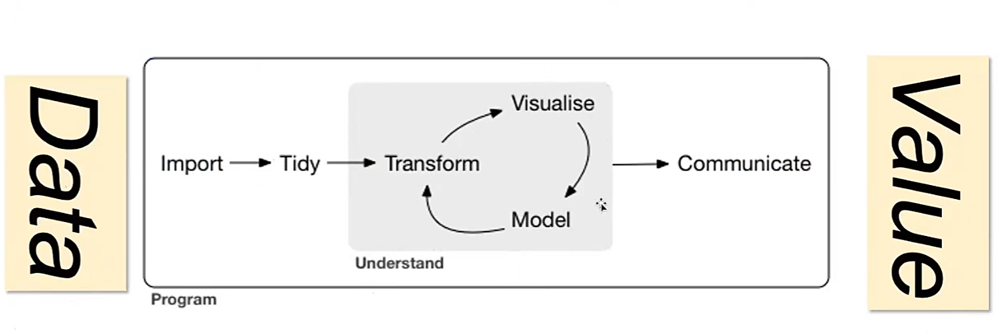
如图，从数据中提取Value的过程，其中Visualize（可视化）代表Data Analysis，Modeling（建模）代表Machine Learning。
Use of Data¶
Visualization and Prediction.
Process when solving a problem:
- Consider whether the problem is worth solving
- Invention: WHAT CAN I DO?
Tools¶

"Matplotlib is too low-level"
Machine Learning¶
Learning: Improvement.
eg
-
Recommendation System: Netflix
-
Association: People who read this book also read...
-
Email spam classification
Lec2: Computational Thinking & Tidy Data¶
If there is no action, there is no value.
计算思维¶
四个方面：
- Decomposition: Divide and Conquer
- Abstraction: Separate the "What" from the "How"
- Recognition: Look for similarities between problems
- Generalization: Adapt previous solutions to new problems
- Computation: How to express solution unambiguously
Abstraction¶
CS61A讲过了（
This is the approach of stratified design, the notion that a complex system should be structured as a sequence of levels that are described using a sequence of languages. -- Abelson and Sussman
即复杂的系统在设计/阐述时应该被分层，每一层用不同的语言描述。
e.g. Internet的七层结构，Git分为Porcelain（面向用户）和Plumbing（Core Git）两层。
EFFECTIVE VISUALIZATION¶
Tidy Data: 数据的组织格式，使得数据更容易被处理。（例如用表格）
e.g.
即便是表格也有messy的，如下图，蓝色表格对人类来说是更可读的，而绿色（Tidy Ver.）对计算机更友好。

Data Analysis中注意的三个属性：
- Variable: 和编程语言中的变量不同，这里指的是可以被测量的性质或量
- Value: 某个时刻测量Variable的结果
- Observation: The values of several variables measured under similar conditions.
RESHAPING DATAFRAMES¶
- Column headers are values, not variable names
- Row headers are Observations.
Lec 3: Reshape Data - Introduction to Visualization¶
Creativity, Curiosity, and Compassion
e.g.
Subway Map: put you in other's shoes.
Data gathered: About Movies.

面对这些数据，我们可以提出很多问题，例如：性别不同的人分别喜欢看什么电影？年龄对电影评价的影响如何？等等。然后可以造一个Tidy的表格：
| MovieID | Title | Male_Rating | Female_Rating | Diff |
Effective Mapping¶
Types of Data:

-
N(Normals)
- Operation: =, !=
- e.g.: 邮政编码，血型，瞳孔颜色，种族，政党
- 根本无法量化的特性
-
O(Ordered)
- Operation: =, !=, >(<)(=)
- e.g.: "Low/High/Medium Income Level". 满意程度（高，中，低）
- 具有分级（Order）的大致范围
-
Q(Interval - Location of zero arbitrary - 0 只是一个标记点，实则也是一个该量的值)
- Operation: =, !=, >(<)(=), -
- e.g.: temperature（摄氏度与华氏度）, pH, SAT score
-
Q(Ratio - Location of 0 fixed - 0 代表该量的完全缺失)
- Operation: =, !=, >(<)(=), -, /
- e.g.: Physical measurements(mass, length, 开尔文温度)
- 换句话说，不存在负数（？）
Lec 4: Overview of Machine Learning¶
Value Proposition (end-to-end)
- Pain Point
- Problem Formulation (measure the pain)
- Solution Development
- Deployment
- Evaluation (reduction in pain)
- Maintenance / Sustainability
Measurement of learning¶
用P表示对某程序的表现衡量，定义经历E和某类任务T，则\(P(T,E+\Delta) > P(T,E)\)。
ML TASKS:
-
Classification / Regression
- assign a label (classification) or numerical value (regression) to an unknown entity based on a set of features and known labels (or numerical values)
-
Clustering
- group a bunch of entities that share common features
-
Optimization
- from amongst a set of alternatives pick the “best” while balancing competing value metrics
-
Forecasting
- based on the past, forecast the future
-
Recommendation
- based on prior behavior rank order candidate preferences
-
Association
- identify which items co-occur e.g., bread and peanut butter
如何评判ML TASKS完成的好坏？（mea
- 需要确定评判的指标（e.g.
Types of Learning¶
-
Supervised Learning
- We know both the input and the output
- 'Teacher'
-
Unsupervised Learning
- We only know the input
-
Reinforcement
- We know what is desired (correct) and what is not desired
- the ‘credit/blame assignment’ problem
Pull out features from data, and then feed them into a model.
Two phases of ML:
- Training (with training data)
- Testing (with testing data)
Lec 5: Evaluating a Classifier¶
Cross-Validation AND DATA LEAKAGE¶
Cross-Validation¶
没太听懂这块，这个Cross-Validation是用来减少“运气”对结果的影响，to measure authentic learning.

Data Leakage¶
Leakage: Testing data has overlapped with training data.
The twain shall never meet.
cLASSIFIER EVALUATION¶

形似倒排索引那一课的表格。
Lec 6: Decision Trees¶
决策树每个节点是一个问题，节点的每个子节点是一个答案，最终叶子节点是一个决策。
Good Decision Tree: Wide and Shallow.
建树方法：Brutal Force & Greedy Algorithm.
Recursive Partitioning¶

对于每个predictor variable，选择一个value，然后根据这个value的值将数据分为两部分，然后在purity达到最大时递归。
这个 Split 的过程就可以用 Decision Tree 来表示，分成的几部分就用几个叶子节点表示，最终得到一个可用于 Classification 的 Decision Tree。
Purity¶
- Misclassification Error Rate: \(1 - max(p1, p2, ..., pk)\)
- GINI（基尼系数）: \(1 - (p1^2 + p2^2 + ... + pk^2)\)（If the partition is fully homogeneous, \(GINI = 0\)）
- 一组父子关系（也就是一次Split）的GINI Index就是所有子节点GINI Index的加权平均。（权重为子节点数据集的大小占比）
- 叶子节点的GINI Index越小，说明这个叶子节点的数据越纯，如果降为0，说明这个叶子节点的数据完全纯净（全部属于同一类）。
- Entropy: \(-p1log(p1) - p2log(p2) - ... - pklog(pk)\)
- \(p_k\) 是在每个决策后的数据集（即每个叶子节点）中，随机挑选一个数据，其属于第k类的概率。
eg

Random Forest¶
在建森林时的随机性：
-
Bagging: 从原始数据集中随机抽取一部分数据，然后用这部分数据建立一个决策树。
- 经验上取⅔的数据
-
Feature: 从所有的特征中随机选取一部分特征，然后用这部分特征建立一个决策树。
- 经验上取\(\sqrt{p}\)个特征
Ensemble Learning¶
以 error rate 而言，Learner 可以被分为 Strong, Bad, Weak.
Ensemble Learning: 通过组合多个 Weak Learner 来构建一个 Strong Learner。
eg
以这个判断垃圾邮件的 Classifier 为例，我们仅有的特征是 Lottery（彩票）和 Sale 这两个词在邮件中出现的次数。我们要对这个 Classifier 建一个决策树。

这里value的两个分量就是当前节点对应情况下的 Spam/Ham 个数。
Bagging(Bootstrap Aggregating)¶
从原始数据集（Observations）中随机抽取一部分数据，然后用这部分数据建立一个决策树（Weak Learner）。
Weak Learner 通过投票（VOTE）合成 Strong Learner。（从图像上讲，如果某一区域被超过一半的决策树判断为 Spam，那么这个区域就鉴定为 Spam）
这里的 Vote 可以理解为加权投票，即每个决策树的权重不同。
Boosting (AdaBoost(Adaptive Boosting))¶
为每个数据点赋予一个权重，每次建树（即 Weak Learner）时，对于错误鉴定的数据点，增加其权重，在此基础上接着新建 Weak Learner 与决策树。

类似 Bagging 的投票，这里需要评判每个 Weak Learner 的权重。
使用 log-odds(accuarcy) 函数，根据 Learner 的准确率评判每个 Weak Learner 的权重：
- \(log-odds(accuarcy) = log(\frac{accuarcy}{1-accuarcy})\)

Sciktlearn-demo¶
概率论基础知识：

使用 MNIST 数据集，对数字进行鉴别。
每个数字是一个 28x28 符号组成的图片，共有 784 个 feature，每个特征是一个格子里的符号。
Lec 7: Recommender System: User-based and Item-based¶
-
Apply Machine Learning: How?
- 第一步是分辨利益相关者（Stakeholder）：Producer, Consumer, Manager
- 考虑这些利益相关者的价值主张（Value Proposition）
-
Use specific method/task
- Classification ... and so on
这一节课就探讨一下 Recommendation 的实际原理。
intro
The Long Tail Effect:
- Small number of best-selling products
- Large number of products selling in small quantities
Recommendation method¶
-
Hand Curated (人工推荐)
- 人工推荐，例如“大家都在看”
- 实则是没有考虑到当前用户的 Preference
-
Simple Aggregation （简易聚合）
- 例如 Amazon 的“Customers who bought this item also bought...”
- 仅仅是根据购买记录进行推荐
-
Personalized
Collaborative Filtering¶
Distance/Similarity Metrics¶
\(sim(u, v) = \frac{1}{1 + d(u, v)}\)
- Euclidean Distance
- Manhattan Distance
- Pearson Coefficient
- Tanimoto Coefficient
- Jaccard Distance (Similarity of sets): \(\frac{A \cap B}{A \cup B}\)
User-based¶
可使用：User Rating Matrix
- 横坐标是 Item，纵坐标是 User
- 每个格子是 User 对 Item 的评分

Drawback：Item 必须是 Users 共有的，例如说都看过一部电影，这是很难收集的。
Item-based¶
- 横坐标是需要被推荐的 Item，纵坐标是已经被评分的 Item
- 这里紫色背景的数据是这一列列头的电影（属性）和这一行行头的电影（属性）的相似度
Content-based¶
每个人对电影的不同标签有不同的 Rate，电影本身也在这些标签上有不同的 Rate，相同的标签 Rate 相乘，得到 User 在该标签上的评价（Score），将所有标签的评价加和，得到 User 对电影的评价（实则是一个矩阵乘，见下图）

Latent Factor Based¶
Lec 8¶
Alternating Least Squares¶
何时停止迭代？有下面三种情况：
- 迭代一段时间后停止
- 迭代一定次数后停止
- 计算每次迭代后与实际值的差距，当差距小于某个阈值时（或者误差不再减小了）停止
Lec 9: Optimization (Genetic Algorithm)¶
Intro: CSP
约束满足问题：我们被提供：
- 一系列变量
- 每个变量的取值范围
- 一系列约束限制了这些变量的取值
我们需要求得：
- 每个变量合适的取值，使得所有的约束条件都被满足
一些变种问题
- 这样的取值（解）是否存在
- 找到一些解
- 找到所有解
- 在某个条件下，找到最优解
与 Constraint Satisfaction Problem 不同，Optimization Problem 还需要进行解的 质量评估（Quality Measure），有时会要求一个评估函数（Evaluation Function）。
真实案例：拍卖车的最佳分配¶
Lec 10: Summary¶
Research 1¶
def one_hot_encoding(nominals):
'''
Convert a set of nominals to a set of binary variables
one_hot_encoding(['alpha','beta', 'gamma'] ->
[['alpha', [1, 0, 0]], ['beta', [0, 1, 0]], ['gamma', [0, 0, 1]]]
'''
return [[word, [1 if nominals.index(word)==i else 0 for i in range(len(nominals))]] for word in nominals]
one_hot_encoding(['alpha','beta', 'gamma'])
# >>> [['alpha', [1, 0, 0]], ['beta', [0, 1, 0]], ['gamma', [0, 0, 1]]]
混淆矩阵（Confusion Matrix）：
- True Positive（TP）：真正类。样本的真实类别是正类，并且模型识别的结果也是正类。
- False Negative（FN）：假负类。样本的真实类别是正类，但是模型将其识别为负类。
- False Positive（FP）：假正类。样本的真实类别是负类，但是模型将其识别为正类。
- True Negative（TN）：真负类。样本的真实类别是负类，并且模型将其识别为负类。
def confusion_matrix( actual, predicted):
'''
Given the actual values and predicted values generate a confusion matrix
Actual
Predicted TN FP
FN TP
[[ TN FP] [ FN TP]]
'''
TN = 0
FN = 0
TP = 0
FP = 0
assert len(actual)==len(predicted)
for i in range(len(actual)):
if actual[i]==1 and predicted[i]==1:
TP+=1
elif actual[i]==1 and predicted[i]==0:
FN+=1
elif actual[i]==0 and predicted[i]==0:
TN+=1
elif actual[i]==0 and predicted[i]==1:
FP+=1
return [[TN, FP], [FN, TP]]
人工智能逻辑¶
约 4879 个字 12 张图片 预计阅读时间 14 分钟
任课教师：廖备水
Reference
这些文字，我看不懂
Lec1: Introduction¶
推理形式¶
- 演绎推理
- “保真”：若前提为真，则结论必为真
- 这也是其有效性的描述：演绎论证是有效的当且仅当它是保真的
-
论证形式
豆子&袋子的例子可看作演绎推理的一个实例
演绎论证的形式即用字母表示。
一个论证形式是有效的当且仅当对该论证形式中的变项所做的任一解释都满足保真性。
- 从一般原理到特殊情况（类似集合中不断取子集）
- “保真”：若前提为真，则结论必为真
- 非单调推理
- 对于任何命题，若依据某个知识库中的知识均可以明确判断其真假时，知识库中知识是完备的
- 在上面的演绎推理中，每条命题都蕴含着知识，如果其知识不完备或不确定，则无法直接套用，得到正确结论。
- 不确定性：缺少准确的知识得到完全可靠的结论
- 不完备性：缺失部分信息
- 为了解决这种问题，可以在演绎推理中添加正常性假设（基于假设的演绎推理）
- 鸟会飞，除非证明它不正常
- Tweety是鸟（可以被“证明Tweety不正常”推翻）
- 所以Tweety会飞
- 假设会被新信息推翻，从而结论也会被推翻
- 称这种结论可被推翻的推理为非单调推理
- 可以把包含例外的知识表示为可废止规则，可看作“常识”，可能有例外。
- 一般情况下，如果A则B（B可被反面证据推翻）
- 归纳推理
- 从特定事例观察推断出一般规律
- 用归纳强度刻画归纳论证的好坏
- 溯因推理
- 观察现象寻找合理解释
- 关于论证的推理
- 论辩图怎么画
AIL的主要研究方向¶
what is this
Lec2: 知识的表示与推理¶
知识表示语言¶
- 表示：用一个集合的元素来表示一个集合的元素
- 一种表示知识的语言由初始符号列表和语法规则组成
- 公式表示：\(\{\neg, \land, \lor, (, )\}\)
- 有向图表示：\(G = \{V, E\}\)
用特定符号语言描述的公式或结构，由我们对公式/结构中的元素所做的不同解释，可表示现实世界中的不同知识。
推理¶
- 符号级推理：形式上的计算
- 一阶逻辑中最基本的规则是肯定前件式（MP规则）：\(a \rightarrow b, a \vdash b\)，\(\vdash\) 表示形式可推演关系。
- 知识级推理：推理的前提与结论在语义上的映射关系
- 在经典演绎推理中表现为语义蕴涵关系：若 \(a \models b\)，则当前提 \(a\) 为真，结论 \(b\) 为真
- 在论证推理中，不一定是语义蕴含，需要建立的是从论证图到可接受的论证集合的映射关系
推理系统的特性¶
- 系统内特性：一个逻辑系统内部各个成分具有的特定性质，如演绎系统中，包括有效的语义蕴涵模式、正确的推理形式等。
- 系统元特性：
- 完备性：给定前提集合 \(\Gamma\)，若其语义蕴含（\(\models\)）公式 \(A\)，那么从形式上可以从 \(\Gamma\) 推出 \(A\)（\(\vdash\)）。
- 可靠性：给定前提集合 \(\Gamma\)，若其可从形式推出（\(\vdash\)）公式 \(A\)，那么其语义蕴含（\(\models\)）公式 \(A\)。
Lec3: 命题逻辑¶
命题公式
- 命题符号（就是用个字母表示的命题）是公式（原子公式）。
- 若 \(A\) 是公式，则 \(\neg A, (A \land B), (A \lor B), (A \rightarrow B), (A \leftrightarrow B)\) 也是公式。
- 有限次使用 1 和 2 的规则，得到的都是公式。
联结词：\(\neg, \land, \lor, \rightarrow, \leftrightarrow\)
真假赋值：对命题符号赋予真假值（即一个函数，定义域是命题符号集合，值域是 \(\{0, 1\}\)（感觉就是命题的真假））

逻辑推论
给定一组命题公式集合 \(\Phi\) 和一个命题公式 \(\phi\)，则 \(\phi\) 是 \(\Phi\) 的逻辑推论，当且仅当 \(\forall v, \Phi^v = 1 \Rightarrow \phi^v = 1\)，记作 \(\Phi \models \phi\)。
类似蕴涵式，如果 \(\Phi^v = 0\)，则 \(\phi^v\)的取值无所谓
\(\Phi\) 是空集合时，\(\models \phi\) 当且仅当 \(\phi\) 是永真式。（此时也称 \(\phi\) 具有有效性）
推论
- \(ϕ\) 是可满足的 当且仅当 \(¬ϕ\) 不是有效的；
- \(ϕ\) 是有效的 当且仅当 \(¬ϕ\) 不是可满足的。
- 这两个很显然，可以构想一个真值表
- 即可以通过检验一个公式的可满足性来判断这个公式的有效性。
逻辑推论¶
若 \(\Phi \models \phi\) 且 \(\phi \models \Phi\)，则称 \(\Phi\) 和 \(\phi\) 是等价的，记作 \(\Phi \equiv(|=|) \phi\)。
常见的语义等价
- \(p \leftrightarrow q \equiv (p \rightarrow q) \land (q \rightarrow p)\)
- \(p \rightarrow q \equiv \neg p \lor q\)
- 德摩根定律：\(\neg (p \land q) \equiv \neg p \lor \neg q\)，\(\neg (p \lor q) \equiv \neg p \land \neg q\)
定理
给定 \(\phi \equiv \psi\)，则 \(\phi\) 是 \(\varphi\) 的一部分。把 \(\varphi\) 中的 \(\phi\) 替换为 \(\psi\) 得到 \(\varphi'\)，则 \(\varphi \equiv \varphi'\)
- 范式：见离散笔记
- 合取取交，析取取并
- 注意范式的每个子式只包含原子命题（的否定）的析取/合取，例如 \(\neg (\neg p)\) 什么都不是
消解推演系统¶
通过形式推演（之前的推理过程）

合取起来的子式记为集合的元素（放在大括号里），析取的子式放在中括号里。
\([p, q]\) 与 \([\neg p, r]\) 消解得到 \([q, r]\)，类比即 \(p \lor \neg p \equiv 1\)
消解推演系统

消解推演系统是可靠的，但不完备。消解可看作取交
proof

霍恩子句
对于消解系统而言，对于公式的的一些子类，对其可满足性的判断又更加有效的方法。
霍恩子句：子句 \(L_1 \land L_2 \land \cdots \land L_n\) 中如果至多包含一个正文字，那么这个子句就是霍恩子句。
- 四种形式：
- \(p \leftarrow q_1, q_2, \cdots, q_n (n \neq 0)\)
- \(p \leftarrow (n = 0)\)
- \(\leftarrow q_1, q_2, \cdots, q_n (n \neq 0)\)
- \([空]\)
SAT¶
实现可满足性的推理引擎称为 SAT（Satisfiability）求解器：在给定一个公式的前提下，寻找一个真值赋值，使得公式为真。（即寻找真值表中某一行，使目标公式为真）
该算法是 NP 完全的
经典算法：DPLL

例
设 \(\Phi = \{[p,q, \neg r], [\neg p, \neg q], [r], [p, \neg q]\}, \Sigma = {p,q,r}\)。SAT 算法的执行过程：
- 单位传播规则：令 \(r \rightarrow 1\)，得到简化的字句集合 \(\{[p,q], [\neg p, \neg q], [p, \neg q]\}\)
- 分裂规则
- \(p \rightarrow 0\)，得到简化：\(\{[q], [\neg q]\}\)，令 \(q \rightarrow 1\) 得到空子句，公式不成立，回溯
- \(p \rightarrow 1\)，得到简化：\(\{[\neg q]\}\)，令 \(\neg q \rightarrow 0\)，即可满足
Lec 4: 一阶逻辑¶
不同于 Lec 3 中的公式，为了描述更日常的命题，需要引入对象、论域、函词、谓词、量词等概念。个体常元和个体变元统称项。例如，“张三的哥哥是学生”可以表示为 \(F(g(ZS))\)，其中 \(F\) 表示“...是学生”，\(g\) 表示“是...的哥哥”。
Definitions
- 论域：所有被讨论对象的集合。
- 个体：域中的元素，即被讨论的对象。
- 常元：用于表示确定对象的符号。
- 变元：用于表示给定论域上的任意一个对象的符号。
- 函词：给定一个论域，从一组个体到一个个体的映射关系。
- 项：
- 个体常元和个体变元是项。
- 如果 \(t_1, t_2, ... t_n\)是项，\(f\) 是 n 元函词，那么 \(f(t1, t2, \cdots, t_n)\) 是项。
- 有限次使用(1)(2)生成的是项。
- 谓词：描述个体之间的关系。谓词包含着可放置讨论对象的位置，即 空位。 空位的数量称为谓词的元数。用一元谓词表示的关系称为个体的性质。
一阶语言¶
- \(F(t_1, t_2, \cdots, t_n)\) 是原子公式，其中 \(F\) 是 n 元关系符号，\(t_1, t_2, \cdots, t_n\) 是项。
- 如果 \(t_1,t_2\) 是项，那么 \((t_1 \equiv t_2)\) 是原子公式。
- 如果 \(\phi\) 和 \(\Phi\) 是公式，且 \(x\) 是出现于 \(\phi\) 中的自由变元，则 \((\neg \phi), (\phi \land \Phi), (\phi \lor \Phi), (\phi \rightarrow \Phi), (\forall x \phi), (\exists x \phi)\) 都是公式。
- 有限次使用上述三条规则生成的都是公式。
代换
代换 \(\theta\) 是一个有限的对子集合 \(\{x_1/t_1, x_2/t_2, \cdots, x_n/t_n\}\)，其中 \(x_i\) 是变元，\(t_i\) 是项。代换 \(\theta\) 作用于公式 \(\phi\)，得到 \(\phi\theta\)，是将 \(\phi\) 中的所有自由变元 \(x_i\) 替换为 \(t_i\) 得到的公式。
第六周课上例题
- 将下列命题转化为一阶语言
- 这朵牡丹是红的
- 论域：全体牡丹，个体 c：这朵牡丹 \(Mudan(c) \land Red(c)\)
- 张先生和李女士的丈夫是同事
- \(Colleague(张, Husband(李))\)
- 任何安全事故都有其原因
- 论域：全体安全事故，\(Accident^v \subseteq D\), \(Reason^v \subseteq D \times D\), \(\forall x (Accident(x) \rightarrow \exists y Reason(y, x))\)
- 任何安全事故都有共同原因
- \(\exists y \forall x (Accident(x) \rightarrow Reason(y, x))\)
- 一个人如果有私心，总难免把有些工作弄糟
- 尽管有人自私，但未必所有人都自私
语义¶
消解原理¶
前束范式
称一阶逻辑公式 \(ϕ\) 为前束范式，当且仅当它有如下的形式：
\(Q_1 x_1 Q_2 x_2 \cdots Q_n x_n ϕ′\)
其中, \(Q_1 ⋯ Q_n\) 是量词 \(∀\) 或 \(∃\)；\(x_1, ⋯ x_n\) 是变元；\(ϕ′\) 是不含量词的公式。称 \(Q_1 x_1 ⋯ Q_n x_n\) 为前束词，\(ϕ′\) 为母式。前束范式的母式可以进一步变换为合取范式或析取范式。
有关如何把一阶逻辑公式转化为前束范式，可见：https://hanshuliang.blog.csdn.net/article/details/108848579
类似命题逻辑，要把公式转化为等价的子句形式。
对包含自由变元的子句进行消解时，如果子句都是全称量化的，则可以去掉量词（e.g. \(\forall x \forall y (F(x) \rightarrow H(x,y))\) 可简化为 \(F(x) \rightarrow H(x,y)\)）。
推演规则
给定两个字句 \(c_1 \lor \{L_1\}\) 和 \(c_2 \lor \{\overline{L_2}\}\)，如果它们没有公共变元，且存在一个代换 \(\theta\) 使得 \(L_1 \theta = L_2 \theta\),那么可以推出子句 \((c_1 \lor c_2) \theta\)，\(\theta\) 是 \(L_1\) 和 \(L_2\) 的合一。
对于包含存在量词的公式，可把该存在量词所管辖的变元变成确定的个体，表示该确定个体的项被称为斯科伦常元；表示受限制的该确定个体的函词被称为斯科伦函词。（就是把 \(exists xF(x)\) 变成 \(F(a)\)，\(a\) 就是满足原公式的常元）
Lec 5: 知识图谱与描述逻辑¶
知识一般有一定的结构，利用三元组 prop{ind, Prop, Val} 来表示知识，分别是主动宾
可以把这种知识表示为一个有向图，其中对顶点 ind 到 Prop 的有向边标记为 Val，形成的图叫做语义网络。
知识图谱

描述逻辑中，区分 TBox（术语框）和 ABox（断言框），前者描述概念层次的语句，后者描述实例层次的语句。
角色限制¶
到现在为止，我们已经看到了如何分别使用 TBox 和 RBox 公理来表达概念和角色之间的关系。然而，描述逻辑最有趣的特点是能够形成将概念和角色联系在一起的语句。例如，概念 Parent 和角色 parentOf 之间存在明显的关系，即父母是至少一个人的父母。在描述逻辑中，这种关系可以通过如下概念等价来表达：\(Parent ≡ ∃parentOf.⊤\)
其中，存在限制 \(∃parentOf.⊤\) 是一个复杂概念，它描述了这样的个体集合：其中的每个个体都是至少一位个体（⊤ 的实例）的父母。类似地，\(∃parentOf.Female\) 这个概念描述了那些至少有一个女性的父母，即那些有女儿的人。
为了表达所有孩子都是女性的个体的集合，可以使用全称限制：\(∀parentOf.Female\)
ALC 语法¶
三元组 \(\{N_C, N_R, N_I\}\)，其中 \(N_C\) 是概念符号集合，\(N_R\) 是角色符号集合，\(N_I\) 是个体名集合。
ALC
在描述逻辑 ALC 中，有两个概念 Male, Female，一个角色 hasChild，那么
- Person = Male or Female
- Mother = exists hasChild.T and Female
- Childless = not hasChild.T
- Grandmother = Female and exists hasChild.(exists hasChild.T)
表算法：
Lec 6: 缺省逻辑¶
通常情况下，如果 \(\phi\) 为真，那么 \(\psi\) 为真；这里的“通常情况”说明这一规则并非在任何情况下都成立，于是引入缺省规则表示例外的情况。
缺省规则¶
\(\frac{\phi : \psi}{\eta}\)，其中 \(\psi\) 称为缺省条件，\(\eta\) 称为缺省结论。
解释为：
- 如果可以证明 \(\phi\)，且 \(\psi\) 是一致的，那么可以推出 \(\eta\)。
- 如果可以证明 \(\phi\)，且不能证明 \(\neg \psi\)，那么可以推出 \(\eta\)。
- 如果可以证明 \(\phi\)，且例外 \(\neg \psi\) 并未发生，那么可以推出 \(\eta\)。
缺省理论
一个缺省理论是一个二元组 \(T = {W, D}\)，其中 \(W\) 是一阶逻辑公式集合，用于表示已知的或约定的事实；\(D\) 是可数的缺省规则集合，用于表示缺省的知识。
缺省逻辑的语义¶
TBD
Lec 7: 回答集编程¶
逻辑程序
逻辑程序由一组逻辑编程规则组成。每条逻辑编程规则形如：
\(a_0 \leftarrow a_1, a_2, \cdots, a_n, not a_{n+1}, \cdots, not a_{n+k}\)，其中 \(a_i\) 是原子公式，\(not a_i\) 是失败即否定 naf 公式。
箭头左侧是头部，右侧是体部。
一些特殊情况：
- \(a_0 \leftarrow .\) 称为事实
- \(\leftarrow a_1, a_2, \cdots, a_n, not a_{n+1}, \cdots, not a_{n+k}\) 称为约束或目标
- \(a_0 \leftarrow a_1, a_2, \cdots, a_n\) 称为肯定规则
一个语言 L 的赫布兰德域，记作 \(HU_L\), 是所有可以由 L 中的个体常元和函数形成的基项的集合。一个语言 L 的赫布兰德基底，记作 \(HB_L\), 是所有可以由 L 中的谓词和 \(HU_L\) 的项形成的基原子的集合。
基化
设 𝑟 是语言 L 中的一条规则。𝑟 在 L 中的基化（grounding），记作 ground(𝑟, L)，是用 \(HU_L\) 中的元素对 𝑟 中的变元进行所有可能的代换而得到的所有规则集合。
对于程序 \(\Pi\)，其基化记作 \(ground(\Pi, L) = \bigvee_{r \in \Pi} ground(r, L)\)，即对 \(\Pi\) 中的每条规则进行基化。
例

Lec 8: 经典抽象论辩理论¶
抽象论辩框架
论辩框架可用有向图表示，其中顶点表示论辩者，a 到 b 的有向边表示论证 a 攻击论证 b。
如果一个论证不自我攻击，且不被其他论证攻击，则称其为可接受的。如果一个被接受的论证攻击另一个论证，则后者应该被拒绝。
如果一个论证遭到攻击，但所有攻击者都被拒绝，则这个论证是可接受的，称其被复原。
基于外延的语义¶
这里先介绍论证集合的两个性质：无冲突和可防御。
\(E\) 无冲突：也即 \(E\) 构成的论证图内不存在边
\(E\) 可防御 \(\alpha\)：\(α\) 的所有攻击者都被 \(E\) 攻击
用人话讲就是，对于\(E\)中每个论证，要么没有受到攻击，要么受到攻击但（由于攻击者被拒绝）可复原。
满足这两个性质（E是无冲突的且E可防御E中每个论证）的论证集合\(E\)称为可相容外延。
例

答案是1,1,0,0,1
定理
\(E\) 是可相容外延，且 \(E\) 可防御论证 \(a\) 和 \(a'\)，那么 \(E' = E \lor \{a\}\)是可相容的，且 \(E'\) 可防御 \(a'\)
完全外延¶
\(AF = <AR, attacks>\) 的特征函数 \(F_{AF}(S)=\{\alpha | S 可防御 \alpha\}\)
当 \(𝐹_{𝐴𝐹}(𝑆) = 𝑆\) 时，我们称 \(𝑆\) 是 \(𝐹_{𝐴𝐹}\) 的不动点。这时，集合 𝑆 中包含了所有 𝑆 可防御的论证。我们把这样的集合称为完全外延。
-
对于论证集合 \(E \subseteq AR\)，𝐸 是基外延，当且仅当 𝐸 是最小的（关于集合包含关系）完全外延。
-
𝐸 是一个优先外延，当且仅当 𝐸 是一个极大的（关于集合包含关系）完全外延。
稳定外延与半稳定外延¶
给定 \(𝐴𝐹 = ⟨𝐴𝑅, 𝑎𝑡𝑡𝑎𝑐𝑘 𝑠⟩\)，一组论证集合 𝐸 是一个稳定外延，当且仅当：𝐸 是无冲突的，且对于任意 \(𝛼 ∈ 𝐴𝑅 / 𝐸\)，𝐸 攻击 𝛼。
𝐸 是一个半稳定外延，当且仅当：𝐸 是完全外延，且 \(𝐸 ∪ 𝐸^+\) 是极大的（关于集合包含关系），其中 \(𝐸^+ = \{𝛼 ∈ 𝐴𝑅 | 𝐸攻击𝛼\}\)。
基于标记的语义¶
为每个论证分配一个标签（IN：被接受的，，OUT：被拒绝的，UNDEC：未确定的）
指派的标签不一定合法，
- 合法指派：
- IN：如果 \(a\) 是 IN，则所有攻击者都必须是 OUT
- OUT：如果 \(a\) 是 OUT，则至少有一个攻击者是 IN
- UNDEC：如果 \(a\) 是 UNDEC，则所有攻击者都没有被标记为 IN，且至少有一个攻击者没有被标记为 OUT
类似上面的外延，
- 可相容标记推外延：设 𝐴𝐹 = ⟨𝐴𝑅, 𝑎𝑡𝑡𝑎𝑐𝑘 𝑠⟩ 是一个抽象论辩框架。如果 𝐿 是 𝐴𝐹 的一个可相容标记，那么 𝑖𝑛(𝐿) 是 𝐴𝐹 的一个可相容外延。
-
可相容外延推标记：设 𝐸 是 𝐴𝐹 = ⟨𝐴𝑅, 𝑎𝑡𝑡𝑎𝑐𝑘 𝑠⟩ 的一个可相容外延。那么 \(𝐿 = (𝐸, 𝐸+, 𝐴𝑅 \ (𝐸 ∪ 𝐸^+))\) 是 𝐴𝐹 的一个可相容标记。其中，\(𝐸^+ = \{𝛼 ∈ 𝐴𝑅 | 𝐸攻击𝛼\}\)。
-
设 𝐴𝐹 = ⟨𝐴𝑅, 𝑎𝑡𝑡𝑎𝑐𝑘 𝑠⟩ 是一个论辩框架，𝐿 是 𝐴𝐹 的一个完全标记，当且仅当：𝐿 是 𝐴𝐹 的一个可相容标记，且对于任意 𝛼 ∈ 𝐴𝑅，如果 𝐿(𝛼) = UNDEC，那么 𝐿(𝛼) = UNDEC 是合法的。
-
𝐿 是 𝐴𝐹 的一个优先标记，当且仅当 𝐿 是 𝐴𝐹 的一个完全标记，且 𝑖𝑛(𝐿) 是极大的（关于集合包含关系）；
- 𝐿 是 𝐴𝐹 的一个基标记，当且仅当 𝐿 是 𝐴𝐹 的一个完全标记，且 𝑖𝑛(𝐿) 是最小的（关于集合包含关系）；
- 𝐿 是 𝐴𝐹 的一个稳定标记，当且仅当 𝐿 是 𝐴𝐹 的一个完全标记，且 𝑢𝑛𝑑𝑒𝑐(𝐿) = ∅;
- 𝐿 是 𝐴𝐹 的一个半稳定标记，当且仅当 𝐿 是 𝐴𝐹 的一个完全标记，且𝑖𝑛(𝐿) 和 𝑜𝑢𝑡(𝐿)是极大的（关于集合包含关系）。
抽象论辩语义的模块化¶
局部语义¶
局部标记子框架的标记
把一个局部标记子框架 \(( (𝐵, 𝑅_𝐵), (𝐵^−, 𝐼_𝐵)^𝐿)\) 的标记定义为：\(𝐿′: 𝐵 ∪ 𝐵^− ↦ {IN, OUT, UNDEC}\)，使得对于所有 \(𝑎 ∈ 𝐵^−, 𝐿'(𝑎) = 𝐿(𝑎)\)
Lec9: 结构化论辩理论¶
攻击关系¶
击败关系¶
两个论证的强弱之比可以被定义为这两个论证所对应的两个可错元素的集合的强弱之比，有三种方法：
- 占优方式：\(S_1 \geq_{Dom} S_2\) 当且仅当 \(\exists x \in S_1, \exists y \in S_2\)，s.t. \(x \geq y\)，且 \(\nexists x \in S_2, \nexists y \in S_1\)，s.t. \(y \geq x\)（S_1有一个元素比S_2的某个元素强，且S_2没有比S_1的元素强的）
- 精英方式：\(S_1 \geq_{Elite} S_2\) 当且仅当 \(\forall x \in S_1, \exists y \in S_2\)，s.t. \(x \geq y\)（S_1的所有元素都比S_2的某个元素强）
- 民主方式：\(S_1 \geq_{Dem} S_2\) 当且仅当 \(\exists x \in S_1, \forall y \in S_2\)，s.t. \(x \geq y\)（S_1有一个元素比S_2的所有元素强）
自然语言处理相关
自然语言处理相关¶
Computer Science
我感觉很难受
计算机系统Ⅰ¶
约 1497 个字 29 行代码 5 张图片 预计阅读时间 5 分钟
成绩组成
- 作业 10%
- Projects 共60%
- Lab0 - 实验准备 6%
- Lab1 - 多路选择器+七段数码管 10%
- Lab2 - 加减法器 6%
- Lab3 - 时序电路 8%
- Lab4 - 卷积核 8%
- Lab5 - 汇编实现 10%
- 大程 - Single Cycle CPU 12%
- Bonus - Multi-Cycle CPU 10%
- Final 30%
理论课部分¶
Von Neumann架构：I/O System \(\leftrightarrows\) CPU \(\leftrightarrows\) Memory
Instructions: 0/1 binaries
编译型高级语言 \(\underrightarrow{\text{Compiler}}\) 汇编语言 \(\underrightarrow{\text{Assembler}}\) 机器语言
解释型高级语言 \(\underrightarrow{\text{Interpreter}}\) 机器语言
进制转换¶
例：\(1011.101_2 = 2^3 + 2^1 + 2^0 + 2^{-1} + 2^{-3} = 11.6875_{10}\)
数据的表示¶
用n个bit的的二进制数编码一个真值（true value）为X的数字，编码后得到机器数（machine number）
\(X = X_{n-1}X_{n-2}\dots X_1X_0\)
无符号整数(unsigned integer)范围: \(0 \le X \le 2^n - 1\)
有符号整数(signed integer)范围: 编码方式不同，有不同的范围
- 原码(original code)：最高位为符号位，0为正，1为负
- 缺点：0有两种表示，+0和-0，导致可表示的范围减小1
- Hardware Complexity
- 二进制加法失效
- 反码(one's complement)：正数的反码与原码相同，负数的反码是对应正数的原码的每一位取反
- 优点：二进制加法后，将进位加到最后一位上即可得到正确结果
- 缺点：0还是有两种表示，+0和-0
- 补码(two's complement)：正数的补码与原码相同，负数的补码是对应正数的原码的每一位取反，然后加1
- 优点：0只有一种表示
- 缺点：最小的负数没有对应的正数
- 二进制加法后，将溢出位丢弃即可得到正确结果
- 已知A(用补码表示)，那么-A的补码就是A按位取反（包括符号位）然后加1
- 补码的减法就是把减数取反加1，然后加到被减数上
- 补码的范围：\(-2^{n-1} \le X \le 2^{n-1} - 1\), n为位数
Modulo Operation
If \(A,B,M\) satisfy \(A = B + K \times M\), then \(A \equiv B \pmod M\)
浮点数的表示（IEEE 754 Standard）
 s为符号位，exp为指数位，frac为尾数位。见https://zhuanlan.zhihu.com/p/107106675
s为符号位，exp为指数位，frac为尾数位。见https://zhuanlan.zhihu.com/p/107106675
\(V = (-1)^s \times M \times 2^{E - bias}\)
其中 \(E\) 为指数位对应的十进制数，\(M\) 为\(1.尾数\)
对任意浮点数，\(E-bias\)是固定值，因此根据一种位数下的表示与所给的偏移量可计算出另一位数表示下其指数位的值。（很绕，见作业）
单精度（32位）：1 位符号位，8 位指数位，23 位尾数位
双精度（64位）：1 位符号位，11 位指数位，52 位尾数位
布尔代数¶
- 与：\(A \cdot B\)
- 或：\(A + B\)
- 非：\(\overline{A}\)
- 优先级：非 > 与 > 或
K-map¶
\(n\)个变量对应的K-map是一个\(2^n\)个元素的表格，每个元素对应一个变量组合。
尽可能画一个大的框，框中元素个数为\(2^n(n\ge 1)\)
例
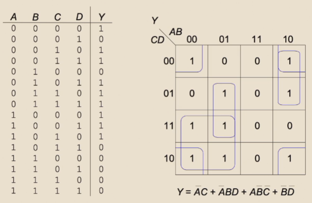
作业
纸质作业可供复习(疑似有错)
ISA¶
ISA(Instruction Set Architecture)是指令集架构，是计算机硬件与软件之间的接口。
通俗来讲就是，规定了寄存器个数，可运行的指令，哪些寄存器是干啥的，数据的单位类型和占据的大小（比特字节字这种）等等。设计者只要设计满足这些特性的程序，都可以在这种架构的计算机上运行。
Verilog补天¶
Basic¶
这一段代码表示一个叫做main的电路module(模块)，先声明I1、I2、I3、O这几个输入/输出的引脚序列。注意main后小括号里只能放输入输出引脚，可以类比函数，只关心它的输入是哪些。
wire的电气特性：必须被有且仅有一个assign输入，可以有0个或者多个assign输出。
运算符：&表示按位与，|表示按位或，^表示异或，~表示非。
如果没声明过一个变量a的类型，直接有assign a = I0，a默认为wire，可以在文件头加上`default_nettype none来查找这个错误。
Vectors¶
类似数组，wire [3:0] a = 4b'1011;声明四根“捆在一块的线”，相当于一个位宽为4的二进制数
如果这时候直接assign b = a，b默认是1bit的wire，导致隐式转换，b被赋值为a的最低位1。
还可以写二维数组，wire [3:0] a [1:0]表明有两个unpacked element，每个element都是一个4bit的wire。
用{变量1,变量2, ...}创建位宽为其元素之和的向量，因此变量需要指明位宽，如{4'b1011, 4'b1100}是合法的，但{11, 12}是不合法的。
位数较小赋值给位数较大，先填充低位，高位补0。位数较大赋值给位数较小，优先保留低位，高位舍弃。
二选一多路选择器¶
\(O = S \cdot I_0 + \overline{S} \cdot I_1\)
其中，\(S\)为选择信号，\(I_0\)和\(I_1\)为输入信号，\(O\)为输出信号。
点乘号表示逻辑与，加号表示逻辑或，横线表示逻辑非。
使用代码实现：
四选一多路选择器¶
\(O = \overline{S_1} \cdot \overline{S_0} \cdot I_0 + S_0 \cdot \overline{S_1} \cdot I_1 + \overline{S_0} \cdot S_1 \cdot I_2 + S_1 \cdot S_0 \cdot I_3\)
实现：使用三个二选一多路选择器实现。（封装两个二选一多路选择器模块）
\(Mux(I0, I1, S) = S \cdot I_1 + \overline{S} \cdot I_0\)
\(O = Mux(Mux(I_0, I_1, S_0), Mux(I_2, I_3, S_0), S_1)\)
module mux4to1(
input I0,
input I1,
input I2,
input I3,
input S0,
input S1,
output O
);
wire w1, w2;
mux2to1 Mux1(I0, I1, S0, w1);
mux2to1 Mux2(I2, I3, S0, w2);
mux2to1 Mux3(w1, w2, S1, O);
endmodule
lab2 - 加减法器¶
全加减器¶
N位二进制的加减法是\(\mod 2^N\)下的加减法。

A的解释

lab3 - 时序电路¶
史
lab5 - riscvs汇编¶
快速入门：https://blog.csdn.net/m0_62730135/article/details/126799687
https://zhuanlan.zhihu.com/p/502146080
学长笔记：https://note.tonycrane.cc/cs/pl/riscv/unprivileged/
函数返回值默认存在a0寄存器中，jr ra就能返回，ret也能返回。
sd a0, x(sp)：memory[sp+x] = a0
ld a0, x(sp)：a0 = memory[sp+x]
Can u feel it?
计算机系统 Ⅱ¶
约 8492 个字 182 行代码 38 张图片 预计阅读时间 27 分钟
ISA 指令集体系结构¶
分类 - 根据内部存储结构¶
- 栈 Architecture
- 操作数在栈顶（TOS: Top of Stack）
- 对于 C = A + B，指令为
push A; push B; add; pop C
- 累加器 Architecture
- 一个隐式操作数来自累加寄存器，另一个来自内存，计算结果在累加寄存器中
- 对于 C = A + B，指令为
load A, add B, store C
- 寄存器-内存 Architecture
- 所有指令都可以访问内存
- 第二个操作数（以下例子中为
B）来自内存 - 对于 C = A + B，指令为
load R1, A; Add R3, R1, B; Store R3, C
- 寄存器-寄存器: Load/Store Architecture
- 操作数都在寄存器中
- 对于 C = A + B，指令为
Load R1, A; Load R2, B; Add R3, R1, R2; Store R3, C
Practice
D = A * B - (A + C * B)
Register-Memory
RISC-V ISA 汇编¶
（其实是系统一的东西）32 位指令
- Opcode: 操作码，用于识别指令类型
- rs1: the first register source operand
- rs2: the second register source operand
- rd: the register destination operand
- funct3/7: （从Opcode的指令类型中）确定特定的指令
- imm: immediate value or address

寄存器与内存：

一些例子：

Addressing Mode 寻址模式¶

Also Ref: https://note.tonycrane.cc/cs/system/cs1/topic5/
Pipelining 流水线概述¶
通过Overlapping的方式，将多个指令的多个阶段同时进行，提高吞吐量，以提高CPU的效率。
定义吞吐量（Throughput/TP）：单位时间内完成的指令数。
\(TP = \frac{n}{T} \lt TP_{max}\)且\(T = (m+n-1) \times \Delta t_0\)，其中\(m\)为流水线级数，\(n\)为指令数，\(\Delta t_0\)为流水线时钟周期。
\(TP_{max} = \lim_{n\to\infty} \frac{n}{T} = \frac{1}{\Delta t_0}\)
Solve Bottleneck¶
- Subdivide the task
- Repetition
定义加速比（Speedup/SP）：\(Sp = \frac{Exetime_{non-pipe}}{Exetime_{pipe}} = \frac{nm\Delta t_0}{(m+n-1)\Delta t_0} = \frac{nm}{n+m-1}\)
\(n \to \infty\)时，\(Sp \to m\) （理想加速比为流水线级数）
效率\(E = \frac{SP}{m} = TP \cdot \Delta t_0\)
Hazard 冲突¶
结构冲突¶
多条指令在同一时钟周期抢着访问同一个物理资源。
Solution：
- Stall（Always works）
- 添加更多硬件
数据冲突¶
控制冲突¶
分支预测
- 静态分支预测：总是预测分支不发生
- 动态分支预测：根据历史记录预测
- 维护分支历史记录表（Branch History Table）
非线性流水线¶
Multiple Issue 多发射¶
为了改进指令级别的并行（ILP, Instruction Level Parallelism），除了加深流水线外，还可以同时发射多条指令。
- 静态多发射：编译器把多条指令打包到“issue slots”中
- 编译器探测并避免冲突
- 动态多发射：CPU解析指令流，选出多发射的指令
- 编译器可以通过重排指令来提高多发射的效率
- CPU 在运行时解决冲突
下面是三种多发射的处理器：
Superscalar 超标量¶
- 每个时钟周期发射的指令不固定，最多可达\(n\)条。（称为\(n\)-issue）
- 可以静态由编译器指定，或动态由Tomasulo算法决定
VLIW (Very Long Instruction Word) 超长指令字¶
- 每个时钟周期的指令数是固定的，但是每条指令包含一条长指令或是指令 packet
Super-Pipeline 超流水线¶
- 每个流水间阶段都被进一步细分，同一时钟周期内的多条指令可以 time-shared
- For a super-pipelined computer that can flow out n instructions per clock cycle, one instruction is flowed out every 1/n clock cycle
上述几种的时空图如下

冲突与中断¶
我感觉不考
Computer Architecture 计算机体系结构¶
冯诺依曼架构：I/O System <-> CPU <-> Memory
存储在内存中的数据，基本单元是Byte，每个数据都被一个地址标记，一台机器上所有的地址的位数是一样的。
当一个程序加载到内存中，它的地址空间（Address Space）分为两部分：Code 和 Data。
Operating System 操作系统¶
ELF 概述¶
C程序编译为可执行文件的四个过程：
- 预处理 —— 宏展开
- 编译 —— 源代码转为汇编
- 汇编 —— 汇编转为机器码
- 链接 —— 将多个目标文件链接为一个可执行文件，链接库
最终的可执行文件包含一个 crt(C runtime)，这个 crt 内会调用 main 函数。
ELF - Executable and Linkable Format 二进制文件内包含如下段（Section）：
- .text: 代码段
- .rodata: read only 数据段
- .data: 初始化数据段
- .bss: 未初始化数据段
-
Static linking
- All needed code is packed in single binary, leading to large binary
_startis executed after evecve system call
-
Dynamic linking
- Reuse libraries to reduce ELF file size
- Howto resolve library calls?
- It is the loader who resolves lib calls.
- Entry point 是 loader


_libc_start_main: Setup environment and stack, then call main
Memory Layout 内存布局¶

在二进制文件运行时的内存布局。
注意 stack 从高地址向低地址增长，heap 从低地址向高地址增长。

可能的考点（来自复习课）
- 线程可以共享 Heap，但不共享 Stack，为什么？
- Stack 里含有返回地址等信息，不适合共享
DMA(Direct Memory Access)：设备直接访问内存，不经过CPU。
OS Structure 操作系统结构¶
操作系统是一种“Resource Allocator and Abstracter”，它管理硬件资源，提供抽象接口。

UI: CLI -> GUI -> Touchscreen...
-
简单结构 Simple Structure
- MS-DOS
- 不区分用户和内核态
- 用户程序、操作系统程序、驱动程序都运行在同一个地址空间，可以互相操作
-
整体结构 Monolithic Structure
- Unix
- 有区分用户和内核态
- 操作系统程序运行在内核态，用户程序运行在用户态
- 用户程序通过系统调用访问内核态
- 内核态程序给用户态程序接口来提供服务
-
微内核结构 Microkernel Structure
- Mach, Minix...
- 防止内核态程序过于复杂，漏洞概率更大
- 尽可能多地将内核代码移动到用户态中
- 内核只提供最基本的服务，其他服务通过进程间通信实现：更稳定
- 将操作系统的功能分为多个独立的进程
- 可移植性更好
-
模块化结构 Modular Structure
- Linux (Modular + Monolithic)
- 将内核分为多个模块（loadable kernel module），每个模块负责一个特定的功能
- 模块可以动态加载和卸载
- 保持了微内核结构的优点，同时减少了进程间通信的开销
-
外核结构 Exokernel Structure
- 外内核则进行更少的抽象，来让用户程序可以有更多控制物理资源的可能
- 内核只进行物理资源的分配和保护，而资源的使用、管理都由用户程序自己决定
- 用户程序可以直接访问硬件资源，自己实现操作系统的功能
-
层级结构 Layered Structure
- 为了提高模块化结构的性能，将模块分为多个层次
- 最底层权限最高，为硬件
- 每个层次只能调用比自己低的层次，不能调用比自己高的层次
- 例如，文件系统、网络协议栈等
-
混合结构 Hybrid Structure
- 结合了多种结构的优点
- 例如，Windows NT, Apple Mac OS X
Event 事件¶
Event 分为 Interrupt - 由硬件引起，Exception - 由软件引起。
一些指令会被限制：只有OS能够执行它们（Privileged Instructions），CPU是如何判断当前状态能否执行这些指令的？
- All modern processors support (at least) two modes of execution:
- User mode: In this mode protected instructions cannot be executed
- Kernel mode: In this mode all instructions can be executed
- User code executes in user mode (e.g., application code)
- Kernel code executes in kernel mode (e.g., OS code)
- The mode is indicated by a status bit in a protected control register
- The CPU checks this bit before executing a protected instruction
可能的考点（来自复习课）
- 狭义操作系统：Kernel Mode
- 广义操作系统：Kernel Mode + 一部分 User Mode
- User code executes in user mode (e.g., application code)
- Kernel code executes in kernel mode (e.g., OS code)

Event是操作流中“不被预期”的情况，CPU会根据Event的类型，调用相应的Handler。
- An event stops execution, changes mode, and changes context
- The kernel defines a handlerfor each event type
OS Code running: Boot -> Wait for Event -> Event Handler -> Return to Wait
特殊的 Event：
- System Call - 会导致Trap -> System Call Handler
- 发生于User Mode下需要执行Privileged Instructions的情况
- e.g., to create a process, write to disk, read from the network card
- 每种ISA都有自己的System Call

- 为什么
printf需要SysCalllibc_write？- 打印到终端这种Device I/O需要 Kernel Mode (Privileged Instructions)
- 发生于User Mode下需要执行Privileged Instructions的情况
- Timer Interrupt - 会导致Regularly Interrupt -> Timer Interrupt Handler

System Call 系统调用（重点）¶
System Call 是操作系统提供给用户程序的接口（interface），用于访问操作系统的服务。
每个 Syscall 有自己的 Syscall Number，通过这个 Number 来调用 Syscall，这个 Number 就是 Syscall Table 的索引，OS 对具体的 Syscall 不感兴趣，只根据 Number 跳到 Kernel 中对应的 Handler。
可能的考点（来自复习课）
- System Call 中是否存在 Context Switch？
- 存在。
- Kernel Stack 和 User Stack 的区别？
- Kernel Stack 大小固定，还含有 PCB 的指针信息
strace可以查看程序的System Call。
https://www.cnblogs.com/machangwei-8/p/10388883.html
SysCall的类型：
-
Process control
- create process, terminate process
- end, abort
- load, execute
- get process attributes, set process attributes
- wait for time
- wait event, signal event
- allocate and free memory
- Dump memory if error
- Debuggerfor determining bugs, single step execution
- Locks for managing access to shared data between processes
-
File management
- create file, delete fileopen, close fileread, write, reposition
- get and set file attributes
-
Device management
- request device, release device
- read, write, repositionget device attributes, set device attributes
- logically attach or detach devices
-
Information maintenance
- get time or date, set time or date
- get system data, set system data
- get and set process, file, or device attributes
-
Communications
- create, delete communication connection
- send, receive messages if message passing model to host nameor process name
- From client to server
- Shared-memory model create and gain access to memory regions
- transfer status information
- attach and detach remote devices
-
Protection
- Control access to resources
- Get and set permissions
- Allow and deny user access
可能的考点（来自复习课）
kernel_entry在 Syscall 时被调用，用于保存 User Space 的寄存器信息ret_to_user在 Syscall 结束时被调用，用于恢复 User Space 的寄存器信息，把控制流交还给 User Space
System Service 系统服务¶
可能的考点（来自复习课）
- 动态链接和静态链接的区别和优劣？
- 静态链接：所有的库都被打包进可执行文件，文件较大
- 动态链接：只有一个 loader，运行时运行
ld.so，解析符号表，加载库，文件较小
Process 进程¶
进程是一个正在执行的程序的实例，例如说一个ELF加载到内存中，开始执行。
a unit of resource allocation and protection
对于同一个Program的不同Process，它们的
- .text段是相同的（Size & Content）
- .data段的Size是相同的，但Content可能不同
- Stack和Heap两者都不同
可能的考点（来自复习课）
- 进程是 a unit of resource allocation and protection
- 线程是 a unit of execution
Process Control Block 进程控制块 PCB（重点）¶
也称为Task Control Block，是操作系统用来管理进程的数据结构，存储每个进程的信息。
- 每个进程有且仅有一个PCB。
- 在新进程创建时，OS会为其分配一个PCB
-
在进程终止时，OS会回收PCB
-
存储这些 Process 的 META data：
- Process State - Running, waiting, ready, etc.
- Program Counter - Address of next instruction
- CPU Registers - Values of all process-centric registers
- Blah blah blah...

On Linux: PCB is task_struct
Process State 进程状态¶
As a process executes, it changes state. The state of a process is defined in part by the current activity of that process.
- New: The process is being created.
- Running: Instructions are being executed.
- Waiting: The process is waiting for some event to occur.
- Ready: The process is waiting to be assigned to a processor.
- Terminated: The process has finished execution.
- 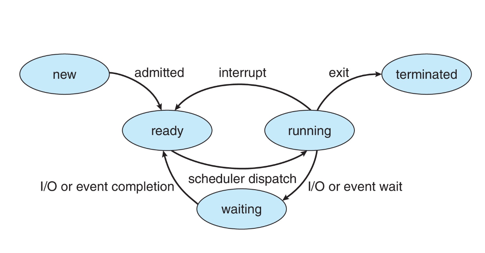
Process Creation 进程创建¶
一个进程可能会产生多个进程，于是形成一个进程树，ppid是某节点父进程的pid。
fork()是一个SysCall，用于创建一个新的进程，新进程是调用进程的副本（各状态初始完全一致地复制过去），但是有不同的pid，Resource Utilization初始化为0。
- 返回给父进程的是新进程的pid
- 返回给子进程的是0
可能的考点（来自复习课）
- 为什么
fork()可以返回两个值？- 这是其拷贝了两份 User Space Context
Quiz
下面这张图里，每次fork()会给当前每个进程都创建一个子进程，所以第一次fork()后有两个进程，第二次fork()后有四个进程。


- (1) 第一行
fork()后，有两个进程（Original进程和它fork出来的子进程） - (2) 第二行在if后括号中的
fork()后，有四个进程 - (3) 并且对 (1) 中两个进程，返回1，对 (2) 中新出现的两个进程，返回0
- 因此 (1) 中两个进程进入if(){}, (2) 中两个进程不进入if(){}
- 在条件语句中的
fork()后，新出现两个进程，目前共6个进程 - 最后的
fork()所有进程都会执行，所以最后有12个进程
exec*()¶
execve()是一个SysCall，v stands for argv（命令行参数），e stands for envp（环境变量）。
- 其余的
exec*()函数类似，但不是SysCall exec*()replaces the current process image with a new process image
exec*后，若执行成功，原进程的ELF会被替换，原进程直接终止，也没有返回值；若没有执行成功，则返回报错信息，原进程继续执行。
Process Termination¶
wait()¶

exit()¶
一个进程通过exit()的SysCall来终止自己，接收一个参数（exit/return code）
- 进程终止后，进程占用的资源会被回收
Signals 信号¶
进程可以通过信号来通知其他进程，也可以接收信号，例如说Ctrl+C实则是发送了一个SIGINT信号。
- 异步事件，程序必须处理
- SIGKILL和SIGSTOP不能被捕获或忽略（for security reasons）
- 总能Kill进程
demo: kill a infinite loop with SIGINT forbidden
Zombie Process 僵尸进程¶
子进程死亡后，它的父进程会接收到通知去执行一些清理操作，如释放内存之类。然而，若父进程并未察觉到子进程死亡（没有回收其PCB），子进程就会进入到“ 僵尸(zombie)”状态。从父进程角度看，子进程仍然存在，即使子进程实际上已经死亡。
Zombie 会占用其 PCB，不会占用CPU，但会占用内存。
A zombie lingers on until:
- its parent has handled SIGCHLD (which calls wait() for the child), or
- its parent dies

Orphan Process 孤儿进程¶
父进程运行结束，但子进程还在运行（未运行结束）的子进程就称为孤儿进程（Orphan Process）。孤儿进程最终会被 init 进程（pid 为 1）所收养，并由 init 进程对它们完成状态收集工作。
孤儿进程是没有父进程的进程，为避免孤儿进程退出时无法释放所占用的资源而变为僵尸进程，进程号为 1 的 init 进程将会接受这些孤儿进程，这一过程也被称为“收养”。init 进程就好像是一个孤儿院，专门负责处理孤儿进程的善后工作。每当出现一个孤儿进程的时候，内核就把孤儿进程的父进程设置为 init ，而 init 进程会循环地 wait() 它的已经退出的子进程。这样，当一个孤儿进程凄凉地结束了其生命周期的时候，init 进程就会出面处理它的一切善后工作。因此孤儿进程并不会有什么危害。
When a child exits, a SIGCHLD signal is sent to the parent.
init process handles child termination with a handler for SIGCHLD that calls wait().
Process Scheduling 进程调度¶
为了使CPU迅速地切换到下一个进程，Process scheduler 在 Ready 的进程中选择下一个在 Core 上运行的进程。
维护两个 Scheduling Queue：
-
Ready queue
- set of all processes residing in main memory, ready and waiting to execute
-
Wait queues
- set of processes waiting for an event (i.e. I/O)
-
进程在不同的 Queue 中频繁 Transfer，因此需要用 List 实现。

Context Switch 上下文切换（重点）¶
由于在处理 trap 时，有可能会改变系统的状态。所以在真正处理 trap 之前，我们有必要对系统的当前状态进行保存，在处理完成之后，我们再将系统恢复至原先的状态，就可以确保之前的程序继续正常运行。这里的系统状态通常是指寄存器，这些寄存器也叫做 CPU 的上下文（context）。
ZJU-SYS2-FA24
当CPU从一个进程（实则是线程Thread）切换到另一个进程时，需要保存当前进程的状态，并加载新进程的已保存的状态，这就是上下文切换。
- Context of a process is represented in the PCB
- Switch 时，System 本身并不进行什么操作
-
在两个Kernel线程中的上下文切换
- 寄存器在什么时候/哪里保存？
- where: 保存在PCB中，即
cpu_context - when: 在
context_switch()中，即在cpu_switch_to()中
-
在两个用户线程中的上下文切换
- 令人感叹的是，上下文切换必须在内核态中进行
- User context 在什么时候/哪里保存？
- when: kernel_entry; where: 每个线程（per thread）的 kernel stack 中，确切说是
pt_regs结构体内 - Kernel context 在什么时候/哪里保存？
- when:
cpu_switch_to(); where:cpu_context 
- 下面是一个俩 User 线程的上下文切换的例子
CPU Scheduling CPU调度¶
- 定义：操作系统决定哪个进程在CPU上运行，要运行多久
- 使用 dispatcher 进行切换
- A component of the OS that’s used to switch between processes
IO burst and CPU burst¶
大多数进程的执行时间是由CPU burst和IO burst交替组成的。
因此进程可以分为两类：
-
IO bound 进程
- 大多数时间等待IO
- 包含许多短小的CPU burst
- e.g. /bin/cp
-
CPU bound 进程
- 大多数时间在CPU上运行
- IO burst很短很短（如果有的话）
- e.g. /bin/gcc
CPU Scheduler CPU调度器¶
操作系统跟踪进程的状态，在 CPU 空闲时选择下一个进程运行。
调度可分为两类
-
Preemptive Scheduling（可抢占式调度）
- 进程即使在正常执行时，也可以被抢占
- Easy for CPU to handle, most of modern choices.
-
Non-preemptive Scheduling（非抢占式调度）
- 进程只能在执行完毕或者等待IO时才能被抢占（hold CPU until it's willing to give it up）
那么调度发生在什么时候？
Scheduling Objectives 调度的目标¶
- 最大化 CPU 利用率
- 最大化吞吐量
- 最小化等待时间
-
最小化周转时间（Turnaround time）
- Time from process creation to completion
-
最小化响应时间
- Time from process creation to first response
Process Scheduling 进程调度¶
为了使CPU迅速地切换到下一个进程，Process scheduler 在 Ready 的进程中选择下一个在 Core 上运行的进程。
维护两个 Scheduling Queue：
-
Ready queue
- set of all processes residing in main memory, ready and waiting to execute
-
Wait queues
- set of processes waiting for an event (i.e. I/O)
-
进程在不同的 Queue 中频繁 Transfer，因此需要用 List 实现。
Dispatcher¶
Dispatcher 把CPU的选择交给被 Scheduler 选中的进程，包括切换至Kernel态，保存当前进程的PCB，加载新进程的PCB。
- Dispatch Latency: Time it takes for the dispatcher to stop one process and start another running
Scheduling Criteria 调度标准¶
- CPU Utilization
- Throughput
- Turnaround Time: Finsh Time - Arrival Time
- Waiting Time: Start Time - Arrival Time
- Response Time
Scheduling Algorithms 调度算法（重点！）¶
- FCFS (First-Come, First-Served)
- SJF (Shortest Job First)
- Round Robin
- Priority Scheduling
- Multilevel Queue Scheduling
- Multilevel Feedback Queue Scheduling
这里要画图了！注意 Burst Time 可看作执行时间。
FCFS
- First-Come, First-Served
- Non-preemptive
- Easy to understand and implement
- Poor in performance: 长进程会导致短进程等待时间过长
- Burst Time: P1: 24, P2: 3, P3: 3，这里展示一下以
123的顺序执行的情况，会发现比321的情况要差很多
SJF
- 理论上的最佳方案
- 可分为两类：Non-preemptive SJF, Preemptive SJF
- Non-preemptive SJF
- 选择最短的 总的 Burst 时间

- Preemptime SJF
- 选择最短的 剩余 Burst 时间

- 这里 turnaround time 是一样的，还是完成时间减去 Arrival Time；对于 Waitng Time，会出现图里 P1 P2 这种分段执行的，这时 Waiting Time 就要分成两部分：从 Arrive 到第一次执行的时间间隔，再加上每次执行的结束时间到下次执行的开始时间的间隔
- 但是很难知道每个进程的 Burst Time
- 可以通过已发生过的 CPU Burst 预测
- Non-preemptive SJF
Round Robin
-
Preemptive
-
定义一个时间片（Time Quantum）：作为每个进程每次持续的最长时间
-
除非只剩下一个 READY 进程，否则，一个进程最多执行一个时间片长度后就得把 CPU 使用权交给另一个 READY 进程。
-
Ready Queue 是 First-IN-First-OUT
-
Scheduling:
-
从 Ready Queue 中选出第一个进程
-
设置计时器，在一个时间片长度后中断进程
-
Dispatch 该进程
-
-

-
因此对时间片的选取很重要：长 or 短？
-
短时间片
- 响应时间/互动率很好！但是额外开销太大了：因为 Dispatch 时 Context Switch 太多太耗时。
-
长时间片
- 响应时间很差，额外开支变少了：时间片很长很长时就变成 FCFS 型了
-
Priority Scheduling
- Non-Preemptive or Preemptive
- 为每个进程定义一个优先级（一个数字）
- 也即把 Ready Queue 利用为一个优先队列
- 优先级高的（一般是数字小的）先执行
- 其实优先级取“预测的下一次 Burst TIme”时就是SJF

- 来看一个优先级调度和 Round Robin 的综合
- Problem：低优先级的进程总会被抢占，几乎永不执行（Starvation）
- Solution：Increase the priority of a process as it ages.
Multilevel Queue
-
ready queue 被分成多个队列
-
比如分成交互性队列和批处理队列
-
一个进程会被永久地分到一个队列中
-
每个队列可以使用不同的 Scheduling Algorithm
-
例如，高交互性的进程队列可以使用 RR 算法，低交互的批处理队列可以使用 FCFS 算法
-
队列之间也可以进行调度
Multilevel Feedback Queues
类似 Multilevel Queue，但是进程可以在不同队列之间移动。
给交互性、I/O intensive 的进程更高的调度优先级
最最常见的调度算法
IPC(Inter-Process Communication) 进程间通信¶
进程间通信是指两个或多个进程之间交换信息的机制。
进程可以通过通信进行”合作“，例如说文件这类信息在不同进程中的共享，或者说对同一个任务的 Multi-processing。
Chrome Browser
Chrome浏览器使用进程隔离，每个标签页都是一个进程，这样一个标签页崩溃不会影响其他标签页。
- Browser Process: 管理所有的标签页，UI，硬盘和网络的IO
- Renderer Process: 每个标签页一个进程，负责渲染页面，读取HTML & CSS，加载JS。
- 在一个沙盒里运行，限制了对系统的访问
- Plugin Process: 每个插件一个进程，如Flash Player
Models of IPC 进程间通信模型¶
-
共享内存（Shared Memory）

- low-overhead: almost no SysCall
- One process creates a shared memory segment
- Processes can then “attach” it to their address spaces
- 两个进程单独地访问共享内存
-
Message Passing

- high-overhead: 需要通过System Call进入Kernel态获取Message
- 每次的Message很小
- 创造一个邮筒（Mailbox），通过邮筒发送与接收消息，摧毁邮筒
-
Blocking or Non-blocking
- Blocking(同步)：发送者在信息被接收前一直Block，接收者在信息到达前一直Block
- Non-blocking(异步)：发送者持续发消息，接收者接收一条有效信息或者空消息
-
这里有一个 Buffering 的概念：
- Queue of messages attached to the link.
-
Implemented in one of three ways
- Zero capacity – no messages are queued on a link.
Sender must wait for receiver - Bounded capacity – finite length of n messages
Sender must wait if link full - Unbounded capacity – infinite length
Sender never waits
- Zero capacity – no messages are queued on a link.
-
Pipe
- Ordinary Pipe
- 一个进程写，一个进程读
- 一般是父子进程间通信
- 进程外无法访问
- 进程产生者写到
fd[1]的 write-end，进程产生者读取fd[0]的 read-end - 因此是单向的
- On Windows: Anonymous Pipe
- Named Pipe
- 两个进程之间通信
- 通过文件系统
- 双向
- 有名管道是一种特殊类型的文件，它允许无关的进程之间进行通信
- 与无名管道不同，有名管道有一个路径名与之关联，以
mkfifo()创建
- Ordinary Pipe
Thread 线程¶
Process vs Thread 进程 vs 线程¶
线程是进程的一个 Execution Unit，一个进程可以包含多个线程。每个线程有自己的 Stack 和 PC, Regs，但是共享 Data Section、Heap 和 Code Section。
简单来说，线程是执行单元，进程是资源管理单元

- Single-threaded Process
- 一个进程只有一个线程
- Multi-threaded Process
- 一个进程有多个线程
使用线程的优势：
- Economical
- 创建线程比创建进程开销更少（Code Section、Data Section、Heap 已经被加载）
- Resource Sharing
- 线程本身就是共享资源的
- No more need for IPC
- Responsiveness
- Scalability
- 一个进程中的多个线程可以并行执行，提高效率
劣势：
- 隔离性（isolation）差
- 一个线程崩溃会导致整个进程崩溃
- 很难知道是哪个线程出了问题
Thread Model 线程模型¶
- Many-to-one
- 多个User Thread映射到一个Kernel Thread
- 无法很好利用多核架构
- 一个User Thread阻塞会导致整个进程阻塞
- One-to-one
- 一个User Thread映射到一个Kernel Thread
- Create a new user thread requires work from kernel
- 开销大
- Many-to-many
- 多个User Thread映射到多个Kernel Thread
- 如果一个User Thread阻塞，Kernel 创造出一个新的 Kernel Thread，避免整个进程阻塞
- Two-level
- 可多对多，可一对一
Thread Library 线程库¶
Some demos
Linux Thread¶
使用 clone() 的 SysCall 来创建线程。有如下 flag 可选
CLONE_VM: 共享内存空间CLONE_FS: 共享文件系统信息CLONE_FILES: 共享文件描述符CLONE_SIGHAND: 共享信号处理程序
与此同时，Linux 下 task_struct 存储的是线程的 TCB，进程的 PCB 是 Leader Thread 的 TCB。（不存在 PCB 了）
同时一个 Process 可由单个线程+一个地址组成，也可以是多个线程+一个地址。
Thread Mapping 线程映射¶
一个 Task 可以在 User Mode 下执行线程，此时使用 User Code & User Stack，也可以在 Kernel Mode 下执行（例如调用个 Syscall），使用 Kernel Code & Kernel Stack
eg
执行 printf() 时，会调用 write()，write() 是一个 SysCall，因此会进入 Kernel Mode，此时会切换到 Kernel Stack，Kernel Code。
- User code: printf(...)
- Kernel code: write(...)
Synchronization 同步¶
Race Condition
由于 Thread A B 运行的 counter = counter+1 实则是多行指令（寄存器内加1，写回寄存器），因此在 Thread A 读完运算完还没有写回的时候，被 Interrupt，转为 Thread B，Thread B 读取时，读到的是初始的 counter 值，运算后再写回，再由 Thread A 写回，得到的 counter 就只加了1.
解决方案
Critical Section: 一段“原子性”的代码，同一时间段只能有一个线程在运行。
构建 Critical Section aka Synchronization 的解决方案需要满足的条件
- Mutual Exclusion: 在同⼀时刻，最多只有⼀个线程可以执⾏临界区
- Progress: 当没有线程在执⾏临界区代码时，必须在申请进⼊临界区的线程中选择⼀个线程，允许其执⾏临界区代码，保证程序执⾏的进展
- Bounded Waiting: 当⼀个进程申请进⼊临界区后，必须在有限的时间内获得许可并进⼊临界区，不能⽆限等待
Peterson's Algorithm: 两个线程的 Mutual Exclusion（只适用于两个线程）
- 假设 Load 和 Store 是原子操作（不可被中断）
- 两个进程共享下面这两个变量作为属性：
flag[2]: 进程是否准备好进入临界区int turn: 轮到哪个进程进入临界区- 伪代码如下
但是 Peterson 没有看起来那么万能，一是因为只适用两个线程，二是因为可能会导致处理器或编译器对*看起来无害*的操作指令进行重排序，这导致其要求线程的Load和Store是原子性的。
- 这在单线程进程里无所谓
- 多线程里可能会导致非预期的结果！
e.g.
两个线程共享下面两个变量：
现在线程1执行 线程2执行 最后的结果是什么？解答
- 我们预期的结果是输出100，但结果可能不是这样！
- 重排序可能导致
flag = true先执行，x = 100后执行
那咋办
- 引入内存屏障（Memory Barrier）来防止重排序
- 一句指令，使内存中所有的变化全部传播到所有其他处理器
- 现在只需要在线程1，2的两条语句之间加上
memory_barrier即可
硬件支持¶
这一块智云只有半小时有声音，这不炸了吗
我们有硬件的指令来支持同步：
Test-and-Set¶
设置并返回初始值，原子操作
bool test_set (bool *target)
{
bool rv = *target;
*target = TRUE;
return rv:
}
// 实现一个 lock(shared variable)
do {
while (test_set(&lock)); // 如果一个线程先把 lock 设置为 TRUE，那么其他线程到这一行就等待住了
// Critical Section
lock = FALSE;
// Remainder Section
} while (TRUE);
满足互斥，Progress，但是不满足 Bounded Waiting
Compare-and-Swap¶
int compare_and_swap(int *value, int expected, int new_value)
{
int temp = *value;
if (*value == expected)
*value = new_value;
return temp;
}
// 还是实现一个线程共享的 lock
do {
while (compare_and_swap(&lock, 0, 1) != 0);
// Critical Section
lock = 0;
// Remainder Section
} while (TRUE);
Atomic Variable 原子性变量¶
通过上面两种硬件支持的方法，我们可以实现一个原子性变量
Mutex Lock 互斥锁 or Spin Lock¶
利用上面两个函数，可以构造这种用于解决同步的软件方案，先acquire锁，再release锁（两个函数调用都得是原子操作），需要"busy waiting"。
func acquire(){
while(!available); // busy waiting (spin)
available = false;
}
func release(){
available = true;
}
自旋太多了！导致 CPU 利用率低。引入 yield 函数，让出 CPU 给其他线程。（moving from running state to sleeping zZZ）
- How to implement?
- Add a queue
- When the lock is locked, change process’s state to SLEEP, add to the queue, and call schedule()
Semaphore 信号量¶
yield 下的 Mutex Lock 还是利用率太低了！
Deadlock 死锁¶
两个或多个进程互相等待对方释放资源，导致所有进程都无法继续执行。
Priority Inversion 优先级反转¶
如果高优先级的进程等待低优先级的进程的 Lock，亦即，被低优先级进程抢占了
Solution
- 优先级继承
- 短暂地提高低优先级进程的优先级
Condition Variable 条件变量¶
诶，我们直接定义一个条件变量，让所有线程都等待这个条件变量的信号，这样就不会出现死锁了！
Real Problems¶
Bounded Buffer Problem 有界缓冲问题¶
两个进程，一个生产者，一个消费者，共享 n 个 buffer。
- 生产者向 buffer 中写入数据
- 消费者从 buffer 中移除数据
本问题要保证：
- 生产者不会向满的 buffer 写入数据
- 消费者不会从空的 buffer 移除数据
解决方案：定义 mutex 初始为 1，full-slots 初始为 0，empty-slots 初始为 n
// Producer Process
do {
// Produce an item
wait(empty-slots);
wait(mutex);
// add the item to the buffer
...
signal(mutex);
signal(full-slots);
} while (true);
// Consumer Process
do {
wait(full-slots);
wait(mutex);
// remove an item from the buffer
...
signal(mutex);
signal(empty-slots);
// consume the item
...
} while (true);
这里还有几个思考题（我没记
Readers-Writers Problem 读者写者问题¶
一系列进程共享一个 data set，有两种进程：
- Readers: 只读取数据，不修改
- Writers: 能读取数据，也能修改数据
- 多个 Readers 可以共存，但是 Readers 和 Writers 之间互斥，Writers 之间也互斥
解决方案：定义 mutex 初始为 1，write 初始为 1，read_count 初始为 0
mutex保护read_count，read_count 记录当前 Reader 的数量
// Writer Process
do {
wait(write);
// write shared data
...
signal(write);
} while (true);
// Reader Process
do {
wait(mutex);
read_count++;
if (read_count == 1)
wait(write);
signal(mutex);
// read shared data
...
wait(mutex);
read_count--;
if (read_count == 0)
signal(write);
signal(mutex);
} while (true);
变种
- Reader First
- Writer First
Deadlock 发生的条件¶
- Mutual Exclusion: 资源不共享，一种资源在某个时段只能被一个进程持有
- Hold and Wait: 持有至少一个资源的进程等待获取正被其他进程持有的其他资源
- No Preemption: 资源只能被持有者自愿释放
- Circular Wait: 一系列进程互相等待对方释放资源
Resource Allocation Graph
- 一个图，节点是所有进程（\({P_1, P_2, ..., P_n}\)）和资源（\({R_1, R_2, ..., R_m}\)）
- 两种边：
- Request Edge：\(P_i\) 指向 \(R_j\) 的有向边，表示 \(P_i\) 请求 \(R_j\) （进程尚未持有资源）
- Assignment Edge：\(R_j\) 指向 \(P_i\) 的有向边，表示 \(R_j\) 被 \(P_i\) 持有 （进程已经持有资源）
- 例

- 这里 R 节点中不同的点代表一个资源的不同 Instance
- 这里有一类判断这种图是否含有死锁的题，思路一般是
- 先找哪个进程能执行，执行掉，然后释放资源
- 然后看能不能继续执行别的进程
Basic Facts
- 如果图中没有环，那么没有死锁
- 如果有环
- 且每个资源只有一个实例，那么有死锁
- 且每个资源有多个实例，那么可能有死锁
Deadlock 的预防 Prevention¶
只需要考虑预防上面四个条件（其一）就够了
- Prevent Mutual Exclusion: 这个可以不考虑：对于不共享的资源，额那只能互斥，对于共享的资源我们又不需要担心
- Prevent Hold and Wait: 一个进程要么在执行前一次性 Request 所有资源，要么只有在不持有任何资源时才能 Request 资源
- 导致资源利用率降低，可能会导致 Starvation
- Prevent No Preemption: 如果一个进程持有资源，但是又请求其他资源，那么就释放已持有的资源，将资源加入到 Request 队列中（没看懂）
- Prevent Circular Wait: 给资源编号，进程只能按编号递增的顺序请求资源
Deadlock 的避免 Avoidance¶
与预防不同，使用 Deadlock Avoidance 算法确保不会出现循环等待。
SAFE STATE: 如果系统能够分配资源序列，使得每个进程按某种顺序获得资源都能完成，那么系统处于 SAFE STATE
- Safe State 里的进程不会发生 Deadlock，Unsafe State 可能会发生 Deadlock
这里对于多实例的资源，使用 Banker's Algorithm，懒得记了，在 deadlock 的 ppt 靠后的部分。
感觉研究这一个例子就够了：

Deadlock 的检测 Detection¶
即使预防和避免，还是没能让死锁大人尽兴吗···
Allow system to enter deadlock state, but detect and recover from it
- 资源只有单实例
- 通过 Resource Allocation Graph 检测
- 也就是检测是否有环
- 诶，我这儿还有一离散
- 把图里所有的资源节点都视为边（我总感觉像极了离散里讲过的一个操作），之后图只有进程节点，称为 Wait-for Graph
- 资源有多实例
- 这里就需要用到类似 Banker's Algorithm 的方法了
- 就是利用 Banker，鉴定一下能不能进入 Safe State，不能就说明有死锁
Deadlock 的解决 Recovery¶
- Process Termination
- 终止死锁的进程
- 每次终止一个进程，直到死锁解除
或者
- Resource Preemption
- 抢占资源
- 选择一个进程，释放资源，回滚到某个 Checkpoint
- 可能会导致 Starvation
计算机系统 Ⅲ¶
约 3622 个字 18 张图片 预计阅读时间 10 分钟
任课教师：吴磊、周亚金
Homework
量化研究¶
Amdahl's Law
\(\(\text{Speedup} = \frac{改进前时间}{改进后时间} = \frac{1}{1 - B + \frac{B}{S}} \rightarrow \frac{1}{1-B}\)\) \(B\) 为并行化（被优化）比例，\(S\) 为被优化部分的加速比。也就是说，无论怎么优化，理想加速比都取决于没被优化的部分所占的比例
例
- 把系统中某个函数的速度提高到了原先的20倍，但这个函数占整个系统的40%，则整个系统的速度提高了多少倍？
- Speedup = \(\frac{1}{1 - 0.4 + \frac{0.4}{20}} = 1.613\)
Performance = 1/Execution Time
CPU 执行时间 = CPU 时钟周期数 * CPU 时钟周期时间 = CPU 时钟周期数 / CPU 时钟频率
CPI（Cycles Per Instruction）= CPU 时钟周期数 / 指令数
CPU 执行时间 = 指令数 * CPI * 时钟周期时间 = 指令数 * CPI / 时钟频率
Performance Depends on
- Algorithm: affects IC, possibly CPI
- Programming Language: affects IC, CPI
- Compiler: affects IC, CPI
- ISA: affects IC, CPI, \(T_c\)
分支预测¶
很长 or 超标量的流水线必须等到分支指令计算结果出来之后才能进行下一条指令，导致大量 Stall，于是引入分支预测，只在预测失误时才 Stall
- 静态分支预测
- Based on typical branch behavior
- 全部预测为 untaken or taken
- Delay Slots: 在分支指令后的几条指令，不管分支是否发生，都会执行（由于导致电路复杂化，逐渐被淘汰）

- 动态分支预测
- Hardware measures actual branch behavior
- e.g. 记录最近 branch 的行为，根据历史数据预测
- 预测不准时，会进行历史的更新
- BHT（Branch History Table）: 用于记录历史数据

- 1 bit 的 BHT 会导致多层嵌套的循环多次预测错误，炸膛了
- BTB（Branch Target Buffer）: 用于记录分支目标地址，Buffer 中的指令都预测为 Taken
- 优势是更快（在 IF 阶段）就可以得到分支指令
- 可存储多条指令，对 MultiProcessors 有利
- branch folding
- Integrated Instruction Fetch Unit
- 把多个功能并入 IF 阶段，包括
- Integrated Branch Prediction
- Prefetch 指令
- Instruction memory access and buffering
- 把多个功能并入 IF 阶段，包括
- Hardware measures actual branch behavior
重叠执行¶
What is this
ILP¶
Dynamic Scheduling¶
RAW/WAR/WAW 导致数据冲突，需要使用动态调度重排指令顺序
- Out-of-order Execution
- 乱序执行
- 只要①对之前的指令没有 Dependence ②没有冲突，一条指令就可以执行
Scoreboard
- 将 ID 阶段分割为 IS(Issue) 和 RO(Read Operands) 两个阶段
- Issue: 译码指令，检查有没有结构冲突
- 以 Program Order 发射指令，若有结构冲突/输出取决于先前发射却未完成的指令，则不发射
- RO：等到没有数据冲突后再读入 Operands
- 此模型中不存在前递
- Issue: 译码指令，检查有没有结构冲突
- Solutions for WAR:
- 在 Read 寄存器前 Stall WB 阶段
- 只在 RO 阶段读取寄存器
- Solution for WAW:
- 在另一条指令完成前探测冲突并 Stall 新指令的发射
Scoreboard 包含三个部分
- Instruction Status
- 指令处于 IS/RO/EX/WB 的哪个阶段
- Functional Unit Status
- 每个功能单元（Functional Unit）是否被占用，有九种状态
- Busy: 显示该单元是否被占用
- Op: 该单元执行的操作 (e.g., + or –)
- Fi: 目的寄存器
- Fj, Fk: 源寄存器
- Qj, Qk: 如果源寄存器没准备好部件该向哪里要数据（\(Q_j\) 和 \(Q_k\) 对应 \(R_j\) 和 \(R_k\)）
- Rj, Rk: Flags indicating when Fj, Fk are ready and not yet read，寄存器中的数据被读取后置为 No
- 每个功能单元（Functional Unit）是否被占用，有九种状态
- Register Result Status
- 显示哪个 FU 正准备写入这个寄存器

- 具体看这个文章吧，感觉比两个老师讲的都好（
- 要点（摘自上面的文章）：
- 一条指令能否发射，一看是否有功能部件空闲可用，这个信息包含在功能状态中；二看指令要写的寄存器是否正要被别的指令写，这个信息包含在寄存器状态中，观察这个信息是为了解决 WAW 冒险。
- 一条指令能否读数，要看记分牌是否提示源寄存器不可读，如果不可读，就说明该寄存器将要被别的前序指令改写，现在的指令要等待前序指令写回，观察这个信息是为了解决 RAW 冒险。
- 一条指令一旦读数完成，就必然可以进行运算，运算可以是多周期的，在第一个周期结束时应该改写功能状态，表明自己不再需要读寄存器。
- 一条指令能否写回，要看是否有指令需要读即将被改写的这个寄存器，具体一点来说，就是要观察标记 Yes 的 Rj、Rk 对应的寄存器里是否有当前指令的目的寄存器，如果有，就说明有指令需要读取寄存器的旧值，这样一来我们就要等指令读完旧值之后再写回，观察这个信息是为了解决 WAR 冒险。
Tomasulo Algo
TBD
Exception vs. Interrupt
| Exception | Interrupt | |
|---|---|---|
| Cause | 由程序引起 | 由外部设备引起 |
| When to Handle | When Detected | When Convinient |
TBD
Hardware based Speculation: Reorder Buffer(ROB)¶
以先来先出的顺序（就是被发射的顺序）存储 uncommitted 指令，使指令执行完成的顺序也按发射的顺序来。
结果先写到 reorder buffer，在 buffer 里按照指令流出的顺序以此写回寄存器。因此我们在每个指令后面加上一个 commit 状态，当前面的指令都 commit 之后才能 commit。
- 4 Fields
- Inst Type
- Destination Field
- Value Field
- Ready Field
- 指令完成时，结果存入 ROB，同时标记 Ready Field
- 便于 undo 错误预测的 branch
Hardware-based Speculation
- Issue - Get inst from FP Op Queue
- Execute - operate on operands
- Write Result - finish execution
- 写入 CDB（Common Data Bus 数据广播总线），通知所有正在等待的 FU 和 ROB，将 Reservation Station 标记为 Available
- Commit - update reg with reorder result
多发射 MultiIssue¶
见 系统2笔记
为了使 CPI < 1，需要在一个时钟内完成多条指令
Memory Hierarchy¶
实际上，CPU 执行一条指令的时间远远短于访问内存的时间，即计算机的运行速度受限于 Memory Bandwidth & Latency
- Latency: 单次访问内存的时间
- Bandwidth: 也即带宽，单位时间内能访问的次数
- 如果占比 \(m\) 的指令需要访问内存，则平均每条指令需要访问 \(1 + m\) 次内存（对 N 条指令，首先要 N 次访问 I-cache，然后 mN 次访问 D-cache）
令人感叹的是，容量变大，访问时间就会变少；带宽变大，硬件 Cost 也会越大，于是采用 Memory Hierarchy 来缓解这些问题
这里先介绍内存的两个特征：局部性
- 时间局部性（Temporal Locality）
- 一旦访问了某个地址，很可能在不久的将来再次访问
- 空间局部性（Spatial Locality）
- 一旦访问了某个地址，很可能在附近的地址也会被访问
利用局部性，Present the user with as much memory as is available in the cheapest technology. Provide access at the speed offered by the fastest technology.
Cache¶
地址从 Core 中流出后，最先碰到 Memory Hierarchy 的最高层：Cache
small and fast
- Unified Cache: 一起存储指令和数据，需要的硬件少，但是访问速度慢
- Split Cache: 分开存储指令和数据（I-cache 和 D-cache），访问速度快，但是硬件复杂

Cache Performance¶
- Cache Hit/Miss
- Hit: 在 Cache 中找到了所需的数据
- Miss: 没有找到，需要从更低一层的 Memory Hierarchy 中读取
Block/Line¶
cache容量较小，所以数据需要按照一定的规则从主存映射到cache。一般把主存和cache分割成一定大小的块，这个块在主存中称为data block，在cache中称为cache line。举个例子，块大小为1024个字节，那么data block和cache line都是1024个字节。当把主存和cache分割好之后，我们就可以把data block放到cache line中，而这个“放”的规则一般有三种，分别是“直接映射”、“组相联”和“全相联”。
- Direct Mapped
- 直接映射采用“取模”的方式进行一对一映射：如果cache中共有8个cache line，那么0、8、16、24...号data block会被映射到0号cache line中，同理1、9、17....号data block会被映射到1号cache line中
- 这里 Cache Line 具有 Tag 和 Data 两部分，Tag 用于识别存储的是主存中的哪个 Data Block，Data 用于存储数据
- 缺陷：当连续访问0，8，0，8，0，8...时，在第二次访问到0号 data block 时，cache line 早就被清空，替换成 8 号 data block，于是会导致 cache miss
- 全相联
- 主存中任何一个 Data Block 都可以映射到 Cache 中的任何一个 Cache Line
- Cache 中的一行含有 Tag、Data，Tag 即为主存块的块号
- 组相联
- Cache 几行几行分为一组，组间直接映射，组内全相联
4 Questions for Cache Design
- Where can a block be placed in the Upper/Main Memory?
- 即 Block 的放置问题
- 就是上面阐述的三种方法
- How is a block found in the Upper/Main Memory?
- Block 的识别问题
- 使用 Tag/Block
- Index 位数 \(= \log_2(\#sets)(in \space set-associative \space cache) or \log_2(\#blocks)(in \space direct-mapped \space cache)\)
- Offset 位数 \(= \log_2(size \space of \space block)\)
- Tag 位数 \(= Address \space Size - Index \space bits - Offset \space bits\)
- Which block should be replaced on a miss?
- Block 的替换问题
- LRU、FIFO、Random 算法
- TBD
- What happens on a write?
- 写策略问题
- Write-through、Write-back (both with write Buffer)
- TBD
- I'll finish this at the end of the semester :(
主存 Main Memory¶
地址绑定 Address Binding¶
回顾源代码到执行起来的过程：
- 每个变量都有自己的 symbolic address
- 编译器把这些符号转换为可重定位地址（relocatable address）
- e.g. "14 bytes from the beginning of this module"
- 链接器把可重定位地址转换为绝对地址（absolute address）
- e.g. "0x0505"
逻辑地址 vs. 物理地址，你知道吗？
- 逻辑地址：由 CPU 生成的地址
- 物理地址：内存中实际的地址
因此 CPU 访问内存时，需要一个部件来将逻辑地址（在运行时）转换为物理地址，这个部件就是 MMU（Memory Management Unit）.
最简单的 MMU 设置了一个 Relocation Register，存储逻辑地址和物理地址之间的偏移量。
- 物理地址 = 逻辑地址 + Relocation Register
动态加载：不需要一次性把一个 Program 里的所有 Code, Data 都加载到内存中，而是根据需要来加载。
动态链接：Refer to Sys2
连续分配 Contiguous Allocation（Partition Allocation）¶
主存要同时供给 User Program 和 OS 使用，因此需要高效分配有限的资源，可采用连续分配
- 每个进程在内存中占据一个连续的区域（一个 Partition）（我们需要确保进程能且只能访问其地址空间里的地址）
- Relocation Reg 用于保护用户进程间不互干扰，也阻止用户进程修改 Kernel Code & Data
- Base register contains value of smallest physical address
- Limit register contains range of logical addresses（相当于进程所占的空间大小，不能超过这个值） – each logical address must be less than the limit register
- 注意加载 Base 和 Limit Reg 的指令是特权级的
- 优势在于具有 built-in 的保护机制（Limit）、更快的 Execution Time、更快的 Context Switch、不需要 Relocation、Partition 可以自由暂停开始

Fragmentation¶
设想进程请求一个大小为 n 的 Memory Block，在 Partition 时有下述三种选择方案
- First Fit
- 从第一个 Large Enough 的 Block 开始分配
- Best Fit
- 从最小的 Large Enough 的 Block 开始分配
- 需要遍历所有的 Block
- Worst Fit
- 从最大的 Block 开始分配
- 需要遍历所有的 Block
Fragmentation 是这三个方案的重大阻碍
- 外部碎片化（出现于 Variable Partition Allocation）
- 在已分配出去的 Memory Blocks 的间隙中存在未利用的内存，这些内存总和是足够供给 Request 的，但是 not contiguous
- 可被压缩（Compaction）削弱影响
- 把未利用的内存合并成一个 Block
- Another solution: Paging
- 内部碎片化（出现于 Fixed Partition Allocation）
- 分配出去的 Memory Block 大于 Request 的大小，导致未利用的内存
Segmentation¶
(由于 Limit Reg 大小可变，这是 Flexible Partition Allocation，不存在内部碎片化，但是存在外部碎片化)
逻辑地址被分为
Seg Number 实际上是 Table 的索引，逻辑地址通过索引查找到表中对应的 Entry，Offset 先与 Limit 比较，若大于 Limit 就会发生 Segmentation Fault；否则就加上 Base 得到物理地址（还含有一步和 Perm 的比较）
分页 Paging¶
基本思想就是把进程的逻辑地址空间分为固定大小的块（而不是移动已有进程的地址空间）
每当有物理内存可用时，就会分配给进程，因此需要考虑
- 避免外部碎片化
- 避免 Varying sized memory chunks
采用分页的方法：
- 物理地址分为固定大小的块，称为页框 Frame（大小是 2 的整数次幂）
- 逻辑地址分为相同大小的页 Page
这样一来，为了跑一个 N 页的进程，需要在内存里找到 N 个 Free 的 Page Frame，再加载程序
再建立一个页表 Page Table，用于将逻辑地址映射为物理地址
逻辑地址被分化为页号和页内偏移量，页号用来索引页表，页表存储了每一页的物理地址
偏移量用来索引 page/frame，与 frame number 结合后得到物理地址
m 位的逻辑地址，page size 为 n 位
| page number | page offset within page |
|---|---|
| p | d |
| m-n bits | n bits |
Structure of Page Table
- 根据 Page Size 先确定 n 的大小：
- Page Size = 2^n
- 例：
- Page Size = 4KB = 2^12 bits
- n = 12
- 默认 32 位地址 m = 32
- 页号位数 = m - n = 32 - 12 = 20

分页后不存在外部碎片化
但是有内部碎片化（但仅在最后一个 Frame）
- worst case internal fragmentation: 1 frame – 1 byte
- average internal fragmentation: 1 / 2 frame size
- Frame Size 大：PTB Entry 数量更少
- Frame Size 小：内部碎片化更少了
Hardware Support for Paging¶
- Page Table Base Register (PTBR)
- 存储页表的 Base （物理地址）
- Page Table Length Register (PTLR)
- 存储页表的长度（即页表中有多少个 Entry）
那么我们每次翻译逻辑地址的时候就要经过两层 Memory Access（第一次根据页号访问页表，第二次根据页表中的物理地址访问内存），这就导致了性能的下降 - 解决方案：TLB（Translation Lookaside Buffer） - TLB 是一个 Cache，存储了最近访问的 Page Number - 如果 TLB 中有这个 Page Number，就不用访问页表了 - 如果页号不在 TLB 中，就要更新一行 TLB 的 Entry（通过 Accessing Page Table）
Effective Access Time (EAT)
\(EAT = (1 - p)(Memory \space access \space time) + p(2 * Memory \space access \space time)\)
- 原理就是如果 TLB miss，就需要两次的访存时间
- \(p\) 为 TLB miss rate
Memory Protection: 为每个 Entry 设置一个 Valid Bit，表示这 Page 是否有一个有效的 Frame
多级页表¶

Page Sharing¶
以一个 Program 跑了三次为例，形成三个进程，每个进程有四个 Page，那么理应需要 12 个 Frame
但可见只用了 6 个 Frame，.text 段（ed123）是只读，所以共享的，而 .data 段是可读可写的，是每个进程私有的
计算 pgtbl 的大小
- 32 位系统，内存为 4 GB(2^32 bit)，假设 Page Size 为 4 KB
- 4 GB / 4 KB = 1 M entries
- Offset 位数 = \(\log_2(4K) = 12\) bits
- Index 位数 = \(\log_2(4 KB/ 4B(32bits Addr)) = 10\) bits
- 每个 entry（一行）占 4 bytes（32 bits）
- 则 pgtbl 的大小为 1 M * 4 B= 4 MB
- 注意页表需要在内存中物理连续

Hashed Page Table¶
Virtual Page 被哈希为 Frame
Inverted Page Table¶
是进程号pid 到 Physical Frame 的映射
每一行（entry）对应一个进程&一个 Frame
Swapping
- 进程可以暂时被 Swap 到磁盘上，释放内存空间（跑的&上下文切换略慢）
Page Table Quiz

Answer
- 见上方“计算 pgtbl 的大小”（PGSIZE 默认 4 KB），大小为 4 MB
- 第一层是 4 KB，第二层是 4 MB
- 二级页表中某些页表使用不到，不用分配空间
-
- 0xf2015202 = 1111001000 | 0000010101 | 001000000010(分割成 10 bits + 10 bits + 12 bits)
-
- TBD

??? answer "Answer"
- 32 bit
- Offset = $\log_2(64KB) = 16$ bits
- Page Index = $\log_2(64KB/4B)$ = 14 bits
- Others = 32 - 16 - 14 = 2 bits
- 64 bit
- Offset = $\log_2(64KB) = 16$ bits
- Page Index = $\log_2(64KB/8B)$ = 13 bits
- For 39-bit VA
- Others = 39 - 16 - 13 = 10 bits
- For 48-bit VA
- Others = 48 - 16 - 13 = 19 bits
虚拟内存 Virtual Memory¶
Demand Paging¶
一般来说，对某个 Program 而言，并非所有 code 和 data 都会被用到，因此我们需要 Partially Loading 的能力（因此 Program 的大小可以大于 Physical Memory 的大小，因为只要每次 Load 的部分小于 PM 就行）
- 好处是可以并行运行多个进程，需要的I/O也减少了
- 虚拟内存只有 Range 的概念，其大小可以比实际的物理内存大
TBD: Where am I?
File System¶
File system layers¶
File system implementation¶
On-disk structure, in-memory structure
File creation(), open()¶
VFS¶
目录实现 Directory¶
目录包含文件名和文件元信息的映射关系（可用线性表/哈希表实现）
- 线性表容易实现，但是查找时间长
- 哈希表查找时间短，可能存在碰撞
硬盘分配 Disk Block Alloc¶
TBD
- 连续分配
- Linked Alloc
- Indexed Alloc
Example¶
以一个包含 Inode，bitmap，superblock 的文件系统为例
- Inode 索引节点，存储文件的一些信息，一个文件对应一个 Inode

-
Bitmap 索引 Inode 和 data block
-
SuperBlock 包含这个文件系统的一些信息：含有多少 Inode/Datablock，Inode Table/Data 从哪里开始，以及一个魔法数字
Read (root)/foo/bar
Write /foo/bar
在 read /foo data 时，发现不存在 bar 文件，于是有一个创建的过程（修改 inode bitmap，我的理解是先标明文件的创建），在修改 bar 的 inode 后还要 write foo 的 inode（因为这个目录或者说文件也被修改了，新增了一个子文件）
Crash¶
我们发现 Write 的时候 Bitmap, inode, Datablock 都会被修改，如果只有其中一两个被修改了，还有一两类没有被修改（或者说修改过程失败了），就会导致 Garbage Data 之类的 Crash
Solution 1: 日志 Journaling - 对三者的修改先写入一个 Journal（顺序是 Transaction-begin, pending datas, transaction-end），再进行 Checkpoint 的过程：用 Journal 覆写文件系统。
这样只会在 Journal 阶段 Crash，如果写失败直接重写就行了
Solution 2: 在解决方案 1 的基础上，在写完 Journal 后对 Transaction 添加一个 Commit 的操作
Mass Storage 大容量存储¶
磁盘 Magnetic Disk

- Positioning Time
- 指把 Disk Arm 移动到正确的 Sector 的时间
- 包含 Seek Time 和 Rotational Latency
- Seek Time: Disk Arm 移动到正确的 Cylinder 的时间
- Rotational Latency: 正确的 Sector 旋转到 Disk Head 下的时间
- Average Access Time
- Average Seek Time + Average Rotational Latency
- Average I/O Time
- Average Access Time + Data/Transfer Rate + controller overhead
SSD 固态硬盘
-
没有运动的单元，因此没有 Seek Time 和 Rotational Latency，读写更快
-
以 Page 为单元存储信息，若干 Page 组成一个 Block
-
无法覆写内容（需要写入另一个 Page，然后把 Old Page 标记为无效），那么会导致 Pages 最后混合着有效和无效的 Page：控制器维护一个表 Flash translation layer table，当无效的页个数到达某一阈值后执行 Garbage Collection::free 无效的页空间（为 GC 设计并留存了一些额外（over-provisioning）的空间）
Magnetic Tape
- 容量大，访问慢，存储数据时间久
Network-Attached Storage
- 用户可远程访问服务器上的 FS
Storage Area Network
Disk Scheduling¶
目标是最小化 Seek Time（与磁头移动距离成正比）
Algos：
- FCFS
- 先进入 Queue 的先访问
- 每个 request 的访问可能性是一样的，且不会导致饥饿
- 但是并没有最小化 Seek Time
- SSTF(Shortest Seek Time 1st)
- 离当前磁头最近（Seektime最短）的先访问
- 优势是减少了 Avg Response Time，提高了吞吐量
- 但需要提前计算 Seektime 的开销，且如果某个 Request 离得特别远，会导致 Starvation
- SCAN
- 电梯算法，磁头先向 Disk 一端移动，再向另一端移动
- 吞吐量高、Low Variance of Response Time
- 但对于 Request 刚刚访问过的位置，需要等待很长时间
- C(ircular)-SCAN
- 在 SCAN 基础上，在磁头移动到一端的时候，立刻瞬移到 Disk 另一端
- (C)-LOOK
- 对 (C)-SCAN 的改进 ，具体表现为磁头移动的终点不是 Disk 的两端，而是 Queue 里最偏远的 Request
- 对于 I/O 很多的文件系统效果很好
RAID¶
Redundant Array of Inexpensive Disks
通过冗余性确保可靠性，疑似是备份
RAID 0：把数据平分，存在两个 Disk 上
RAID 1：把一个 Disk 的数据复制一份存在另一个 Disk 上
可用于检测/恢复于 data failure，但是 data corruption 不行
I/O Systems¶
I/O devices is the way computer to interact with user and other systems
高级数据结构与算法分析¶
约 5311 个字 50 行代码 7 张图片 预计阅读时间 16 分钟
任课教师：杨洋
Reference
OI wiki: https://oi-wiki.org/ds/
https://note.shad0wash.cc/cs/ads/
抄了好多ADS面向40分斩杀线复习 by Klee1453
后半学期摆了……
AVL树¶
是二叉搜索树的一种：
- 平衡因子（BF: Balance Factor）：某节点左子树的高度减去右子树的高度
- AVL树：任意节点的平衡因子只能是-1、0、1
- 不满足条件时，通过旋转操作进行调整，形成AVL树
- 旋转：将某个节点“提起来”，另一侧节点与其的父子关系便颠倒，同时节点本身的某个子节点也易父
- RR, LL, RL, LR
- LL,RR一般是对失衡节点的子节点转上去
- RL,LR一般是对失衡节点的孙子节点转上去（转两次）
- 具体可见这里的图像展示
例题
Insert 2, 1, 4, 5, 9, 3, 6, 7 into an initially empty AVL tree. Which one of the following statements is FALSE?
A. 4 is the root
B. 3 and 7 are siblings
C. 2 and 6 are siblings
D. 9 is the parent of 7
Answer
插入建树就行，记得每次插入后如果有失衡就立刻旋转，选B。
Node RightRotate(Node UnbalancedNode){
Node Child = UnbalancedNode->LeftChild;
Node GrandChild = Child->RightChild;
Child->RightChild = UnbalancedNode;
UnbalancedNode->LeftChild = GrandChild;
Update(UnbalancedNode);
Update(Child);
return Child;
}
Node LeftRotate(Node UnbalancedNode){
Node Child = UnbalancedNode->RightChild;
Node GrandChild = Child->LeftChild;
Child->LeftChild = UnbalancedNode;
UnbalancedNode->RightChild = GrandChild;
Update(UnbalancedNode);
Update(Child);
return Child;
}
AVL 树的搜索、插入和删除操作的时间复杂度为 \(O(logn)\)。
Splay树¶
是二叉搜索树的一种：
- 每访问一个节点，将其旋转到根节点，会使树的高度降低。
- 一般从根节点开始旋转，直到目标节点成为根节点。
- zig: 访问节点的父节点是根节点时，只需一次旋转（把访问节点转上去）
- zig-zig: 访问节点的父节点不是根，且访问节点、父节点、祖父节点在同一侧时，需要两次旋转（沿祖父节点-父节点旋转，再沿父节点-访问节点旋转）
- zig-zag: 访问节点的父节点不是根，且访问节点、父节点、祖父节点不在同一条链上时，需要两次旋转（沿父节点-访问节点旋转，再沿祖父节点-访问节点旋转）（这是因为第一次旋转后访问节点便与原祖父节点有了一条关系边）
摊还分析¶
对一个空的数据结构连续进行\(m\)次操作，Worst_cost为\(\max_{1\leq i\leq m} c_i\)，Average_cost为\(\frac{\sum_{i=1}^m c_i}{m}\)，前者太大，后者难以计算。
引入Amortized_cost \(\hat{c_i} = c_i + \Delta_i\)，\(\Delta_i\)可正可负。且有\(\sum_{i=1}^m \hat{c_i} \geq \sum_{i=1}^m c_i\)，即\(\hat{c_i}\)是对\(c_i\)的一种“平摊”。
worst-case time \(\geq\) amortized time \(\geq\) average time
以对某Stack的操作为例：有pop、push、multi_pop的操作，其中multi_pop连续pop栈上min(k, size)个元素。
pop和push一次cost为1，multi_pop一次cost为k。
聚合法¶
进行连续n次操作（如上述三种操作），最坏的操作序列的总cost为Tn，则摊还时间为Tn/n。
此处有陷阱：可能会以为，（对multi_pop而言）最坏的操作就是连着进行n次multi_pop，每次pop出n个元素，于是得到\(O(n^2)\)的错误答案，但实际上这种情况根本不会发生，栈里不可能一直有n个元素。
因此最坏情况实则是n-1次push和一次multi_pop，cost为2n-2，摊还时间为\(\frac{2n-2}{n}=\frac{O(n)}{n}=O(1)\)。
核算法¶
势能法¶
令\(\hat{c_i} - c_i = Credit_i = \Phi(D_i) - \Phi(D_{i-1})\)
其中\(\Phi(D_i)\)为第i次操作后该结构的“势能”（是该结构的某个特性的函数，如一棵树的节点个数或高度，一个栈的元素个数等），规定\(\Phi(D_0)=0\)。
红黑树¶
超标小工具：https://www.cs.usfca.edu/~galles/visualization/RedBlack.html
哨兵化：所有无子节点的子节点都变为无键值的NIL节点，将NIL节点视为叶子，这在性质5里很有用。
拥有一个颜色Attribute的Balanced Binary Search Tree，满足以下五个条件：
- 每个节点是红色或黑色
- 根节点是黑色
- 每个叶子和NIL节点是黑色
- 每个红色节点的两个子节点都是黑色
- 从任一节点到其子树中每个叶节点（或NIL）的所有路径都包含相同数目的黑色节点
定义黑高度：从某节点到叶子/NIL节点的黑色节点数目是该节点的黑高(Black Height)。BH(Tree) = BH(root)。
定义内/外部节点：NIL节点是外部节点，非NIL节点是内部节点。
- Lemma：一棵有n个内部节点的红黑树的高度至多为\(2\ln(n+1)\)
插入¶
只能插入红色节点

插入节点为根节点，直接涂黑
父节点为黑，不破坏性质，直接插入
父节点和叔叔节点都是红色，将父节点和叔叔节点涂黑，祖父节点涂红，这时可能祖父节点和其父节点都是红色，向上继续递归调整。
父节点为红色，叔叔节点为黑色（或NIL），并且新节点处于离叔叔节点更近的侄子位，此时先将父节点（父节点为左孩子）左旋/（父节点为右孩子）右旋下去，原父节点变为叔叔节点的远侄子，转为Case 3。
父节点为红色，叔叔节点为黑色（或NIL），新节点处于离叔叔节点更远的侄子位，此时将祖父节点涂红，父节点涂黑，然后将祖父节点左旋/右旋下去，完成插入。
删除¶
- 删除叶子节点：
if(child->color==black) child->parent->onechild = NIL else = NULL - 删除度为1的节点：用其唯一子节点替代
-
删除度为2的节点：类似BST的删除，用左子树的最大节点或右子树的最小节点替代，具体如下：
找到其后继节点，将其值复制到当前节点，删除后继节点
TBD 不补了
B+树¶
B阶B+树满足以下性质：
- 叶子节点在同一层
- 叶子节点存储的元素称为Data Element
- \(\lceil \frac{B}{2} \rceil \leq \text{Degree of In-Node} \leq B\)
- \(2 \leq \text{Degree of Root} \leq B\)
- \(\lceil \frac{B}{2} \rceil \leq \text{每片叶中元素个数} \leq B\)
- 若根为叶，则\(1 \leq \text{根元素数目} \leq B\)
- In-Node 存储的第\(i\)个值\(e_i\)是该Node的第\(i+1\)个子树的叶子中的最小值
B+树的深度为\(O(\lceil \log_{\lceil \frac{B}{2} \rceil} n \rceil)\)，其中\(n\)为元素个数。
操作¶
\(n\)个元素的B+树高度为\(h\)，则：
- 分裂（核心操作）：B+ 树的核心在于其分裂操作。可以把M 的限制看做对连出去的边数的限制，叶子节点相当于是连出去至多 M 条节点—数据的边，这样可以把非叶节点和叶子节点的情况统一看待。当某个节点已经连出去 M 条边，需要塞第M+1 条边的时候，需要分裂。分裂会产生一个和原节点同级的节点，就在原节点的右侧。原节点的前⌈(M+1)/2⌉ 个孩子还属于自己，剩下的 ⌊(M+1)/2⌋ 个孩子需要交给新创建的节点。如果分裂的过程中，导致父节点也超出了M 的限制，就需要对父节点也进行分裂，以此类推。如果父节点已经是根节点，就创建一个新根再进行分裂，此时树高会增加 1，其他情况下树高不会改变。（Credit: https://mem.ac）
- 搜索：\(O(\log n)\)
- 插入/删除：\(O(\frac{B}{\log B} \log n)\)
具体操作见：https://note.isshikih.top/cour_note/D2CX_AdvancedDataStructure/Lec02
倒排索引¶
Recall 邻接表，倒排索引当中包含了所有文档中的关键字，并且以链表的形式进行存储，每个关键字对应一个链表，链表中存储了包含这个关键字的文档的编号，出现的位置以及次数。
查询关键字可用 hash table 或 Search Tree，search tree 查询速度较慢，但进行范围查询较为容易；hash table 查询速度较快，但是进行范围查询相对困难。
搜索的性能衡量指标有两个：召回率和准确率。召回率是指检索到的相关文档数与系统中所有相关文档数的比值，准确率是指检索到的相关文档数与检索到的文档总数的比值。
| TableOf | Relevant | Irrelevant |
|---|---|---|
| Retrieved | \(R_R\) | \(I_R\) |
| Not Retrieved | \(R_N\) | \(I_N\) |
- 召回率：\(Recall = \frac{R_R}{R_R+R_N}\)
- 准确率：\(Precision = \frac{R_R}{R_R+I_R}\)
作业题
Precision is more important than recall when evaluating the explosive detection in airport security.()
准确度在航班安检时爆炸物的探测中比召回率更重要。（）
Answer
False. 召回率更重要，因为不能漏掉任何一个爆炸物。
“召回率就是，宁可错杀一千绝不放过一个。” -- yy老师
左式堆与斜堆¶
左式堆¶
回忆普通二叉堆的性质：
wyy有话说
- Insert：我们直接插在完全二叉树的下一个空位上，然后 percolate up 找到它应当在的位置，显然最坏情况也与完全二叉树的高度成正比，即 O(log n)。
- FindMin：直接返回根结点即可，时间 O(1)。
- DeleteMin：直接用完全二叉树的最后一个元素顶替根结点，然后 percolate down 找到新根结点的归宿，时间 O(log n)。
- BuildHeap：即对 n 个元素建堆存储。这是一个比较特别的操作，最原始的方法就是连续插入 n次，但这样时间复杂度为 O(n log n)，所以我们要有更好的手段。我们的方法是：无需管序性质，直接任意插入这 n 个值，然后从完全二叉树倒数第二排有孩子的结点开始，往前依次检查是否有违反序性质的，有就 percolate down 到正确的位置，循环直到根结点也调整完毕为止，可以验证这样的算法复杂度为 O(n)，具体可见数据结构基础的教材与 PPT。
- 除此之外，我们还有一些操作，这些操作在 Dijkstra 算法加速等场景中可能有应用，因此也展开介绍：
- DecreaseKey/IncreaseKey：非常简单，直接用 percolate up/down 实现即可。
- Delete：用 DecreaseKey 把 key 降低到最低，percolate up 到根结点后调用 DeleteMin 即可。
为了进行 merge 操作，使得 merge 更快，引入了左式堆。
- 定义\(NPL(x)\)：x到一个孩子不足两个的节点的最短路径长，于是只有一个孩子或者叶子的节点的\(NPL\)为0，且定义\(NPL(NULL)=-1\)。
- 从而\(NPL(X) = 1 + \min(NPL(LeftChild), NPL(RightChild))\)
- 左式堆：每个节点的左孩子的\(NPL\)大于等于右孩子的\(NPL\)。
- 定理：在右路径上有 r 个结点的左式堆必然至少有 \(2^r − 1\) 个结点（右路径指从根结点出发一路找右孩子直到找到叶子的路径）。
操作¶
- Merge：核心操作
- Insert：看作一个节点和一个左式堆的 merge
- DeleteMin：删去根节点，然后 merge 左右子树
- Delete: 删去该节点，然后 merge 左右子树，然后 Bottom-up 递归调整 NPL
How to Merge(递归版本):

非递归版本：

斜堆¶
斜堆(skew heap)也叫自适应堆(self-adjusting heap)，它是左式堆的一个变种。通常用来实现优先队列，支持插入，删除，合并操作，并且均摊复杂度都为\(O(\log n)\)。
斜堆在结构上没什么特殊要求，只需要是一颗二叉树，并且结点满足堆序即可。
操作¶
- Merge
- 如果一个空斜堆与一个非空斜堆合并，返回左右子树互换的非空斜堆。
- 如果两个斜堆都非空，那么比较两个根结点，将较小的根结点的右孩子对应的子堆和另一个堆去合并，合并得到的新子堆的根结点作为新的右孩子。
- 将当前根结点的左右孩子互换位置。
- 迭代版本的合并类似上面左式堆的那张图，不过在Step 2要变成Swap Right paths中每个节点的左右子树（从下往上）。
- 如果一个空斜堆与一个非空斜堆合并，返回左右子树互换的非空斜堆。
插入和删除和左式堆一样。
二项堆¶
二项堆是一个由\(K\)个二项树\(B_k, B_{k-1}, ... , B_0\)组成的森林。
二项树\(B_k\)的定义如下：
- \(B_0\)是一个单节点树。
- \(B_k\)是通过将一棵\(B_{k-1}\)树附接到另一棵\(B_{k-1}\)树的根上得到的。
- \(B_k\)高度为\(k\)，有\(2^k\)个节点。
- 深度为\(d\)的节点数为\(C_k^d\)。
每个二项堆可以用一个唯一的二进制数表示，如\(1101\)表示一个由\(B_3, B_2, B_0\)组成的二项堆。
二项堆的操作¶
- FindMin: 直接遍历所有树,注意到对于一个有\(n\)个结点的二项堆，最多有\(\log n\)棵树，因此时间复杂度为\(O(\log n)\)
- Merge: 类比二进制数的竖式加法，确定合并二项树的顺序，时间复杂度为\(O(\log n)\)
- DeleteMin: 先 FindMin 找到最小根节点，去除此根节点所在的二项树，剩余二项树记为新的二项堆\(R\)。对这个二项树，删除根节点后，其留下的孩子们视作一个新的二项堆\(S\)，然后将\(S\)和\(R\)合并。时间复杂度为\(O(\log n)\)
各种堆的操作时间复杂度

回溯¶
α-β剪枝¶
Alpha 剪枝是指对于 min 结点，如果其兄弟结点的值比当前结点的值大，那么就不再搜索当前结点的子结点；Beta 剪枝是指对于 max 结点，如果其兄弟结点的值比当前结点的值小，那么就不再搜索当前结点的子结点。
一道作业题

分治¶
Master Theorem 主定理¶
主定理适用于求解如下递归式算法的时间复杂度：\(T(n) = aT(\frac{n}{b}) + f(n)\)
那么
- 若对于某个大于0的常数 \(\epsilon\) 有 \(f(n) = O(n^{log_b{a}-\epsilon})\)，那么 \(T(n) = \Theta(n^{log_b{a}})\)
- 若 \(f(n) = \Theta(n^{log_b{a}})\)，那么 \(T(n) = \Theta(n^{log_b{a}} \log n)\)
- 若对于某个大于0的常数 \(\epsilon\) 有 \(f(n) = \Omega(n^{log_b{a}+\epsilon})\)，且对于某个常数 \(c < 1\) 和所有足够大的 \(n\) 有 \(a f(\frac{n}{b}) \leq c f(n)\)，那么 \(T(n) = \Theta(f(n))\)

Lemma
- 关于主定理的记忆：\(a\)是divide把问题分成子问题的个数，\(b\)是子问题的规模，\(\Theta (N^k \log^{p} N)\)是合并的复杂度
- 需要比较的是\(aT(N/b)\)项和\(\Theta (N^k \log^{p} N)\)谁占据主导地位，类似于极限的抓大头原则
- 如果说\(aT(N/b)\)占据主导地位，那么总的时间复杂度只需要考虑分割的过程，\(T = \Omicron(\sum_{h = 0}^{\log_{b}N}a^{\log_{b}N - h}) = \Omicron(N^{\log_{b}a})\)，是在背不出就记得分母上的值在对数中放在底上，无论哪种情况，都有N的几次方
- 如果说合并\(\Theta (N^k \log^{p} N)\)占据主导地位，那么总的时间复杂度一定是单次合并的复杂度这个数量级的（合并次数是常数）
- 如果说两者同样重要，仍然是合并的过程更占主导，但是需要补偿给切分的过程一个指数
Credit: ADS面向40分斩杀线复习 by Klee1453
动态规划¶
也就是记忆化搜索。
贪心¶
NP问题¶

常见的NP-C问题¶
- 可满足性问题SAT
- 给定一个逻辑表达式，是否存在某种赋值让其为真
- 顶点覆盖问题
- 在图中，找到一个最小的顶点集合，使得该集合中的顶点能够覆盖图中的所有边
- Clique（团）问题
- 无向图中找到一个完全子图，其中的每两个顶点都直接相连
- 哈密尔顿回路、哈密尔顿路径问题
- Dominating Set问题
- 在图中，找到一个最小的顶点集合，使得该集合中的每个顶点或者与之相邻的顶点都在集合中
- Independent Set问题
- 在图中，找到一个最大的顶点集合，使得该集合中的任意两个顶点都没有边连接
- 0-1背包问题或者划分问题
- 在一个集合中寻找一个子集，让子集元素之和等于二分之一全集元素之和
常见的NP-Hard问题¶
- 旅行商问题
- 给定一系列城市和城市间的距离，求解遍历每个城市的最短距离的回路
- 装箱问题（NP-HARD）
- 给定n个物品，能否用k个箱子装下
yy老师你说的是中文吗？
近似算法¶
- 近似比\(\rho = \max \{OPT/C, C/OPT \}\)，\(C\)为解，\(OPT\)为最优解。近似比恒大于1，我们的目标是让近似比经历接近1。
- PTAS：poly-Time Approx Scheme，多项式时间近似算法。
- PTAS产生一个近似比为\(1 + \epsilon\)的解（\(\epsilon \gt 0\)），同时要求对于问题规模N的时间复杂度随总是多项式时间的，无论\(\epsilon\)取何值。
装箱问题¶
- NextFit：第二个能够和第一个装进箱子就装，否则开个新的
- 假设\(M\)是最优解，NextFit最多用\(2M-1\)个箱子
- FirstFit：查找之前所有装过东西的箱子，装到第一个能装进去的，没有就开个新的
- 假设\(M\)是最优解，FirstFit最多用\(17M/10\)个箱子，可以构造序列让FirstFit使用\(17(M - 1)/10\)个箱子
- BestFit：查找之前所有装过东西的箱子，装到装进去后最满的那个箱子里，没有就开个新的
- 时间复杂度\(T(N) = \Omicron (N \log N)\)
- 假设\(M\)是最优解，BestFit最多用\(17(M)/10\)个箱子
- 不存在近似比优于\(1.6666..\)的在线算法
- 离线算法：对所有物品排个序，然后套上面的三个方案
- FirstFitDecreasing：假设\(M\)是最优解，最多用\(11M/9 + 6/9\)个箱子，能够构造序列恰好使用这么多箱子
背包问题——分数形式¶
- 你可以选择装一个物品的一定比例，而非全部装入，还是求背包内的总价值最大的装法
- 贪心算法：近似比为2
K-center问题¶
- 在一个点集中，找k个点，使得所有点到这些点的最小距离组成的集合中的最大值最小。
- 贪心算法：近似比为2，没有近似比更小的算法
局部搜索¶
- Neighborhood：定义了一个解的邻域，即在当前解的基础上，通过一定的操作得到的解的集合（\(N(S)\)）
- 局部最优解（Local Optimum）：在邻域内是最好的解
- 从一个可行的解开始，通过在邻域内搜索，找到一个更好的解
- 无法找到更好的解时，停止搜索
Start from a feasible solution S
MinCost = cost(S)
while True:
S' = search(N(S))
CurrentCost = cost(S')
if CurrentCost < MinCost:
MinCost = CurrentCost
else:
break
Search一般找邻域中最好的解
Vertex Cover问题¶
在一个图中，找到一个最小的顶点集合，使得该集合中的顶点能够覆盖图中的所有边。（每条边至少有一个端点在集合中）
- Feasible Solution(Original): 取所有顶点
- search(N(S)): 从当前Solution中每次删除一个顶点，看看能不能找到更好的（顶点数更少的）解
- 删错一个就炸缸了
改良
- Metropolis Algorithm:
Search变为在邻域内随机选择一个顶点，同时加入找到的解更差，不一定退出搜索，而是有一定概率\(e^{\frac{-\Delta cost}{kT}}\)接受这个解（类似于回溯）
Hopfield 神经网络¶
- 边是好的：两个顶点的值乘以权重是负数
- 点是好的：和他相连的所有边，好边权重和大于坏边权重和
- 问题：求一种对点的赋值，使得所有点是好的
- 邻域:=选择一条不好的边，选一个顶点取反（Stabe-filpping Algorithm）
State_flipping{
Start from an arbitrary configuration S
while S is not stable:
u = Get a unsatisfied Vertex in S
u.state = -u.state
return S
}
问题来了：这个循环会终止吗？
- 可以证明，最大迭代次数等于边的权值的绝对值之和
最大割问题¶
- 问题：在一个图中，每一个边都有一个正的权值，将图划分为两个集合，使得跨越两个集合的边的权值最大
- 这个问题可以转化为霍普菲尔德神经网络问题，点分别赋值为-1或者1（集合A和集合B），因为都是最大化好边权重和。
- 近似比：2，即局部最优解大于等于全局最优解的一半
并行算法¶
PRAM模型¶
Parallel Random Access Machine，随机存取并行机器。
按处理器划分
for P_i, 1 <= i <= n do
B(0,i) = A(i)
for h = 1 to log n do
if i <= n/2^h then
B(h,i) = B(h-1,2i-1) + B(h-1,2i)
else stay idle
for i = 1: output B(log n,1);for i>1: stay idle
Work-Depth模型
for P_i, 1 <= i <= n pardo
B(0,i) = A(i)
for h = 1 to log n do
for P_i, i <= n/2^h pardo
B(h,i) = B(h-1,2i-1) + B(h-1,2i)
else stay idle
for i = 1 pardo
output B(log n,1)
- EREW：不允许同时读和同时写；
- CREW：允许同时读但不允许同时写的PRAM模型；
- CRCW：允许同时读和同时写的PRAM模型
- C: Concurrent，R: Read，E: Exclusive，W: Write
外部排序¶
在内存里访问a[i]只需要\(O(1)\)时间，而在磁盘上更慢。
- 迭代次数：\(1+\log{N/M}\)，其中 \(N\) 是数据个数，\(M\) 是内存大小
数学&物理学
数学分析Ⅱ¶
约 3073 个字 8 张图片 预计阅读时间 9 分钟
任课教师：阮火军
成绩组成
- 作业+点名 20%
- 小测 20%
- 期末 60%
级数¶
重要级数¶
级数性质¶
线性性：\(\sum_{n=1}^{\infty} (\alpha x_n + \beta y_n) = \alpha \sum_{n=1}^{\infty} x_n + \beta \sum_{n=1}^{\infty} y_n\)
其中级数均收敛，\(\alpha,\beta\)为常数
结合性：收敛级数和中任意添加括号，其和不变
这是因为新级数的部分和数列是原级数的部分和数列的子列
一些充分/必要条件：
判别级数敛散的方法¶
- 定义法，判断\({S_n}\)是否收敛
- 利用必要条件先判断\({x_n}\)是否收敛于0
- 柯西收敛准则
- 收敛+发散=发散，收敛+收敛=收敛
正项级数专属：¶
由于\(S_n\)单调递增，所以\(\sum_{n=1}^{\infty} x_n\)收敛的充要条件是\(\{S_n\}\)有上界
-
比较判别法（\(A\)为正数）：
- 若\(\forall n \ge 1, 0 \le x_n \le Ay_n\)，且\(\sum_{n=1}^{\infty} y_n\)收敛，则\(\sum_{n=1}^{\infty} x_n\)收敛
- 大的收敛，小的也收敛
- 若\(\forall n \ge 1, 0 \le x_n \le Ay_n\)，且\(\sum_{n=1}^{\infty} x_n\)发散，则\(\sum_{n=1}^{\infty} y_n\)发散
- 小的发散，大的也发散
- 由于修改级数的有限项后级数敛散性不变，因此上述条件可以只对从某个\(N_0\)后开始的项成立，即\(\forall n \ge 1\)可以变为\(\exists N_0 \ge 0, \forall n \ge N_0\)
-
比较判别法的极限形式：
- 若\(\lim_{n \to \infty} \frac{x_n}{y_n} = l (0 \le l \le +\infty)\)，则
- 若\(0 < l < +\infty\)，则\(\sum_{n=1}^{\infty} x_n\)与\(\sum_{n=1}^{\infty} y_n\)同敛散
- 若\(l=0\)，则\(x_n\)趋于0的速度更快，充分大项后\(x_n\)更小，则\(\sum_{n=1}^{\infty} y_n\)收敛\(\Rightarrow \sum_{n=1}^{\infty} x_n\)收敛
- 若\(l=+\infty\)，则\(x_n\)趋于0的速度更慢，充分大项后\(x_n\)更大，则\(\sum_{n=1}^{\infty} y_n\)发散\(\Rightarrow \sum_{n=1}^{\infty} x_n\)发散
- 若\(\lim_{n \to \infty} \frac{x_n}{y_n} = l (0 \le l \le +\infty)\)，则
例
- 判断\(\sum_{n=1}^{\infty} 2^n \sin \frac{\pi}{3^n}\)的敛散性:
与收敛级数\(\pi(\frac{2}{3})^n\)比较
\(\frac{2^n \sin \frac{\pi}{3^n}}{\pi(\frac{2}{3})^n} = \frac{\sin \frac{\pi}{3^n}}{\frac{\pi}{3^n}} \rightarrow 1 (n \rightarrow \infty)\)
因此\(\sum_{n=1}^{\infty} 2^n \sin \frac{\pi}{3^n}\)收敛 - 判断\(\sum {(\sqrt[n]{a} - 1)} (a > 1)\)的敛散性：
对\(a^x\)泰勒展开：\(a^x = 1 + x\ln a + o(x)\)
因此\(\sqrt[n]{a} - 1 = \frac{\ln a}{n}+o(\frac{1}{n})\)
因此\(\frac{\sqrt[n]{a} - 1}{n} \rightarrow \ln a (n \rightarrow \infty)\)，而\(\sum \frac{1}{n}\)发散，因此\(\sum {(\sqrt[n]{a} - 1)}\)发散 - 变式：判断\(\sum_{n=1}^{\infty} (a^\frac{1}{n}+a^{-\frac{1}{n}}-2)\)的敛散性：
分别泰勒展开到二阶：
\(a^\frac{1}{n} = 1 + \frac{\ln a}{n} - \frac{\ln^2 a}{2n^2} + o(\frac{1}{n^2})\)
\(a^{-\frac{1}{n}} = 1 - \frac{\ln a}{n} - \frac{\ln^2 a}{2n^2} + o(\frac{1}{n^2})\)
因此\(\frac{a^\frac{1}{n}+a^{-\frac{1}{n}}-2}{\frac{\ln^2 a}{n^2}} \rightarrow 1 (n \rightarrow \infty)\)，因此\(\sum_{n=1}^{\infty} (a^\frac{1}{n}+a^{-\frac{1}{n}}-2)\)收敛
由比较判别法，可以得到下面两种判别法：
-
根式判别法：
- 若\(\lim_{n \to \infty} \sqrt[n]{x_n} = q\)，则
- 若\(q<1\)，\(\sum_{n=1}^{\infty} x_n\)收敛
- 若\(q>1\)，\(\sum_{n=1}^{\infty} x_n\)发散
- 此时\(\lim_{n \to \infty} \sqrt[n]{x_n}>1\)，有无穷多项\(x_n\)都大于1
- 因此\(x_n\)不趋于0，级数发散。
- 若\(q=1\)，无法判断
- 若\(\lim_{n \to \infty} \sqrt[n]{x_n} = q\)，则
-
比值判别法：
- 若\(\lim_{n \to \infty} \frac{x_{n+1}}{x_n} = q\)，则
- 若\(q<1\)，\(\sum_{n=1}^{\infty} x_n\)收敛
- 若\(q>1\)，\(\sum_{n=1}^{\infty} x_n\)发散
- 若\(q=1\)，无法判断
- 若\(\lim_{n \to \infty} \frac{x_{n+1}}{x_n} = q\)，则
3和4实际上是同一个意思，考虑到\(\lim_{n \to \infty} \frac{x_{n+1}}{x_n} = \lim_{n \to \infty} {\sqrt[n]{x_n}}\)，所以两者是等价的
例
- 判断\(\sum_{n=1}^{\infty} n^{2}e^{-n}\)的敛散性：
\(\sqrt[n]{n^{2}e^{-n}} = \sqrt[n]{n^{2}}\sqrt[n]{e^{-n}} = e^{-1}n^{\frac{2}{n}} \rightarrow e^{-1} < 1 (n \rightarrow \infty)\)，因此\(\sum_{n=1}^{\infty} n^{2}e^{-n}\)收敛 - 判断\(\sum_{n=1}^{\infty} \frac{n^n}{3^{n}n!}\)的敛散性：
\(\frac{x_{n+1}}{x_n} = \frac{(n+1)^{n+1}3^{n}n!}{3^{n+1}(n+1)!n^{n}} = \frac{(n+1)^{n}}{3n} \rightarrow \frac{1}{3} < 1 (n \rightarrow \infty)\)，因此\(\sum_{n=1}^{\infty} \frac{n^n}{3^{n}n!}\)收敛 - 由于3和4本质一样，注意就题目选择更简单的方法
- 积分判别法：
- 若\(f(x)\)在\([1,+\infty)\)上连续，且\(f(x) \ge 0\)，\(f(x)\)单调递减，则\(\sum_{n=1}^{\infty} f(n)\)与\(\int_{1}^{\infty} f(x)dx\)同敛散
交错级数¶
定义：级数\(\sum_{n=1}^{\infty} (-1)^{n+1}u_n\)称为交错级数,其中\(u_n \ge 0\)
- 交错级数的\(Leibniz\)判别法：
- 若\(\{u_n\}\)单调递减，且\(\lim_{n \to \infty} u_n = 0\)，则\(\sum_{n=1}^{\infty} (-1)^{n+1}u_n\)收敛
例
- 下述四个级数均收敛，证明略
- \(\sum_{n=1}^{\infty} \frac{(-1)^{n+1}}{n^p}(p>0)\)
- \(\sum_{n=2}^{\infty} \frac{(-1)^{n}}{(\ln n)^q}(q>0)\)
- \(\sum_{n=2}^{\infty} \frac{(-1)^{n}\ln n}{n}\)
- \(\sum_{n=1}^{\infty} \frac{(-1)^{n+1}n^2}{n^3+1}\)
绝对收敛与条件收敛¶
定义：若\(\sum_{n=1}^{\infty} |x_n|\)收敛，则\(\sum_{n=1}^{\infty} x_n\)收敛，称后者绝对收敛（超级收敛！）。
由\(\sum_{k=n+1}^{n+p} x_k \le ||x_{n+1}|+\dots +|x_{n+p}|| \le \epsilon\)既得。
若\(\sum_{n=1}^{\infty} x_n\)收敛，而\(\sum_{n=1}^{\infty} |x_n|\)发散，则称前者条件收敛。
例
- 判断\(\sum_{n=1}^{\infty} \frac{x^{n}}{n^p}\)的敛散性：
- 利用条件/绝对收敛，令\(u_n = abs(\frac{x^{n}}{n^p}) = \frac{|x|^n}{n^p}\)
- 利用根式判别法，\(\sqrt[n]{u_n} = \frac{|x|}{n^{\frac{p}{n}}} \rightarrow |x| (n \rightarrow \infty)\)
- 因此，当\(|x|<1\)时，\(\sum_{n=1}^{\infty} \frac{x^{n}}{n^p}\)绝对收敛
- 当\(|x|>1\)时，\(\frac{x^n}{n^p}\rightarrow \infty\),\(\sum_{n=1}^{\infty} \frac{x^{n}}{n^p}\)发散
- \(x = 1\)时，原级数为p级数，当\(p>1\)时绝对收敛，当\(p \le 1\)时发散
- \(x = -1\)时，原级数为交错级数\(\sum_{n=1}^{\infty} \frac{(-1)^{n}}{n^p}\)
- \(p>1\)时，级数的绝对值收敛，级数本身由\(Liebniz\)判别法收敛，因此绝对收敛。
- \(0< p \le 1\)时，级数的绝对值发散，级数本身由\(Liebniz\)判别法发散，因此条件收敛。
- \(p \le 0\)时，\(\frac{(-1)^n}{n^p}\)不趋向于0，级数发散
有用的引论¶
\(Abel变换\):对于数列\(a_n\),\(b_n\)，记\(A_n,B_n\)分别为其前n项和，
则\(\sum_{k=1}^{n} a_k b_k = A_n B_n + \sum_{k=1}^{n-1} B_k(a_{k}-a_{k+1})\)
\(Abel引理\):记\(B^{\ast}=\max \{|B_k|,1 \le k \le n\}, a^{\ast} = \max \{|a_k|,1 \le k \le n\}\)
上个段落变换后的式子
\(\le |a_1-a_2||B_1|+|a_2-a_3||B_2|+\dots+|a_{n-1}-a_n||B_{n-1}|+|a_n||B_n|\)
\(\le (|a_1-a_2|+|a_2-a_3|+\dots+|a_{n-1}-a_n|+|a_n|)B^{\ast}\)
当\(a_n\)单调时，\(a_1 - a_2\),\(a_2 - a_3\),\(\dots\),\(a_{n-1} - a_n\)同号。
因此先取绝对值在求和等于先求和再取绝对值。
因此上式 \(= (|a_1 - a_n|+|a_n|)B^{\ast} \le 3a^{\ast}B^{\ast}\)
得到引理: 若(1)\(a_n\)单调，(2)\(B_n\)为\(b_n\)前n项和
记\(B^{\ast}=\max \{|B_k|,1 \le k \le n\}, a^* = \max \{|a_k|,1 \le k \le n\}\)，则\(\sum_{k=1}^{n} a_k b_k \le 3a^{\ast}B^{\ast}\)
- 由引论可推出下述定理：
- Dirichlet判别法：若\(\{a_n\}\)单调趋于0，\(\sum b_n\)有界（\(b_n\)的部分和数列有界），则\(\sum_{n=1}^{\infty} a_n b_n\)收敛
- Abel判别法：若\(\{a_n\}\)单调有界，\(\sum b_n\)收敛，则\(\sum_{n=1}^{\infty} a_n b_n\)收敛
例
- 若\(a_n\)单调递减且趋向于0，求证\(\forall x \in [0,2\pi]\)，\(\sum_{n=1}^{\infty} a_n \sin nx\)收敛
- 由\(Dirichlet\)判别法，只需证明\(\sum \sin nx\)有界
- (trick-积化和差)对形如\(\sin kx\)的数列求和，乘上一个\(2\sin \frac{x}{2}\)，得到\(2\sin \frac{x}{2} \sin kx = \cos(k-\frac{1}{2})x-\cos(k+\frac{1}{2})x\)
- 因此,\(2\sin \frac{x}{2} \sum \sin kx = \sum (\cos (k-\frac{1}{2})x-\cos (k+\frac{1}{2})x) = \cos \frac{x}{2}- \cos (n+\frac{1}{2} )x\)
- 因此\(\forall n \ge 1, |2 \sin \frac{x}{2}\sum \sin kx| = |\cos \frac{x}{2}- \cos (n+\frac{1}{2} )x| \le 2\)
- 因此\(|\sum \sin kx| \le \frac{1}{|\sin \frac{x}{2}|}(有界)\)
- 由Dirichlet判别法，\(\sum_{n=1}^{\infty} a_n \sin nx\)收敛
- 若\(\sum b_n\)收敛，则下述级数都收敛：
- \(\sum \frac{b_n}{n^p}\)
- \(\sum \frac{b_n}{\sqrt{n+1}}\)
- \(\sum b_n (1+\frac{1}{n})^n\)
绝对收敛与条件收敛的性质¶
若\(\sum_{n=1}^{\infty} x_n\)绝对收敛，则\(\sum_{n=1}^{\infty} x_n^{+}\)与\(\sum_{n=1}^{\infty} x_n^{-}\)均绝对收敛。
若\(\sum_{n=1}^{\infty} x_n\)条件收敛，则\(\sum_{n=1}^{\infty} x_n^{+}\)与\(\sum_{n=1}^{\infty} x_n^{-}\)均发散。
级数的重排¶
定义：设\(\varphi\)是\(N^{\ast}\)上的双射，称级数\(\sum_{n=1}^{\infty} x_{\varphi(n)}\)是级数\(\sum_{n=1}^{\infty} x_n\)的重排。
亦即对级数进行加法交换律。
定理：若\(\sum_{n=1}^{\infty} x_n\)绝对收敛，则\(\sum_{n=1}^{\infty} x_{\varphi(n)}\)也绝对收敛，且其和与原级数相同。
\(Riemann定理\):若\(\sum_{n=1}^{\infty} x_n\)条件收敛，则一定存在某个重排\(\sum_{n=1}^{\infty} x_{\varphi(n)}\)，使得其和为任意给定的实数。
级数的乘积¶
- \(Cauchy\)乘积：\(\sum_{n=1}^{\infty} a_n \sum_{n=1}^{\infty} b_n = \sum_{n=1}^{\infty} (a_1 b_n + a_2 b_{n-1} + \dots + a_n b_1)\) (排成矩阵后的第n条对角线上的元素和)
- 正方形乘积：\(\sum_{n=1}^{\infty} a_n \sum_{n=1}^{\infty} b_n = \sum_{n=1}^{\infty} (a_1 b_n + a_2 b_n + \dots + a_n b_n +a_n b_{n-1} + \dots + a_n b_1)\)(排成矩阵后的第n列到第n行组成的直角上的元素和)
Cauchy定理¶
设\(\sum a_n\)与\(\sum b_n\)绝对收敛于A,B，
则对于由所有乘积\(a_i b_j\)任意排序再求和得到的级数也绝对收敛，
且其和等于AB。
函数列与函数项级数¶
定义：\(f_1,f_2,\dots,f_n,\dots\)是定义在\(E\)上的函数，
则\(\{f_n\}\)为\(E\)上的一个函数列。
\(\forall x \in E\)，若\(\{f_n(x)\}\)收敛于\(f(x)\)，则称\(\{f_n\}\)收敛于\(f\)，记为\(f_n \rightarrow f\)
若\(x_0 \in E\)，所有\(\{f_n(x_0)\}\)都收敛于\(f(x_0)\)，则称\(\{f_n\}\)在\(x_0\)处收敛于\(f(x_0)\)，记为\(f_n \rightarrow f(x_0)\)
点集\(\{x \in E \mid \{f_n(x)\} 收敛\}\)称为\(\{f_n\}\)的收敛域
点态收敛：\(\forall x \in D, \forall \epsilon > 0, \exists N(\epsilon ,x) > 0, 当n>N(\epsilon ,x)时，有|f_n(x)-f(x)|<\epsilon\)
一致收敛：\(\forall \epsilon > 0, \exists N(\epsilon) > 0(与x无关), 当n>N(\epsilon)时，有|f_n(x)-f(x)|<\epsilon\)，记为\(f_n \rightrightarrows f\)
不一致收敛：\(\exists \epsilon_0 > 0, \forall N > 0, \exists n>N, 使得|f_n(x)-f(x)| \ge \epsilon_0\)
一致收敛必定点态收敛。
例
- 证明\(f_n(x) = x^n 在[0,1]\)不一致收敛
- \(f(x) = \lim_{n \to \infty} x^n = \begin{cases} 0 & x \in [0,1) \\ 1 & x = 1 \end{cases}\)
- 取\(\epsilon_0 = \frac{1}{2}\)，则\(\forall N > 0\), 令\(n = N+1\), 令\(x = \sqrt[n](\frac{1}{2})\)
- 则\(|f_n(x)-f(x)| = \frac{1}{2} \ge \epsilon_0\)
- 而这个函数在\([0,1-\delta],\forall \delta \in (0,1)\)上一致收敛
- \(\forall x \in [0,1-\delta], |f_n(x)-f(x)| = x^n \le (1-\delta)^n \le (1-\delta)^N = \epsilon (取N=\frac{\ln \epsilon}{\ln (1-\delta)})\)
柯西收敛准则（典中典）¶
定义：\(\{f_n\}\)在\(E\)上一致收敛的充要条件是\(\forall \epsilon > 0, \exists N(\epsilon) > 0, 当m,n>N(\epsilon)时，有|f_n(x)-f_m(x)|<\epsilon\)
由此可推出另一充要条件：记\(\sup_{x \in E} |f_n(x)-f(x)| = M_{n}\)，则\(\{f_n\}\)在\(E\)上一致收敛的充要条件是\(\lim_{n \to \infty} M_{n} = 0\)
例
- 判断\(f_n(x) = nxe^{-nx^2}\)在\(R\)上的一致收敛性
- （配凑\(nx^2\)）\(\lim_{n \to \infty} nxe^{-nx^2} = \frac{1}{x} \lim_{n \to \infty} \frac{nx^2}{e^{nx^2}} = \frac{1}{x} 0 = 0\)
- 因此极限函数\(f(x) = 0\),\(f_n(x)-f(x) = f_n(x)\)
- 求导得\(f_n'(x) = ne^{-nx^2}(1-2nx^2)\)，令\(f_n'(x) = 0\)得\(x = \frac{1}{\sqrt{2n}}\)，此为最大值点
- 则\(M_n = f_n(\frac{1}{\sqrt{2n}})\)，不趋于0.
D-A判别法¶
函数项级数\(\sum_{n=1}^{\infty} a_n b_n\)满足以下两个条件之一时，其在\(E\)上一致收敛：
- \(\{a_n(x)\}\)对每一固定的\(x \in E\)关于\(n\)单调，且在\(E\)上一致有界，\(\sum_{n=1}^{\infty}b_n(x)\)在\(E\)上一致收敛。（Abel判别法）
- \(\{a_n(x)\}\)对每一固定的\(x \in E\)关于\(n\)单调，且在\(E\)上一致收敛于0，\(\sum_{n=1}^{\infty}b_n(x)\)的部分和数列\(\sum_{k=1}^{n}b_k(x)\)在\(E\)上一致有界。（Dirichlet判别法）
幂级数¶
定义：形如\(\sum_{n=0}^{\infty} a_n(x-x_0)^n = a_0 + a_1(x-x_0)+ \cdots\)的函数项级数称为幂级数
只需研究\(\sum a_n x\)的性质。
- Abel第一定理：
- 若上述幂级数在点\(x=\xi\)处收敛，则对于任意\(|x|<|\xi|\)，幂级数在点\(x\)处绝对收敛
由此得到收敛半径的定义：
- 令\(R = \sup \{ |x| \mid \sum_{n=0}^{\infty} a_n x^n 收敛 \}\)，称\(R\)为幂级数的收敛半径
- \((-R,R)\)称为幂级数的收敛区间
- 定理：若\(\lim_{n \to \infty} \sqrt[n]{|a_n|} = A\)，则\(R = \frac{1}{A} = \begin{cases} 0 & A = +\infty \\ +\infty & A = 0 \\ \frac{1}{A} & 0 < A < +\infty \end{cases}\)
- 推论：若\(\lim_{n \to \infty} \frac{|a_{n+1}|}{|a_n|} = A\)，则\(R = \frac{1}{A}\)
-
收敛域：单独探讨\(x=R\)与\(x=-R\)的收敛性后加到收敛区间内
-
Abel第二定理：
- 若幂级数\(\sum_{n=0}^{\infty} a_n x^n\)的收敛半径为\(R>0\)，则其在\((-R,R)\)中内闭一致收敛
- 若其在\(x=R\)处收敛，则其在\([0,R]\)上一致收敛；若其在\(x=-R\)处收敛，则其在\([-R,0]\)上一致收敛
性质：
- 连续性：幂级数在其收敛区间内连续
- 可积性：\(\forall [a,b] \subset (-R,R)\)，幂级数的和函数在\([a,b]\)上可积，且\(\int_{a}^{b} \sum_{n=0}^{\infty} a_n x^n dx = \sum_{n=0}^{\infty} a_n \int_{a}^{b} x^n dx\)
- 推论：取\(a=0\), \(b=x\)，得\(\int_{0}^{x} \sum_{n=0}^{\infty} a_n t^n dt = \sum_{n=0}^{\infty} \frac{a_n}{n+1} x^{n+1}\)
- 上面这个级数的收敛半径\(\ge\)原级数的收敛半径
- 推论：取\(a=0\), \(b=x\)，得\(\int_{0}^{x} \sum_{n=0}^{\infty} a_n t^n dt = \sum_{n=0}^{\infty} \frac{a_n}{n+1} x^{n+1}\)
例
\(\sum_{n=0}^{\infty} x^n\)的收敛域为\((-1,1)\)
逐项积分得\(\sum_{n=0}^{\infty} \frac{1}{n+1} x^{n+1}\)的收敛域为\([-1,1)\)
- 可微性：幂级数的和函数在其收敛区间内可导，且导函数为逐项求导，求导后收敛半径不变
- 推论：取\(a=0\), \(b=x\)，得\(\sum_{n=0}^{\infty} a_n x^n\)的和函数的导函数为\(\sum_{n=0}^{\infty} a_n n x^{n-1}\)
幂级数展开¶
设\(f\)是\(\sum a_n (x-x_0)^n\)在(x_0 - r,x_0 + r)上的和函数，则\(f\)在该区间任意阶可导，且\(f^{(k)}(x) = n(n-1) \cdots (n-k+1)a_n(x-x_0)^{n-k}\)
代入\(x = x_0\), 得到\(f^{(k)}(x_0) = k!a_k\)，因此\(a_k = \frac{f^{(k)}(x_0)}{k!}\)，这说明幂级数各项的系数由和函数在\(x_0\)的各阶导数决定
得泰勒级数：\(f(x) = \sum_{n=0}^{\infty} \frac{f^{(n)}(x_0)}{n!}(x-x_0)^n\)，\(x_0 = 0\)时称为麦克劳林级数
- 此时有Lagrange余项：\(R_n(x) = \frac{f^{(n+1)}(\xi)}{(n+1)!}x^{n+1}\)，\(\xi \in (0,x)\),
- 积分型余项：\(R_n(x) = \int_{0}^{x} \frac{(x-t)^n}{n!}f^{(n+1)}(t)dt\)
- Cauchy余项：\(R_n(x) = \frac{1}{n!} f^{(n+1)}(\theta x)(1-\theta)^n x^{n+1}\)，\(\theta \in (0,1)\)
定理（判断和函数的存在性）：
- 若\(\exists M > 0, \forall x \in (x_0 - r,x_0 + r)\), 当\(n\)充分大时有\(|f^{(n)}(x)| \le M\)，则\(\forall x \in (x_0 - r,x_0 + r)\), \(f(x) = \sum_{n=0}^{\infty} \frac{f^{(n)}(x_0)}{n!}(x-x_0)^n\)
常见幂级数展开
- \((1+x)^{\alpha} = 1 + \sum \frac{\alpha(\alpha-1)\cdots(\alpha-n+1)}{n!}x^n\)，\(|x|<1\)
- 令\(\alpha = -1\)，得\(\frac{1}{1+x} = \sum (-1)^n x^n\)，\(|x|<1\)
- 对上式逐项求积分，得\(\ln(1+x) = \sum \frac{(-1)^{n}}{n+1}x^{n+1}\)，\(x \in (-1,1]\)
- 用\(x^2\)替换\(x\)，得\(\frac{1}{1+x^2} = \sum (-1)^n x^{2n}\)，\(|x|<1\)
- 逐项积分得到\(\arctan x = \sum \frac{(-1)^n}{2n+1}x^{2n+1}\)，\(|x| \le 1\)
- 令\(\alpha = -\frac{1}{2}\)，得\(\frac{1}{\sqrt{1+x}} = 1+ \sum \frac{(-1)^n(2n-1)!!}{(2n)!!}x^n\)，\(|x|<1\)
- 用\(-x^2\)代替\(x\)，得\(\frac{1}{\sqrt{1-x^2}} = 1+ \sum \frac{(2n-1)!!}{(2n)!!}x^{2n}\)，\(|x|<1\)
- 逐项积分得到\(\arcsin x = \sum \frac{(2n-1)!!}{(2n)!!} \frac{x^{2n+1}}{2n+1}\)，\(|x| \le 1\)
例
- 求\(f(x) = \frac{1}{x^2}\)在\(x = 1\)处展开
- 注意到与\(\frac{1}{x}\)的关系
- \(\frac{1}{x} = \frac{1}{1+(x-1)} = \sum (-1)^n (x-1)^n\)，\(|x-1|<1\)
- 求导，\(\frac{1}{x^2} = \sum_{n=1}^{\infty} (-1)^{n-1} n(x-1)^{n-1}\)，\(|x-1|<1\)
Fourier级数¶
三角级数¶
定义：形如\(\frac{a_0}{2} + \sum_{n=1}^{\infty} (a_n \cos nx + b_n \sin nx)\)的级数称为三角级数
性质：(1)周期性：\(T = \frac{2\pi}{n}\)
(2) 正交性：\(\int_{-\pi}^{\pi} \cos nx \cos mx dx = \int_{-\pi}^{\pi} \sin nx \sin mx dx = \pi \delta_{nm} (\delta_{nm}=1,n=m;=0,n \ne m)\)
Fourier¶
若\(f\)以\(2\pi\)为周期，傅里叶系数\(a_n = \frac{1}{\pi} \int_{-\pi}^{\pi} f(x) \cos nx dx\)，\(b_n = \frac{1}{\pi} \int_{-\pi}^{\pi} f(x) \sin nx dx\)
以\(a_n,b_n\)为系数的三角级数称为\(f\)的Fourier级数
奇函数的\(a_n = 0\)，偶函数的\(b_n = 0\)
Bessel不等式：\(\frac{a_0^2}{2} + \sum_{n=1}^{\infty} (a_n^2 + b_n^2) \le \frac{1}{\pi} \int_{-\pi}^{\pi} f^2(x) dx\)
一些推论：
- \(f\)在\([-\pi,\pi]\)上可积, 则\(\lim_{n \to \infty} a_n = \lim_{n \to \infty} b_n = 0\)
- \(f\)在\([0,\pi]\)上可积，则\(\lim_{n \to \infty} \int_{0}^{\pi} f(x) \sin (n+\frac{1}{2}) x dx = 0\)
Fourier级数的收敛性¶
（最看不懂的一集） 若\(f\)在\([-\pi, \pi]\)按段光滑（有连续导数），则\(\forall x \in [-\pi, \pi]\)，Fourier级数收敛于\(\frac{f(x+0)+f(x-0)}{2}\)
例
- 求\(f(x) = \begin{cases} 1 & -\pi \le x < 0 \\ 0 & 0 \le x \le \pi \end{cases}\)的Fourier级数与其和
- \(a_n = \frac{1}{\pi} \int_{-\pi}^{\pi} f(x) \cos nx dx = \frac{1}{\pi} \int_{-\pi}^{0} \cos nx dx = \begin{cases} 0 & n \ge 1 \\ 1 & n = 0 \end{cases}\)
- \(b_n = \frac{1}{\pi} \int_{-\pi}^{\pi} f(x) \sin nx dx = \frac{(-1)^{n} - 1}{n \pi}\)
- 于是\(f \sim \frac{1}{2} + \sum_{n=1}^{\infty} \frac{(-1)^{n} - 1}{n \pi} \sin nx\)
- 由于\(f\)在\([-\pi,\pi]\)上按段光滑，因此\(x \in (-\pi, 0)\)时级数收敛于1，\(x \in (0, \pi)\)时级数收敛于0，\(x = 0, \pm \pi\)时级数收敛于\(\frac{f(x+0)+f(x-0)}{2} = 0\)
变式¶
对于周期为\(2T\)的函数，令\(x = \frac{T}{\pi} t\), 则\(a_n = \frac{1}{T} \int_{-T}^{T} f(x) \cos \frac{n \pi}{T} x dx\)，\(b_n = \frac{1}{T} \int_{-T}^{T} f(x) \sin \frac{n \pi}{T} x dx\)
\(a_0 = \frac{1}{T} \int_{-T}^{T} f(x) dx\)，\(f(x) \sim \frac{a_0}{2} + \sum_{n=1}^{\infty} (a_n \cos \frac{n \pi}{T} x + b_n \sin \frac{n \pi}{T} x)\)
性质：\(\frac{a_0}{2} + \sum_{n=1}^{\infty} (a_n \cos \frac{n \pi}{T} x + b_n \sin \frac{n \pi}{T} x)\)是某个在\([-T,T]\)上可积函数的Fourier级数的必要条件是\(\sum_{n=1}^{\infty} (a_n^2 + b_n^2)\)收敛
内积空间¶
定义：\(x\)是\(E\)的
- 内点：\(\exists \delta > 0, s.t. U(x,\delta) \subset E\), 内点必属于E
- 外点：\(\exists \delta > 0, s.t. U(x,\delta) \cap E = \emptyset\), 外点必不属于E
- 边界点：\(\forall \delta > 0, U(x,\delta) \cap E \ne \emptyset, U(x,\delta) \cap E^c \ne \emptyset\), 边界点可能属于E，可能不属于E
- 聚点：\(\forall \delta > 0, \mathring{U}(x,\delta) \cap E \ne \emptyset\)(\(U(x,\delta)\)中有E的无穷个点), 聚点可能属于E，可能不属于E
- 孤立点：\(\exists \delta > 0, s.t. U(x,\delta) \cap E = \{x\}\), 孤立点必属于E且不是聚点
\(E\)的内点集记为\(E^{\circ}\)(E的内部)，边界点集记为\(\partial E\)(E的边界)，聚点集记为\(E'\)，\(E\)的闭包记为\(\bar{E}\)，\(E\)的补集记为\(E^c\)
例
- 在\(R\)上探讨\(E = [0,1)\)的各种点集
- \(E^{\circ} = (0,1)\)，\(\partial E = \{0,1\}\)，\(E' = [0,1]\)
开集：\(E\)的每一点都是\(E\)的内点，即\(E = E^{\circ}\)
闭集：\(E\)的每一个聚点都属于\(E\)，即\(E = \bar{E}\)
闭包：\(E\)与其边界的并集，即\(\bar{E} = E \cup \partial E\)
定理：
- \(E\)是闭集的充要条件是\(E^c\)是开集
- \(R^n\)中任意邻域均为开集
- 满足既为开集又为闭集的\(R^n\)子集有且仅有\(R^n\)和空集
- 任意多个开集的并集是开集，任意有限个开集的交集是开集
- 任意多个闭集的交集是闭集，任意有限个闭集的并集是闭集
闭区域套定理：若\(\{E_m\}\)是\(R^n\)中的一列闭集，且满足以下两个条件，则\(\exists ! x_0 \in R^n, s.t. x_0 \in \bigcap_{m=1}^{\infty} E_m\)
- \(\forall m \ge 1, E_{m+1} \subset E_m\)
- \(\lim_{m \to \infty} \text{diam} E_m = 0\)(\(\text{diam} E_m = \sup \{ |x-y| \mid x,y \in E_m \}\))
开覆盖：若\(E\)的每一点都在开集的并集中，则称开集的并集为\(E\)的开覆盖
紧集：若\(E\)的任意开覆盖都有有限子覆盖，则称\(E\)为紧集
多元函数¶
重极限：类似极限，此时点\(x\)落在点\(x_0\)附近的邻域内，每个分量都在各个方向上对应分量的邻域内
例
- 试证\(f(x,y) = \begin{cases} \frac{xy(x^2 - y^2)}{x^2+y^2} & (x,y) \ne (0,0) \\ 0 & (x,y) = (0,0) \end{cases}\)在\((0,0)\)处极限为0
- \(|f(x,y)-0| \le |xy| \le \frac{x^2+y^2}{2}\)
- 因此取\(\delta = \sqrt{\epsilon}\)即可
全微分¶
\(f(x_0 + \Delta x, y_0 + \Delta y) - f(x_0, y_0) = A \Delta x + B \Delta y + o(\sqrt{\Delta x^2 + \Delta y^2}), (\Delta x,\Delta y) \to (0,0)\)
\(A \Delta x + B \Delta y\)称为\(f\)在\((x_0,y_0)\)处的全微分，记为\(df(x_0,y_0)\)，\(A\)称为\(f\)在\((x_0,y_0)\)处的偏导数\(\frac{\partial f}{\partial x}\)，\(B\)称为\(f\)在\((x_0,y_0)\)处的偏导数\(\frac{\partial f}{\partial y}\)
- \(\frac{\partial f}{\partial x} = \lim_{\Delta x \to 0} \frac{f(x_0 + \Delta x, y_0) - f(x_0, y_0)}{\Delta x}\)
- \(\frac{\partial f}{\partial y} = \lim_{\Delta y \to 0} \frac{f(x_0, y_0 + \Delta y) - f(x_0, y_0)}{\Delta y}\)
- 可微必要条件：\(f\)在\((x_0,y_0)\)处可微，则\(f\)在\((x_0,y_0)\)处连续
- 可微充分条件：\(f\)在\((x_0,y_0)\)处偏导数存在且连续，则\(f\)在\((x_0,y_0)\)处可微
复合函数链式求导：\(\frac{\partial z}{\partial x} = \frac{\partial z}{\partial u} \frac{\partial u}{\partial x} + \frac{\partial z}{\partial v} \frac{\partial v}{\partial x}\)，\(\frac{\partial z}{\partial y} = \frac{\partial z}{\partial u} \frac{\partial u}{\partial y} + \frac{\partial z}{\partial v} \frac{\partial v}{\partial y}\)
例
- \(z = \arctan (xy), y = e^{x}\), 求\(\frac{dz}{dx}\)
- \(\frac{dz}{dx} = \frac{\partial z}{\partial x} \frac{dx}{dx} + \frac{\partial z}{\partial y} \frac{dy}{dx}\)
Taylor公式¶
命\(\rho = \sqrt{(\Delta x)^2 + (\Delta y)^2}\)，则\(f(x,y) = f(x_0,y_0) + (\Delta x \frac{\partial}{\partial x} + \Delta y \frac{\partial}{\partial y})f(x_0,y_0) + \frac{1}{2!} (\Delta x \frac{\partial}{\partial x} + \Delta y \frac{\partial}{\partial y})^2 f(x_0,y_0) + \cdots + \frac{1}{n!} (\Delta x \frac{\partial}{\partial x} + \Delta y \frac{\partial}{\partial y})^n f(x_0,y_0) + 0(\rho^n)\)
中值定理¶
\(f(x_0 + h, y_0 + k) - f(x_0, y_0) = h \frac{\partial f}{\partial x} (x_0 + \theta h, y_0 + \theta k) + k \frac{\partial f}{\partial y} (x_0 + \theta h, y_0 + \theta k)\)，\(\theta \in (0,1)\)
方向导数¶
若\(\vec{v}\)为单位向量，\(\vec{v}=(v_1,v_2)\), 定义\(f\)在\((x_0,y_0)\)处沿\(\vec{v}\)方向的方向导数为\(\frac{\partial f}{\partial \vec{v}} = \lim_{t \to 0+} \frac{f(x_0 + tv_1, y_0 + tv_2) - f(x_0,y_0)}{t}\)
对于\(\forall \vec{v} = (v_1,v_2) \ne (0,0)\)，对其进行单位化，得到\(\vec{v'} = \frac{\vec{v}}{|\vec{v}|} = (v_1',v_2')\)，则\(\frac{\partial f}{\partial \vec{v}} = \frac{\partial f}{\partial x} v_1' + \frac{\partial f}{\partial y} v_2'\)
注意到上述表达式\(\frac{\partial f}{\partial \vec{v}} = (f_x (x_0,y_0), f_y (x_0,y_0)) \cdot (v_1,v_2) = (f_x (x_0, y_0), f_y (x_0, y_0) \cdot \vec{v})\)，记向量\((f_x (x_0, y_0), f_y (x_0, y_0))\)为\(f\)在该点的梯度 \((\text{grad} f(x_0, y_0))\)
计算极值/最值¶
- 先求驻点：\(\frac{\partial f}{\partial x} = 0, \frac{\partial f}{\partial y} = 0\)
- 求二阶导数矩阵：\(H = \begin{bmatrix} f_{xx} & f_{xy} \\ f_{xy} & f_{yy} \end{bmatrix}\)
- 代入各个驻点的\(x\), \(y\)，求\(det H = f_{xx} f_{yy} - f_{xy} f_{xy}\)
- 若\(det H > 0\)，\(f_{xx} > 0\)，则为极小值
- 若\(det H > 0\)，\(f_{xx} < 0\)，则为极大值
- 若\(det H < 0\)，则不为极值点
- 若\(det H = 0\)，则无法判断，需要令某个变量固定于某点或某条直线，对驻点周围的函数值正负进行分析
- 若要求最值，还需考虑边界上的取值，此时一般化为单元函数
- 若\(f\)在\(D\)上连续，\(D\)为闭区域，\(f\)在\(D\)上有界，则\(f\)在\(D\)上有最大值和最小值
隐函数¶
存在定理：\(F(x_0,y_0) = 0\)，\(F_x, F_y\)连续，\(F_y(x_0,y_0) \neq 0\)，则在\((x_0,y_0)\)的小邻域内，有\(y=f(x)\)，且\(\frac{dy}{dx} = -\frac{F_x}{F_y}\)
\(dy/dx\)和\(\partial y / \partial x\)的区别
前者表示y的自变量只有x，后者对应多元函数
例
- 有方程组\(\begin{cases} u = f(ux, v+y) \\ v = g(u-x, v^{2}y) \end{cases}\)，求其确定的隐函数的偏导\(\frac{\partial u}{\partial x}\), \(\frac{\partial v}{\partial x}\)
- 在两个方程两侧对\(x\)求导，得到\(\frac{\partial u}{\partial x} = f_1 (\frac{\partial u}{\partial x} x + u) + f_2 (\frac{\partial v}{\partial x})\), \(\frac{\partial v}{\partial x} = g_1 (\frac{\partial u}{\partial x} - 1) + g_2 (2vy \frac{\partial v}{\partial x})\)
- 解方程组得到\(\frac{\partial u}{\partial x}\), \(\frac{\partial v}{\partial x}\)
隐函数在几何中的运用¶
曲线¶
曲线\(\begin{cases} F(x,y,z) = 0 \\ G(x,y,z) = 0 \end{cases}\)在\(P_0 = (x_0, y_0, z_0)\)处的切线为\(\frac{x-x_0}{\frac{\partial (F, G)}{\partial (y,z)}(P_0)} = \frac{y-y_0}{\frac{\partial (F, G)}{\partial (z,x)}(P_0)} = \frac{z-z_0}{\frac{\partial (F, G)}{\partial (x,y)}(P_0)}\), 其中\(\frac{\partial (F, G)}{\partial (y,z)} = \left |\begin{array}{cccc} \frac{\partial F}{\partial y} & \frac{\partial F}{\partial z} \\ \frac{\partial G}{\partial y} & \frac{\partial G}{\partial z} \\ \end{array}\right|\)，若某个行列式为0，则单独有一方程令其对应位置的变量为\(i_0, i = x,y,z\)即可
法平面方程为\((x-x_0) \frac{\partial (F, G)}{\partial (y,z)}(P_0) + (y-y_0) \frac{\partial (F, G)}{\partial (z,x)}(P_0) + (z-z_0) \frac{\partial (F, G)}{\partial (x,y)}(P_0) = 0\)
对于平面曲线\(F(x,y) = 0\)，切向量为\((F_y (x_0, y_0), -F_x (x_0, y_0))\)，外侧法向量为\((F_x (x_0, y_0), F_y (x_0, y_0))\)，内侧在两个分量前加负号
切线为\(F_x (x_0, y_0) (x-x_0) + F_y (x_0, y_0) (y-y_0) = 0\)， 法线方程为\(F_y (x_0, y_0) (x-x_0) - F_x (x_0, y_0) (y-y_0) = 0\)
特别的，若曲线可被表示为\(\begin{cases} y = y(x) \\ z = z(x) \end{cases}\)，则切向量为\((1, y'(x), z'(x))\)，切线为\(\frac{x-x_0}{1} = \frac{y-y_0}{y'(x_0)} = \frac{z-z_0}{z'(x_0)}\)，法平面方程为\((x-x_0) + (y-y_0) y'(x_0) + (z-z_0) z'(x_0) = 0\)
曲面¶
曲面\(F(x,y,z)=0\)在\(P_0 = (x_0, y_0, z_0)\)处的
- 切平面：\(F_x (x_0, y_0, z_0) (x-x_0) + F_y (x_0, y_0, z_0) (y-y_0) + F_z (x_0, y_0, z_0) (z-z_0) = 0\)
- 法向量：\(\lambda = (F_x (x_0, y_0, z_0), F_y (x_0, y_0, z_0), F_z (x_0, y_0, z_0)) = grad F(x_0, y_0, z_0)\)
- 法线方程：\(\frac{x-x_0}{F_x (x_0, y_0, z_0)} = \frac{y-y_0}{F_y (x_0, y_0, z_0)} = \frac{z-z_0}{F_z (x_0, y_0, z_0)}\)
- 若\(F_i (P_0) = 0\),\(i = x,y,z\)，则单独有一方程\(i = i_0\)
重积分¶
积分中值定理

使用累次积分计算：\(\iint_{D} f(x,y) dxdy = \int_{a}^{b} (\int_{c}^{d} f(x,y) dy) dx\)
也就是先对\(y\)积分，再对\(x\)积分，次序可以颠倒
- 推论：一元函数\(f(x), g(y)\)分别在\([a, b]\), \([c,d]\)可积，则\(\iint_{[a,b]\times [c,d]} f(x)g(y) dxdy = \int_{a}^{b} f(x) dx \cdot \int_{c}^{d} g(y) dy\)
例
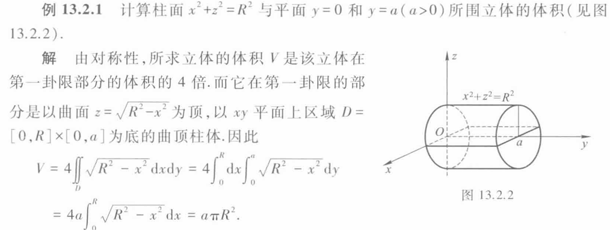
\(\Omega\)为球体\(x^2 + y^2 + z^2 \le R^2\)，\(x^2 + y^2 + z^2 \le 2Rz\)的公共部分，求\(\iiint_{\Omega} z^2 dxdydz\)
先对与\(xy\)平面平行的圆积分，得到原式等于\(\int_{0}^{R} z^2 dz \iint_{\Omega_{z}} dxdy\)，其中\(\Omega_{z}\)为交集部分被平行于\(xy\)的平面所截的圆
由于\(\Omega_{z}\)为圆，因此\(\iint_{\Omega_{z}} dxdy = \pi (x^2 + y^2)\)，在\(z \in [0,\frac{R}{2}]\)时，\(x^2 + y^2 \le 2Rz - z^2\)，在\(z \in [\frac{R}{2}, R]\)时，\(x^2 + y^2 \le R^2 - z^2\)，因此\(\int_{0}^{R} z^2 dz \iint_{\Omega_{z}} dxdy = \int_{0}^{\frac{R}{2}} z^2 \pi (2Rz - z^2) dz + \int_{\frac{R}{2}}^{R} z^2 \pi (R^2 - z^2) dz\)
因此对更高维度的积分，可以先对某一维度积分，再对下一维度积分，以此类推，并且视简便情况调整积分次序
- Lebesgue定理（弱化ver. : \(f\)是\([a,b]\times [c,d]\)上的有界函数，\(f\)的间断点集的面积为0，则\(f\)在\([a,b]\times [c,d]\)上可积）
二重积分的换元¶
\(D\)为\(uv\)平面上的区域，\(D^*\)为\(xy\)平面上的区域，\(x = \varphi(u,v)\), \(y = \psi(u,v)\)，则\(\iint_{D^*} f(x,y) dxdy = \iint_{D} f(\varphi(u,v), \psi(u,v)) |\frac{\partial (x,y)}{\partial (u,v)}| dudv\) （注意这里Jacobi行列式外面套了层绝对值）
特别的，命\(x = r \cos \theta\), \(y = r \sin \theta\)，则\(\iint_{D^*} f(x,y) dxdy = \iint_{D} f(r \cos \theta, r \sin \theta) r dr d\theta\)
例
- 求\(\iint_{D} (x+y) dxdy\)，其中\(D\)为\(x^2 + y^2 = x + y\)的内部
- 圆心为\((\frac{1}{2}, \frac{1}{2})\)，半径为\(\frac{\sqrt{2}}{2}\)，因此令\(x = \frac{1}{2} + r \cos \theta\), \(y = \frac{1}{2} + r \sin \theta\), \(r \in [0, \frac{\sqrt{2}}{2}]\), \(\theta \in [0, 2\pi]\)
- 原式 \(= \int_{0}^{2\pi} d \theta \int_{0}^{\frac{\sqrt{2}}{2}} (1 + r \cos \theta +r \sin \theta) r dr\)
球坐标变换
球坐标：\(\begin{cases} x = r \sin \varphi \cos \theta \\ y = r \sin \varphi \sin \theta \\ z = r \cos \varphi \end{cases}\)，\(r \in [0, +\infty)\), \(\theta \in [0, 2\pi]\), \(\varphi \in [0, \pi]\)
此时\(dx dy dz = r^2 \sin \varphi dr d\varphi d\theta\)（总是先对\(r\)积分，再对\(\varphi\)积分，最后对\(\theta\)积分）
柱坐标变换
柱坐标：\(\begin{cases} x = r \cos \theta \\ y = r \sin \theta \\ z = z \end{cases}\)，\(r \in [0, +\infty)\), \(\theta \in [0, 2\pi]\), \(z \in (-\infty, +\infty)\)
此时\(dx dy dz = r dr d\theta dz\)（总是先对\(r\)积分，再对\(\theta\)积分，最后对\(z\)积分）
曲线积分（快速补天）¶
第一类曲线积分（对弧长积分）：形如\(\int_{L} f(x,y) ds\)，若\(f(x,y)=1\)，则为曲线的长度
弧微分\(ds = \sqrt{dx^2 + dy^2} = \sqrt{1 + y'(x)^2} dx\)
第二类曲线积分（对坐标积分）：形如\(\int_{L} P(x,y,z) dx + Q(x,y,z) dy + R(x,y,z) dz\)
第一类¶
- 参数方程：\(x = x(t), y = y(t), z = z(t)\)，\(a \le t \le b\)，则\(\int_{L} f(x,y,z) ds = \int_{a}^{b} f(x(t), y(t), z(t)) \sqrt{x'(t)^2 + y'(t)^2 + z'(t)^2} dt\) （先参数化后划为定积分）
- 平面曲线\(y=y(x)\)，\(a \le x \le b\) ：\(\int_{L} f(x,y) ds = \int_{a}^{b} f(x, y(x)) \sqrt{1 + y'(x)^2} dx\),要求\(y(x)\)在\([a,b]\)连续可导
- 平面曲线\(r = r(\theta)\)，\(\alpha \le \theta \le \beta\)：\(\int_{L} f(x,y) ds = \int_{\alpha}^{\beta} f(r(\theta) \cos \theta, r(\theta) \sin \theta) \sqrt{r'(\theta)^2 + r(\theta)^2} d\theta\)
- 对称性与轮换性
第二类¶
对向量值函数在曲线某一方向上的积分（ref：变力做功）（因此被积函数是向量，积分变元也是向量）,形如\(\int_{C} \overrightarrow{A} d \overrightarrow{s}\)，其中\(\overrightarrow{A} = P \overrightarrow{i} + Q \overrightarrow{j} + R \overrightarrow{k}\)
- 与第一类的关系：\(| \int_{C} \overrightarrow{A} d \overrightarrow{s} | = | \int_{C} \overrightarrow{A} \cdot \overrightarrow{T} ds |\)，其中\(\overrightarrow{T}\)为曲线的单位切向量

- 在\(d\)谁的时候，就把前面式子里所有其他的变量都换成用谁表示的形式，然后分段定积分，对应上下界为谁的起点和终点
- Green公式：\(P(x,y),Q(x,y)\)在\(D\)上有一阶连续偏导数，则\(\int_{C} Pdx + Qdy = \iint_{D} (\frac{\partial Q}{\partial x} - \frac{\partial P}{\partial y}) dxdy\)，\(C\)为\(D\)的边界，方向为正向
- 定义正向：沿边界行走时，区域在左侧，对于一般的类多边形区域，为逆时针
- 曲线积分与路径无关：
- 若与路径无关，则有Newton-Leibniz公式：\(\int_{C} Pdx + Qdy = u(B) - u(A)\)，其中\(u\)为\(P\)的一个原函数，积分为第二类曲线积分
曲面积分¶
第一类曲面积分：形如\(\iint_{\Sigma} f(x,y,z) dS\)，\(f=1\)时为曲面的面积
第二类曲面积分：形如\(\iint_{\Sigma} P(x,y,z) dydz + Q(x,y,z) dzdx + R(x,y,z) dxdy\)
第一类¶
光滑曲面\(\Sigma\)由参数方程\(\overrightarrow{r}(u,v) = (x(u,v), y(u,v), z(u,v))\)定义
- 若\(f\)在\(\Omega\)连续，则\(\iint_{\Sigma} f(x,y,z) dS = \iint_{D} f(x(u,v), y(u,v), z(u,v)) |\overrightarrow{r}_u \times \overrightarrow{r}_v| dudv\)，注意等号后面这个积分是二重积分，在\(uv\)平面上
- 若\(\Sigma\)由\(z = z(x,y)\)定义，则\(\iint_{\Sigma} f(x,y,z) dS = \iint_{D} f(x,y,z(x,y)) \sqrt{1 + z_x^2 + z_y^2} dxdy\)
- \(D\)为\(\Sigma\)在\(xy\)平面上的投影区域
例
- 求\(\iint_{\Sigma} \sqrt{\frac{x^2}{a^4} + \frac{y^2}{b^4} +\frac{z^2}{c^4}} dS\), \(\Sigma\)为\(\frac{x^2}{a^2} + \frac{y^2}{b^2} + \frac{z^2}{c^2} = 1\)
- 利用球坐标变换，\(x = a \sin \varphi \cos \theta\), \(y = b \sin \varphi \sin \theta\), \(z = c \cos \varphi\)，\(0 \le \varphi \le \pi\), \(0 \le \theta \le 2\pi\)
- \(\overrightarrow{r_{\varphi}} \times \overrightarrow{r_{\theta}} = \bigg| \begin{array}{ccc} \overrightarrow{i} & \overrightarrow{j} & \overrightarrow{k} \\ a \cos \varphi \cos \theta & b \cos \varphi \sin \theta & -c \sin \varphi \\ -a \sin \varphi \sin \theta & b \sin \varphi \cos \theta & 0 \end{array} \bigg| = abc \sin \varphi \sqrt{\frac{\cos^2 \theta \sin^2 \varphi}{a^2} + \frac{\sin^2 \theta \sin^2 \varphi}{b^2} + \frac{\cos^2 \varphi}{c^2}}\)
- 原式 \(= \int_{0}^{2\pi} d \theta \int_{0}^{\pi} abc \sin \varphi \sqrt{\frac{\cos^2 \theta \sin^2 \varphi}{a^2} + \frac{\sin^2 \theta \sin^2 \varphi}{b^2} + \frac{\cos^2 \varphi}{c^2}} d \varphi\)
第二类¶
曲面\(\Sigma : z = z(x,y)\)单位化后的法向量（向上）为\(\overrightarrow{n} = \frac{(-z_x, -z_y, 1)}{\sqrt{1 + z_x^2 + z_y^2}}\)，向下则取负
法向量的三个分量记作\(\cos \alpha, \cos \beta, \cos \gamma\)
得计算公式：\(\iint_{\Sigma} Pdydz + Qdzdx + Rdxdy = \iint_{\Sigma} (P \cos \alpha + Q \cos \beta + R \cos \gamma) dS\)，等号右侧为第一类曲面积分
球面外法向量为\(\overrightarrow{n} = (\frac{x}{r}, \frac{y}{r}, \frac{z}{r})\)
例
计算\(\iint_{\Sigma} xdydz + ydzdx + zdxdy\)，其中\(\Sigma : x^2 + y^2 + z^2 = a^2 (a > 0)\)方向向外
外法向量为\(\overrightarrow{n} = (\frac{x}{a}, \frac{y}{a}, \frac{z}{a})\)，则\(\cos \alpha = \frac{x}{a}, \cos \beta = \frac{y}{a},\cos \gamma = \frac{z}{a}\)，原式 \(= \frac{1}{a}\iint_{\Sigma} (x^2 + y^2 + z^2) dS = \frac{1}{a} \iint_{\Sigma} a^2 dS = a \iint_{\Sigma} dS = a \cdot 4 \pi a^2 = 4 \pi a^3\)
对形如\(\iint_{\Sigma} R(x,y,z)dxdy\)的第二类曲面积分（\(\Sigma : z = z(x,y)\)），可投影到xy平面上积分，即\(\iint_{\Sigma} R(x,y,z)dxdy = \pm \iint_{D_{xy}} R(x,y,z(x,y)) dxdy\)，\(\Sigma\)为上侧时取正，下侧时取负
同理，投到zx平面时，取右侧为正，左侧为负，投到yz平面时，取前侧为正，后侧为负
参数平面：
转为单面积：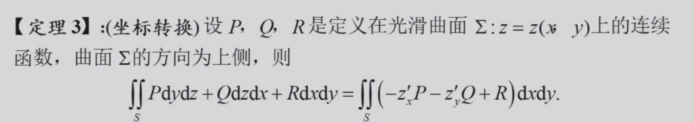
Stokes公式：
 等号左侧为第二类曲面积分，右侧为第二类曲线积分
等号左侧为第二类曲面积分，右侧为第二类曲线积分
Gauss公式：空间闭区域\(\Omega\)由分片光滑的闭曲面\(\Sigma\)围成，\(\Sigma\)取外侧，函数\(P(x,y,z),Q(x,y,z),R(x,y,z)\)在\(\Omega\)上有连续一阶偏导，则有
\(\iint_{\Sigma} Pdydz + Qdzdx + Rdxdy = \iiint_{\Omega} (\frac{\partial P}{\partial x} + \frac{\partial Q}{\partial y} + \frac{\partial R}{\partial z}) dxdydz\)
谁拉这了
普通物理学Ⅰ（H）¶
约 1886 个字 5 张图片 预计阅读时间 5 分钟
任课教师：路欣
Solving problems in the view of vectors¶
Dimension¶
类似单位，但是以具体的量表述，如\(m(米) \rightarrow [length]\),\(s(秒) \rightarrow [time]\),\(kg(千克) \rightarrow [mass]\)
向量的单位/Dimension
向量的单位/Dimension就是其对应标量（module）的单位/Dimension。
因此单位向量的Dimension等于一般向量的Dimension除以其module的单位，也就是1
So unit vectors are dimensionless.
Work-Kinetic Energy/Momentum Principle¶
Conservative Force¶
保守力：做功大小与路径/过程无关，只与初末位置/状态有关的力，如重力、弹力、电场力。
保守力的做功等于对应势能的增量，即\(W = -\Delta U\)
Center of Mass(CM)¶
\(x_{cm} = \frac{m_1x_1 + m_2x_2 + \cdots + m_nx_n}{m_1 + m_2 + \cdots + m_n}\)
 对于含有大量微粒的系统，其质心由求和转变为积分
对于含有大量微粒的系统，其质心由求和转变为积分
\(x_{cm} = \lim_{\Delta m \to 0} \frac{\sum x_i \Delta m_i}{M} = \frac{\int xdm}{M}\)
CM Frame(质心系)¶
质心系是一个特殊的惯性系，质心系中的物体的总动量为0。质心可视为虚拟的质点。质心的质量为质点系所有质点质量之和。
\(\vec{v}_{cm} = \frac{\sum m_i\vec{v}_i}{\sum m_i}\)
\(\vec{a}_{cm} = \frac{\sum m_i\vec{a}_i}{\sum m_i}\)
质心动量¶
质点系总动量等于质心动量，即\(\sum m_i\vec{v}_i = (\sum m_i)\frac{\sum m_i\vec{v}_i}{\sum m_i} = (\sum m_i)\vec{v}_{cm}\)
因此质心动量的改变量等于质点系合外力的冲量。
质心动能¶
柯尼希定理：质点系的动能等于质心动能加上每个质点相对质心的动能之和，即\(E = E_{cm} + \sum E_{k,i-cm}\)
Rotational Motion¶
\(\tau = I\alpha\)(类比\(F = ma\))
其中\(\tau\)为力矩，\(I\)为转动惯量，\(\alpha\)为角加速度
\(I = \sum m_i r_i^2 = \int r^2 dm\), 与物体旋转轴的位置有关
将刚体看作许多质点集合
常见几何体转动惯量

由此可表示转动物体的动能：\(E_k = \frac{1}{2}I\omega^2\)(\(\omega\)为角速度)
与动能定理：\(\sum W = \int_{\theta_i}^{\theta_f} \sum \tau d\theta = \int_{\omega_i}^{\omega_f} I\omega d\omega = \frac{1}{2}I\omega_f^2 - \frac{1}{2}I\omega_i^2\)
平行轴定理：\(I = I_{cm} + Mh^2\)，其中\(I_{cm}\)为以质心为轴的转动惯量，\(h\)为质心到新转轴的距离
角动量¶
\(L = I\omega = r \times p\)

角动量守恒：要求外力矩为0，即\(\tau_{\text{ext}} = 0\)
简谐运动¶
定义\(\omega = \sqrt{\frac{k}{m}}\)，其中\(k\)为弹簧的劲度系数
则\(x = Acos(\omega t + \phi)\)
\(v = -A\omega sin(\omega t + \phi)\)
\(a = -A\omega^2 cos(\omega t + \phi)\)
阻尼振动¶
\(F_{\text{damping}} = -bv\)
\(x = Ae^{-\frac{b}{2m}t}cos(\omega t + \phi)\)
\(\omega = \sqrt{\frac{k}{m} - \frac{b^2}{4m^2}}\)
受迫振动¶
\(x = A'e^{-\frac{b}{2m}t}cos(\omega' t + \phi') + Acos(\omega t + \phi)\)
波动¶
- 横波：波动方向与波传播方向垂直
- 纵波：波动方向与波传播方向平行
透射与反射：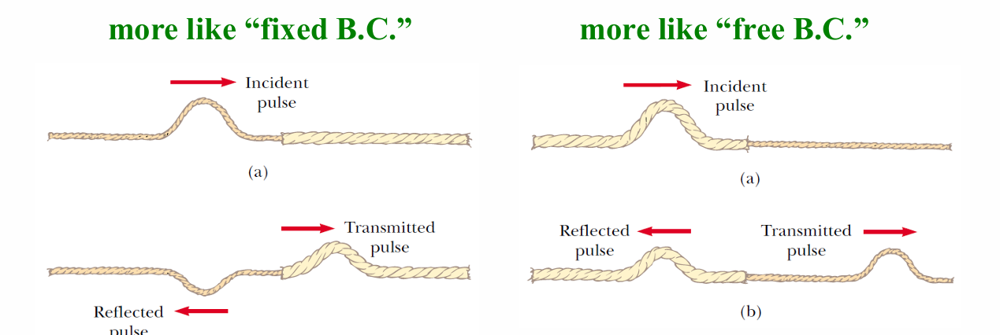
Destructive Interference: \(\Delta x = (n + \frac{1}{2})\lambda\)
Constructive Interference: \(\Delta x = n\lambda\)
（\(\Delta x\)为定点到两波源的距离差）
\(f(x,t) = f(x-vt)\)或\(f(x,t) = f(x+vt)\)，正号代表波向左传播，负号代表波向右传播 波动方程：\(\frac{\partial^2 u}{\partial t^2} = v^2\frac{\partial^2 u}{\partial x^2}\)，其中\(v\)为波速，\(u\)为波函数，\(x\)为波传播方向，\(t\)为时间
通解为\(y(x,t) = Acos(kx - \omega t + \phi)\)，其中\(k = \frac{2\pi}{\lambda}\)，\(\omega = 2\pi f\)，\(\phi\)为初相位
波速：\(v = \frac{\lambda}{T} = \lambda f = \sqrt{\frac{F}{\sigma}}\)(\(\lambda\)为波长，\(T\)为周期，\(f\)为频率，\(F\)为张力，\(\sigma\)为线密度（单位长度的质量）)
驻波：两个波源频率相同，波长相同，波速相同，波源间距为半波长的整数倍
声波¶
\(I = \frac{P}{A} = \frac{1}{2}\rho v (\omega s_{max})^2\)(\(\rho\)为介质密度，\(v\)为声速，\(\omega\)为角频率，\(s_{max}\)为最大位移
\(I\)为声强，\(P\)为声功率，\(A\)为声波通过的面积
多普勒效应¶
观测者靠近声源，频率增大；远离声源，频率减小
- 声源运动，观测者静止：\(f = \frac{f_0}{1 \pm \frac{v_s}{v}}\)，其中\(f\)为观测到的频率，\(f_0\)为声源发出的频率，\(v_s\)为声源速度，\(v\)为声速
- 声源静止，观测者运动：\(f = f_0(1 \pm \frac{v_o}{v})\)，其中\(v_o\)为观测者速度
相对论¶
Lorentz Transformation¶
B关于A的速度为\(v\).对于某个事件，A系中的坐标为\((x,t)\)，B系中的坐标为\((x',t')\)
则\(x' = \frac{x-vt}{\sqrt{1-\frac{v^2}{c^2}}}\),\(t' = \frac{t-\frac{v}{c^2}x}{\sqrt{1-\frac{v^2}{c^2}}}\)
注意到当\(v \ll c\)时，Lorentz Transformation 退化为 Galilean Transformation: \(x' = x - vt\),\(t' = t\)
速度变换¶
令\(\Delta x = x_2 - x_1\),\(\Delta t = t_2 - t_1\)
则\(\Delta x' = \frac{\Delta x - v\Delta t}{\sqrt{1-\frac{v^2}{c^2}}}\),\(\Delta t' = \frac{\Delta t - \frac{v}{c^2}\Delta x}{\sqrt{1-\frac{v^2}{c^2}}}\)
定义
- \(v = \frac{\Delta x}{\Delta t}\) 为物体在A系中的速度
- \(w = \frac{\Delta x'}{\Delta t'}\) 为物体在B系中的速度
- \(u\) 为B相对于A的速度
则\(\frac{\Delta x'}{\Delta t'} = \frac{\Delta x - v\Delta t}{\Delta t - \frac{v}{c^2}\Delta x} \underrightarrow{\Delta t \to 0} \frac{dx}{dt} = w = \frac{v - u}{1 - \frac{uv}{c^2}}\)
则也可得到\(v = \frac{u + w}{1 + \frac{uw}{c^2}}\)
长度收缩：\(L' = L_0 \sqrt{(1-\frac{u^2}{c^2})}\)
时间膨胀：\(\Delta t' = \frac{\Delta t_0}{\sqrt{(1-\frac{u^2}{c^2})}}\)
能量与动量¶
质速关系：\(m = \frac{m_0}{\sqrt{1-\frac{v^2}{c^2}}}\)
\(K = \frac{mc^2}{\sqrt{1-\frac{v^2}{c^2}}} - mc^2\)（动能）
\(K_1 = m_0 c^2\) （静止能量）
总能量：\(E = K + K_1 = \frac{m_0c^2}{\sqrt{1-\frac{v^2}{c^2}}} = mc^2\)
\(p = \frac{m_0 u}{\sqrt{1-\frac{u^2}{c^2}}}\)
热¶
均方根速率：\(v_{rms} = \sqrt{\frac{3kT}{m}}\)，其中\(k\)为玻尔兹曼常数，\(T\)为温度，\(m\)为质量
最概然速率：\(v_{mp} = \sqrt{\frac{2kT}{m}}\)
平均速率：\(v_{avg} = \sqrt{\frac{8kT}{\pi m}}\)
\(R = 8.31J/(mol \cdot K)\)
\(k_B = \frac{R}{N_A} = 1.38 \times 10^{-23} J/K\)
于是\(PV = nRT = Nk_BT\)
线性膨胀：\(\Delta L = \alpha L \Delta T\)
体积膨胀：\(\Delta V = \beta V \Delta T\)
\(\beta = 3\alpha\)
对于真实情况下的气体，van der Waals方程：\((P + \frac{aN^2}{V^2})(V - Nb) = Nk_BT\)，其中\(a\)为分子间吸引力系数，\(b\)为分子体积
两个温度分别为T1，T2的热库通过截面积为S的细杆热传递（T1>T2），热传递速率\(\frac{dQ}{dT} = -kS \frac{T1-T2}{L}\)，\(k\)为杆材料的热传导率，\(T1 \rightarrow T2\)时有\(\frac{dQ}{dT} = -kS \frac{dT}{dx}\)
分子动能\(E_k = \frac{1}{2} m v^2 = \frac{3}{2} k_B T\)，对于大量处于某一温度的分子（宏观上已被视为气体），其速度不全为v，而是服从麦克斯韦-玻尔兹曼分布：\(f(v) = 4\pi (\frac{m}{2\pi k_B T})^{3/2} v^2 e^{-\frac{mv^2}{2k_B T}}\)
平均碰撞次数：\(z = n_v \pi d^2 vt\)
平均自由程：\(l = \frac{k_B T}{\sqrt{2} \pi d^2 p}\)
热力学第一定律¶
\(dU = \Delta Q - PdV\)
功：\(W = \int_{V_i}^{V_f} PdV\)
气体从\((P_1, V_1)\)到\((P_2, V_2)\)的功（等温）：\(W = \int_{V_1}^{V_2} PdV = \int_{V_1}^{V_2} \frac{nRT}{V}dV = nRTln\frac{V_2}{V_1}\)
定义\(c = \frac{dQ}{dT}\)
等容摩尔热容：\(C_v = \frac{i}{2}R\)，其中\(i\)为自由度
等压摩尔热容：\(C_p = C_v + R\)
则定义：\(\gamma = \frac{C_p}{C_v} = \frac{i+2}{i}\)
绝热过程中：\(PV^{\gamma} = C\)，\(W_{A\rightarrow B} = \frac{P_A V_A - P_B V_B}{\gamma - 1}\)
卡诺热机效率：\(\eta = 1 - \frac{T_2}{T_1}\)，其中\(T_1\)为高温，\(T_2\)为低温
制冷系数：\(\frac{1}{\eta} - e = 1\)

Entropy¶
\(ds = \frac{dQ}{T}\)，要求\(Q\)是可逆过程中的热量
等温过程\(S_2 - S_1 = nR \ln \frac{V_2}{V_1}\)
常微分方程¶
约 4917 个字 11 张图片 预计阅读时间 14 分钟
任课教师：王伟
这课讲的很浅，好像难度也不大
疑似小测后开始上强度了（
UsefulLinks
成绩组成
- 平时成绩：50%，包括作业30%和小测20%
- 期末考试：50%
基本概念¶
含有未知数、所求的未知函数、未知函数的导数的方程，称为微分方程。
最高阶导数的阶数称为微分方程的阶数。
n阶微分方程的一般形式：\(F(x, y, y', y'', \cdots, y^{(n)}) = 0\)
- 其中\(y^{(n)}\)必须出现，其他变量不要求。如 \(y^{(n)} = 1\)
使微分方程成为恒等式的\(y = y(x)\)称为微分方程的解，这就是定义中的“未知函数”。
若解中含有任意常数且常数的个数与方程阶数相等，则称为微分方程的通解，不含有常数则为特解。
为了求解方程的特解，需要提供一些初始条件，如\(y(x_0) = y_0, y'(x_0) = y_0'\)等。
一阶ode¶
一般形式：\(f(x, y) = \frac{dy}{dx}\)
可分离变量的ode解法¶
即可化为\(\frac{dy}{dx} = \varphi (x)\psi (y)\)的形式。
解法：分离变量，两边积分。
例
- 求解\(\frac{dy}{dx} = 2xy\)
- 分离变量，得\(\frac{dy}{y} = 2xdx\)
- 两边积分，得\(\ln |y| = x^2 + C\)
- 代回\(x\),\(y\),得\(y = Ce^{x^2}\)
- 求解略复杂的可分离形式的ode:\(\frac{dy}{dx} = \sin ^2 (x-y+1)\)
- (想办法取出sin中的东西)令\(u=x-y+1\),则\(\frac{du}{dx} = 1-\frac{dy}{dx}\)
- 代入原式，得\(\frac{du}{dx} = 1 - \sin ^2 u = \cos ^2 u\)
- 分离变量，得\(\frac{du}{\cos ^2 u} = dx\)
- 两边积分，得\(\tan u = x + C\)
- 代回\(x\),\(y\),得\(\tan (x-y+1) = x + C\)
未知量齐次ode解法¶
即可由一般形式化为\(\frac{dy}{dx} = \varphi (\frac{y}{x})\)的形式。 只要注意到等号两侧\(y\)与\(x\)的次数相同，就可以尝试变形后用\(u = \frac{y}{x}或\frac{x}{y}\)的形式进行变换。
解法：令\(y = ux\),则\(\frac{dy}{dx} = u + x\frac{du}{dx}\)，再代入原方程。
例
- 求解齐次ode:\((y^2-2xy)dx+x^{2}dy=0\)（注意\(x\),\(y\)的次数相同）
- 先变形，得\(\frac{dy}{dx} = 2\frac{y}{x} - (\frac{y}{x})^2\)
- 令\(u = \frac{y}{x}\),则\(y = ux\),\(\frac{dy}{dx} = u + x\frac{du}{dx}\)
- 代入原方程，得\(u + x\frac{du}{dx} = 2u - u^2\)
- 分离变量，得\(\frac{du}{u(1-u)} = \frac{dx}{x}\)
- 两边积分，得\(\ln |u| - \ln |1-u| = \ln |x| + C\)
一阶线性ode解法¶
一般形式：\(\frac{dy}{dx} + P(x)y = Q(x)\)
当\(Q(x) = 0\)时，称为齐次线性方程；否则称为非齐次线性方程。
解法：类似于线性代数中（非）齐次线性方程组的解法
- Step 1: 求齐次线性方程的通解（分离变量）
- \(\frac{dy}{dx} + P(x)y = 0\)
- \(\Rightarrow \frac{dy}{y} = -P(x)dx\)
- \(\Rightarrow \ln |y| = -\int P(x)dx + C\)
- \(\Rightarrow y = Ce^{-\int P(x)dx}\)
- Step 2: 常数变易法求非齐次线性方程的通解
- \(C\)为常数时，\(y = Ce^{-\int P(x)dx}\)是齐次线性方程的通解
- \(C = u(x)\)时，假设\(y = u(x)e^{-\int P(x)dx}\)是非齐次线性方程的通解
- 代入\(\frac{dy}{dx} + P(x)y = Q(x)\)
- 得\(u'(x)e^{-\int P(x)dx} = Q(x)\)
- 由此得\(u(x) = \int Q(x)e^{\int P(x)dx}dx + C\)
- 因此非齐次线性方程的通解为\(y = e^{-\int P(x)dx}(\int Q(x)e^{\int P(x)dx}dx + C)\)
例
- 求解非齐次线性ode:\(\frac{dy}{dx} = \frac{1}{x+y}\)
- 解法1: 取倒数化为非齐次一般形式
- \(\frac{dx}{dy} = x+y\)
- 将\(x\)看作因变量: \(\frac{dx}{dy} - x = y\)
- 代入公式，于是\(P(y) = -1\), \(Q(y) = y\)
- 得\(x = e^{y}(\int y e^{-\int dy}dy + C)\)
- 积分化简得\(x = Ce^{y} - y - 1\)
- 解法2: 也可以用未知量齐次的换元+分离方法
- 令\(u = x+y\),则\(\frac{dy}{dx} = \frac{du}{dx} - 1\)
- 代回方程得\(\frac{du}{dx} - 1 = \frac{1}{u}\)
- 分离变量得\(\frac{du}{1+\frac{1}{u}} = dx\)
- 两边积分得\(u - ln|u+1| = x + C\)
- 代回\(u = x+y\),得\(y - ln|x+y+1| + C = 0\)
- 解法1: 取倒数化为非齐次一般形式
伯努利方程¶
形式：\(\frac{dy}{dx} + P(x)y = Q(x)y^n\)
解法: 两边同时除以\(y^n\)，既得\(\frac{1}{y^n}\frac{dy}{dx} + P(x)y^{1-n} = Q(x)\)，
观察到第一项恰好等于\(\frac{d(y^{1-n})}{(1-n)dx}\)，
于是令\(z = y^{1-n}\)，则\(\frac{dz}{dx} + (1-n)P(x)z = (1-n)Q(x)\)
这就化为了一阶线性ode，套用公式解出\(z\)，再代回\(y\)即可。
例
- 求解伯努利方程:\(\frac{dy}{dx} + \frac{y}{x} = a(\ln x)y^2\)
- 令\(z = y^{1-2} = y^{-1}\),则\(\frac{dz}{dx} - \frac{z}{x} = -a\ln x\)
- 于是\(P(x) = -\frac{1}{x}\), \(Q(x) = -a\ln x\)
- 代入公式得\(z = e^{\int \frac{1}{x}dx}(-\int a\ln x e^{-\int \frac{1}{x}dx}dx + C)\)
- 积分化简后得到\(z = -\frac{1}{2} ax(\ln x)^2 + Cx\)
- 代回,得\(y = \frac{1}{-\frac{1}{2} ax(\ln x)^2 + Cx}\)
全微分方程¶
（我没看懂，很多都是多元函数和偏导的东西，可能会在数分上讲到）
将微分方程化为\(M(x,y)dx + N(x,y)dy = 0\)的形式，若\(\exists u(x,y)\)使得\(du(x,y) = M(x,y)dx + N(x,y)dy\)，则称为全微分方程。
则\(u(x,y) = C\)即为微分方程的通解。
例如 \(xdx+ydy = 0\)，等号左侧为 \(d(\frac{1}{2}x^2 + \frac{1}{2}y^2)\)，因此\(\frac{1}{2}x^2 + \frac{1}{2}y^2 = C\) 即为通解。
\(M(x,y)dx + N(x,y)dy = 0\)是全微分方程 \(\leftrightarrow \frac{\partial M(x,y)}{\partial y} = \frac{\partial N(x,y)}{\partial x}\)
(dx的系数对y求导 = dy的系数对x求导)
而\(u(x,y) = \int_{(0,0)}^{(x,y)} M(x,y)dx + N(x,y)dy\)即为微分方程的特解。
- 解法1：
- 求解\(u(x,y)\): 从\((0,0)\)先积分到\((x,0)\), 再从\((x,0)\)积分到\((x,y)\)
- (路径积分)
- 解法2:
- 凑全微分（技巧性较强）
凑全微分
我估计不久后会搬到数分Ⅱ笔记里 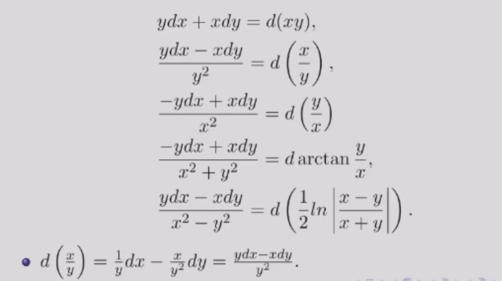
例
- 求解\((3x^{2}+6xy^{2})dx + (6x^{2}y+4y^{3})dy = 0\)
- 解法1: 直接求解
- 此处\(M = 3x^{2}+6xy^{2}\), \(N = 6x^{2}y+4y^{3}\)
- 而\(\frac{\partial M}{\partial y} = 12xy = \frac{\partial N}{\partial x}\), 因此为全微分方程
- \(u(x,y) = \int_{(0,0)}^{(x,y)} (3x^{2}+6xy^{2})dx + (6x^{2}y+4y^{3})dy\)
- \(= \int_{0}^{x} 3t^{2}dt + \int_{0}^{y} (6x^{2}s+4s^{3})ds\)
- \(= x^{3} + 3x^{2}y^{2} + y^{4}\)
- 通解就是\(u(x,y) = C\), 即\(x^{3} + 3x^{2}y^{2} + y^{4} = C\)
- 解法2: 凑全微分
- 改写方程为\(3x^{2}dx + 4y^{3}dy + 6xy(ydx + xdy) = 0\)
- 凑微分得\(d(x^{3} + y^{4}) + 6xyd(xy) = 0\)
- 也就是\(d(x^{3} + y^{4} + 3x^{2}y^{2}) = 0\)
- 得通解\(x^{3} + y^{4} + 3x^{2}y^{2} = C\)
- 解法1: 直接求解
- 求解\((\cos x + \frac{1}{y})dx + (\frac{1}{y} - \frac{x}{y^{2}})dy = 0\)
- 分离一下，得\(\cos x dx + \frac{1}{y}dy + \frac{ydx-xdy}{y^{2}} = 0\)
- 凑微分得\(d(\sin x + \ln |y| - \frac{x}{y}) = 0\)
- 得通解\(\sin x + \ln |y| - \frac{x}{y} = C\)
- 解法3: 积分因子
- 若微分方程不是全微分方程，可以乘以一个函数\(\mu(x,y)\)，使得\(\mu(x,y)M(x,y)dx + \mu(x,y)N(x,y)dy = 0\)是全微分方程
- 之后在按照解全微分方程的方法来解
- 若\(M(x,y)dx + N(x,y)dy = 0\)满足\(\frac{1}{N} (\frac{\partial M}{\partial y} - \frac{\partial N}{\partial x}) = f(x)\)(只和x有关)
- 则积分因子\(\mu(x) = e^{\int f(x)dx}\)
- 若\(M(x,y)dx + N(x,y)dy = 0\)满足\(\frac{1}{M} (\frac{\partial N}{\partial x} - \frac{\partial M}{\partial y}) = g(y)\)
- 则积分因子\(\mu(y) = e^{\int g(y)dy}\)
例
- 求解\(ydx+(x+x^2 y^2 )dy = 0\)
- 改写为\(ydx+xdy+x^2 y^2 dy = 0\)
- 两边同乘\(\mu(x,y) = (xy)^{-2}\)（我不到怎么发现的）
- 得\(\frac{d(xy)}{(xy)^2} + dy = 0\)
- \(\rightarrow d(-\frac{1}{xy} + y) = 0\)
高阶ode¶
可降阶的二阶ode¶
- \(y^n = f(x)\)
- 解法：直接积分n次
- 较为简单，注意每次积分都要加上常数
- \(y'' = f(x,y')\) (无\(y\))
- 解法：令\(y' = p\), 则\(y'' = p'\), 于是原方程化为一阶方程\(p' = f(x,p)\)
- 注意这里的p仍然是x的函数，即\(p' = \frac{dp}{dx}\)
例
- 求解\((1+x^2)y'' = 2xy'\)
- 令\(y' = p\), 则\(y'' = p'\), 于是原方程化为一阶方程\(p' = \frac{2xp}{1+x^2}\)
- 分离变量得\(\frac{dp}{p} = \frac{2xdx}{1+x^2}\)
- 两边积分得\(\ln |p| = \ln |1+x^2| + C\)
- 代回得\(p = C(1+x^2)\)
- 再对x积分一次得\(y = C_1(x+\frac{1}{3} x^3) + C_2\)
- \(y'' = f(y,y')\) (无\(x\))
- 解法：令\(y' = p\), 则\(y'' = \frac{dp}{dx} = \frac{dp}{dy} \frac{dy}{dx} = p\frac{dp}{dy}\), 于是原方程化为一阶方程\(p\frac{dp}{dy} = f(y,p)\)
- 这里将p看作y的函数，也即自变量是y，因变量是p
例
- 求解\(yy'' - (y')^2 = 0\)
- 令\(y' = p\), 则\(y'' = p \frac{dp}{dy}\)
- 原方程化为\(yp \frac{dp}{dy} - p^2 = 0\)
- 分离变量得\(\frac{dp}{p} = \frac{dy}{y}\)
- 两边积分得\(\ln |p| = \ln |y| + C\)
- 代回得\(p = y' = \frac{dy}{dx} = C_1 y\)
- 注意这个是关于\(y\)和\(x\)的ode，分离变量得\(\frac{dy}{y} = C_1 dx\)
- 积分化简得到\(y=C_2 e^{C_1 x}\)
二阶线性ode¶
定义函数的线性相关性：
若存在不全为零的常数\(k_1,k_2,\cdots,k_n\)使得\(k_1y_1(x) + k_2y_2(x) + \cdots + k_ny_n(x) = 0\)，则称\(y_1,y_2,\cdots,y_n\)线性相关。
n = 2时，若\(\frac{y_2(x)}{y_1(x)}\)是常数，则线性相关。
一般形式：\(y'' + P(x)y' + Q(x)y = f(x)\)（\(f(x)=0\)时为齐次，否则为非齐次）
有如下性质：
- 若\(y_1(x),y_2(x)\)是齐次方程的两个解，则\(C_1y_1(x) + C_2y_2(x)\)也是齐次方程的解
- 若\(y_1(x),y_2(x)\)是齐次方程的两个特解，且线性无关，则齐次方程的通解为\(y = C_1y_1(x) + C_2y_2(x)\)
- 推论：n阶齐次线性ode的n个特解的线性组合是通解
例
\(y'' + y = 0\)的特解为\(y_1 = \sin x, y_2 = \cos x\)
则\(y = C_1\sin x + C_2\cos x\)是通解
- 若\(y^* (x)\)是（非齐次）\(y'' + P(x)y' + Q(x)y = f(x)\)的一个特解，\(Y(x)\)是（对应的齐次方程）\(y'' + P(x)y' + Q(x)y = 0\)的通解，则\(y = Y(x) + y^* (x)\)是非齐次方程的通解
例
\(y''+y=x\)特解为\(y^* = x\), 而\(Y = C_1\sin x + C_2\cos x\)
则\(y = C_1\sin x + C_2\cos x + x\)是通解
- (叠加原理) \(y_1^{*}\)和\(y_2^{*}\)是\(y'' + P(x)y' + Q(x)y = f_1(x)\)和\(y'' + P(x)y' + Q(x)y = f_2(x)\)的特解，则\(y_1^{*} + y_2^{*}\)是\(y'' + P(x)y' + Q(x)y = f_1(x) + f_2(x)\)的特解
常系数齐次解法¶
一般形式：\(y'' + py' + qy = 0\)(p,q为常数)
注意到这表示\(y,y',y''\)的线性组合为0，考虑指数函数\(y = e^{rx}\)，代入方程得\(r^2 + pr + q = 0\)，即对应的特征方程，只需取满足该方程的r.
- \(p^2 - 4q>0\) 时，有两根\(r_1 \neq r_2\)
- 则两特解\(y_1 = e^{r_1 x}, y_2 = e^{r_2 x}\)
- 通解为\(y = C_1 e^{r_1 x} + C_2 e^{r_2 x}\)
- \(p^2 - 4q = 0\) 时，有两根\(r_1 = r_2 = r\)
- 通解为\(y = (C_1 + C_2 x) e^{r x}\)
- \(p^2 - 4q < 0\) 时，有两复根\(r_{1,2} = \alpha \pm i\beta\)
- 通解为\(y = e^{\alpha x}(C_1 \cos \beta x + C_2 \sin \beta x)\)
- 推论：\(y^{(n)} + p_1 y^{(n-1)} + \cdots + p_n y = 0\)的特征方程为\(r^n + p_1 r^{n-1} + \cdots + p_n = 0\)
- 在复数范围内有n个根，把下面的几个对应通解加起来
- \(k\)重实根\(r\)对应\(e^{rx} (C_0 + C_1 x + \cdots + C_{k-1} x^{k-1})\)
- \(k\)对虚根\(\alpha \pm \beta i\)对应\([(a_0 + a_1 x + \cdots + a_{k-1} x^{k-1})\cos \beta x + (b_0 + b_1 x + \cdots + b_{k-1} x^{k-1})\sin \beta x]e^{\alpha x}\)
- 上述\(a_i, b_i, C_i\)为任意常数
例
- 求解\(y'' - 2y' - 3y = 0\)
- 特征方程为\(r^2 - 2r - 3 = 0\), 解得\(r_1 = 3, r_2 = -1\)
- 通解为\(y = C_1 e^{3x} + C_2 e^{-x}\)
- 求解\(y'' - 4y' + 4y = 0\)
- 特征方程为\(r^2 - 4r + 4 = 0\), 解得\(r = 2\)
- 通解为\(y = (C_1 + C_2 x) e^{2x}\)
- 求解\(y^{(4)} - 2y''' + 5y'' = 0\)
- 特征方程为\(r^4 - 2r^3 + 5r^2 = 0\), 解得\(r = 0, 0, 1 \pm 2i\)
- 通解为\(y = C_1 + C_2 x + e^x(C_3 \cos 2x + C_4 \sin 2x)\)
常系数非齐次解法¶
非齐次通解 = 齐次通解 + 非齐次特解
一般形式：\(y'' + py' + qy = f(x)\), 特征方程依旧是\(r^2 + pr + q = 0\)
探讨如下两类\(f(x)\)
- \(f(x) = e^{\lambda x} P_m(x)\), \(P_m(x)\)是m次多项式
- \(\lambda\)不是特征根时，\(Q(x)\)为m次多项式，特解为\(y^* = e^{\lambda x} q_m(x)\)
- \(\lambda\)为特征方程的单根，\(Q(x)\)为\((m+1)\)次多项式，特解为\(y^* = xe^{\lambda x} q_m(x)\)
- \(\lambda\)为特征方程的重根，\(Q(x)\)为\((m+2)\)次多项式，特解为\(y^* = x^2 e^{\lambda x} q_m(x)\)
例
- 求\(y'' + 4y' +3y = x\)的一个特解
- 特征方程为\(r^2 + 4r + 3 = 0\), 解得\(r_1 = -1, r_2 = -3\)
- 此时\(f(x) = x = xe^{0x}\), 即\(P_m(x) = x, \lambda = 0\)
- \(\lambda\)不是特征根，\(Q(x)\)为一次多项式（与\(P_m(x)\)次数一样），设\(y^* = b_0 x + b_1\)
- 代入方程得\(4b_0 + 3b_0 x + 3b_1 = x\), 比较系数有\(b_0 = \frac{1}{3}, b_1 = -\frac{4}{9}\)
- 因此特解为\(y^* = \frac{1}{3} x - \frac{4}{9}\)
- 求解\(y'' -4y' +4y = (6x-2)e^{2x}\)
- 特征方程为\(r^2 - 4r + 4 = 0\), 解得\(r = 2\)
- 于是齐次方程通解为\(Y = (C_1 + C_2 x) e^{2x}\)
- 此时\(f(x) = (6x-2)e^{2x}\), \(P_m(x) = 6x-2, \lambda = 2\)
- \(\lambda\)是二重根，\(Q(x)\)次数比\(f(x)\)高两次，设特解为\(y^* = x^2 (b_0 + b_1 x)e^{2x}\)
- 代入原方程化简得\(6b_0 x + 2b_1 = 6x-2\), 比较系数得\(b_0 = 1, b_1 = -1\)
- 特解为\(y^* = x^2 (x - 1)e^{2x}\)
- 于是通解为\(y = （C_1 + C_2 x）e^{2x} + x^2 (x - 1)e^{2x}\)
- \(f(x) = e^{\lambda x}[P_l (x) \cos \omega x + P_n (x) \sin \omega x]\)
- 设特解为\(y^* = x^k e^{\lambda x}[Q_m (x) \cos \omega x + R_m (x) \sin \omega x]\)(推导过程略)
- 其中\(m = \max(l,n)\)
- 若\(\lambda \pm i\omega\)不是特征根, 则\(k = 0\)
- 若\(\lambda \pm i\omega\)是(一对)特征根, 则\(k = 1\)
例
- 求\(y'' - y = 10e^{2x} \cos x\)的一个特解
- 则\(P_l (x) = 10, P_n (x) = 0, \lambda = 2, \omega = 1, m = \max(l,n) = 0\)
- 且\(\lambda \pm i\omega = 2 \pm i\)显然不是特征根，因此\(k = 0\)
- 设特解为\(y^* = e^{2x} (a \ cos x + b \ sin x)\)
- 代入原方程化简得\((2a+4b) \ cos x + (2b-4a) \ sin x = 10 \ cos x\), 比较系数得\(a = 1, b = 2\)
- 特解为\(y^* = e^{2x} (cos x + 2 sin x)\)
- 求\(y'' + y = x \cos 2x\)的一个特解
- 则\(P_l (x) = x, P_n (x) = 0, \lambda = 0, \omega = 2, m = \max(l,n) = 1\)
- 且\(\lambda \pm i\omega = \pm 2i\)显然不是特征根，因此\(k = 0\)
- 设特解为\(y^* = (ax + b)\cos 2x + (cx + d)\sin 2x\)
- 代入原方程化简得\((-3ax-3b+4c) \cos 2x + (-3cx-3d-4a) \sin 2x = x \cos 2x\), 比较系数得\(a = -\frac{1}{3}, b = c = 0, d = \frac{4}{9}\)
- 则特解为\(y^* = -\frac{1}{3} x \cos 2x + \frac{4}{9} \sin 2x\)
Euler方程¶
形式：\(x^n y^{(n)} + p_1 x^{n-1} y^{(n-1)} + \cdots + p_{n-1} x y' + p_n y = f(x)\)
解法：令\(x = e^t\)，\(D=\frac{d}{dt}\)，可得\(x^k y^{(k)} = D(D-1)\cdots(D-k+1)y\), 代入原方程化为常系数线性ode
例
- 求解\(x^2 y'' - 2xy' + 2y = \ln^2 x -2\ln x\)
- 令\(x = e^t\), 方程化为\(D(D-1)y-2Dy+2y = t^2 - 2t\)
- 即\(D^2 y - 3Dy + 2y = t^2 - 2t\)
- 即\(\frac{d^2y}{dt^2} - 3\frac{dy}{dt} + 2y = t^2 - 2t\)
- 特征方程为\(r^2 - 3r + 2 = 0\), 解得\(r = 1, 2\)
- 齐次方程通解为\(y = C_1 e^t + C_2 e^{2t}\)
- \(\lambda = 0\)不是特征根，设特解为\(y^* = at^2 + bt + c\)
- 代入原方程对比系数得\(a = b =\frac{1}{2}\),\(c = \frac{1}{4}\)
- 特解为\(y^* = \frac{1}{2} t^2 + \frac{1}{2} t + \frac{1}{4}\)
- 原方程通解为\(y = C_1 e^t + C_2 e^{2t} + \frac{1}{2} t^2 + \frac{1}{2} t + \frac{1}{4}\)
- 代回\(t = \ln x\)得\(y = C_1 x + C_2 x^2 + \frac{1}{2} (\ln x)^2 + \frac{1}{2} \ln x + \frac{1}{4}\)
- 求解\(y'' -\frac{y'}{x}+\frac{y}{x^2} = \frac{2}{x}\)
- 化为Euler方程\(x^2 y'' - xy' + y = 2x\)
- 令\(x = e^t\), 方程化为\((D^2 - 2D + 1)y = 2e^t\)
- 特征方程为\(r^2 - 2r + 1 = 0\), 解得\(r = 1\)
- 齐次方程通解为\(y = C_1 e^t + C_2 te^t\)
- \(\lambda = 1\)是二重特征根，设特解为\(y^* = At^2 e^t\)
常数变易法¶
- 已知齐次方程通解求非齐次方程通解
- 设\(Y = C_1 y_1 + C_2 y_2\)是\(y'' + py' + qy = 0\)的通解
- 令\(y = v_1 y_1 + v_2 y_2\)是\(y'' + py' + qy = f(x)\)的通解
- 有\(y' = v_1' y_1 + v_2' y_2 + v_1 y_1' + v_2 y_2'\), 令\(v_1' y_1 + v_2' y_2 = 0\)
- 于是\(y' = v_1 y_1' + v_2 y_2'\)
- 有\(y'' = v_1' y_1' + v_2' y_2' + v_1 y_1'' + v_2 y_2''\)
- 于是\(y'' + py' + qy = v_1' y_1' + v_2' y_2' + (y_1'' + py_1' + qy_1)v_1 + (y_2'' + py_2' + qy_2)v_2 = f(x)\)
- 由于\(y_1,y_2\)是通解，因此等号左边后两项为0，于是\(v_1' y_1' + v_2' y_2' = f(x)\)
- 得到方程组\(\begin{cases} v_1' y_1 + v_2' y_2 = 0 \\ v_1' y_1' + v_2' y_2' = f(x) \end{cases}\)
- Wronsky行列式\(W = \begin{vmatrix} y_1 & y_2 \\ y_1' & y_2' \end{vmatrix} = y_1 y_2' - y_2 y_1' \neq 0\)
- 由克莱姆法则解得\(v_1' = -\frac{y_2 f(x)}{W}, v_2' = \frac{y_1 f(x)}{W}\)
- 再积分就能得到\(v_1, v_2\)，从而得到\(y\)
例
- 已知\((x-1)y'' - xy' + y = 0\)的通解为\(y = C_1 x + C_2 e^x\)，求\((x-1)y'' - xy' + y =(x-1)^2\)的通解
- 待解方程化为\(y'' - \frac{xy'}{x-1} + \frac{y}{x-1} = x-1\)
- 设\(y = v_1 x + v_2 e^x\)是通解
- 得到方程组\(\begin{cases} v_1' x + v_2' e^x = 0 \\ v_1' + v_2' e^x = x-1 \end{cases}\)
- 解得\(v_1' = -1, v_2' = x e^{-x}\)
- 则\(v_1 = -x+C_1, v_2 = -e^{-x} (x+1)+C_2\)
- 于是通解\(y = (-x+C_1)x + (-e^{-x} (x+1)+C_2)e^x\)
- 已知齐次方程的一个特解求非齐次方程的通解
- 设\(y_1(x)\)是\(y'' + py' + qy = 0\)的一个非0特解
- 求\(y'' + py' + qy = f(x)\)的通解
- 设\(y = uy_1\)是通解
- 有\(y' = u'y_1 + uy_1'\), \(y'' = u''y_1 + 2u'y_1' + uy_1''\)
- 代入原方程得\(u''y_1 + (2y_1' + py_1)u' + (y_1'' + py_1' + qy_1)u = f(x)\)
- 由于\(y_1\)为特解，等号左边最后一项为0，得到\(u'' + \frac{2y_1' + py_1}{y_1}u' = \frac{f(x)}{y_1}\)
- 这就化为了关于\(u'\)的一阶线性ode，解出\(u\)再乘上\(y_1\)即可
例
- 求\(x^2 y'' - (x+2)(xy' - y) = x^4\)的通解
- 齐次方程为\(x^2 y'' - (x+2)(xy' - y) = 0\)
- 观察知特解为\(y_1 = x\)
- 设\(y = ux\)是通解
- 则\(y' = u'x + u\), \(y'' = u''x + 2u'\)
- 代入原方程并化简得\(u'' - u' = x\)
- 令\(u' = p\), 则\(u'' = p'\)
- 即\(p' - p = x\)
- 代入公式解得\(p = C_1 e^x - x - 1\)
- 代回得\(u = -\frac{1}{2} x^2 - x + C_1 e^x + C_2\)
- \(y = ux = -\frac{1}{2} x^3 - x^2 + C_1 x e^x + C_2 x\)
一种特殊方程¶


例
常系数线性ode组¶
消元法¶
例
- 求解\(\begin{cases} \frac{dy}{dx} = 3y-2z ① \\ \frac{dz}{dx} = 2y-z ② \end{cases}\)
- 由②得\(y = \frac{1}{2}(\frac{dz}{dx} + z)\)
- 代入①消去y得\(\frac{1}{2} (\frac{d^2z}{dx^2} + \frac{dz}{dx}) = \frac{3}{2}(\frac{dz}{dx} + z) - 2z\)
- 化简得\(\frac{d^2z}{dx^2} - 2\frac{dz}{dx} + z = 0\)
- 特征方程为\(r^2 - 2r + 1 = 0\), 解得\(r = 1\)
- 通解为\(z = C_1 e^x + C_2 x e^x\)
- 代回②得\(y = \frac{1}{2}(\frac{dz}{dx} + z) = \frac{1}{2}C_2 e^x + C_1 e^x + C_2 x e^x\)
- 注意最后代入时只能代入②, 不能代入①，否则会引入新的不确定常数
特征根¶
一般形式：\(\frac{d\bold{x}}{dt} = A\bold{x}\), 其中\(\bold{x} = \begin{bmatrix} x_1 \\ x_2 \\ \vdots \\ x_n \end{bmatrix}\), \(A\)为\(n \times n\)矩阵
特征方程为\(|A - \lambda I| = 0\)，解得\(\lambda_1, \lambda_2, \cdots, \lambda_n\)
而\((A - \lambda_i I)\bold{x_i} = \bold{0}\), 解得\(\bold{x_1}, \bold{x_2}, \cdots, \bold{x_n}\)
则\(\bold{x} = C_1 \bold{x_1} e^{\lambda_1 t} + C_2 \bold{x_2} e^{\lambda_2 t} + \cdots + C_n \bold{x_n} e^{\lambda_n t}\)是通解
例


若特征根为复数
Euler公式：\(e^{i\theta} = \cos \theta + i \sin \theta\)

例


定理¶
设\(\bold{x_1}(t), \bold{x_2}(t), \cdots, \bold{x_n}(t)\)是齐次线性方程组\(\frac{d\bold{x}}{dt} = A\bold{x}\)的解，则\(\bold{x}(t) = \sum_{i=1}^{n} C_i \bold{x_i}(t)\)是通解
离散数学理论基础¶
约 6649 个字 4 行代码 22 张图片 预计阅读时间 19 分钟
任课教师：郑文庭
Overview
- 数学推理
- 数理逻辑与证明
- 归纳法
- 数论基础
- 组合分析
- 计数方法
- 离散结构
- 基本结构
- 关系
- 图
- 树
- 算法思维
- 算法
- 递归
逻辑¶
逻辑运算符优先级

taulogy: 恒真，如p∨¬p
contradiction: 恒假，如p∧¬p
contingency: “可能发生的”，既非taulogy又非contradiction，如p
dual（对偶）: 将逻辑表达式中的∧和∨互换，T和F互换，¬不变
- s与t等价，当且仅当s的dual与t的dual等价
De Morgan's Law:¶
¬(p∧q)=¬p∨¬q¬(p∨q)=¬p∧¬q
Other laws:¶
- 交换律：
p∧q=q∧p，p∨q=q∨p - 结合律：
p∧(q∧r)=(p∧q)∧r，p∨(q∨r)=(p∨q)∨r - 分配律：
p∧(q∨r)=(p∧q)∨(p∧r)，p∨(q∧r)=(p∨q)∧(p∨r) - 吸收律：
p∧(p∨q)=p，p∨(p∧q)=p
逻辑恒等式：¶
\(p \leftrightarrow q \equiv (p \rightarrow q) \wedge (q \rightarrow p) \equiv (p \wedge q) \vee (\neg p \wedge \neg q)\)

例
对数独方框进行坐标划分
- 共9列9行，每个格子可填1-9的数字
- 以\(p(i,j,n)\)表示第i行第j列的格子中填入数字n
- 假设在第3行第4列的格子中填入数字5，则\(p(3,4,5)\)为真，\(\forall 1 \le j \le 3 以及5\le j\le 9，p(3,j,5)\)为假
- 于是检索每行：\(\bigwedge_{i=1}^9 \bigwedge_{n=1}^9 \bigvee_{j=1}^9 p(i,j,n)\)
- 检索每列：\(\bigwedge_{j=1}^9 \bigwedge_{n=1}^9 \bigvee_{i=1}^9 p(i,j,n)\)
p NOR(\(\downarrow\)) q: 或非，都假时为真，其余情况为假（对 \(\vee\) 取反）
p NAND(\(\mid\)) q: 与非，有假时为假，其余情况为真（对 \(\wedge\) 取反）
即\(p\downarrow q \equiv \neg(p\vee q)\)，\(p\mid q \equiv \neg(p\wedge q)\)
由真值表有\(p \mid p \equiv \neg p\)，\(p \downarrow p \equiv \neg p\)
范式¶
- 析取范式(Disjunctive Form)：将一个命题公式写成若干个(有限项)合取式的析取式，如\((p∧q)∨(¬p∧q)∨(p∧¬q)∨(¬p∧¬q)\)
- 合取范式(Conjunctive Form)：将一个命题公式写成若干个(有限项)析取式的合取式，如\((p∨q)∧(¬p∨q)∧(p∨¬q)∧(¬p∨¬q)\)
-
最小项(minterm):所有逻辑变量在各个表达式中出现且只出现一次，再合取
- Each minterm is true for exactly one assignment.
- 性质:
- \(m_1∨m_2∨···∨m_n = True\)
- \(\forall i,j, m_i \wedge m_j = False\)
- 给定\(x,y,z\)三个变量，\(j\)为\(m_j\)对应的下标（十进制），二进制记为\(b_j\)，则\(b_j\)中的1对应的位置不变，0对应的位置取反，最后合取即可得到\(m_j\) 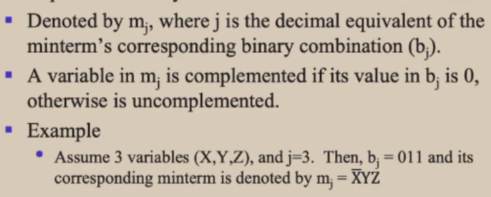（梗来源：系统1）
-
最大项(maxterm):所有逻辑变量在各个表达式中都出现且只出现一次，再析取
- Each maxterm is false for exactly one assignment.
- 性质:
- \(M_1∧M_2∧···∧M_n = False\)
- \(\forall i,j, M_i \vee M_j = True\)
- 类似的，这里是1对应的位置取反，0对应的位置不变，最后析取即可得到\(M_j\)
 （梗来源：系统1）
（梗来源：系统1）
Propositional Functions¶
- The statement \(P(x)\) is the value of the Propositional Function \(P\) at \(x\).
- e.g. P(x)表示\(x>0\), 则\(P(1)\)为\(T\)，\(P(-1)\)为\(F\), \(P(10) \rightarrow P(-1)\)为\(T\)
Quantifiers¶
\(\forall x P(x)\): for all x in the domain, P(x) is true.
\(\exists x P(x)\): there exists an x in the domain such that P(x) is true.
- If \(P(x)\) denotes the statement \(x>0\) and the domain \(U\) is all integers, then \(\forall x P(x)\) is false, but \(\exists x P(x)\) is true.
- Given the domain as \(\{x_1, x_2, x_3, \cdots, x_n\}\)
- \(\forall x P(x) = P(x_1) \wedge P(x_2) \wedge P(x_3) \wedge \cdots \wedge P(x_n)\)
- \(\exists x P(x) = P(x_1) \vee P(x_2) \vee P(x_3) \vee \cdots \vee P(x_n)\)
两个量词的优先级高过其他逻辑运算符，如\(\forall x P(x) \rightarrow Q(x)\)表示\(\forall x (P(x) \rightarrow Q(x))\)
\(\neg \forall x P(x) \equiv \exists x \neg P(x)\)
\(\neg \exists x P(x) \equiv \forall x \neg P(x)\)
0-1矩阵¶
对0-1矩阵(只含0,1的矩阵)A,B，有如下定义
矩阵并/交：要求大小一样，得到矩阵的每一元素都是A和B中对应位置元素的并/交
矩阵的Boolean product: \(A \odot B = \{c_{ij}\}\)
- 其中要求A的列数等于B的行数（和矩阵乘法一样）
- 假设\(A_{m \times k} = \{a_{ij}\}，B_{k \times n} = \{b_{ij}\}，则C_{m \times n} = \{c_{ij}\}\)
- \(c_{ij} = (a_{i1} \wedge b_{1j}) \vee (a_{i2} \wedge b_{2j}) \vee \cdots \vee (a_{ik} \wedge b_{kj})\)
Boolean power: \(A^{[k]} = A \odot A \odot \cdots \odot A\)
定义：\(A^{[0]} = E\)
集合论¶
\(X\)和\(Y\)的异或\(X \oplus Y\)是这种元素组成的集合：要么属于\(X\), 要么属于\(Y\)，但不同时属于\(X\)和\(Y\)
算法¶
停机程序(Halting Problem)：判断一个程序是否会停机
- 大O: \(f = O(g)\), 则\(f<kg\) (kg为f上限（最差情况）)
- 大\(\Omega\): \(f = \Omega(g)\), 则\(f>kg\) (kg为f下限（最好情况）)
数论¶
同余¶
\(a \equiv b \pmod{m} \Leftrightarrow m|(a-b) \Leftarrow \exists k \in \mathbb{Z}, a-b=mk\)
(不带括号的mod) \(a \mod b =\) a除以b的余数
于是有
- \(a \equiv b \pmod{m} \Leftrightarrow a \mod m = b \mod m\)
- 若\(a \equiv b \pmod{m}\)，则\(a^k \equiv b^k \pmod{m}\)
线性同余方程¶
\(ax \equiv b \pmod{m}\)
定义 inverse of a modulo m: \(\overline{a} a \equiv 1 \pmod{m}\)，则\(\overline{a}\) is the inverse of a modulo m
- 若\(a\)与\(m\)互质且\(m>1\)，则\(a\)模\(m\)的逆元存在
例(Finding inverses)
- Find an inverse of 7 modulo 234
- \(234 = 33 \times 7 + 3\)
- \(7 = 2 \times 3 + 1\)
- \(1 = 7 - 2 \times 3 = 7 - 2 \times (234 - 33 \times 7) = 67 \times 7 - 2 \times 234\)(这一步要把所有出现过的余数用上一行式子带进去，把1表示为7和234的线性组合)
- 则上一步中7的裴蜀系数\(67\)即为7模234的逆元
- 与此同时所有与67模234同余的数都是7的逆元，如\(67+234k\)
求解方程\(ax \equiv b \pmod{m}\)
- 若\(d = gcd(a,m)\)不整除\(b\)，则无解
- First find an inverse of \(a\) modulo \(m\) (using the Euclidean algorithm)
- 等式两边乘上该逆元，得到\(x \equiv \overline{a}b \pmod{m}\)
例(Solving linear congruences)
- 解\(4x \equiv 5 \pmod{9}\)
- Find inverse of 4 modulo 9:
- \(9 = 2 \times 4 + 1\)
- \(1 = 9 - 2 \times 4\)
- 因此逆元为-2
- Solve the equation:
- \(-2 \times 4x \equiv -2 \times 5 \pmod{9}\)
- \(x \equiv -10 \pmod{9}\)
- Find inverse of 4 modulo 9:
-
中国剩余定理(CRT)：若\(m_1, m_2, \cdots, m_k\)两两互质，则同余方程组\(x \equiv a_1 \pmod{m_1}, x \equiv a_2 \pmod{m_2}, \cdots, x \equiv a_k \pmod{m_k}\)有唯一解
例
- Solve the system of congruences:
- \(x \equiv 1 \pmod{5}\)
- \(x \equiv 2 \pmod{6}\)
- \(x \equiv 3 \pmod{7}\)
- 首先有\(x = 5k+1\)
- 则\(5k+1 = 2 \pmod{6}\)
- 两边加4，\(5k+5 = 0 \pmod{6}\)
- 于是\(k = -1 \pmod{6} = 6j-1\)
- 代入\(x = 5(6j-1)+1 = 30j-4 = 3 \pmod{7}\)
- 则\(30j = 0 \pmod{7}\), \(j = 7r\)
- 代入得\(x = 30(7r)-4 = 210r-4\)
- 即\(x \equiv -4 \pmod{210}\)
- Solve the system of congruences:
-
费马小定理：若\(p\)为素数，\(a\)与\(p\)互质，则\(a^{p-1} \equiv 1 \pmod{p}\)
- 更进一步，\(\forall a \in \mathbb{Z}, a^p \equiv a \pmod{p}\)
- 伪素数：若一个合数\(n\)满足\(a^{n-1} \equiv 1 \pmod{n}\)，则称\(n\)为伪素数
进制转换¶
- 十进制转n进制：除n取余数，商再除以n，直到商为0，然后逆序排列余数
- n进制转十进制：\(a_na_{n-1} \cdots a_1a_0 = a_n \times n^n + a_{n-1} \times n^{n-1} + \cdots + a_1 \times n + a_0\)
- 八进制转二进制：将每一位八进制数转化为三位的二进制数，然后拼接就行
- 如: \(3_8 = 011_2\),\((276)_8 = (010 \space 111 \space 110)_2\)
- 十六进制转二进制：将每一位十六进制数转化为四位的二进制数，然后拼接就行
- 如: \(A_{16} = 1010_2\),\((A7F)_{16} = (1010 \space 0111 \space 1111)_2\)
- 二进制转八进制：从右起三位三位分段，最左端不足三位在左边补0，接着拼接对应的八进制数
- 如: \((1001111111)_2 = (001 \space 001 \space 111 \space 111)_2 = (1177)_8\)
- 二进制转十六进制：与上面类似，不过要分段为4位
- 如: \((10101110100)_2 = (0101 \space 0111 \space 0100)_2 = (574)_{16}\)
GCD(最大公约数)¶

\(ab = gcd(a,b) \times lcm(a,b)\)
辗转相除法：\(gcd(a,b) = gcd(b,a \mod b)\)
例
- Find the gcd of 252 and 105
- \(252 = 2 \times 105 + 42\)
- \(105 = 2 \times 42 + 21\)
- \(42 = 2 \times 21 + 0\)
- So, gcd(252, 105) = 21
计数方法¶
鸽巢原理¶
- 如果n个物品放入m个盒子，且\(n>m\)，则至少有一个盒子中至少有两个物品
- Generalized Pigeonhole Principle: 如果n个物品放入k个盒子，至少有一个盒子中至少有\(\lceil \frac{n}{k} \rceil\)个物品
排列组合¶
- 排列(permutation): 从n个元素中取r个元素，有\(P(n,r) = \frac{n!}{(n-r)!}\)种排列
- 组合(combination): 从n个元素中取r个元素，有\(C(n,r) = \frac{n!}{r!(n-r)!}\)种组合
Pascal's Identity: \(C(n,k) = C(n-1,k-1) + C(n-1,k)\)
find the next greater permutation of a string
- Find the greatest index i such that s[i] < s[i+1]. If no such index exists, the permutation is the last permutation.
- Find the greatest index j > i such that s[j] > s[i]. Such a j must exist, since i+1 is such an index.
- Swap s[i] with s[j].
- Reverse the order of all of the elements after index i (not including i) till the last element.
https://stackoverflow.com/questions/1622532/algorithm-to-find-next-greater-permutation-of-a-given-string/
https://math.stackexchange.com/questions/4421688/what-is-the-next-permutation-of-1342
find the next greater r-permutation
给定的原集合和r-permutation从小到大排列，从r-permutation的尾部开始向前找，找到第一个与原集合对应位置数不等的位置，把位置上的数加1，后面每个位置的数依次加一。
如：给定集合{1,2,3,4,5,6,7,8,9,10}，7-permutation为{1,2,3,4,6,9,10}，从后往前对应，10=10, 9=9, 6!=8，因此6+1得7，填入原位置，后面跟上8, 9即得{1,2,3,4,7,8,9}。
(Credit to Hehe & Way2Hungry)
Advanced Counting Techniques¶
特征根法求解递推序列¶
（类似高阶线性齐次常微分方程）
一阶齐次¶
\(a_n = c_1 a_{n-1} + \cdots + c_k a_{n-k}\)
- 求解特征方程

- 单根\(r_1, r_2, \cdots, r_k\)，则通解中含有\(\alpha_1 r_1^n + \cdots + \alpha_k r_k^n\), \(\alpha_1, \cdots, \alpha_k\)由初始条件决定(任意常数)
- k重根\(r\)，则通解中含有\(\alpha_1 r^n + \alpha_2 n r^n + \cdots + \alpha_k n^{k-1} r^n\), \(\alpha_1, \cdots, \alpha_k\)由初始条件决定(任意常数)
一阶非齐次¶
\(a_n = c_1 a_{n-1} + \cdots + c_k a_{n-k} + f(n)\)
- 求解齐次版本的特征方程，求出齐次通解，再求出（猜出）一个特解，通解就是齐次通解加上特解
- 特解的形式与\(f(n)\)有关，如下是两种特别的
生成函数¶
\({a_0, a_1, a_2, \cdots}\)的生成函数为\(f(x) = a_0 + a_1x + a_2x^2 + \cdots = \sum_{i=0}^{\infty} a_ix^i\)
\({a_0, a_1, a_2, \cdots , a_n}\)的生成函数为\(f(x) = a_0 + a_1x + a_2x^2 + \cdots + a_nx^n\) (记\(a_{n+1} = a_{n+2} = \cdots = 0\))
常见生成函数

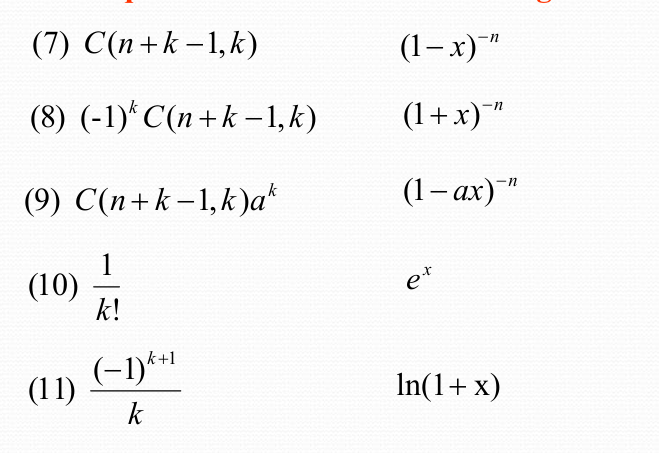
利用生成函数解决问题

Inclusion-Exclusion Principle¶
\(|A_1 \cup A_2 \cup \cdots \cup A_n| = \sum_{i=1}^{n} |A_i| - \sum_{1 \le i < j \le n} |A_i \cap A_j| + \sum_{1 \le i < j < k \le n} |A_i \cap A_j \cap A_k| - \cdots + (-1)^{n-1} |A_1 \cap A_2 \cap \cdots \cap A_n|\)
常用：k=2, 3
- \(|A \cup B| = |A| + |B| - |A \cap B|\)
- \(|A \cup B \cup C| = |A| + |B| + |C| - |A \cap B| - |A \cap C| - |B \cap C| + |A \cap B \cap C|\)
Relations¶
二元关系¶
集合A上有\(2^{|A|^2}\)个二元关系
一道逆天小测/作业


- Reflexive: \(\forall a \in A, (a,a) \in R\)
- e.g. \(R_1 = \{(a, b)|a \le b\}\), \(R_2 = \{(a, b)|a = b\}\)
- Symmetric: \(\forall a, b \in A, (a, b) \in R \rightarrow (b, a) \in R\)
- e.g. \(R_1 = \{(a, b)|a + b \le 3\}\), \(R_2 = \{(a, b)|a = b\}\)
- Antisymmetric: \(\forall a, b \in A, (a, b) \in R \wedge (b, a) \in R \rightarrow a = b\)
- e.g. \(R_1 = \{(a, b)|a \le b\}\), \(R_2 = \{(a, b)|a = b\}\)
- Transitive: \(\forall a, b, c \in A, (a, b) \in R \wedge (b, c) \in R \rightarrow (a, c) \in R\)
- e.g. \(R_1 = \{(a, b)|a \le b\}\), \(R_2 = \{(a, b)|a = b\}\)
- \(R\)是传递的当且仅当\(R^n \subseteq R\)
关系的复合：\(R \circ S = \{(a, c)|\exists b \in A, (a, b) \in R \wedge (b, c) \in S\}\)，类似复合函数，可将第一个分量看作自变量，第二个分量看作因变量
例
- \(R = \{(1, 2), (2, 3), (3, 4)\}, S = \{(2, 3), (3, 4), (4, 5), (3,8)\}\)
- \(S \circ R = \{(1, 3), (2, 4), (3, 5), (2, 8)\}\)（就是找R的第二个分量和S的第一个分量相等的元素再拼接）
关系的表达¶
- 关系矩阵：\(R = \{(a, b)|a \in A, b \in B\}\)，\(R\)的关系矩阵是一个\(|A| \times |B|\)的矩阵，\(r_{ij} = 1\)表示\((a_i, b_j) \in R\)，\(r_{ij} = 0\)表示\((a_i, b_j) \notin R\)
- \(R\)是自反的当且仅当对角线上的元素都是1
- \(R\)是对称的当且仅当\(r_{ij} = r_{ji}\)
- \(R\)是反对称的当且仅当当\(i \ne j\)时\(r_{ij} = 0\)或\(r_{ji} = 0\)
- \(R_2 \circ R_1\)的关系矩阵是\(M_1 \odot M_2\), \(odot\)为矩阵的Boolean product
- 关系取并/交，矩阵对应位置取并/交；关系取反，矩阵取反
- 关系图：有向图\(R\)中顶点\(a_i\)到\(a_j\)有一条边当且仅当\((a_i, a_j) \in R\)
- \(R\)是自反的当且仅当每个顶点有一条边指向自己
- \(R\)是对称的当且仅当若\(a_i\)到\(a_j\)有一条边，则\(a_j\)到\(a_i\)也有一条边
- \(R\)是反对称的当且仅当若\(a_i \ne a_j\)且\(a_i\)到\(a_j\)有一条边，则\(a_j\)到\(a_i\)没有边（所有边单向）
- \(R\)是传递的当且仅当若\(a_i\)到\(a_j\)和\(a_j\)到\(a_k\)有边，则\(a_i\)到\(a_k\)有边
定义关系的逆：\(R^{-1} = \{(b, a)|(a, b) \in R\}\)
求逆与逆的性质

性质：\((a,b) \in R^n\)当且仅当存在一条长度为\(n\)的路径从\(a\)到\(b\)
闭包Closure¶
关系\(R\)关于某个性质的闭包：指的是向该关系中添加最小元组后使其满足该性质的一个新关系。
很绕，来个例子：某个关系图关于自反性的闭包就是给每个顶点都加上个自环形成的新图。/ 某个关系矩阵关于自反性的闭包就是对角线上的元素都变成1。
- 自反闭包：\(r(R) = R \cup \{(a, a)|a \in A\}\)
- 对称闭包：\(s(R) = R \cup R^{-1}\)
- 传递闭包
- 先定义连通关系Connectivity Relation: \(R^* = R \cup R^2 \cup R^3 \cup \cdots\)，其元素\((a,b)\)满足在\(R\)中有一条路径从\(a\)到\(b\)（就是把上面那个性质的长度从确定的n推广为所有正整数）
- 有\(t(R) = R^*\)
- 引理：记\(M_R\)为\(R\)的关系矩阵，\(M_{R^*} = M_R \vee M_{R^2} \vee M_{R^3} \vee M_{R^n}\)
- Warshell算法求传递闭包：记\(R\)的矩阵为M
- 从对角线上第一个元素开始，对每个对角线上的元素，将其所在的行加到该元素所在列上为1元素所在的行，最终得到\(M_{R^*}\)
等价类¶
等价关系：自反传递对称
设\(R\)是定义在集合\(A\)上的等价关系。与\(A\)中的一个元素\(a\)有这种关系的所有元素的集合叫做a的等价类，记作\([a]_R\).
- 若\(aRb\)，则\(b \in [a]_R\)
- 若\(R\)为等价关系，以下性质等价：
- \(aRb\)
- \([a]_R = [b]_R\)
- \([a]_R \cap [b]_R \ne \emptyset\)
有\(\bigcup_{a \in A} [a]_R = A\)
Partition of a set: 一个集合的集合，元素是互不相交的子集，且并起来等于原集合，记为\(pr(A)\)
- 集合\(A\)在关系\(R\)下的Partition: 画出关系图，图中每个连通分量里的顶点构成\(A\)的Partition
偏序¶
- 偏序：关系\(R\)是偏序的当且仅当\(R\)是自反、反对称、传递的，表示为弯一点的\(\le\)
- 可比性Comparability：在一个偏序集中，若\(a \preceq b\)或\(b \preceq a\)，则称\(a\)和\(b\)是可比的，e.g. \((\mathbb{Z^+}, \mid)\)中，\(2 \nmid 3\)，\(3 \nmid 2\)，则\(2\)和\(3\)不可比
- 偏序集Partial Order Set(poset): 一个集合和一个偏序关系的组合:\((S, \preceq)\)
- 全序：关系\(R\)是全序的当且仅当\(R\)是偏序且每两个元素都可比
- 良序：关系\(R\)是良序的当且仅当\(R\)是全序且每个非空子集都有最小元素
- 字典序：两个偏序集\((A1, \preceq_1), (A2, \preceq_2)\)的字典序位于\((A1 \times A2, \preceq)\)，其中\((a1, a2) \preceq (b1, b2)\)当且仅当\(a1 \prec_1 b1\)或\(a1 = b1\)且\(a2 \prec_2 b2\)
Hasse图：从关系图中删去表征自反和传递后得到的图，用于表示偏序关系
怎么画：
- 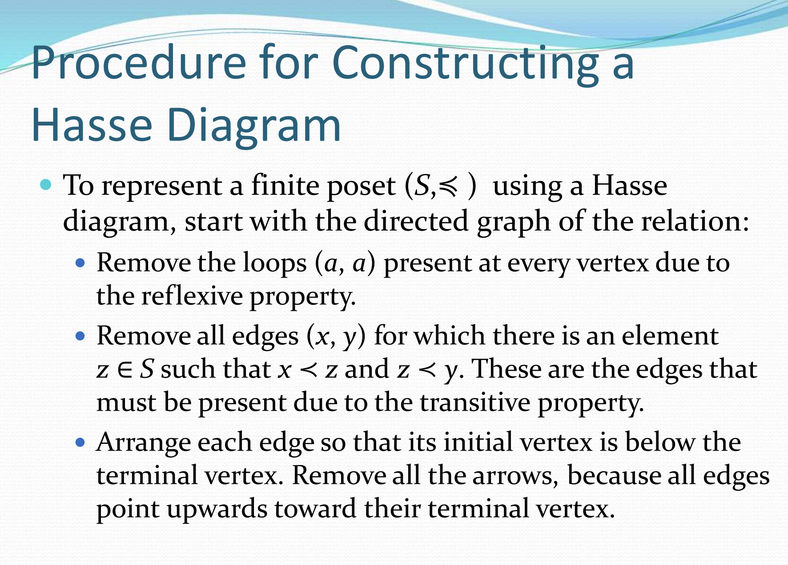
- https://blog.csdn.net/Joe_Morningstar/article/details/106206715
- 极大元MAXIMAL: a是极大元，如果偏序集中不存在b使得\(a \prec b\) （Hasse图中最高的点，形似树叶部分（我不确定是不是Hasse图一定是树））
- 极小元MINIMAL: a是极小元，如果偏序集中不存在b使得\(b \prec a\) （Hasse图中最低的点）
- 最大元GREATEST: a是最大元，如果偏序集中所有的b都有\(b \preceq a\)
- 最小元LEAST: a是最小元，如果偏序集中所有的b都有\(a \preceq b\)

- (least/greatest) lower/upper bound: 就是上下（确）界，把大于小于号改成偏序正反
拓扑排序：Hasse图的方向别删，然后从最小的元开始，每次删除一个只有出度的点，直到删完
图¶
一堆概念：https://oi-wiki.org/graph/concept/
一个节点到自身的自环，若为无向图，贡献两个度；若为有向图，贡献一个出度和一个入度。
- 无向图中，\(2|E| = \sum_{v \in V} deg(v)\)
-
有向图中，\(\sum_{v \in V} deg^-(v) = \sum_{v \in V} deg^+(v) = |E|\)
-
对任意图\(G\)，度数为奇数的顶点数为偶数
- the degree of a vertex in a simple graph is at most 1 less than the number of vertices
Complete graph(\(K_n\)): 每对不同的顶点之间都有且仅有一条边。
- n个顶点的完全图有\(\frac{n(n-1)}{2}\)条边
- 每个顶点的度为\(n-1\)
圈(cycle)(\(C_n\)): \(\{(v_1, \cdots , v_n),(v_1, v_2), (v_2, v_3), \cdots, (v_{n-1}, v_n), (v_n, v_1)\}\)
Wheel(\(W_n\)): \(\{Cycle, v_{new}, (v_{new}, v_1), (v_{new}, v_2), \cdots, (v_{new}, v_n)\}\)
n-Cube(\(Q_n\)): 顶点集为所有n位二进制数（\(Q_n\)有\(2^n\)个顶点），两个顶点之间有边当且仅当它们的二进制表示有且仅有一位不同
Bipartite graph: 顶点集可以分为两个互不相交的子集，使得每条边的两个端点分别属于这两个子集。
- 也就意味着任何一个子集中的顶点互不相连
- 定理：简单图是Bipartite的当且仅当有可能对其顶点进行染色，使得任意一条边的两个端点都颜色不同
Complete bipartite graph: 分成的两个顶点子集中，对一个子集中任何一个顶点，另一个子集中的所有顶点都与之相连。
- 记作\(K_{m,n}\)，其中\(m\)和\(n\)分别为两个子集的顶点数
- 有些完全二分图长得很诡异，如下面这个\(K_{3,3}\)：

正则(Regular)图：每个顶点的度都相同，n-正则图即每个顶点的度为n
- 注意到\(K_{m,n}\)在\(m = n\)时是正则图
Matching¶
- Matching: 一个边集，其中任意两条边都不邻接（没有共同顶点）
- Maximum matching: 边数最多的匹配
- 完全匹配(Complete matching): 对于二分为\((V_1, V_2)\)的二分图，若每个\(V_1\)中的顶点都是匹配\(M\)中的一个顶点，则称\(M\)为完全匹配（从\(V_1\)到\(V_2\)）
Hall's theorem: 二分图\(G = (V ,E)\)二分为\((V_1, V_2)\)有一个从\(V_1\)到\(V_2\)的完全匹配当且仅当对于\(V_1\)的任意子集\(A\)，\(|N(A)| \ge |A|\)，其中\(N(A)\)元素为\(A\)中的顶点的邻居
子图¶
\(G= (V, E) , H= (W, F)\)
- 子图(Subgraph)(\(H \subseteq G\)): \(W \subseteq V, F \subseteq E\)
- Proper subgraph: \(G \ne H, H \subseteq G\)
- 生成图(Spanning subgraph): \(W = V, F \subseteq E\) (端点不变，边集缩小)
- \(G\)关于端点集\(W\)的诱导子图(Induced subgraph): 图\(U = (W, F)\)，其中\(F\)包含的边是\(E\)中连接\(W\)中的两个顶点的边
图的表示¶
- 邻接矩阵
- 对多边图，\(a_{ij}\)表示顶点\(v_i\)到\(v_j\)的边数
- incidence matrix: 行为顶点，列为边，\(a_{ij} = 1\)表示顶点\(v_i\)与边\(e_j\)相连
- 无向图的每一列中1成对出现代表边，单独一个1就是该点处的自环
Isomorphism¶
同构：存在双射使得映射前后顶点的相邻关系不变
- 同构中的不变量（可用于判断非同构）
- 顶点数，边数，对应点的度、路径
- 是否为环、轮、完全图、二分图
- 同构当且仅当有相同长度的环路
路径¶
-
定理：从\(v_i\)到\(v_j\)的长度为\(r\)的路径数量为\(A^r_{ij}\)，其中\(A^r_{ij}\)为邻接矩阵的第\(r\)次幂\((i,j)\)位置上的元素（这里的幂就是普通矩阵乘法）
-
cut vertex(ariculation point): 从图中去掉这个点后，图不再连通（导致更多连通部分的出现）
-
cut edge(bridge): 从图中去掉这条边后，图不再连通
-
强连通：有向图中任意两个顶点\(a,b\)之间都有从\(a\)到\(b\)和从\(b\)到\(a\)的路径
-
弱连通：有向图中去掉所有边的方向后，得到的无向图是连通的
-
connected components: 无向图中的极大连通子图
欧拉回路与欧拉路径
- 欧拉回路(Eulerian circuit): 通过图中每条边一次且仅一次的回路（一笔画，起点终点相同）
- 欧拉路径(Eulerian path): 通过图中每条边一次且仅一次的路径（一笔画）
- 无向连通（多）图有欧拉circuit当且仅当每个顶点的度数都是偶数
- 连通（多）图有非欧拉circuit的欧拉path当且仅当有且仅有两个顶点的度数是奇数，且这两个顶点就是路径的起点和终点
有向图的情况

哈密顿回路与哈密顿路径
- 哈密顿回路(Hamiltonian circuit): 通过图中每个顶点一次且仅一次的回路（除了起始点，也就是终点）
- 哈密顿路径(Hamiltonian path): 通过图中每个顶点一次且仅一次的路径（有点儿不一样的一笔画）
- Dirac's theorem: 若\(G\)是一个简单图，\(|V| \ge 3\)，且\(G\)中每个顶点的度数都至少为\(\frac{|V|}{2}\)，则\(G\)有哈密顿回路
- Ore's theorem: 若\(G\)是一个简单图，\(|V| \ge 3\)，且\(\forall v, u \in V(G)\)且\(v\),\(u\)不相邻，有\(deg(u)+deg(v) \ge |V|\)，则\(G\)有哈密顿回路
必要条件，可用于判断是否有哈密顿回路/路径
- 若G有哈密顿路径，则
- G为连通的
- 最多有两个顶点的度小于2
- 若G有哈密顿回路，则
- G为连通的
- 所有顶点的度数都比1大
- 对任意\(V(G)\)的子集\(S\)，\(G - S\)的连通部分数不超过\(|S|\)
XXX图意思是有XXX回路circuit的图
旅行商问题：求图中最短的哈密顿回路
平面图¶
能在纸上画出来时边不相交的图(planar graph)
- 区域(region): 平面图的edge将平面分割成的部分
-
区域R的度定义为与R相邻的边数，一条边的两侧如果都暴露在区域中就计两次
-
Euler's formula: 设\(G\)是一个连通的平面简单图，\(V\)为顶点数，\(E\)为边数，\(r\)为区域数，则\(r = E - V + 2\)
- 同时有\(E \le 3V - 6\),且\(G\)有一个度数不超过5的顶点
- 若\(V \ge 3\)并且图中没有长为3的回路，则\(E \le 2V - 4\)
- 可用于判断平面图
- 推论：记平面图中最小的环边数为\(k\)，有\(e \le \frac{(v-2)k}{k-2}\)
KURATOWSKI定理：
- 先定义同胚(Homeomorphic)：两个图\(G\)和\(H\)是同胚的，当它们可以由同一个图通过一系列elementary subdivisions得到。
- Elementary subdivision: 包括细分（在边上新增顶点）和简化（移除度数为2的顶点）
- 定理：一个图是非平面图当且仅当它包含一个与\(K_5\)或\(K_{3,3}\)同胚的子图
涂色问题¶
地图可以表示成一个图(dual graph)，地图上每个区域对应一个顶点，若两个区域有共同边界，则对应的两个顶点之间有一条边
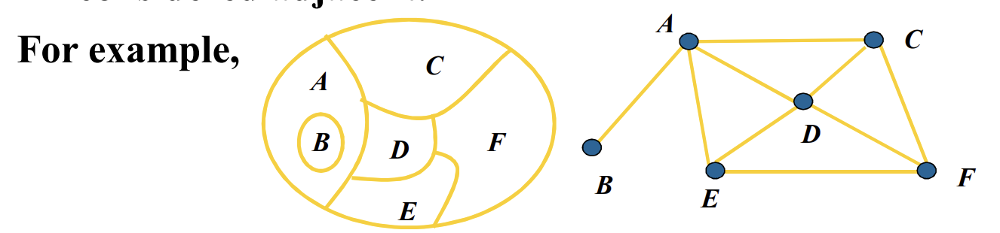
\(x(G)\): 图\(G\)的色数（chromatic number），即最少需要多少种颜色才能使得图中任意两个相邻的顶点颜色不同
- 四色定理：任何平面图的色数不超过4
一些常见图的色数：\(x(C_n) = \begin{cases} 2 & n \text{ is even} \\ 3 & n \text{ is odd} \end{cases}\), \(x(K_n) = n\), \(x(连通二分图) = 2\)
- 可以先观察图中有没有子图是这些类型的，如果有那原图的色数必然大于等于它的色数
树¶
树是没有简单回路的连通无向图 \(n\)个顶点的树有\(n-1\)条边
- internal vertex: 有子节点的顶点
- 有i个内点的满m叉树有\(n = mi + 1\)个顶点和\(l = (m-1)i + 1\)个叶子
- Balanced Binary Tree: 每个节点的左右子树高度差不超过1
- 高度为h，叶子数为l的m叉树满足\(h \ge \log_m l\)，等号成立仅当树是满且平衡的
- 树都是bipartite的，端点分成两个子集，一个是奇数层，一个集合是偶数层
根节点的height为0
树的应用¶
Prefix code: 每个字符对应一个二进制码，且没有一个字符的码是另一个字符码的前缀
- 如: e: 0, a: 100, b: 10, c: 110, d: 111
- 构建这种树：internal vertex的左子边记为0，右子边记为1，叶子节点标注为从根节点到此叶子的路径组成的二进制码
Huffman coding: 最小化字符的平均码长
- 构建这种树：每次选取频率最小的两个节点合并，频率大的作为左子树，频率小的作为右子树，根节点的频率为两个子节点的频率之和：


- Average number of bits: 节点深度乘上自身频率的和，注意根为0层
生成树¶
\(G\)的生成树：\(G\)的一个子图，是一个树，且包含\(G\)的所有顶点
- 简单图是连通的\(\Leftrightarrow\)它有生成树
DFS：从一个顶点开始，沿着一条边走到底（没有可走的边了），再回溯到有可走边的顶点，走另一条边，直到所有顶点都走过
BFS：从一个顶点开始，先访问所有与它相邻的顶点（LEVEL 1），再对每一个LEVEL 1的顶点，重复此操作，直到所有顶点都访问过
最小生成树¶
找到一张有权图的生成树，使得所有边的权值之和最小
Prim: 令\(T\)含图中最短权边，从1到n-2，添加与\(T\)中的顶点相连的最短权边（不成回路），如果最短边成环，就找倒数第二短的，以此类推，直到所有顶点都在\(T\)中
Kruskal: 按权值从小到大排序边，依次加入，如果加入的边不成环就加入，否则不加入
绝版史课来了
约 2020 个字 8 张图片 预计阅读时间 6 分钟
任课教师：苏中根
成绩组成
- 点名+作业：20%
- 小测：20%
- 期末：60%
几何概型¶
样本空间\(\Omega\)含有不可数个基本事件的结果，每个事件的概率为0。同时\(\Omega\)是\(R^n\)的可测区域，事件\(A\)是\(\Omega\)的可测子集。
\(P(A)= \frac{m(A)}{m(\Omega)}\)，其中\(m(A)\)是\(A\)的测度。
Buffon 投针
- 一根长度为\(l\)的针，投在一张画满间距为\(d\)的平行线的平面上（\(l<d\)）。求针与线相交的概率。
- 以针的任意位置为样本点，该点可由针的中点与最接近的线的距离\(x\)，以及针的倾斜角\(\theta\)确定。
- 样本空间\(\Omega = \{(x,\theta)|0\leq x\leq \frac{d}{2},0\leq \theta \leq \pi\}\)为一矩形。
- 其中，与线相交的事件\(A = \{(x,\theta)|x\leq \frac{l}{2}\sin\theta\}\)。
- 则\(P(A) = \frac{2l}{\pi d}\)。（面积比）
概率空间¶
\(P(\bigcup_{i=1}^{m}A_i) \leq \sum_{i=1}^{m}P(A_i)\)
\(LHS = \sum_{i=1}^{m}P(A_i) - \sum_{i \ne j}^{m}P(A_i \cap A_j)+\cdots + (-1)^{m-1}P(\bigcap_{i=1}^{m}A_i)\)
全概率公式
若\(B_1,B_2,\cdots,B_n\)是样本空间\(\Omega\)的一个划分，即\(B_i \cap B_j = \emptyset\)，\(\bigcup_{i=1}^{n}B_i = \Omega\)，则对任意事件\(A\)有\(P(A) = \sum_{i=1}^{n}P(A|B_i)P(B_i)\)。
贝叶斯公式
若\(B_1,B_2,\cdots,B_n\)是样本空间\(\Omega\)的一个划分，即\(B_i \cap B_j = \emptyset\)，\(\bigcup_{i=1}^{n}B_i = \Omega\)，则对任意事件\(A\)有\(P(B_i|A) = \frac{P(A|B_i)P(B_i)}{\sum_{j=1}^{n}P(A|B_j)P(B_j)}\)。
随机变量¶
离散型随机变量¶
- Possion分布
- \(X\)取非负整数，\(P(X=k) = \frac{\lambda^k}{k!}e^{-\lambda}\)
- 用于描述单位时间内某事件发生的次数
- 下面两种分布都在成功概率为\(p\)的伯努利试验中使用
- 二项分布
- \(X\)取非负整数，\(P(X=k) = C_n^k p^k(1-p)^{n-k}\)
- 用于描述\(n\)次独立重复试验中成功次数的分布
- 几何分布
- \(X\)取非负整数，\(P(X=k) = p(1-p)^{k-1}\)
- 用于描述\(n\)次伯努利试验中第\(k\)次才得到第一次成功的概率
连续型随机变量¶
分布列\(X\)的概率密度函数\(f(x)\)满足：
- \(f(x) \geq 0\)
- \(\int_{-\infty}^{+\infty}f(x)dx = 1\)
- \(P(X \in B) = \int_{B}f(x)dx\)
分布函数
称 \(F(x) = P(\xi \leq x)\) 为随机变量\(\xi(\omega)\)的分布函数。
- 具有以下性质：
- \(P(a \leq \xi \leq b) = F(b) - F(a)\)
- 单调不减性：\(a \leq b \Rightarrow F(a) \leq F(b)\)
- \(F(-\infty) = 0, F(+\infty) = 1\)
- 右连续性：\(\lim_{x \to x_0^+}F(x) = F(x_0)\)
- \(F(x)=\int_{-\infty}^{x}f(t)dt\)
example
- 在三角形\(ABC\)内任取一点\(P\)，\(P\)到\(BC\)的距离为\(\xi\)，求\(\xi\)的分布函数。
- 设BC边上高为\(h\)，\(x \leq 0\)时，\(F(x) = 0\)；\(0 \leq x \leq h\)时，在三角形内作平行于BC的DE，其与BC的距离为\(x\)，则\(\{\xi \leq x\}\)表示点P落在梯形DECB内。

- \(P(\xi \leq x) = \frac{S_{DECB}}{S_{ABC}} = 1 - (1-\frac{x}{h})^2\)
- \(x \geq h\)时，\(F(x) = 1\)
- 则\(F(x) = \begin{cases} 0 & x \leq 0 \\ 1-(1-\frac{x}{h})^2 & 0 \leq x \leq h \\ 1 & x \geq h \end{cases}\)
- 常见的连续型随机变量：
- 均匀分布
- 向\((a,b)\)区间内随机取点
- 每一点是等可能的，即\(P(X = x) = 0\)
- 则\(P(X \in A) = \frac{m(A)}{m(\Omega)} = \frac{|A|}{b-a}\)
- 指数分布
- \(X\)取非负实数，\(f(x) = \begin{cases} \lambda e^{-\lambda x} & x \geq 0 \\ 0 & x < 0 \end{cases}\)
- \(P(X \gt x) = e^{-\lambda x}\)
- 通常用于描述使用寿命等（使用寿命大于x的概率是\(e^{-\lambda x}\)）
- 无记忆性：\(P(X \gt s+t|X \gt s) = P(X \gt t)\)
- 正态分布
- \(X\)取实数，\(f(x) = \frac{1}{\sqrt{2\pi}\sigma}e^{-\frac{(x-\mu)^2}{2\sigma^2}}\)
- 记为\(N(\mu,\sigma^2)\)
- 对标准正态分布，\(\mu = 0, \sigma = 1\)，则\(P(X \leq x) = \Phi(x)\)
- 对于一般的\(\xi\) ~ \(N(\mu,\sigma^2)\)，记\(Z = \frac{\xi - \mu}{\sigma}\)，则\(Z\) ~ \(N(0,1)\), \(P(\xi \leq x) = \Phi(\frac{x-\mu}{\sigma})\)
- 均匀分布
一般随机变量¶
example
\(P(X=0) = \frac{1}{2}\)
\(P(X>x) = \frac{1}{2} e^{-x}, x \geq 0\)
随机向量¶
给定概率空间\((\Omega, \mathcal{F}, P)\)，定义在其上的随机向量\(\xi = (\xi_1,\xi_2,\cdots,\xi_n)\)，其中\(\xi_i\)是定义在\((\Omega, \mathcal{F}, P)\)上的随机变量。
离散型随机向量¶
假定\(X\)取值为\(x_1,x_2,\cdots,x_n\)，\(Y\)取值为\(y_1,y_2,\cdots,y_m\)，则记\(P(X=x_i,Y=y_j) = p_{ij}, i,j = 1,2...\)。
有\(\Sigma p_{ij} = 1\)，\(p_{ij} \geq 0\)。
联合分布¶
\(P(X<x,Y<y) = \Sigma_{i:x_i<x,j:y_j<y}p_{ij}\)
边际分布¶
\(X,Y\)的分布可由\(p_{ij}\)得到。
\(P(X=x_i) = p_{i\cdot} = \Sigma_{j=1}^{\infty}p_{ij}\)，且\(\Sigma p_{i\cdot} = 1\)
类似可得Y
联合分布与边际分布
- 联合分布：\(P(X=x_i,Y=y_j) = p_{ij}\)
- 边际分布：\(P(X=x_i) = p_{i\cdot}\)
- 边际分布由联合分布唯一确定，但边际分布不能唯一决定联合分布。
卷积公式
假设\(X,Y\)相互独立，密度函数分别为\(f_X(x),f_Y(y)\)，则\(Z = X+Y\)的密度函数为\(f_Z(z) = \int_{-\infty}^{+\infty}f_X(x)f_Y(z-x)dx\)
e.g.
条件分布¶
给定\(X=x_i\)的情况下，\(Y\)可取值\(y_1,y_2,\cdots\)
概率为\(P(Y=y_j|X=x_i) = \frac{P(X=x_i,Y=y_j)}{P(X=x_i)} = \frac{p_{ij}}{p_{i\cdot}}\)
条件分布列\(Y|X = x_i ~ \begin{cases} y_1 & y_2 & \cdots \\ \frac{p_{i1}}{p_{i\cdot}} & \frac{p_{i2}}{p_{i\cdot}} & \cdots \end{cases}\)
类似可得\(X|Y = y_j\)
独立性¶
假设\((X,Y)\)是如上所述的独立性随机向量，若\(\forall i,j\)有\(P(X=x_i,Y=y_j) = P(X=x_i)P(Y=y_j)\)，则称\((X,Y)\)是独立的。
连续型随机向量¶
给定概率空间\((\Omega, \mathcal{F}, P)\)，\((X,Y)\)是定义在其上的随机向量，若存在\(p(x,y) \ge 0\)使得\(\int_{-\infty}^{+\infty}\int_{-\infty}^{+\infty}p(x,y)dxdy = 1\)，且对于任何Borel集\(A,B\)有\(P(X \in A, Y \in B) = \int_{A}\int_{B}p(x,y)dxdy\)，则称\((X,Y)\)是连续型随机向量，具有密度函数\(p(x,y)\)。
特别的，对任意\(x,y \in R\)，\(P(X<x,Y<y) = \int_{-\infty}^{x}\int_{-\infty}^{y}p(u,v)dudv\)。
边际分布¶
显然，若\((X,Y)\)是连续型随机向量，则\(X,Y\)也是连续型随机变量，其边际分布为\(p_X(x) = \int_{-\infty}^{+\infty}p(x,y)dy\)，\(p_Y(y) = \int_{-\infty}^{+\infty}p(x,y)dx\)。
同样也有，联合分布唯一决定边际分布，但边际分布不能唯一决定联合分布。
例
- 矩形上的均匀分布
- 假设矩形\((a,b) \times (c,d)\)，如果随机向量\((X,Y)\)具有密度函数\(p(x,y) = \begin{cases} \frac{1}{(b-a)(d-c)} & a \leq x \leq b, c \leq y \leq d \\ 0 & \text{其他} \end{cases}\)，则称\((X,Y)\)在矩形上服从均匀分布。
- 于是有\(P(X<x) = P(X<x,Y<\infty) = \int_{-\infty}^{x}\int_{-\infty}^{+\infty}p(u,v)dudv = \int_{a}^{x}\int_{c}^{d}\frac{1}{(b-a)(d-c)}dudv = \begin{cases} 0 & x \leq a \\ \frac{x-a}{b-a} & a \leq x \leq b \\ 1 & x \geq b \end{cases}\)
- 因此\(X\)是\((a,b)\)上的均匀分布，\(Y\)是\((c,d)\)上的均匀分布。
- 联合正态分布
- 若\((X,Y)\)具有密度函数\(p(x,y) = \frac{1}{2\pi\sigma_1\sigma_2\sqrt{1-\rho^2}}e^{-\frac{1}{2(1-\rho^2)}[\frac{(x-\mu_1)^2}{\sigma_1^2}-2\rho\frac{(x-\mu_1)(y-\mu_2)}{\sigma_1\sigma_2}+\frac{(y-\mu_2)^2}{\sigma_2^2}]}\)，则称\((X,Y)\)服从联合正态分布。\((X,Y)\)~\(N(\mu_1,\mu_2,\sigma_1^2,\sigma_2^2,\rho)\)
- 边际分布：经过计算，\(X\)~\(p_X(x) = \int_{-\infty}^{+\infty}p(x,y)dy = \frac{1}{\sqrt{2\pi}\sigma_1}e^{-\frac{(x-\mu_1)^2}{2\sigma_1^2}}\)，\(Y\)同理。
条件分布¶
随机向量的计算与变换¶
极值随机变量¶
假设\(X_1,X_2,\cdots,X_n\)是随机变量，对\(\omega \in \Omega\)，将\(X_1(\omega),X_2(\omega),\cdots,X_n(\omega)\)进行排序，得到\(X_{(1)}(\omega) \leq X_{(2)}(\omega) \leq \cdots \leq X_{(n)}(\omega)\)，则称\(X_{(1)},X_{(2)},\cdots,X_{(n)}\)是次序随机变量，其中\(X_{(1)}\)称为极小值，\(X_{(n)}\)称为极大值，\(X_{(k)}\)称为第k小值。
极值分布¶

数学期望¶
- 离散型随机变量：\(E(X) = \sum_{i=1}^{\infty}x_i P(X=x_i)\)
- 退化分布：\(E(X) = x_0\)
- 两点分布：\(E(X) = p\)
- 二项分布：\(E(X) = np\)
- Possion分布：\(E(X) = \lambda\)
- 几何分布(\(P(X=k) = p(1-p)^{k-1}\))：\(E(X) = \frac{1}{p}\)
- 连续型随机变量：\(E(X) = \int_{-\infty}^{+\infty}xf(x)dx\)
- 均匀分布：\(E(X) = \frac{a+b}{2}\)
- 指数分布：\(E(X) = \frac{1}{\lambda}\)
- 正态分布：\(E(X) = 0\)
数学期望性质¶
- \(E(aX+b) = aE(X)+b\)
- \(E(X+Y) = E(X) + E(Y)\)
- 对于独立的\(X,Y\)，其乘积期望等于期望乘积：\(E(XY) = E(X)E(Y)\)
方差¶
\(Var(X) = E((X-E(X))^2)\)（定义）\(= E(X^2) - E^2 (X)\)（平方的期望-期望的平方）
- 由此可以得到一种计算“平方的期望”的方法：\(E(X^2) = E^2 (X) + Var(X)\)
例题
- 证明：如果\(X,Y\)独立，那么\(Var(XY) = Var(X)Var(Y) + Var(X)E^2 (Y) + Var(Y)E^2 (X)\)
- \(Var(XY) = E(X^2 Y^2) - E^2(XY)\)
- \(= E(X^2)E(Y^2)\)（由于\(X,Y\)独立，其平方也独立）\(- E^2(X)E^2(Y)\)
- \(= (E^2 (X) + Var(X))(E^2 (Y) + Var(Y)) - E^2(X)E^2(Y)\)
- \(= Var(X)Var(Y) + Var(X)E^2 (Y) + Var(Y)E^2 (X)\)
- 二项分布：\(Var(X) = np(1-p)\)
- 几何分布：\(Var(X) = \frac{1-p}{p^2}\)
- Possion分布：\(Var(X) = \lambda\)
- 均匀分布：\(Var(X) = \frac{(b-a)^2}{12}\)
- 指数分布：\(Var(X) = \frac{1}{\lambda^2}\)
- 正态分布：\(Var(X) = \sigma^2\)
方差性质¶
- \(Var(aX+b) = a^2Var(X)\)
- \(Var(X+Y) = Var(X) + Var(Y) + 2Cov(X,Y)\)，其中\(Cov(X,Y) = E(XY) - E(X)E(Y)\)（协方差）
- 对于独立的\(X,Y\)，\(Cov(X,Y) = 0\)，于是和的方差等于方差之和\(Var(X+Y) = Var(X) + Var(Y)\)
Chebyshev不等式
对任意随机变量\(X\)，有\(P(|X-E(X)| \gt \varepsilon) \leq \frac{Var(X)}{\varepsilon^2}\)
协方差和相关系数¶
都是对于两个随机变量的概念
- 定义均值向量：\(\vec{\mu} = (EX, EY)\)
- 协方差：\(Cov(X,Y) = E[(X-E(X))(Y-E(Y))] = E(XY) - E(X)E(Y)\)
- \(Cov(X,X) = Var(X)\)
- \(Cov(X,c) = 0\)
- \(Cov(aX,bY) = abCov(X,Y)\)
- \(Cov(X_1 + X_2, Y) = Cov(X_1,Y) + Cov(X_2,Y)\)
- 相关系数：\(\rho_{XY} = \frac{Cov(X,Y)}{\sqrt{Var(X)Var(Y)}}\)
- 性质：
柯西施瓦兹不等式
\(E[|X-E(X)||Y-E(Y)|] \leq \sqrt{E^2 [X-E(X)] E^2 [Y-E(Y)]}\)
协方差矩阵¶
若\(X,Y\)的方差存在，定义\(\Sigma = \begin{pmatrix}Var(X) \space Cov(X,Y)\\Cov(X,Y) \space Var(Y)\end{pmatrix}\)为协方差矩阵
我们知道如果\(X,Y\)独立，那么\(Cov(X,Y) = 0\)，但是反过来就不成立了，那么如果反过来，\(Cov(X,Y) = 0\)，称\(X,Y\)不相关。
全期望公式¶
\(E(E(X|Y)) = E(X)\)，以及\(E(E(Y|X)) = E(Y)\)
证明：
矩¶
- \(k\)阶原点矩：\(E(X^k)\)
- \(k\)阶中心矩：\(E((X-E(X))^k)\)
常见的一些分布的矩：
- \(X\) ~ \(N(0,\sigma^2): E(x^{2k}) = (2k-1)!!\sigma^{2k}\)
- \(X\) ~ \(P(\lambda): E(X^k) = \lambda^k\)
特征函数¶
- 定义：\(\varphi(t) = E(e^{itX}) = E \cos(tX) + iE \sin(tX), t \in R\)
- 若\(X\) ~ \(F(x)\)，则\(\varphi(t) = \int_{-\infty}^{+\infty}e^{itx}f(x)dx = \int_{-\infty}^{+\infty}e^{itx}dF(x)\)
性质¶
- \(\varphi(0) = 1\)
- \(|\varphi(t)| \leq 1 = \varphi(0)\)
- \(\varphi(-t) = \overline{\varphi(t)}\)
- \(\varphi(t)\)在\(R\)上一致连续
令\(\varphi_X(t) = E(e^{itX})\)，则有：\(E(e^{it(aX+c)}) = e^{itc}\varphi_X(at)\)
若\(X,Y\)独立，则\(Z = X+Y\)的特征函数为\(\varphi_Z(t) = \varphi_X(t)\varphi_Y(t)\)，可推广到N个独立随机变量。
概率极限理论¶
以下三个定理（伯努利大数定律，中心极限定理，Poisson 极限定理）只涉及伯努利试验：
伯努利大数定律¶
大数律
若\(S_n\) ~ \(B(n,p)\)，则\(n \to \infty\)时，\(\frac{S_n}{n} \to p\)。
伯努利大数律：\(P(\omega: |\frac{S_n(\omega)}{n} - p| \gt \varepsilon) \to 0, n \to \infty\)
- 这解释了频率接近概率的现象
- 引入了依概率收敛的概念
拉普拉斯中心极限定理¶
Poisson 极限定理¶
全家丝光的课
普通物理学Ⅱ（H）¶
约 4750 个字 48 张图片 预计阅读时间 14 分钟
任课教师：王业伍
Ref & Credit
不好，有神：https://www.kailqq.cc/NOTE/Physics/
配享太庙：https://savia7582.github.io/Exterior/Physics/2/
一天入门半学期：https://space.bilibili.com/522385498/upload/video/
电磁学¶
电偶极子：一对间距为\(d\)，电荷量为\(q\)的异号电荷构成的偶极子。
电偶极矩：\(\overrightarrow{p}=q \overrightarrow{d}\)。
Flux 通量¶

立体角：\(d\overrightarrow{A} = r^2 d\Omega\)，等号左侧为面积微元，也等于 \(dA \cdot \overrightarrow{n}\)，其中 \(\overrightarrow{n}\) 为单位法向量。

Gauss 定理¶
电通量：\(\Phi = \int \overrightarrow{E} \cdot d\overrightarrow{A} = \frac{\Sigma q}{\varepsilon_0}\)，其中\(q\)为闭合曲面内包含的电荷量。
例
- 无限长均匀带电线（\(L \gt \gt R\)的圆柱），线密度为\(\lambda\)，求距其轴心\(r\)处的电场强度。

选取r处长为\(h\)的圆柱面，此时所有面积微元处的电场强度大小是一样的，则有\(E \cdot 2\pi rh = \frac{\lambda h}{\varepsilon_0}\)，所以\(E = \frac{\lambda}{2\pi \varepsilon_0 r}\)。 - 无限大带电平面

- 均匀带电球壳

Gauss 定理和库仑定律求电场强度：

电势¶
半径为R，带电量q的均匀带电球壳（r>R）：\(U(r) = \int_r^{\infty} \frac{kq}{r^2} dr = \frac{kq}{r}\)。
电容¶
半径为\(r\)的孤立球形导体：\(C = \frac{q}{U} = 4\pi \varepsilon_0 r\)。
- 平行板：
- 圆柱形电容：

- 球状电容：

并联总电容：\(C = \Sigma C_i\)。串联总电容：\(\frac{1}{C} = \Sigma \frac{1}{C_i}\)。
例

极化¶
介电体处于电场中时，会在内部产生极化电荷，从而减小电场强度。极化电场\(E_p = \frac{E}{k_e}\)。\(k_e\)称为相对介电常数（Relative dielectric constant）。
有了介电体后，电容变为\(C = k_e \varepsilon_0 \frac{S}{d}\)。

考虑真空中两个由无数电偶极子组成的平行圆板，如上图所示，定义极化强度矢量\(\overrightarrow{P} = \frac{\Sigma \overrightarrow{p}}{V}\)（\(\overrightarrow{p}\)为电偶极矩，\(\Delta V\) 为囊括的体积），则有\(\overrightarrow{P} = \varepsilon_0 \chi_e \overrightarrow{E}\)，其中\(\chi_e\)为电极化率。
\(\chi_e + 1 = k_e\)
有\(\iint P dA = \Sigma_{out} q' = -\Sigma_{in} q'\)
极化强度矢量与闭合曲面的内积积分等于该曲面表面的束缚电荷，等于该曲面内部电荷的相反数(外面有多少正的，里面就有多少负的)
这里的\(q'\)是极化电荷！所以这个不是高斯定理。
同时有面电荷密度\(\sigma' = P \cdot n\)，等于极化强度矢量在法向上的分量；由夹角来控制正负。
介电质中的 Gauss 定理¶
（照抄
考虑一个正电荷\(q_0\)放在电介质中，其周围会产生极化电荷\(q'\)
由正宗的高斯定理得到 \(\iint E d A = \frac{q_0 + q'}{\epsilon_0}\)
而由极化电荷和强度矢量的性质有 \(\iint P d A = -q'\)
代入得到\(\epsilon_0 \iint E dA = q_0 - \iint P d A\)
尝试表示\(q_0\)：\(q_0 = \iint (\epsilon_0 E + P) dA\)
于是定义\(D = \epsilon_0 E + P\)为电位移矢量
这说明电位移矢量与闭合曲面内积面积分等于该曲面内的自由电荷（非极化）之和
例

求这个具有两层介电体的电容以及表面的电荷密度。
电容器中的能量¶
考虑一个平行板电容器，其电容为 \(C\)，电压为 \(V\) ，则其具有的能量相当于从负极板不断将电荷移动到正极板，这样的过程中克服电场力所做的功
\(W = \int_0^Q V dq = \frac{1}{2} C V^2\)
考虑到平行板电容 \(C = \frac{\epsilon_0 A}{d}\)，\(V = ED\)
得到能量\(E = W = \frac{1}{2} \epsilon_0 E^2 A d\)
注意到\(Ad\)是夹在两板之间的体积，定义能量密度\(\mu = \frac{1}{2} \epsilon_0 E^2\)
电流¶
电流定义：\(I = \frac{dq}{dt}\)。
电流密度：\(\overrightarrow{j} = \frac{dI}{dS} \overrightarrow{n}\)。
得到电荷守恒：

若 \(\frac{dq}{dt} = 0\)，则上式为0.
平均而言，电流中电子以漂移速度\(v_d\)运动，\(I = neSv_d\)，则有\(\overrightarrow{j} = - ne\overrightarrow{v_d}\)。
欧姆定律¶
这里的\(\sigma\)为电导率，\(\rho\)为电阻率，\(\sigma = \frac{1}{\rho}\)。
基尔霍夫定律¶
- Junction定律：\(i = \Sigma i_k\)。
- Loop定律：在闭合回路中， \(\Sigma U_k = \Sigma \epsilon_k + \Sigma i R_k = 0\)。
例

注意这里i1 i2 i3的方向是自己假设的，然后运用基尔霍夫定律进行计算就行了。
RC电路¶
结合了电容和电阻的电路。
- 充电时：

- 放电时：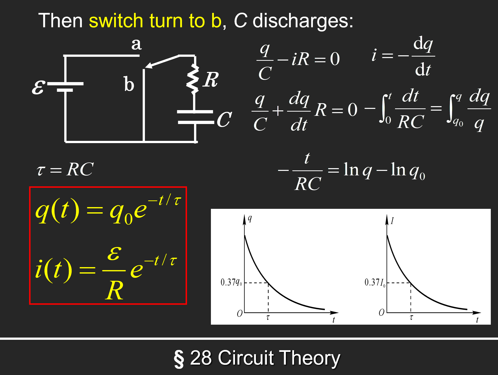
磁场¶
高中就不会的霍尔效应：

磁场是非保守场，所以没有势能的概念。
Biot-Savart 定律¶
定义电流元\(Id\overrightarrow{l}\)，则该电流元产生的磁场大小为\(d\overrightarrow{B} = \frac{\mu_0}{4\pi} \frac{Id\overrightarrow{l} \times \overrightarrow{r}}{r^3}\)。
则有\(\overrightarrow{B} = \int d\overrightarrow{B} = \frac{\mu_0}{4\pi} \int \frac{Id\overrightarrow{l} \times \overrightarrow{r}}{r^3}\)。
\(\mu_0 = 4\pi \times 10^{-7} \mathrm{T \cdot m/A}\)。
只适用于恒定电流。
- 真空直导线：\(B = \frac{\mu_0 I}{2\pi d}\)，其中\(d\)为导线到点的距离。

- 电流圆环：\(B = \frac{\mu_0 I R^2}{2(R^2 + z^2)^{3/2}}\)。

https://blog.csdn.net/weixin_45864618/article/details/106672456
安培环路定理¶
\(\oint \overrightarrow{B} \cdot d\overrightarrow{l} = \mu_0 I\)。
在恒定电流的磁场中，磁感应强度沿任何闭合路径一周的线积分（即环路积分），等于闭合路径内所包围并穿过的电流的代数和的\(\mu_0\)倍
https://zhuanlan.zhihu.com/p/142376701
Gauss 定理（磁场Ver.）¶
\(\iint B dA = 0\)，\(A\)为真空中一个闭合曲面。
磁偶极矩¶
\(\overrightarrow{P_m} = I \overrightarrow{S}\)，其中\(I\)为电流，\(\overrightarrow{S}\)平面单回路围起来的面积矢量。
法拉第电磁感应定律¶
定义磁通量：\(\Phi = \int \overrightarrow{B} \cdot d\overrightarrow{A}\)。
感生电动势：\(\varepsilon = -\frac{d\Phi}{dt} = -\iint_S \frac{d\overrightarrow{B}}{dt} \cdot d\overrightarrow{A}\)。
动生电动势：\(\varepsilon = \int_a^b (\overrightarrow{v} \times \overrightarrow{B}) \cdot d\overrightarrow{l}\)。
发电机：\(\Phi = BLS \cos \omega t\)，\(\varepsilon = \omega BLS \sin \omega t\)。
电感¶
自感¶
一圈匝数为\(N\)，横截面\(S\)的线圈通过电流\(i\)时会感应出磁场\(B\)，则有自感系数\(L = \frac{N\Phi}{i}\)，单位为亨利（1 Henry = 1 T \(\cdot\) m\(^2\)/A）。
由电磁感应得到自感电动势：\(\varepsilon = - \frac{d N \Phi}{dt} = -L \frac{di}{dt}\)。
例：通电螺线管

例：矩形螺绕环

Lr回路
开关连接电源：注意利用回路中总电势变化为0即可，这里定义了自感时间常数\(\tau = L/R\)

开关不连电源：同理，这次类似放电

功率：\(dW=−εdq=−εidt=Lidi\)
存储能量：\(E = \frac{1}{2} L i^2\)

互感¶
考虑两个共轴（轴长为\(l\)）的，匝数分别为\(N_1, N_2\)的，横截面半径都为\(r\)的线圈，通过线圈1的电流\(i_1\)产生的磁通量为\(\mu_0 \frac{N_1}{l} i_1 \pi r^2\)
则通过线圈2的磁通量为\(\Phi_{21} = \mu_0 \frac{N_1 N_2}{l} i_1 \pi r^2\)
线圈2产生的互感电动势为\(\varepsilon_{21} = -\frac{d\Phi_{21}}{dt} = -\mu_0 \frac{N_1 N_2}{l} \pi r^2 \frac{di_1}{dt}\)
将此式写成\(\varepsilon_{21} = -M_{21} \frac{di_1}{dt}\)，其中\(M_{21} = \mu_0 \frac{N_1 N_2}{l} \pi r^2\)为互感系数。
同理，可得线圈1产生的互感电动势为\(\varepsilon_{12} = -M_{12} \frac{di_2}{dt}\)，其中\(M_{12} = \mu_0 \frac{N_1 N_2}{l} \pi r^2\)。
也就是说，\(M_{12} = M_{21} = M\)，也就是互感系数。
磁化¶
通电螺线管中插入铁磁材料，可以使得自感系数增大：\(L = k_m L_0\)，其中\(k_m\)被称为磁导率。
原本杂乱无章的分子磁矩会受到磁场的作用，使得磁矩方向趋于一致，朝向磁场方向，在宏观上相当于在材料外围产生了一个电流\(i'\)
定义磁化强度矢量\(M\)为单位体积内磁矩矢量和\(M = \frac{\Sigma \mu}{V}\)
类比电学中的极化，其满足\(\int M dl = \Sigma_{in} i'\)
则由环路定理 \(\int B dl = \mu_0 \Sigma (i_0 + i') = \mu_0 \Sigma i_0 + \mu_0 \int M dl\)
也就是\(\int (\frac{B}{\mu_0} - M) dl = \Sigma i_0\)
定义磁场强度：\(H = \frac{B}{\mu_0} - M\)
麦克斯韦方程组¶

光学¶
notation
- \(p\)：原物体大小
- \(I\)：像大小
- \(c\)：光速
- \(\lambda'\)：波长
- \(\theta_i\)：入射角
- \(\theta_r\)：反射角
- \(u\)：物距
- \(v\)：像距
- \(r\)：（球面镜）半径
Intro: 光的本质¶
- 波动性：\(d \sin \theta = m \lambda\)，此时相长干涉。
-
粒子性：\(\frac{c'}{c} = \frac{p'}{p} = \frac{\lambda'}{\lambda} = \frac{\sin \theta_i}{\sin \theta_r}\)（折射时）
-
反射定律：\(\theta_i = \theta_r\)
- 折射定律：\(n_1 \sin \theta_i = n_2 \sin \theta_r\)
- 折射率：\(n = \frac{c}{v}\)
全内反射：\(n_1 \sin \theta_c = n_2 \sin 90^\circ\)，得到\(\sin \theta_c = \frac{n_2}{n_1}\)，其中\(\theta_c\)为临界角，此时折射光线全部消失，只有反射光线。
费马原理¶
简单理解为 \(\frac{dt}{dx} = 0\)
- 反射定律的证明：

- 折射定律证明：

球面镜反射等式

- 通过焦点的光线反射后平行于平面
- 平行于平面的光线反射后通过焦点
- 通过曲率中心（Center of Curvature）的光线原路反射回去
- 射向平面与球面镜交点的光线满足反射定律
球面镜折射等式

例子
一个物体在物距为\(u\)处沿轴向一个球面反射镜以\(V_0\)速度运动，球面镜半径为\(R\)，求像的运动速度\(V\)。
- 由\(\frac{1}{u} + \frac{1}{v} = \frac{1}{f} = \frac{2}{R}\)，得到\(v = \frac{1}{\frac{2}{R} - \frac{1}{u}}\)（注意这个是小写\(v\)是像距！）
- 于是有\(V = \frac{dv}{dt} = \frac{dv}{du} \frac{du}{dt} = - \frac{\frac{1}{u^2}}{(\frac{2}{R} - \frac{1}{u})^2} \frac{du}{dt} = -(\frac{R}{2u-R})^{2} V_0\)
惠更斯原理¶
- 波前（Wavefront）：相位相同的点的集合
- 子波（Wavelet）：波前上的每一点都可以看作是一个次波源，次波源发出的波称为子波
可以解释点光源以球面发散，从而解释了光的衍射
prequisite
如果光波在介质中传播时，波长为\(\lambda\)，传播距离为\(r\)，则其相位等于\(\phi = 2 \pi \frac{r}{\lambda}\)
介质中波长 \(\lambda_n = \frac{\lambda}{n}\)，期中\(n\)为介质折射率，于是上式变为\(\phi = 2 \pi \frac{nr}{\lambda}\)
定义光程（Optical Path）：\(L = nr\)，则有\(\phi = \frac{2\pi}{\lambda} L\) （于是\(r\)为光在介质中传播的几何距离）
则光程差（Optical Path Difference）：\(\Delta L = n_1 r_1 - n_2 r_2\)，则有相位差 \(\Delta \phi = \frac{2\pi}{\lambda} \Delta L\)
干涉（Interference）¶
两束光 \(I_1, I_2\) 相遇，总强度为\(I = I_1 + I_2 + 2 <E_1 \cdot E_2>\)
- 干涉时，\(2 <E_1 \cdot E_2> = 0\)
- 不干涉时，\(2 <E_1 \cdot E_2> \neq 0\)
这三种情况下不干涉：
于是得到相干条件：
- 频率相同
- 振动方向相同
- 相位差恒定
双缝干涉
note：光强与振幅的平方成正比

杨式双缝干涉中的常用公式：

（这是什么？我打算直接默写）\(I = I_0 \frac{sin^2 \alpha}{\alpha^2} cos^2 \beta\)，其中\(\alpha = \frac{\pi a \sin \theta}{\lambda}, \beta = \frac{\pi d \sin \theta}{\lambda}\)
这里第 \(n\) 级明纹就代 \(k = n\)，第 \(n\) 级暗纹就代 \(k = n - 1\)（只有这里要取 \(k = n - 1\)，其他所有涉及 \(k\) 的地方都是 \(k = n\)）
例1

半波损失¶
Credit to https://zhuanlan.zhihu.com/p/550675894
- \(\delta = \delta_0 + \frac{\lambda}{2}\)，原光程加上半波损失
- \(\Delta \phi = \frac{2\pi}{\lambda} \Delta \delta = \pi\)
- 当光从光疏到光密质，正入射及掠入射时反射光均有半波损。
- 当光从光密到光疏质，正入射时反射光无半波损（掠入射时发生全反射） 。
薄膜干涉¶

经过一系列推导，①②两束光的光程差 \(\delta' = 2 n_2 d \cos \gamma + (\frac{\lambda}{2})\)
考虑半波损失后，根据 \(n_1, n_2,n_3\) 的相对大小，对①②光的光程选择加不加 \(\frac{\lambda}{2}\)（\(n_1 > n_2 > n_3\) 或者 \(n_1 < n_2 < n_3\) 的时候，光程差不加半波损失；\(n_1 > n_2 < n_3\) 或者 \(n_1 < n_2 > n_3\) 的时候，光程差加半波损失）
这里的波长指的是真空中波长，如果要用介质中波长要换算：\(\lambda = n \lambda_n\)
等厚干涉¶
公式和薄膜干涉是一样的，考虑 \(n > 1\) 的劈尖，劈棱处（最薄的地方）的光程差为 \(\delta = 2 n d \cos \gamma + \frac{\lambda}{2}\)，这里 \(d = 0\)，由于近似垂直入射所以 \(\cos \gamma = 1\)，所以 \(\delta = \frac{\lambda}{2}\)，是半波长奇数倍，因此劈尖处是暗纹。
- 第 \(k\) 级暗纹处的厚度
- 对于第 \(k\) 级暗纹，其厚度记为 \(d_k\)，则 \(\delta = 2 n d_k + \frac{\lambda}{2} = (2k + 1) \frac{\lambda}{2}\)，解得 \(d_k = \frac{k \lambda}{2n}\)
- 相邻暗纹的厚度差
- \(\Delta d = d_{k+1} - d_k = \frac{\lambda}{2n}\)
- 相邻条纹间距（在劈尖上表面）
- \(L = \frac{\Delta d}{\sin \theta} = \frac{\lambda}{2 n \sin \theta} = \frac{\lambda}{2 n \theta}\)
- 由此得到 \(\theta = \frac{\lambda}{2 n L}\)
- 劈尖上表面移动（或旋转）时，\(d_k\) 的大小不变
牛顿环¶
依旧利用 \(\delta = 2 n d + \frac{\lambda}{2} = 明暗纹公式\) 推导，过程见：https://www.kailqq.cc/NOTE/Physics/light/?h=%E7%89%9B%E9%A1%BF#_22
- 第 \(k\) 级明/暗环处的半径
- 记圆凸镜半径为 \(R\)
- 暗环：\(r_k = \sqrt{\frac{k \lambda R}{n_2}}\)，\(n_2\) 为圆凸镜和底下长方题之间的介质折射率，一般是空气，取 \(n_2 = 1\)
- 明环：\(r_k = \sqrt{\frac{(k - \frac{1}{2}) \lambda R}{n_2}}\)
衍射（Diffraction）¶
夫琅和费衍射¶
这里采用菲涅尔半波带法判断得到的是明纹还是暗纹
- 两个波源的光程差：\(\delta = a \sin \theta\)，可分为偶数个半波带时为暗纹，奇数个半波带时为明纹
- 和干涉是反过来的！因此中央是明纹（Bright fringe），其宽度为 \(\frac{2 \lambda f}{a}\)，\(f\) 为透镜到右侧屏幕的距离（一般就是焦距）
- 第 \(k\) 级暗纹距离中央的距离为 \(x_k = k \frac{\lambda f}{a}\)（\(\delta = a \sin \theta = a \tan \theta = a \frac{x_k}{f} = k \lambda\)）

圆孔衍射
- 第一级暗纹衍射角 \(\theta_1 = 1.22 \frac{\lambda}{D}\)，\(D\)为圆孔直径
- 于是第一级暗纹距中央：\(x = f \theta_1 = 1.22 f \frac{\lambda0}{D}\)
光栅¶
- 光栅常数：\(d = a + b\)，\(a\) 为光栅上的透光缝宽度，\(b\) 为光栅上的不透光缝宽度
- 光栅的每个缝形成各自的单缝衍射
- 缝与缝之间形成多缝干涉
- 相邻两缝的光程差：\(\delta = (a+b) \sin \theta\)
- 明纹条件：\(\delta = k \lambda\)
- 暗纹条件（暗纹由各缝射出的衍射光因干涉相消形成）
- \(Nd \sin \theta = k' \lambda\)，\(k'\)不为\(N\)的整数倍
缺级
- 由于衍射影响，在该出现明纹的地方不再出现明纹
- 在干涉导致的明纹处：\((a+b) \sin \phi = k \lambda\)
- 在衍射导致的暗纹(min)处：\(a \sin \phi = k' \lambda\)
- 联立得到 \(k = \frac{a+b}{a} k'\)，此时缺级
Dispersion: \(D = \frac{\Delta \theta}{\Delta \lambda} = \frac{k}{d \cos \theta}\)
分辨本领（在某级恰好能分辨的两条谱线的平均波长\(\lambda\)与其波长差\(\Delta \lambda\)的比值）：\(R = \frac{\lambda}{\Delta \lambda} = kN\)（此时波长差是最小的！）
光强：\(I = I_0 \frac{sin^2 \alpha}{\alpha^2} \frac{\sin^2 N \beta}{\sin^2 \beta}\)，这里依旧是\(\alpha = \frac{\pi a \sin \theta}{\lambda}, \beta = \frac{\pi d \sin \theta}{\lambda}\)
- 于是此时可以由这个推出明暗纹公式

Width of the maximum: \(\delta \theta = \frac{\lambda}{Nd \cos \theta}\)
晶体衍射 Brag 公式
\(2d \sin \theta = nλ\)
其中d是晶格常数，θ是入射角，
偏振(Polarization)¶
马吕斯定律：\(I = I_0 \cos^2 \theta\)，电矢量 \(E = E_0 \cos \theta\)，其中\(\theta\)为光的偏振角，例如说检偏器和偏振片的夹角
布儒斯特角：入射角和反射角和为\(90^{\circ}\)时，反射光为完全偏振光。（折射光是部分偏振光）
即 \(tan \theta_{入射} = \frac{n_2}{n_1}\)
量子力学¶
黑体辐射¶
- 单色辐出度 Spectral emittance
- 单位时间、单位表面积上发射的波长在\(\lambda\) 到\(λ +d \lambda\)范围内的辐射能为\(dM_λ\) ，则 \(M_{\lambda}(T) = \frac{d M_{\lambda}}{d \lambda}\)（\(T\) 和 \(\lambda\) 的函数）
- 辐射出射度 total intensity
- 单位时间、单位表面积上发射全波长范围内的辐射能
- \(M(T) = \int_0^{\inf} M_{\lambda}(T)d \lambda\)
- Stefan-Boltzmann 定律
- \(M_B(T) = \sigma T^4\)，\(\sigma = 5.67 \times 10^{-8} W/(m^2 K^4)\)
- Wien 位移定律
- \(T \lambda_m = b\)，其中 \(\lambda_m\) 是某温度下单色辐出度最大对应的波长（曲线峰值），\(b = 2.898 \times 10^{-3} m K\)
- 普朗克辐射定律：\(M(\lambda, T) = \frac{2 \pi h c^2}{\lambda^5} \frac{1}{e^{\frac{h \nu}{k T}} - 1}\)
- 两种特殊情况：
- 两种特殊情况：

光电效应¶
- \(p = \frac{h}{\lambda}\), \(E = h \nu, m = \frac{h \nu}{c^2}\)
- 光电效应：光照射到金属表面，金属表面会发射电子
- \(h \nu = E_{km} + A = \frac{1}{2} m v^2 + A\)，其中\(A\)为金属的逸出功
- 即，携带能量为\(h \nu\)的光子，击中金属后转化为电子，没有时间延迟。
- 遏制电压（加遏止电压时光电流为0）：\(U = \frac{E_{km}}{e} = \frac{h \mu - A}{e}\)
- 截止频率：\(h \nu_0 = A\)

康普顿散射¶
推导过程如下
- 光子与电子碰撞后，光子的波长会变长，电子的动能会增加
- 光子：\(E = h \nu\), \(p = \frac{h \nu}{c} = \frac{h}{\lambda}\)
- 电子：\(E = m_{0}c^2\), \(p = mv\)
- 碰撞时，能量守恒：\(h \nu + m_{0}c^2 = mc^2 + hf'\)
- 动量守恒：
- X: \(\frac{h \nu}{c} = \frac{hf'}{c} \cos \phi + mv \cos \theta\)
- Y: \(0 = \frac{h \nu}{c} \sin \phi - mv \sin \theta\)
- 由此可以解出\(\lambda' - \lambda = \frac{h}{m_{0}c}(1 - \cos \phi)\)
- \(\phi\)为光子偏离原方向的散射角，\(\theta\)为电子偏离原方向的散射角
物质波¶
同样有\(E = h \nu\), \(p = \frac{h \nu}{c} = \frac{h}{\lambda}\)
不确定性关系
\(\Delta x \Delta p_x \ge \frac{h}{4 \pi}\)
\(\Delta E \Delta t \ge \frac{h}{4 \pi}\)
波函数和概率密度¶
- 约化普朗克常数：\(\hbar = \frac{h}{2 \pi}\)
\(\Psi (x,t) = \psi_0 e^{i(kx-\omega t)}\)
\(\Psi^* (x,t) = \psi_0^* e^{-i(kx-\omega t)}\)
\(P(x) = \Psi \Psi^*\)
算符定义
- 动量算符：\(p = -i \hbar \frac{\partial}{\partial x}\)
- 能量算符：\(E = i \hbar \frac{\partial}{\partial t}\)
薛定谔方程
- 一维含时：\(E \Psi = i \hbar \frac{\partial \Psi}{\partial t} = -\frac{\hbar^2}{2m} \frac{\partial^2 \Psi}{\partial x^2} + U \Psi\)，其中\(U\)为势能
- 若势能不随时间变化，则可以化为一维定态：

一维势阱

- $ P(x) = \frac{2}{a} \sin^2 \frac{n \pi}{a} x$

氢原子结构¶
- 能量量子化：\(E_n = \frac{E_1}{n^2} = - \frac{1}{n} \frac{me^4}{8 \epsilon_0^2 h^2}\)
- 电子跃迁：
- 三个量子数：


小测部分¶
第一次小测¶
第二次小测¶
已知这样的一对非平行极板，求其电容，其中上板横向纵向长度 \(a, b\), 上板最低点与下板距离 \(d\)，最高点与下板距离 \(d+h\) 已知，\(h<<d\)
解
先定义一下上板倾角为 \(\theta\)，下板横向长为 \(x\)。则由于 \(d\) 很小，倾角趋于0，有近似 \(\tan \theta = \sin \theta = \frac{h}{a}\)，那么取下板沿 \(x\) 方向很小的一截 \(dx\)，这一截的下板面积是 \(bdx\)，且近似与上板平行（上板平行重合的这一小截也视作面积是 \(bdx\)，则由平行极板电容公式 \(C = \frac{\epsilon_0 A}{d}\)，得到\(dC=\frac{\epsilon_0 bdx}{d+\tan \theta x}\)
直接对 \(x\) 从0到 \(a\) 积分，
得到 \(C = \int_0^a \frac{\epsilon_0 bdx}{d+\frac{h}{a} x} = \frac {\epsilon_0 a b}{h} \cdot \ln \frac{h+d}{d}\)
文艺学
语言学基础¶
约 1935 个字 2 张图片 预计阅读时间 6 分钟
任课教师：彭利贞
Link
https://socralin.github.io/2025/02/12/Basic-Linguistics-Learning/ https://file.cc98.org/v4-upload/d/2025/0116/eui35e2j.pdf
语言学是什么
- 语音
- 词汇
- 语法
- 语义
- 语用
- 文字（副产品）
什么是语言？
- 结构：语言是一种符号系统
- 符号：用 A 表示 B，A 和 B 没有必然的联系（皮尔斯：图像、索引、象征）
- 功能：语言是人类最重要的交际工具，是人类最重要的认知、思维工具
- 基本符号：词
- 发音+语义=符号<->现实中的对象
- 语言=词＋规则
口语是语言的原始形式，书面语是在口语基础上产生并发展的。
- 语言的主要功能
- 人类最重要的交际工具
- 人类认知思维的工具
- 传承文化的工具
- 语言的基本属性
- 任意性
- 语言符号的两个方面——声音和意义之间没有必然联系，音-义联系是由社会成员共同约定的
- 像似性（iconicity）：部分符号意义的理解有迹可循，例如布谷（布谷鸟的叫声）
- 线（条）性
- 组成成分（一般为词）按照线性排列的方式表达含义
- 口头上表现为只能以时间先后为序说出来
- 书面上表现为只能以单向线状排列记录文字
- 系统性
- 符号处于一定关系之中
- 语言符号可以分解
- 篇章-句群-句子-短语-词-词素
- 层次性：底层是音位，上层是音义结合的符号序列（语素-词-句子）
- 社会性
- 文化性
- 不同的民族/地域对声音表达的意义有不同的理解
- 对同一个对象，不同的民族/地域有不同的认识
- 对某一个现象或主观认识，不同语言里的认识属性基本相同，但可能在附属色彩上有所不同
- 表现在语言单位的组合手段上
- 任意性

语音¶
语音：由人发出的、表达语义的声音。语言的各种意义，语言符号的各级单位都必须通过具体的声音形式来表达。
- 物理属性：
- 音高
- 音强
- 普通话里的轻声就与音强有关：哥哥、姐姐
- 音长
- 音质
- 声音的特色，取决于声波振动的形式。
- 影响音色的主要因素：
- 发音体：如，不同的乐器；人的发音器官的不同部位：声带：元音/浊辅音 | 清辅音；口音|鼻音
- 发音方法：如，同一种乐器不同演奏方法：爆破音 –磨擦音；送气|不送气
- 生理属性
- 肺、喉头、声带等
- 社会属性
- 首先，语音是人类利用声音来传递复杂的意义的，这与其他动物简单地利用鸣叫来表示意图有根本的不同。
- 其次，人类语音在声音形式与意义的关联上没有必然性，而是随着民族或地域的不同而不同。
- 最后，不同民族语言里，语音单位的形式和数量及其作用是不完全相同的。
音素¶
音素是从音质角度划分出来的最小的语音单位（感觉就是音标）
元音 vs 辅音，你知道吗？
| 阻碍 | 声带振动 | 发音器官紧张 | 气流 | |
|---|---|---|---|---|
| 元音 | 无 | 振动 | 均衡 | 弱 |
| 辅音 | 有 | 清辅音不振动浊辅音振动（也是区分清浊音的依据） | 局部 | 强 |
元音分析¶
从舌位的高低、舌头的伸缩、唇形的圆展三个方面进行分析。
基本元音（作为元音的标准与定位）：
辅音分析¶
从发音的部位、发音方法（（1）成阻与除阻（2）声带是否振动（3）是否送气）两个方面进行分析。
发音部位
- 双唇：[p]、[p']、[m]
- 唇齿：[f]、[v]
- 齿间：[θ]、[ð]
- 舌尖：后[tʂ]、[tʂ']、[ʂ] ，前[ts]、[ts'] [s]，中[t]、[l]
- 舌面：[tɕ] 、[tɕ']、[ɕ]
- 舌叶：[ʧ]、[ʃ]、[ʒ]
- 舌根：[k]、[k']、[x]
- 小舌：[R]
- 声门：[ʔ]
发音方法
塞音：[p]、[b] 擦音：[s]、[f] 塞擦音：[ts]、[ts']、[s] 鼻音：[m]、[n]、[ŋ] 边音：[l] 颤音：（滚音）[R] 闪音：[ɾ]
清辅音 vs 浊辅音
音位¶
先补充一下音位和音素的区分：
音素是从音质角度划分出来的最小的语音单位，再小的声音都可以继续分成两个听起来不同的音素，
Reference
对任何一个语音组合的片段进行切分，到最后都会得到一些不能再往更小的单位切分的最小的语音单位，切分出来的这种最小单位，只要从音色上看有区别，就是两个不同的音素。从这种意义上来说，一种语言系统的音素是无穷的。
只要听起来不同就算不同的音素，这让人想起了什么？拼音，对于韵母可以说是不同声调对应不同音素；于是我们规定这四个音素 \(\{\bar{a}, \acute{a}, \check{a}, \grave{a}\}\) 成为一个更大的单位——音位。
音位
把不能相互区别意义的音素归为一类，就得到了音位。
语流音变¶
处于具体语音流中的音素以及声调等语音要素，会受到邻近音的影响
- 同化：
- 两个相邻的音，后一个受前一个的影响，变得与前一个音相同或相近，称顺同化。（dogs [dɔgz], looked [lʊ:kt] 中末尾的清/浊音变为与前面相邻浊/清音一样的读音）
- 后面的音同化前面的音：两个相邻的音，前一个受后一个的影响，变得与后一个音相同或相近，称逆同化。
- 干嘛？gan ma? -> gam ma？
- be in poor health -> be [im] poor health
- 异化：原本相近/相同的发音变为不同
- 例如三声接二声，三声读作二声：选举（xuán jǔ）
- 弱化：如普通话的轻声
- 脱落：语流中有些音在连读时因缩并等原因而不再发音或消失的现象。
- 最简单如英文的缩写：I am -> I'm
- 豆腐（dou f），这里 u 被省略了
- 增音：在多个音节或由多个音节构成的复杂语流连续发音时，有时候会增加原本没有的音素。这种现象多发生于句子中。
- 英语中的连读
- 你快看啊（a）->你快看 n 啊（读作 na）
音位判断的原则
如何判断两个音素是否是同一个音位？
- 对立原则：两个音素出现在不同的语音环境中，相互替换后会出现意义上的差别，则它们是不同的音位。
- 互补原则：某个音素出现时，与之发音相近的音素便不会出现，因此其形成互补关系，是同一个音位。
- 如前a：[ɑ]，后a：[a]，以及 [A]，[ε]，它们是同一个音位。
- 相似原则：
- 并不是所有互补的音素都是同一个音位，例如 [m] 和 [n]，很明显语音不同。
音位的区别特征¶
将音位区别开的发音特征；根据上述的元辅音分析判断。
音位的变体
同属于一个音位的不同音素，称为音位的变体。
- 条件变体：在特定的语音环境中出现的变体，称为条件变体。
- 例如：英语中清辅音的浊化
- 自由变体
音节¶
听觉上最容易分辨出来的自然的语音结构单位，是音位和音位组合形成的最小的语音结构单位。
汉语中，一个汉字通常代表一个音节。
- xiang：x 为声母，i 为韵头，a 为韵腹，ng 为韵尾，后三者统称韵母
- 不是所有音节都有这么多部分
判断音节的方法
词汇¶
Language
CS61A 学习笔记（23Fall）¶
约 676 个字 125 行代码 预计阅读时间 3 分钟
Function Domain & Local/Global Frame¶
- What will the following code fragment print?
Answer
4
Short Circuiting¶
0,None,Falsestand for "False".Anything other than these stand for "True".
Python interprets the expression from left to right:
Ifais "True",a or bis "True" and has value ofa.(bis not considered so it could be anything, even something like1/0)
Ifcis "False",c and dis "False" and has value ofc.Likely,dis whatever.
In other conditions, e.gx or(and) y, both arguments are considered and computed, eventually the value would be that ofy.
Hint
Just remember not <sth>, a >(<) b returns True or False ( Boolean ), other expressions return themselves.
Higher-Order Function¶
A wonderful (but painful) example:
>>> # If Python displays <function...>, type Function, if it errors type Error, if it displays nothing type Nothing
>>> def cake():
... print('beets')
... def pie():
... print('sweets')
... return 'cake'
... return pie
>>> chocolate = cake() #call cake once, but no return value printed, just binded to chocolate
beets
>>> chocolate
Function
>>> chocolate() #call pie once and print the return value
sweets
'cake'
>>> more_chocolate, more_cake = chocolate(), cake #call pie once, no return,just binded to more_chocolate
sweets
>>> more_chocolate #after the binding step above, now more_chocolate is just an argument with value 'cake', so print 'cake'
'cake'
Function Currying¶
Curry : transforming a function that takes multiple arguments into a function that takes a single argument and returns another function that takes the next argument, and so on, until all arguments have been supplied.
Question
Firstly curry2 takes a function f as argument (f takes 2 arguments), returning a fuction g. As for g, it defines h, which returns an output of f, and returns a function h.
Success
mymax equals to g in the definition above, taking 1 argument x to transform into another function h aka max(x), which also takes 1 argument y, thus aka mymax(x)(y)
comparexwith3 returns if x is larger than 3.
Mutation¶
What's going on?
a and b are the same list. Recalling the POINTER concept in C, they are both pointing at the same memory address.
Furthermore we have these:
>>> a == b # "==" operator checks if two variables have the same *value*
True
>>> a is b # "is" operator checks if two variables point to the same *memory address*
True
>>> c = a[:] #c is a new list, occupying a different memory address
>>> a == c
True
>>> a is c
False
A filter question¶
def wrong_filter(condition, lst):
"""Filters lst with condition using mutation.
>>> original_list = [5, -1, 2, 0]
>>> filter(lambda x: x % 2 == 0, original_list)
>>> original_list
[2, 0]
"""
for elem in lst:
if not condition(elem):
lst.remove(elem)
def filter(condition, lst):
"""Filters lst with condition using mutation.
>>> original_list = [5, -1, 2, 0]
>>> filter(lambda x: x % 2 == 0, original_list)
>>> original_list
[2, 0]
"""
for elem in lst[:]:
if not condition(elem):
lst.remove(elem)
Vaguely, Python's 'for' loop is implemented by keeping track of the "index" of a list.
When the list is mutated, the index is not updated, thus the loop may skip some elements.
For example:
>>> original_list = [5, -1, 2, 0]
>>> f = lambda x: x % 2 == 0
>>> wrong_filter(f, original_list)
>>> original_list
[-1, 2, 0]
original_list[0], then original_list[1], and then original_list[2].So at first, considers 5, 5 is rid of. Then considers the "[1]" index, which now represents 2 in the list.
---> -1 is skipped, not checked. In the correct version of filter,
lst[:] creates a new list copy.So when the original list is mutated, the loop still checks the original list copy, which never changes.
Thus every element of every location is checked.
Sequence¶
List (Mutable)¶
A list is a sequence of values. In a list, the values can be of any type and need not be of the same type as each other.
Useful methods & functions on Dive into Python3
Tuple (Immutable)¶
A tuple is an ordered collection of values, similar to a list. However, it is not possible to add, remove, or modify values in a tuple.(Immutable)
Dictionary (Mutable)¶
Another type of collection, called a dictionary, allows us to store and access values that correspond to given keys.
dict.keys() will return a sequence of keys.
dict.values() will return a sequence of values.
dict.items() will return a sequence of key-value tuples.
Object-Oriented Programming¶
My Point of View: A way to synthesize some target-centered segments of a whole program to avoid program and, err, maybe enable objects to be defined easier.
Hard to explain, just try more examples.
Class Attributes: Something communal to all instances of a class, like eat for all Pet instances.
Instance Attributes: Something unique to each instance, like name for each Pet instance.
String Representation¶
__repr__ when invoked on an object, ignores its Instance Attribute, and only calls the Class Attribute __repr__.
Memorization¶
A way to store the results of expensive function calls and return the cached result when the same inputs occur again.
def memo(f):
cache = {}
def memoized(n):
if n not in cache:
cache[n] = f(n)
return cache[n]
return memoized
Linked List¶
class Link:
empty = ()
def __init__(self, first, rest=empty):
assert rest is Link.empty or isinstance(rest, Link)
self.first = first
self.rest = rest
Miscellaneous¶
Some function/operator details¶
minandmax, when there are multiple arguments all have the minimal/maximal value, return the argument which appears first.-
inwhen used within a dictionary, only considers KEYS. -
If class A inherits from class B and a is an instance of A, then
isinstance(a, B)isTrue, buttype(a) == BisFalse.
HDLBits 题解¶
约 35 个字 79 行代码 预计阅读时间 1 分钟
Syntactically-correct code does not necessarily result in a reasonable circuit.
Basics¶
7458 chip¶
module top_module (
input p1a, p1b, p1c, p1d, p1e, p1f,
output p1y,
input p2a, p2b, p2c, p2d,
output p2y );
assign p1y=(p1a&p1b&p1c)|(p1d&p1f&p1e);
assign p2y=(p2a&p2b)|(p2c&p2d);
endmodule
Vectors¶
Vector Part Select¶
module top_module(
input [31:0] in,
output [31:0] out );
wire [7:0] a,b,c,d;
assign {a,b,c,d} = in;
assign out = {d,c,b,a};
endmodule
Replication¶
Modules: Hierarchy¶
Modules¶
module top_module ( input a, input b, output out );
mod_a tmp(.in1(a), .in2(b), .out(out));
endmodule
Module Shift8¶
module top_module (
input clk,
input [7:0] d,
input [1:0] sel,
output [7:0] q
);
logic [7:0] o1,o2,o3;
my_dff8 t1(clk,d,o1);
my_dff8 t2(clk,o1,o2);
my_dff8 t3(clk,o2,o3);
always_comb begin
case(sel)
2'd0: q=d;
2'd1:q=o1;
2'd2:q=o2;
2'd3:q=o3;
endcase
end
endmodule
Procedures¶
Always Blocks(clocked)¶
// synthesis verilog_input_version verilog_2001
module top_module(
input clk,
input a,
input b,
output wire out_assign,
output reg out_always_comb,
output reg out_always_ff );
assign out_assign = a^b;
always out_always_comb = a^b;
always @(posedge clk) out_always_ff = a^b;
endmodule
Circuits¶
Combinational Logic¶
9-1 Mux¶
module top_module(
input [15:0] a, b, c, d, e, f, g, h, i,
input [3:0] sel,
output [15:0] out );
always @(*) begin
case(sel)
4'b0000: out = a;
4'd1: out = b;
4'd2: out = c;
4'd3: out = d;
4'd4: out = e;
4'd5: out = f;
4'd6:out = g;
4'd7: out = h;
4'd8: out = i;
default: out = {16{1'b1}};
endcase
end
endmodule
面向对象程序设计¶
约 1241 个字 147 行代码 2 张图片 预计阅读时间 5 分钟
任课教师：许威威
Lec1¶
c(onstruc)tor: 构造函数，函数名和类名相同
Lec2¶

- 全局变量（Global Variable）：定义在函数外部的变量，使用
extern关键字可以使用其他文件中定义的全局变量- 静态全局变量（Static Global Variable）：只能在当前文件中使用
- 局部变量（Local Variable）：定义在函数内部的变量，只能在函数内部使用
- 静态局部变量（Static Local Variable）：其值在函数调用结束后不会改变，下次调用时仍然可以使用
Pointer¶
创造了一个 string 类型的对象，调用了构造函数
创造了一个指向 string 类型的指针，指向的 string 对象还没有被创建
动态分配内存¶
C++ uses new and delete
返回申请内存的首地址（因此一般赋值给一个指针）（？）。和 malloc 不同的是，new 是创建了一个对象的实例，因此调用了其构造函数（delete 时也调用析构函数）
a = new int [10]; delete [] a; 释放 10 个 int 类型的内存，delete a 只释放一个 int 类型的内存
不同于 free(NULL)，delete 一个空指针是安全的
Reference¶
Ref 定义时必须赋初值，且引用的对象不再改变（即后面如果出现给 r 赋值的操作，实际上是给 c 赋值）
- 不能 Ref Ref
- 不能存在指向 Ref 的指针（
char& *p // illegal）- 可以有引用指针的 Ref（
char* &p // ok）
- 可以有引用指针的 Ref（
- 没有 Ref 数组
const¶
不允许修改
- Compile-time const:
const int a = 10;，在编译时就确定了（是 symbol 的 entry） - Run-time const:
cin >> x; const int a = x;，在运行时才确定，例如接受用户输入
Aggregates
const int a[] = {1, 2, 3}; float f(a[1]); 会报错，因为编译器在编译时不会深究 const 数组内部的东西
Pointers
char * const q = "hello";指针 q 是 const，于是q++会报错，但是*q = 'x'不会char const* q大概率同理（可能因为不同编译器解释不同）
const char* p = "hello";*p是一个 const char，于是*p = 'x'会报错
struct S {
void f() { std::cout << "non-const\n"; }
void f() const { std::cout << "const\n"; }
};
int main() {
S a;
const S b;
a.f(); // non-const
b.f(); // const
const S *ps = &b;
ps->f(); // const
}
// <https://tree.45gfg9.net/lcppthw/construct/#const>
const 出现在函数参数列表后说明这个函数影响 this 的类型，且不会改变任何成员变量
Stash¶
- Typeless container
- 存储相同类型的对象
- 使用类型的大小初始化
Deconstructor¶
当对象 Go out of scope 时，调用析构函数
Initialization vs. assignment
Student::Student(string n) { name = n;}: Assignment(Inside Constructor)Student::Student(string n) : name(n) {}: Initialization(Before Constructor)
Lec3¶
Static¶
已知：当 static 修饰全局变量时，限制该变量的作用域为当前文件；当 static 修饰局部变量时，表示该变量的生命周期为整个程序运行期间。
static 还可以修饰成员变量，静态成员变量/函数由整个 Class 共享，非静态成员变量/函数由每个对象拥有，且静态成员变量必须在类外部被定义一次（类内部的 static <type> <name>; 只是声明）
struct rectangle {
static int count;
double width;
double height;
rectangle(double w, double h) : width {w}, height {h} {
count++;
}
~rectangle() {
this->count--;
}
};
int rectangle::count = 0; // must!
int main() {
rectangle c1 {3, 4};
std::cout << rectangle::count << "\n"; // 1
rectangle c2 {5, 6};
std::cout << c2.count << "\n"; // 2
}
// <https://tree.45gfg9.net/lcppthw/construct/#static>
拷贝构造函数¶
声明长这样：T::T(const T& t);
C++ 会提供一个默认的拷贝构造函数，拷贝对象的每个成员变量（memberwise copy），但是如果成员变量是指针类型，则只会拷贝指针的值（即地址），而不是指针所指向的内容 – Copies each member variable - Good for numbers, objects, arrays – Copies each pointer - Data may become shared!
拷贝函数何时被调用？
- 在对象被 call by value 时，例如被传入函数参数时
- 在被赋值为另一个对象时
T t2; T t1 = t2;
- 在返回对象时，例如
T rtsomething(){T t1("1"); return t1;} T whoami = rtsomething();
namespace¶
命名空间就是“更高级层面的”隔离，包含逻辑上的一组类、函数、变量
用 using namespace \<name> 可以引入命名空间中的所有内容，但是可能导致命名冲突
可以用 nameplace short = WhatALongNameplaceName; 来 alias 一个很长的命名空间
Nameplace Composition
用于合并命名空间，还可以解决命名冲突。
可以在多个文件里给同一个命名空间添加内容
抽象基类¶
抽象基类是一个包含纯虚函数的类，不能被实例化。纯虚函数是没有实现（body）只有 interface 的虚函数，必须在派生类中实现。
运算符重载¶
+ - * / % ^ & | ~ = < > += -= *= /= %= ^= &= |= << >> >>= <<= == != <= >= ! && || ++ -- , ->* -> () [] 可以重载
. .* :: ?: sizeof typeid static_cast dynamic_cast const_cast reinterpret_cast 不行
class Integer {
public:
Integer( int n = 0 ) : i(n) {}
const Integer operator+(const Integer& n) const{
return Integer(i + n.i);
}
...
private:
int i;
};
Integer x(1), y(5), z;
// z = x + y //ok
// z = x + 3 //ok
// z = 3 + x // illegal
const Integer& Integer::operator++() {
*this += 1; // increment
return *this; // fetch
}
// int argument not used so leave unnamed so
// won't get compiler warnings
const Integer Integer::operator++( int ){
Integer old( *this ); // fetch
++(*this); // increment
return old; // return
}
recall const

全局写的有关一个类的运算符重载函数应当被设置为这个类的 friend，因为其要访问类的所有属性
类型转换 ops 的重载
Template¶
模板函数¶
模板类¶
这样定义之后，注意 Rmqc 并不能算是一个类（只是一个模板），而 Rmqc<int> 才是一个（被实例化的）类
可以看出来模板是更高级别的一层抽象，类是模板的实例化，对象又是类的实例
这就解释了在继承时：
// 非模板类继承于模板类，需要实例化模板（确定typename）
template <typename T>
class Base {
...
}
class Derived : public Base<int> {
...
}
// 模板类继承于非模板类，直接继承
class Base {
...
}
template <typename T>
class Derived : public Base {
}
// 模板类继承于模板类，不用实例化模板，但要注明 typename T
template <typename T>
class Base {
...
}
template <typename T>
class Derived : public Base<T> {
...
}
Note
从各个地方薅的一些托福注意事项，感觉帮助不会很大。
也包含大二春学期修读的托福阅读笔记。
参考：fufu的托福学习帖
托福阅读¶
约 172 个字 预计阅读时间不到 1 分钟
Reading¶
通过上下文中带有并列或转折意义的连词推测词义
Cloud nine: extremely happy or satisfied
Listening¶
做笔记相关：¶
地名、人名、文章标题、课程名称、课题研究方向、论文名称。
地名：介绍此地点的特殊要素——及其随时间的变化
人名：Prof.xxx, Doc.xxx, classmate xxx...——与说话人的关系/对其的建议/共同点。
其他：主要听“是什么东西”，即本质是什么（实义名词）
Typst备忘录¶
约 382 个字 70 行代码 6 张图片 预计阅读时间 2 分钟
记录一下用typst写东西时碰到的问题
天下苦LaTeX久矣
引用¶
#import "a": b相当于import b from a
画图¶
注意
最好把canvas或者diagram包在一个figure里，既可以设置多个属性，又方便调整位置
cetz¶
可看manual
#import "@preview/cetz:0.2.2"
#import cetz.draw: * //导入画画用的所有函数
#let graph = x => cetz.canvas(x) //创建画布，canvas接收一个大括号包起来的一堆绘画函数
//必须在画布上画，不然不会显示
#let node = (coord, name, location) => {
circle(coord, name: name, radius: 0.5) //画圆，具体参数看manual
content(coord, name, anchor: location) //写字，字的位置由location决定
}
#let edge = (start, end) => line(start, end)
//缺点就在这，得自己定义函数
//Credit to Xecades
#graph({
node((0, 0), "A", "south")
node((1, 1), "B", "north")
edge("A", "B") //or edge((0, 0), (1, 1))
})
north等四个，north-west等四个
利用set-style设置各个函数的默认参数，比如set-style(line: (stroke:(thickness: 0.1pt)))，这样就不用每次在line里单独设置了。（要在canvas里设置）
fletcher¶
感觉比cetz更好用，把形状综合在了函数的参数里，可看manual
还在为cetz没法画两个点间方向相反的两条边，需要手动定义画点画边函数烦恼吗？#diagram(
let (a,b,c,d) = ((-2,0), (0.6,0), (-2,1.7), (0.6,1.7)),
node(a, "A", stroke: 1pt), //stroke表示边框粗细
node(b, [B], stroke: 1pt),
node(c, [C], stroke: 1pt),
node(d, [D], stroke: 1pt),
edge(b, a, bend: -10deg,"-|>"), //bend表示弯曲程度，正负数弯的方向不同
edge(a, b, bend: -10deg,"-|>"),
edge(a, c, "-|>"),
edge(b, d, "-|>", label: "WOW"), //label:边上的文字
edge(d, a, "-|>"),
node((2,3), [_Point to D_]),
edge(d,[默认上一个node直接指向传入的node], "-|>"),
node((0,3), "Hello", stroke: 1pt),
node-corner-radius: 10pt, //对整个diagram全局设置，不因为放在某个node前后而有所不同
node((0,3.5), "Hello", stroke: 1pt),
edge((4,0), (4,1), (5,1), (3,0), "-|>", `poly`), //一笔能拐好多弯
)
#diagram(
node((0,5), "2nd Diagram", stroke: 1pt),
//另一个diagram中元素不会被其他diagram规定的style影响
//位置会被其他diagram影响
)
排版¶
numblex¶
导入：
在enum类中设置numbering属性可以设置列表的编号格式：

但是如果想让外层不带括号，内层带括号（什么离散普物），就可以用numblex，做到给每一层都单独设置编号格式：

warp-content¶
这也有manual看的，嚯嚯嚯
把图片塞进文字里，图文并茂啊嗯#wrap-content(image("../docs/img/PP.png", fit: "stretch"),columns:(40%,50%))[
My name is Pinkie Pie (Hello!)\
And I am here to say (How ya doin'?)\
I'm gonna make you smile and I will brighten up your day\
It doesn't matter now (What's up?)\
If you are sad or blue (Howdy!)\
'Cause cheering up my friends is just what Pinkie's here to do\
'Cause I love to make you smile, smile, smile\
Yes I do\
It fills my heart with sunshine all the while\
Yes it does
From these happy friends of mine\
I like to see you grin (Awesome!)\
I love to see you beam (Rock on!)\
The corners of your mouth turned up is always Pinkie's dream (Hoof bump!)\
But if you're kind of worried\
And your face has made a frown\
I'll work real hard and do my best to turn that sad frown upside down
]
已知问题：会和
image的weight,height冲突；脱离图片范围后换行会失效（如上图）用
columns:(a%,b%)设置图片和文字的比例
gentle-clues¶
预定义的块：

看Manual！
杂¶
repeat函数返回一个无限重复，顶到页面最右侧的字符串，可以用来做填写处
#let answer = [#box(width: 1fr,repeat("_"))] //用box可以让它不换行
//如果后面还有内容就把内容顶到最右边
You have a vast vast soul \
And I will always, always, always #answer it.

image函数怎么用:
image(
str,
format: autostr,
width: autorelative,
height: autorelative,
alt: nonestr,
fit: str,
) -> content
Table Decoration: https://typst.app/docs/guides/table-guide/
短学期
CTF101¶
约 1793 个字 28 行代码 1 张图片 预计阅读时间 5 分钟
拼搏百天，我要成为安全领域大神！
课程网站 & Useful links
Web¶
Web基础
课程slides: https://cubicy.notion.site/2024-Web-4d50db2d026c4fffb76bfebdc1f9d553
箱神辅学slide: https://slides.tonycrane.cc/PracticalSkillsTutorial/2023-fall-ckc/lec6/#/
MDN Web Docs: https://developer.mozilla.org/zh-CN/docs/Learn/Common_questions/Web_mechanics/How_does_the_Internet_work
基础¶
Web = Client + Server
- Client: 浏览器
- 可视化(HTML/CSS/JS)
- 交互(JS)
- 缓存(Cookie)
- 安全性
- Server: 1 or 多台服务器
- 处理请求
- 前后端、数据库
- 安全性（403 Forbbiden）
数据交换：数据包->路由器->不同IP
Domain Name System: 记录域名映射到的IP地址/其他域名/其他东西
Proxy:
- 正向：假装进入内网
- 反向：代理商穿透内网，佯装内网把数据返回出来
Cookie: 客户端储存用户在服务器上的数据，用于识别用户身份，下次带着cookie就不用再输密码啦
Session: 和cookie差不多，不过是在服务器端临时储存
php¶
我擦，没听懂
SQL¶
我擦，也没听懂
地址栏输入一个url回车后发生了什么（纯抄的）
- DNS解析（域名解析）： 浏览器会首先检查本地缓存中是否有该网址对应的IP地址。 如果没有，它会向DNS服务器发送请求，查询该网址的IP地址。 DNS服务器返回该网址对应的IP地址给浏览器。
- 建立TCP连接： 浏览器使用前面得到的IP地址，通过TCP/IP协议与目标服务器建立连接。 这包括三次握手过程：客户端发送SYN包，服务器返回SYN-ACK包，客户端再发送ACK包确认连接。
- 发送HTTP请求： 建立连接后，浏览器会发送一个HTTP请求到服务器。这个请求包含了请求方法（如GET或POST）、请求的资源路径以及一些头信息（如浏览器类型、可接受的文件类型等）。
- 服务器处理请求并返回响应： 服务器接收到请求后，会处理该请求，查找请求的资源（如HTML文件、图片、视频等）。 服务器会将找到的资源以及一些头信息（如内容类型、内容长度等）打包成HTTP响应，返回给浏览器。
- 浏览器接收响应并渲染页面： 浏览器接收到服务器返回的HTTP响应后，会解析响应的头信息和内容。 如果内容是HTML文件，浏览器会解析HTML并根据其中的指令（如加载CSS文件、执行JavaScript脚本等）进行渲染。 浏览器会逐步构建DOM树和CSSOM树，并根据它们生成渲染树，最后将内容绘制到屏幕上。
- 加载资源： 如果HTML文件中包含了其他资源（如图片、CSS、JavaScript等），浏览器会根据需要发送额外的HTTP请求来加载这些资源。 这些资源加载完成后，浏览器会继续渲染页面，更新显示内容。 整个过程通常在短时间内完成，以确保用户能够快速看到网页内容。
Misc¶
解码工具¶
隐写判断（样板戏轮流上）:- 文件头尾判断：https://www.cnblogs.com/bravexiaoxi/articles/File_Header_Footer.html
- winhex/010editor #查看文件编码
- exiftool FILE #看exif信息
- strings FILE
- binwalk -e FILE
- stegsolve.jar
- foremost FILE
- zsteg -a FILE (png or bmp)
- steghide extract -sf FILE (jpg) -p PASSWORD
- python \lsb.py extract file.png
- stegdetect
md5¶
import hashlib
def md5_encrypt(data):
md5 = hashlib.md5()
md5.update(data.encode('utf-8'))
return md5.hexdigest()
Base家族¶
Zip¶
Zip文件由：压缩源文件数据区，压缩源文件目录区、压缩源文件目录结束标志三部分组成。
- 源文件数据区：504B0304开头，两个字节后的两个字节是压缩方式（全局方式位标记），即
50 4B 03 04 14 00 0? 00，不加密/伪加密时，问号为0，加密时不为0。 - 源文件目录区：504B0102开头，四个字节后的两个字节是标记是否加密，即
50 4B 01 02 3F 00 14 00 0? 00，不加密/伪加密时，问号为0，加密时不为0。 - 源文件目录结束标志：504B0506连带后面18个字节结束本文件
伪加密：如果源文件数据区不加密（全局方式位标记为0），但源文件目录区加密（标记不为0），则解压软件会要密码，还爆破不了。把源目录区的加密标记改为0即可。
有的题会出现压缩包嵌套（一般全是伪加密），这时编码类似于一层一层包着，解压一层就会出现下一层的压缩包，直到最后一层才和flag有关，此时在010editor中找到最内层的压缩文件直接复制粘贴出来就是一个最内层的压缩包。
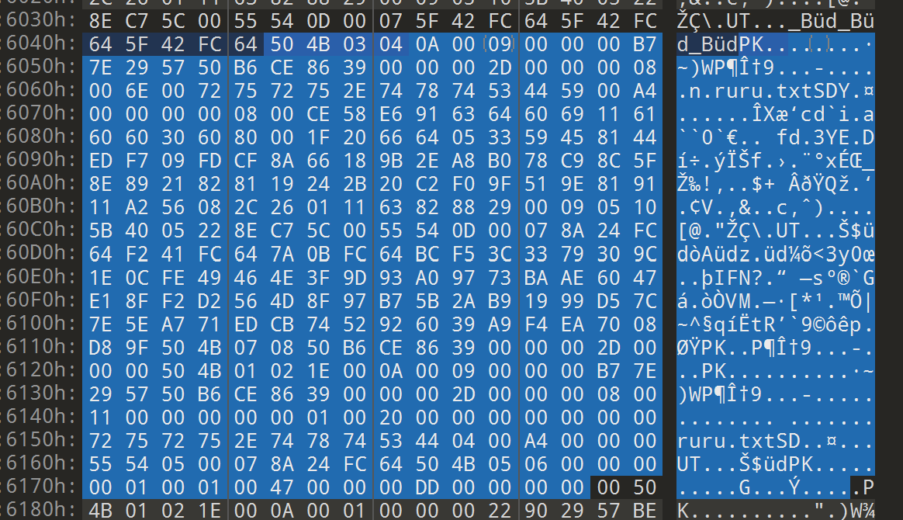
梗来源：ruru
Blockchain¶
听不懂思密达
- 区块链：一种去中心化的数据库，数据以区块的形式存储在多个节点上，每个区块包含了前一个区块的哈希值，形成了一个链式结构。
- 比特币：一种基于区块链技术的加密货币，是第一个去中心化的数字货币。
- 挖矿：通过计算机算力解决数学难题，获得比特币的过程。
- 共识机制：区块链网络中的节点如何达成一致，保证数据的一致性和安全性。
- 智能合约：一种自动执行合约的计算机程序，运行在区块链上，无需第三方信任。
- 以太坊：一种基于区块链技术的智能合约平台，支持自定义代币和去中心化应用。
- 以太坊虚拟机：以太坊网络中的虚拟机，用于执行智能合约。
笑点解析：上面这一串全是Copi帮我补的
交易：EOA（外部账户）和EOA的交易
合约：EOA和合约的交易（类似调用函数）
创建合约：EOA和NULL的交易
Reverse¶
- 编译（汇编）：从源代码到目标文件
- 链接：从目标文件到可执行文件
GDB/GEF¶
i r列出所有寄存器的值i functions列出所有函数c继续直到断点，b 行号b 函数名设置断点p 变量名打印变量值display 变量名每次停下来都显示变量值x /s 地址看看地址处存了什么set $寄存器 = xxx修改寄存器的值，可以修改rip以跳到指定位置
Pwn¶
shellcode: 机器码，执行系统命令 命令注入：
#include <stdio.h>
int main(int argc, char* argv[])
{
char data[64] = {0};
char cmd[64] = {0};
puts("I'm a simple echo server");
scanf("%64s", data);
sprintf(cmd, "echo %s\n", data);
system(cmd);
return 0;
}
python的一些包¶
socket¶
import socket
HOST = "IP Address" # IP address
PORT = PORTNUMBER # Port number
s = socket.socket(socket.AF_INET, socket.SOCK_STREAM) # create socket
s.connect((HOST, PORT)) # connect to server
s.send(MESSAGE) 和 s.recv(MESSAGE) 进行数据传输，返回为bytes类型。
杂项¶
Overviews
记录一些做题时碰到的小技巧/知识
用vim写文件的时候，会自动在当前文件下生成一个.<filename>.swp（存有编辑信息，相当于实时备份），如果有意外退出的情况就不怕没保存了。正常:wq就会把这个临时文件删除。你们vim真是太安全了
再次打开vim时使用vim -r <filename>就可以把临时文件恢复为原文件。
Linux安装：
- .deb:
sudo dpkg -i <package>.deb - .tar.gz:
tar -zxvf <package>.tar.gz->./configure->sudo make->make install
objdump -d <exeutable filename> > a.asm 保存汇编代码
杂
杂¶
随便扔一些东西！
记念¶
约 1813 个字 预计阅读时间 5 分钟
Credit to Yu, recalling my whim to gathering quotes, again.
引言
阅读小说/散文/歌词/诗等这类基于文本的艺术作品，在很久以前，QQ尚有一个叫做随心贴的功能的时候，我很喜欢将其中有点意思的语句记录下来。可惜随心贴作古时，哑然无言，怅然若失，那些珠玑字句也都消弭于脑海。今个儿才想起来我还在万维网上有个这块地皮，遂新开一界面，留备新的记录。
使用分割线以区分来自不同创作者的内容。
有一次，父亲告诉我，年轻时他很喜欢晚春的黄昏，感觉世界正向无尽之处延展，野火烧亮每一道深渊。他说的想必是更年轻的时候——真正的年轻，你不会在意现实中暗藏的任何棱角，受伤也不过是诸多体验的一种。
三三《晚春》
好像在日常坐标轴里，这间房子是诸多虚数之一。
三三《即兴戏剧》
那天，在他们饱受爱欲围剿的时刻，他恍惚地望见她身后的黄浦江。对岸灯火流溢，一场通电的焰火巡展，一片虚张声势的后现代森林。水面吸满光影，看上去微微发烫。
但一个人在考量永恒之时，便是她失望的开始，只是当时她还不明白。
三三《开罗紫玫瑰》
“不管怎么说，蒋不凡，如果有那玩意的话，我们是不是得下地狱？大帅，张学良都在地狱里等着我们呐。”
蒋不凡不说话啦，瞪着老虎厅里的什么东西，或者什么东西也没瞪。半晌之后他说：“你看那老虎多威风，让蒋夫人也买一个，摆家里。”
“我问你呐。”
“我不信这个，我没有信仰，我就信人死灯灭。”
“如果没灭呢，就是换了一灯座儿。”
双雪涛《天吾手记》
The Figurines Won't Win Her Back: they do nothing.
她的颜色是银色、白色和杏色。当你想起她的名字，德洛莉丝，胃酸就一路攀升到你的喉咙后部，疼痛难耐——你看见一道银色的闪光，一个花冠，还有一个旅行箱。还有一头金发。
瑞瓦肖会成为一个平静祥和的国度，（你该去喝一杯。）一个美丽祥和又神秘平静的所在。它不会被女人的脆弱以及歇斯底里所感染，也不会允许那些塞美尼人把裤腰降到脚踝的位置，到时候这些问题都将不复存在。（等你喝完一杯之后。）高院的工人主义教授将会被开除，世界报的编辑将会沦落到街头乞讨度日，而你则会把手中的啤酒倒进他们行乞的帽子里，然后放声大笑。（你应该去找酒喝了。）
You don't have to take him down. He's already down.
Welcome to the wake-up club, brother.
我是人类的革命公仆。我会解放人类，废除阶级制度。我会让死人复活。
好吧，我这么说只是为了结束这次的讨论：从理论上讲，如果我是一个失足小青年——如果我已经走上了这条路——那我觉得两种声明中，‘弱水三千只取一尿饮’是比较有力的那个。
坤诺也会走进枪林弹雨中，像头豪猪一样死去。
融化的雪花渗入你单薄的衣衫。在这种天气里，祖母们不会让他们的外孙穿的如此轻薄。至少你的头发有了保护，不会湿乎乎地黏在一起。
只有少数*小老鼠*从竖井里回来了甚至更少数找到了他们要找的东西。一个小孩从黑色的隧道中钻了出来，口袋里还装着一些银色的小饰品。在她周围，白雪覆盖在熄灭的焦炭炉上。在被风雨侵蚀的棚屋里，醉酒的父亲正在殴打他们的儿子。雪花在你的指尖融化成水滴。
接下来的十几年，她会一直站在索诺梵鱼品加工厂的传送带旁，鱼内脏的气味会逐渐渗入她的发丝和皮肤......她所有的梦想都将破灭——一个接着一个。
午后的日光之下，整片大区域轰鸣着：旧木屋组成一张黑色棋盘，里面生活着 80,000 条生命，还有层层叠叠的烟囱。一眼望去全是容易失火的建筑物——从大街到 41 分局，再到嵌入在大雪纷飞地平线上的布吉街......你闭上双眼，听见狗在吠叫。一个孤独的女人坐在工厂窗户旁边，梦想着陨石撞击这个星球。圣杰罗姆路上，一枚方形子弹滑入方形枪膛。旧南城里，一个没有眼睑的男人在微笑。春天来了。到时间了。
Disco Elysium（轻语工作室 译）, ZA/UM
Fairy tales are more than true: not because they tell us that dragons exist, but because they tell us that dragons can be beaten.
G.K. Chesterton by way of Neil Gaiman, Coraline
书页不像IDE窗口那么宽，所以每一个字符都很珍贵。
Crafting Interpreters, Robert Nystrom
山崖复远望
仓皇 无告 不回的河流
平原不可见
晦暗 无声 未知的存亡
万能青年旅店《山雀》
“我明白你的意思了。一个人真正喜欢另一个人，哪怕这个人的相貌在别人眼里是平平常常的，但在他的眼睛里，这个人就是世界上最美丽最可爱的，对不对？”
这个问题似乎很大，很深奥，我从来没有仔仔细细地想过。何况跟一个女生讨论这样的问题，很难做到畅所欲言，幸好我们已经到了该分手的十字路口。
杨红樱《男生日记》
故闻《蓼萧》之篇，则知泽及四海也；闻《禾黍》之咏，则知时和岁丰也；闻《北风》之诗，则知威虐及人也；闻《硕鼠》之刺，则知重敛於下也；闻「广袖高髻」之谣，则知风俗之奢荡也；闻「谁其获者妇与姑」之言，则知征役之废业也。故国风之盛衰，由斯而见也；王政之得失，由斯而闻也；人情之哀乐，由斯而知也。
白居易《策林六十九·采诗以补察时政》
"My name is Lyra Heartstrings, and you will not remember me. You won't even remember this conversation. Just like with everypony else I've ever met, everything I do or say will be forgotten. Every letter I've written will appear blank; every piece of evidence I've left behind will end up missing. I'm stuck here in Ponyville because of the same curse that has made me so forgettable. Still, that doesn't stop me from doing the one thing that I love: making music. If my melodies find their way into your heart, then there is still hope for me. If I can't prove that I exist, I can at least prove that my love for each and every one of you exists. Please, listen to my story, my symphony, for it is me."
“小马们都是要做些什么，才可以被铭记。我靠弹音乐——你靠拯救全国。”我举杯示意，微笑道，“说到底咱俩都一样的。”
Background Pony, shortskirtsandexplosions
年终总结合集¶
Overview
放一些常用软件的年终总结，聊表纪念（自2023年开始）
2023¶


2024¶


如果你高考完暑假里没事干了怎么办¶
约 2338 个字 1 张图片 预计阅读时间 7 分钟
这篇文章是我写给母校，即青海油田第一中学2024届的学弟学妹的高考后指南，旨在推荐一些暑假闲暇时可做可感的事项。如果你是其他学校的学生，也可参考本文构思你高考后的暑假生活！
引言
这是我第一次撰写指南类的文章，碍于笔者所见所感片面，观点仅是一孔之见/我自己踩过的坑，可能包含一些自认为正确的无稽之谈，望你多多甄别，选择对自己胃口的内容消化。
（正也因此，本文也脱离了老生常谈的“预习大学内容”“打好大学基础”的窠臼，cover了少数笔者自己觉得十分有价值的方面）
Anyway, enjoy your summer!
玩个痛快！¶
永远的首选项！战斗，爽！遥想我当初考完后的第一个周末就完成了人生中第一次通宵（最接近这一成就的经历还是高二熬夜打元气骑士到四点半）（不过也因此重创了身体），好好释放一下是很有必要的，痛快玩吧！
也毫无必要急匆匆地翻开b站提前找高数or编程的网课看，等大学考试周再看也不急（x。上大学后前两节课讲的就足够把你在暑假里勤苦看了好几p的视频全涵盖了，因此痛快玩吧！
我唯一推荐的学习内容就是英语。高中还未露端倪，在以后的学习生涯中，无论你选择什么样的专业学习怎样的知识，大部分国外的资源/教程/网站远比国内的要来得清晰有效——也不奇怪，毕竟某些技术的起源地就在那边嘛。在你想办法接触到那些知识之前（这是pong都不能pong的滑梯x），先突破语言上的障碍更为优先。现在也有沉浸式翻译等类似的插件，不过机翻总归是没有直接认读好的。Anyway，痛快玩吧！
Find an Interest/Hobby¶
这一点可能是全文中最多余的一部分，这是因为我推测你有很大概率从小就在父母的要求下学过一两门乐器/才艺，也有可能从小就修炼了几个得心应手的电子游戏。有一个属于自己的兴趣爱好几乎会成千上万倍地提高你的大学生活——至少在第一个学期里，对家人故乡的思念、面对艰涩课程的无奈、对新地界的无所适从，都可以用你自己的这些喜欢的手艺活排遣疏散。打游戏、读书、弹钢琴吉他、盘核桃、写小说、唱歌、看直播、剪视频、远足，这些老生常谈的活计都有无比巨大的作用。如果你和我一样，早就放弃了小时候学过的某个技艺，建议你重拾起来。
考虑考虑以后想学什么¶
 每次看到这段话都很无奈：除非自幼便决心于某个方面矢志不渝，要么是在父母某一方的强烈推动下了解过某个方向，抑或是凭自己的了解对某个学科有着无比浓厚的兴趣（这种兴趣不同于上一个板块的Interest，而是足以支撑其对这个方向不断砥砺向前的精神力量）（这也是为什么某些时候我很羡慕竞赛生：无论出发点如何，他们都在某一领域积攒了足够深厚的基础与兴趣），否则在专业选取时，一个普通孩子只能在父母+亲戚+选专业视频+道听途说来的就业情况等等因素的共同撺掇下敲定，兼之以“不亏高考分”的顾虑，至于学科本身涉及的知识与技术，一概不提，九霄云外——笔者便如此。我常无奈，可能这就是高考选拔这一制度最愚蠢的地方。
每次看到这段话都很无奈：除非自幼便决心于某个方面矢志不渝，要么是在父母某一方的强烈推动下了解过某个方向，抑或是凭自己的了解对某个学科有着无比浓厚的兴趣（这种兴趣不同于上一个板块的Interest，而是足以支撑其对这个方向不断砥砺向前的精神力量）（这也是为什么某些时候我很羡慕竞赛生：无论出发点如何，他们都在某一领域积攒了足够深厚的基础与兴趣），否则在专业选取时，一个普通孩子只能在父母+亲戚+选专业视频+道听途说来的就业情况等等因素的共同撺掇下敲定，兼之以“不亏高考分”的顾虑，至于学科本身涉及的知识与技术，一概不提，九霄云外——笔者便如此。我常无奈，可能这就是高考选拔这一制度最愚蠢的地方。
因此，不必太过长远，有完全确定的方向，只在心里大致地、模模糊糊地感受一下，在过去的岁月中，生活中的哪个方面对你有着最浓厚的兴趣吸引力，你觉得花点时间研究它挺好的，最好把这些也加载到未来你考虑专业时的因素中。
不推荐做的事
- 学车。就个人体验而言，考驾照几乎占去了我大半个暑假+一整个寒假的时间，并且作用时间还在增加（写到这里时我刚刚挂了科目三考试）。你需要牺牲数十个中午与下午，寻求诸多亲戚朋友的接送，将这些时间精力全耗在戈壁滩上的驾校/考试场地，与此同时还要接受喷着敦煌话的教练/考官/车管所工作人员趾高气扬的指挥，这是高中生涯后你第一次有被当成佣人使来唤去的感觉（PS. 大学开学后的军训估计是第二次）。个人感觉把暑假时间放在这上面十分暴殄天物（有时我觉得敦煌的驾校相比外地只有两个好处——花钱少，并且科目三路程简单）。就实际价值而言，我真心感觉“开车是一项生存必备的技能”这句话过于夸张——至少在未来几年内，你绝对没有多少亲自驾车的机会，即便有也能被打车/地铁/公交等完美代替。如果很远的未来后有需求，到时再学也不迟。不过这一点见仁见智，或许你一直渴望驾车驰骋马路的快感——只是希望你不要仅仅因为父母的撺掇与安排就踏上考驾照这条路。
- 仅就“毕业前景”“专业热门”等考虑专业。遥想我告知我妈可选的三个专业（计算机科学与技术，人工智能，信息安全）后，我妈隔天激动地告诉我：我上网查了，说信息安全毕业后年薪上百万！——只能说毕业后的薪资待遇，与个人能力有很大关系，同时距离现在而言也很遥远。与之相比，从网上或学长学姐那要来一张心仪/热门专业的课程表/培养方案看看更有参考价值。上b站搜一下那些稀奇古怪的课程都是教什么内容的，在这之后再考虑考虑你对它的热情与学习欲望是否依旧。（不然就会像我一样，天天对着一堆数学的玩意懊悔，当时怎么就走上这条道了）
填报志愿时可参考这个网站的内容，十分详细
如果你确认了工科专业，也可以参考我同专业学长组的指南
一些碎碎念 ＆ 创作初衷¶
关山难越，冯唐易老。落笔本文时刚刚跨过2024的门槛，距高考结束亦逾半年。二者相比，竟是后者更令笔者怅然惊异。考前的颓唐无力，考时的沉稳乏味，考后的狂欢无拘，出成绩时的意外之喜，奔走填报志愿时的疲劳无语，均已碾入时间滚动的车轮。由此回望，一路走来，暑假期间无比惬意享受，初入大学第一个学期时则艰难跋涉，不得不挣扎于某些痛苦的时刻。
也就是在这些时刻我萌生了为学弟学妹们创作这一篇指南的想法：我的母校坐落在祁连山和当金山的夹角，青海省与甘肃省两大GDP巨鳄的交锋处。学校狭小，设施欠佳，实验物资匮乏，网络媒体的建设无比落后：名气和曝光度都小的惊人，没有公众号，没有官方网站，没有dy和bilibili上的官方账号发表高质量记录视频（不过近年来在@沙漠老师和一众同学的努力下有所改观）。全校最有活力的校友论坛甚至可能是“油田一中万能墙”的QQ号（笑）。闭塞的资源获取渠道，佐之以惨淡的教育资源，就是这样一所学校每年源源不断地着向国土东部胞吐着一届又一届“来自大山深处的孩子”。
这些只是我对小小母校的诸多不满，和本文的主要内容没有多大关系。在大一上半学期的中旬，每当我怅然无助地缩进寝室被窝时，我就会想，如果当时能有一位前辈写下这样一篇指南（譬如我的大学学长们搭建的网站），我绝不会经历那么多怆然否定自己的悲伤时刻。因此我希望，这篇文章能够为你们起到一些帮助的作用。不用很多，一丁点也够了。
言尽于此，祝身心康健，思维活泼，未来明朗！
tags¶
约 1 个字 预计阅读时间不到 1 分钟